dmed_models
Annual models from DMED data.
Scope:
CONUS Army Installations:
Fort Jackson, SC
Fort Benning, GA
Fort Bragg, NC
Fort Campbell, KY
Fort Polk, LA
Fort Hood, TX
Fort Stewart, GA
Fort Leonard Wood, MO
Fort Riley, KS
Fort Irwin, CA
Fort Bliss, TX
Population: Active-duty Army service members
Outcome: Ambulatory (Out-patient)
Annual Rate of Heat Stress Illness (any type, primary diagnosis)
1997 - 2018
Exposure indices:
“Absolute” indices
Annual mean (full-year): temperature, heat index, WBGT
Annual heat risk days / hours - Heat index above 80 / 90 / 103 / 125 °F - WBGT above 82 / 85 / 88 / 90 °F
“Relative” indices (averaged over full-year and heat season months) Annual mean daily anomaly: temperature, heat index, WBGT
Annual maximum daily anomaly: temperature, heat index, WBGT
Days mean temperature index above daily climate normal percentile (averaged over all hours of day)
- temperature, heat index, WBGT above 85th / 90th / 95th percentiles
Days maximum temperature index above daily climate normal maximum percentile
- temperature, heat index, WBGT above 85th / 90th / 95th percentiles
Days mean temperature index above Standard Deviation(s) of mean daily temperature climate normal
- temperature, heat index, WBGT above 1 or 2 standard deviations of daily normal
Days maximum temperature index above Standard Deviation(s) of max daily temperature climate normal
- temperature, heat index, WBGT above 1 or 2 standard deviations of maximum daily normal
# Outcomes
dmed_tidy <-
read_rds("data/dmed_tidy.rds")
dmed_tidy## # A tibble: 11,955 x 9
## type category year count population rate location strata hsi
## <fct> <fct> <int> <dbl> <dbl> <dbl> <fct> <fct> <fct>
## 1 Ambulatory Data Male 1997 0 6057. 0 jackson gender hexhsa~
## 2 Ambulatory Data Female 1997 0 2749. 0 jackson gender hexhsa~
## 3 Ambulatory Data Total 1997 0 8806. 0 jackson gender hexhsa~
## 4 Hospitalizatio~ Male 1997 0 6057. 0 jackson gender hexhsa~
## 5 Hospitalizatio~ Female 1997 0 2749. 0 jackson gender hexhsa~
## 6 Hospitalizatio~ Total 1997 0 8806. 0 jackson gender hexhsa~
## 7 Reportable Eve~ Male 1997 0 6057. 0 jackson gender hexhsa~
## 8 Reportable Eve~ Female 1997 0 2749. 0 jackson gender hexhsa~
## 9 Reportable Eve~ Total 1997 0 8806. 0 jackson gender hexhsa~
## 10 Ambulatory Data Male 1998 0 6456. 0 jackson gender hexhsa~
## # ... with 11,945 more rows# Exposures
annual_tables_list <-
read_rds("data/annual_tables_list.rds")
annual_tables_list## # A tibble: 25 x 2
## # Groups: installation [25]
## installation data
## <chr> <list<df[,31]>>
## 1 eglin_afb [86 x 31]
## 2 fort_benning_ga [86 x 31]
## 3 fort_bliss [86 x 31]
## 4 fort_bragg [86 x 31]
## 5 fort_campbell [86 x 31]
## 6 fort_carson [86 x 31]
## 7 fort_drum [86 x 31]
## 8 fort_gordon [86 x 31]
## 9 fort_hood [86 x 31]
## 10 fort_jackson [86 x 31]
## # ... with 15 more rowsTable of HSI Ambulatory Rates
Ambulatory rates (per 1,000 persons per year) of any heat stress illness type (Army personnel)
dmed_tidy <-
read_rds("data/dmed_tidy.rds")
dmed_tidy %>%
filter(!location %in% c("us", "overseas"),
type == "Ambulatory Data",
hsi == "all",
strata == "gender",
category == "Total") %>%
dplyr::select(location, year, rate) %>%
pivot_wider(., names_from = year, values_from = rate) %>%
knitr::kable(digits = 2) %>%
kable_styling(bootstrap_options = "striped", font_size = 10) %>%
scroll_box(width = "700px") | location | 1997 | 1998 | 1999 | 2000 | 2001 | 2002 | 2003 | 2004 | 2005 | 2006 | 2007 | 2008 | 2009 | 2010 | 2011 | 2012 | 2013 | 2014 | 2015 | 2016 | 2017 | 2018 |
|---|---|---|---|---|---|---|---|---|---|---|---|---|---|---|---|---|---|---|---|---|---|---|
| jackson | 0.91 | 2.47 | 1.63 | 6.87 | 8.11 | 8.71 | 9.17 | 8.02 | 15.53 | 10.75 | 19.58 | 34.88 | 18.43 | 41.61 | 70.93 | 55.37 | 40.01 | 30.89 | 22.58 | 60.01 | 57.61 | 61.43 |
| benning | 5.81 | 9.66 | 10.26 | 9.50 | 11.50 | 11.91 | 9.07 | 21.12 | 28.41 | 20.63 | 25.92 | 19.84 | 26.81 | 38.59 | 34.63 | 25.21 | 25.69 | 31.81 | 29.66 | 50.83 | 57.29 | 58.39 |
| bragg | 2.03 | 4.02 | 3.99 | 5.40 | 15.74 | 18.01 | 13.09 | 17.48 | 15.92 | 17.04 | 14.57 | 19.03 | 16.66 | 19.88 | 24.67 | 18.94 | 17.67 | 14.68 | 18.29 | 14.54 | 15.29 | 20.90 |
| campbell | 2.32 | 5.47 | 4.98 | 4.65 | 5.97 | 4.67 | 1.82 | 7.46 | 5.45 | 1.59 | 6.99 | 2.15 | 5.37 | 4.51 | 6.31 | 5.78 | 6.29 | 10.21 | 8.08 | 13.15 | 14.22 | 17.97 |
| polk | 8.77 | 8.91 | 4.58 | 4.42 | 7.42 | 6.15 | 2.45 | 3.22 | 12.48 | 11.25 | 9.76 | 2.85 | 7.12 | 18.43 | 3.04 | 6.86 | 7.00 | 10.60 | 13.96 | 26.90 | 6.80 | 19.31 |
| hood | 0.96 | 1.69 | 1.53 | 2.57 | 3.32 | 3.65 | 2.50 | 0.93 | 3.34 | 2.14 | 2.46 | 1.67 | 0.79 | 3.46 | 1.78 | 3.85 | 2.79 | 2.34 | 3.77 | 4.55 | 3.54 | 3.60 |
| stewart | 0.32 | 2.59 | 1.30 | 1.72 | 3.38 | 3.88 | 0.44 | 5.32 | 0.81 | 4.72 | 4.29 | 3.91 | 6.70 | 2.42 | 7.48 | 4.08 | 2.55 | 7.24 | 6.96 | 2.52 | 8.62 | 7.60 |
| leonardwood | 1.92 | 2.55 | 3.79 | 5.12 | 8.99 | 5.20 | 0.66 | 2.71 | 9.14 | 2.98 | 2.29 | 2.08 | 2.41 | 12.09 | 7.39 | 7.01 | 6.46 | 4.56 | 6.37 | 26.79 | 7.69 | 4.76 |
| riley | 0.97 | 1.44 | 1.93 | 2.37 | 2.60 | 1.61 | 1.71 | 2.33 | 1.31 | 7.52 | 2.70 | 1.38 | 2.36 | 3.58 | 6.00 | 2.62 | 3.00 | 2.77 | 4.69 | 3.14 | 2.22 | 3.53 |
| irwin | 1.99 | 2.38 | 1.59 | 2.70 | 1.56 | 1.12 | 2.14 | 1.50 | 1.50 | 2.33 | 2.62 | 1.71 | 5.02 | 0.90 | 4.66 | 6.11 | 2.74 | 4.37 | 3.32 | 1.03 | 3.10 | 9.39 |
| bliss | 0.11 | 0.61 | 0.73 | 1.45 | 1.64 | 1.35 | 1.98 | 1.64 | 2.00 | 1.34 | 2.39 | 2.46 | 1.20 | 2.00 | 1.79 | 2.29 | 0.59 | 1.69 | 0.69 | 1.69 | 1.24 | 2.21 |
index_long <-
annual_tables_list %>%
filter(installation %in% c("fort_benning_ga", "fort_bragg", "fort_campbell", "fort_jackson",
"fort_polk", "fort_hood", "fort_stewart", "fort_leonard_wood", "fort_riley",
"ntc_and_fort_irwin", "fort_bliss")) %>%
unnest(data) %>%
pivot_longer(., cols = `1990`:`2019`, names_to = "year", values_to = "value") %>%
mutate(year = as.integer(year))
hsi_rates <-
dmed_tidy %>%
filter(location %in% c("benning", "bragg", "campbell", "jackson",
"polk", "hood", "stewart", "leonardwood",
"riley", "irwin", "bliss"),
type == "Ambulatory Data",
hsi == "all",
strata == "gender",
category == "Total") %>%
dplyr::select(location, year, rate) %>%
mutate(location = recode(location, jackson = "fort_jackson"),
location = recode(location, benning = "fort_benning_ga"),
location = recode(location, bragg = "fort_bragg"),
location = recode(location, campbell = "fort_campbell"),
location = recode(location, polk = "fort_polk"),
location = recode(location, hood = "fort_hood"),
location = recode(location, stewart = "fort_stewart"),
location = recode(location, leonardwood = "fort_leonard_wood"),
location = recode(location, riley = "fort_riley"),
location = recode(location, irwin = "ntc_and_fort_irwin"),
location = recode(location, bliss = "fort_bliss"),
location = as.character(location))
hsi_rates## # A tibble: 242 x 3
## location year rate
## <chr> <int> <dbl>
## 1 fort_jackson 1997 0.908
## 2 fort_jackson 1998 2.47
## 3 fort_jackson 1999 1.63
## 4 fort_jackson 2000 6.87
## 5 fort_jackson 2001 8.11
## 6 fort_jackson 2002 8.71
## 7 fort_jackson 2003 9.17
## 8 fort_jackson 2004 8.02
## 9 fort_jackson 2005 15.5
## 10 fort_benning_ga 1997 5.81
## # ... with 232 more rows# Join table
joined_rate <-
index_long %>%
left_join(hsi_rates, by = c("installation" = "location", "year" = "year")) %>%
drop_na(rate)
joined_rate## # A tibble: 20,812 x 5
## # Groups: installation [11]
## installation index year value rate
## <chr> <chr> <int> <dbl> <dbl>
## 1 fort_benning_ga tmp_f_mean 1997 65.2 5.81
## 2 fort_benning_ga tmp_f_mean 1998 67.7 9.66
## 3 fort_benning_ga tmp_f_mean 1999 66.4 10.3
## 4 fort_benning_ga tmp_f_mean 2000 65.8 9.50
## 5 fort_benning_ga tmp_f_mean 2001 65.7 11.5
## 6 fort_benning_ga tmp_f_mean 2002 66.5 11.9
## 7 fort_benning_ga tmp_f_mean 2003 65.5 9.07
## 8 fort_benning_ga tmp_f_mean 2004 66.1 21.1
## 9 fort_benning_ga tmp_f_mean 2005 65.7 28.4
## 10 fort_benning_ga tmp_f_mean 2006 67.0 20.6
## # ... with 20,802 more rowsScatterplots of Temperature/Heat Index and HSI Rates
Each point represents a year from 1997 - 2018.
The back line is a linear regression and the blue curve is a loess smoothed conditional means curve.
joined_rate %>%
filter(installation == "fort_benning_ga") %>%
ggplot(aes(x = value, y = rate)) +
geom_point() +
geom_smooth(method = lm, se = FALSE, size = 0.5, color = "black") +
geom_smooth(se = FALSE, size = 0.5) +
facet_wrap(~ index, scales = "free_x") +
labs(
title = "Army Heat Stress Illness Ambulatory Rates and Annual Temperature/Heat Indices \n Fort Benning, GA",
x = "Index value",
y = "HSI rate (per 1,000 persons per year)",
caption = "Primary diagnosis"
) +
theme_bw() +
theme(strip.text = element_text(size = 6)) +
theme(axis.text.x = element_text(angle = 90, hjust = 1))## `geom_smooth()` using method = 'loess' and formula 'y ~ x'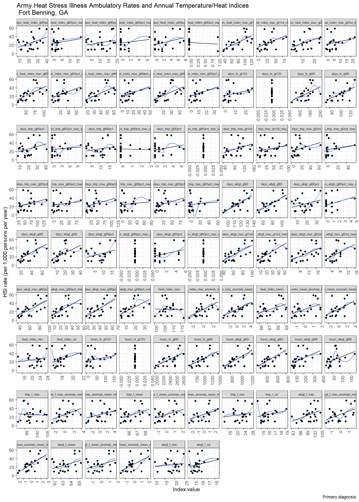
joined_rate %>%
filter(installation == "fort_jackson") %>%
ggplot(aes(x = value, y = rate)) +
geom_point() +
geom_smooth(method = lm, se = FALSE, size = 0.5, color = "black") +
geom_smooth(se = FALSE, size = 0.5) +
facet_wrap(~ index, scales = "free_x") +
labs(
title = "Army Heat Stress Illness Ambulatory Rates and Annual Temperature/Heat Indices \n Fort Jackson, SC",
x = "Index value",
y = "HSI rate (per 1,000 persons per year)",
caption = "Primary diagnosis"
) +
theme_bw() +
theme(strip.text = element_text(size = 6)) +
theme(axis.text.x = element_text(angle = 90, hjust = 1))## `geom_smooth()` using method = 'loess' and formula 'y ~ x'
joined_rate %>%
filter(installation == "fort_campbell") %>%
ggplot(aes(x = value, y = rate)) +
geom_point() +
geom_smooth(method = lm, se = FALSE, size = 0.5, color = "black") +
geom_smooth(se = FALSE, size = 0.5) +
facet_wrap(~ index, scales = "free_x") +
labs(
title = "Army Heat Stress Illness Ambulatory Rates and Annual Temperature/Heat Indices \n Fort Campbell, KY",
x = "Index value",
y = "HSI rate (per 1,000 persons per year)",
caption = "Primary diagnosis"
) +
theme_bw() +
theme(strip.text = element_text(size = 6)) +
theme(axis.text.x = element_text(angle = 90, hjust = 1))## `geom_smooth()` using method = 'loess' and formula 'y ~ x'
Linear models
# Linear regression function
annual_lm = function(df) {
df %>%
lm(rate ~ value, data = .)
}
# Nest by each installation - index pair
annual_hsi_nest <-
joined_rate %>%
nest(data = year:rate) %>%
mutate(linear_models = map(data, annual_lm),
glance = map(linear_models, broom::glance),
tidy = map(linear_models, broom::glance))
annual_hsi_nest## # A tibble: 946 x 6
## # Groups: installation [11]
## installation index data linear_models glance tidy
## <chr> <chr> <list<df[,> <list> <list> <list>
## 1 fort_benning_~ tmp_f_mean [22 x 3] <lm> <tibble [1 ~ <tibble [1~
## 2 fort_benning_~ heat_index~ [22 x 3] <lm> <tibble [1 ~ <tibble [1~
## 3 fort_benning_~ wbgt_f_mean [22 x 3] <lm> <tibble [1 ~ <tibble [1~
## 4 fort_benning_~ tmp_f_max [22 x 3] <lm> <tibble [1 ~ <tibble [1~
## 5 fort_benning_~ heat_index~ [22 x 3] <lm> <tibble [1 ~ <tibble [1~
## 6 fort_benning_~ wbgt_f_max [22 x 3] <lm> <tibble [1 ~ <tibble [1~
## 7 fort_benning_~ tmp_f_min [22 x 3] <lm> <tibble [1 ~ <tibble [1~
## 8 fort_benning_~ heat_index~ [22 x 3] <lm> <tibble [1 ~ <tibble [1~
## 9 fort_benning_~ wbgt_f_min [22 x 3] <lm> <tibble [1 ~ <tibble [1~
## 10 fort_benning_~ tmp_f_sd [22 x 3] <lm> <tibble [1 ~ <tibble [1~
## # ... with 936 more rowsLinear Models Summary Table
All models, sorted by R2
# Model summaries
annual_hsi_nest %>%
unnest(glance) %>%
unnest(tidy, names_repair = "universal") %>%
dplyr::select(installation, index, statistic...8, r.squared...5, p.value...9, logLik...11) %>%
rename(statistic = statistic...8,
r_squared = r.squared...5,
p_value = p.value...9,
log_lik = logLik...11) %>%
arrange(desc(r_squared), .by_group = FALSE) %>%
knitr::kable(digits = 4) %>%
kable_styling(bootstrap_options = "striped", font_size = 10) %>%
scroll_box(height = "700px")## New names:
## * r.squared -> r.squared...5
## * adj.r.squared -> adj.r.squared...6
## * sigma -> sigma...7
## * statistic -> statistic...8
## * p.value -> p.value...9
## * ... and 17 more problems| installation | index | statistic | r_squared | p_value | log_lik |
|---|---|---|---|---|---|
| fort_campbell | days_tmp_gt85pct | 21.0451 | 0.5127 | 0.0002 | -53.8211 |
| fort_campbell | days_wbgt_max_gt85pct | 20.8424 | 0.5103 | 0.0002 | -53.8755 |
| fort_benning_ga | days_wbgt_max_gt1sd | 19.8753 | 0.4984 | 0.0002 | -83.1107 |
| fort_benning_ga | days_wbgt_gt82 | 18.5328 | 0.4810 | 0.0003 | -83.4874 |
| fort_benning_ga | days_wbgt_max_gt85pct | 17.2095 | 0.4625 | 0.0005 | -83.8718 |
| fort_benning_ga | hours_wbgt_gt82 | 17.1687 | 0.4619 | 0.0005 | -83.8838 |
| fort_benning_ga | days_wbgt_gt85 | 17.0433 | 0.4601 | 0.0005 | -83.9210 |
| fort_jackson | days_hi_gt80 | 16.7544 | 0.4558 | 0.0006 | -92.5255 |
| fort_campbell | days_heat_index_gt85pct | 16.6548 | 0.4544 | 0.0006 | -55.0655 |
| fort_benning_ga | days_wbgt_max_gt90pct | 16.2823 | 0.4488 | 0.0006 | -84.1493 |
| fort_jackson | days_tmp_gt90pct_may_sep | 15.4635 | 0.4360 | 0.0008 | -92.9188 |
| fort_campbell | days_wbgt_max_gt90pct | 15.4312 | 0.4355 | 0.0008 | -55.4389 |
| fort_jackson | days_heat_index_gt90pct_may_sep | 15.3335 | 0.4340 | 0.0009 | -92.9592 |
| fort_jackson | days_tmp_gt85pct_may_sep | 15.3153 | 0.4337 | 0.0009 | -92.9649 |
| fort_benning_ga | days_heat_index_max_gt90pct | 14.8964 | 0.4269 | 0.0010 | -84.5778 |
| fort_benning_ga | days_heat_index_max_gt1sd | 14.2866 | 0.4167 | 0.0012 | -84.7717 |
| fort_benning_ga | wbgt_f_max_anomaly_mean_may_sep | 14.0888 | 0.4133 | 0.0013 | -84.8353 |
| fort_jackson | days_heat_index_max_gt2sd | 14.0878 | 0.4133 | 0.0013 | -93.3540 |
| fort_jackson | days_heat_index_max_gt2sd_may_sep | 13.6624 | 0.4059 | 0.0014 | -93.4922 |
| fort_jackson | days_heat_index_gt85pct_may_sep | 13.3034 | 0.3995 | 0.0016 | -93.6101 |
| fort_benning_ga | hours_wbgt_gt85 | 13.2051 | 0.3977 | 0.0017 | -85.1242 |
| fort_benning_ga | days_wbgt_max_gt1sd_may_sep | 12.3749 | 0.3822 | 0.0022 | -85.4028 |
| fort_campbell | wbgt_f_mean_anomaly_mean | 12.2610 | 0.3801 | 0.0022 | -56.4700 |
| fort_campbell | wbgt_f_mean | 12.2157 | 0.3792 | 0.0023 | -56.4855 |
| fort_jackson | days_wbgt_max_gt2sd_may_sep | 12.1869 | 0.3786 | 0.0023 | -93.9852 |
| fort_jackson | hours_hi_gt80 | 11.6470 | 0.3680 | 0.0028 | -94.1713 |
| fort_benning_ga | days_wbgt_max_gt2sd | 11.5101 | 0.3653 | 0.0029 | -85.7006 |
| fort_benning_ga | days_heat_index_max_gt85pct | 11.3013 | 0.3610 | 0.0031 | -85.7737 |
| ntc_and_fort_irwin | wbgt_f_min | 11.2805 | 0.3606 | 0.0031 | -41.0461 |
| fort_jackson | days_heat_index_max_gt90pct | 11.2172 | 0.3593 | 0.0032 | -94.3217 |
| fort_benning_ga | days_wbgt_gt88 | 10.9763 | 0.3543 | 0.0035 | -85.8885 |
| fort_jackson | days_heat_index_max_gt85pct_may_sep | 10.9555 | 0.3539 | 0.0035 | -94.4143 |
| fort_jackson | days_heat_index_max_gt85pct | 10.7207 | 0.3490 | 0.0038 | -94.4981 |
| fort_jackson | tmp_f_max_anomaly_mean_may_sep | 10.6864 | 0.3482 | 0.0038 | -94.5104 |
| fort_jackson | heat_index_max_anomaly_mean_may_sep | 10.6426 | 0.3473 | 0.0039 | -94.5261 |
| fort_benning_ga | days_wbgt_max_gt85pct_may_sep | 10.6112 | 0.3466 | 0.0039 | -86.0189 |
| fort_campbell | wbgt_f_max_anomaly_mean | 10.6015 | 0.3464 | 0.0040 | -57.0509 |
| fort_jackson | days_heat_index_max_gt1sd_may_sep | 10.3561 | 0.3412 | 0.0043 | -94.6294 |
| fort_jackson | days_heat_index_max_gt95pct | 10.2018 | 0.3378 | 0.0046 | -94.6855 |
| fort_benning_ga | days_heat_index_max_gt95pct | 10.0375 | 0.3342 | 0.0048 | -86.2271 |
| fort_benning_ga | heat_index_max_anomaly_mean | 9.9977 | 0.3333 | 0.0049 | -86.2417 |
| fort_benning_ga | days_wbgt_max_gt90pct_may_sep | 9.9944 | 0.3332 | 0.0049 | -86.2429 |
| fort_jackson | days_tmp_max_gt95pct | 9.8916 | 0.3309 | 0.0051 | -94.7990 |
| fort_jackson | days_heat_index_max_gt1sd | 9.8160 | 0.3292 | 0.0052 | -94.8269 |
| fort_jackson | days_tmp_max_gt1sd_may_sep | 9.7793 | 0.3284 | 0.0053 | -94.8404 |
| fort_jackson | tmp_f_mean_anomaly_mean_may_sep | 9.7788 | 0.3284 | 0.0053 | -94.8406 |
| fort_benning_ga | wbgt_f_mean_anomaly_mean_may_sep | 9.7037 | 0.3267 | 0.0055 | -86.3500 |
| fort_jackson | days_heat_index_max_gt90pct_may_sep | 9.6678 | 0.3259 | 0.0055 | -94.8817 |
| fort_campbell | heat_index_mean_anomaly_mean | 9.5211 | 0.3225 | 0.0058 | -57.4463 |
| fort_campbell | heat_index_mean | 9.5056 | 0.3222 | 0.0059 | -57.4521 |
| fort_benning_ga | hours_hi_gt80 | 9.4902 | 0.3218 | 0.0059 | -86.4293 |
| fort_jackson | days_wbgt_gt85 | 9.3308 | 0.3181 | 0.0063 | -95.0074 |
| fort_jackson | days_wbgt_max_gt2sd | 9.3170 | 0.3178 | 0.0063 | -95.0125 |
| fort_jackson | days_tmp_max_gt1sd | 9.3102 | 0.3176 | 0.0063 | -95.0151 |
| fort_jackson | tmp_f_max_anomaly_mean | 9.1037 | 0.3128 | 0.0068 | -95.0928 |
| fort_benning_ga | days_hi_gt90 | 9.0383 | 0.3113 | 0.0070 | -86.5992 |
| fort_jackson | hours_hi_gt90 | 9.0096 | 0.3106 | 0.0071 | -95.1285 |
| fort_campbell | days_heat_index_max_gt2sd | 8.8085 | 0.3058 | 0.0076 | -57.7151 |
| fort_jackson | days_wbgt_max_gt85pct_may_sep | 8.7105 | 0.3034 | 0.0079 | -95.2425 |
| fort_benning_ga | hours_hi_gt90 | 8.5994 | 0.3007 | 0.0082 | -86.7667 |
| fort_jackson | days_tmp_max_gt95pct_may_sep | 8.5337 | 0.2991 | 0.0084 | -95.3104 |
| fort_jackson | heat_index_mean_anomaly_mean_may_sep | 8.3757 | 0.2952 | 0.0090 | -95.3715 |
| fort_jackson | days_tmp_gt90pct | 8.3553 | 0.2947 | 0.0090 | -95.3794 |
| fort_jackson | days_heat_index_max_gt95pct_may_sep | 8.2940 | 0.2931 | 0.0093 | -95.4032 |
| fort_jackson | heat_index_max_anomaly_mean | 8.2612 | 0.2923 | 0.0094 | -95.4160 |
| fort_campbell | days_heat_index_max_gt2sd_may_sep | 8.2146 | 0.2911 | 0.0095 | -57.9442 |
| fort_jackson | days_tmp_max_gt90pct | 8.1948 | 0.2906 | 0.0096 | -95.4419 |
| fort_jackson | tmp_f_max | 8.1874 | 0.2905 | 0.0097 | -95.4448 |
| ntc_and_fort_irwin | tmp_f_min | 8.1235 | 0.2889 | 0.0099 | -42.2164 |
| ntc_and_fort_irwin | heat_index_min | 8.1235 | 0.2889 | 0.0099 | -42.2164 |
| fort_benning_ga | heat_index_max_anomaly_mean_may_sep | 8.0607 | 0.2873 | 0.0101 | -86.9759 |
| fort_jackson | days_tmp_max_gt85pct | 8.0469 | 0.2869 | 0.0102 | -95.4997 |
| fort_jackson | days_tmp_max_gt90pct_may_sep | 7.9762 | 0.2851 | 0.0105 | -95.5275 |
| fort_jackson | days_tmp_max_gt2sd_may_sep | 7.9438 | 0.2843 | 0.0106 | -95.5402 |
| fort_jackson | days_tmp_max_gt85pct_may_sep | 7.9090 | 0.2834 | 0.0108 | -95.5540 |
| fort_jackson | days_tmp_gt85pct | 7.8983 | 0.2831 | 0.0108 | -95.5582 |
| fort_jackson | days_tmp_max_gt2sd | 7.8918 | 0.2829 | 0.0108 | -95.5607 |
| fort_stewart | days_hi_gt80 | 7.8627 | 0.2822 | 0.0110 | -47.3883 |
| fort_jackson | days_tmp_gt95pct_may_sep | 7.7642 | 0.2796 | 0.0114 | -95.6112 |
| fort_benning_ga | heat_index_mean_anomaly_mean_may_sep | 7.7015 | 0.2780 | 0.0117 | -87.1176 |
| fort_campbell | days_wbgt_max_gt1sd | 7.6806 | 0.2775 | 0.0118 | -58.1544 |
| fort_benning_ga | days_wbgt_gt90 | 7.6083 | 0.2756 | 0.0121 | -87.1547 |
| fort_jackson | hours_hi_gt103 | 7.3631 | 0.2691 | 0.0134 | -95.7712 |
| fort_jackson | days_wbgt_max_gt1sd_may_sep | 7.3251 | 0.2681 | 0.0136 | -95.7865 |
| fort_campbell | days_heat_index_gt90pct | 7.3036 | 0.2675 | 0.0137 | -58.3053 |
| fort_campbell | days_wbgt_gt85pct | 7.1544 | 0.2635 | 0.0146 | -58.3656 |
| ntc_and_fort_irwin | days_tmp_max_gt1sd | 6.9426 | 0.2577 | 0.0159 | -42.6882 |
| fort_jackson | hours_wbgt_gt85 | 6.7565 | 0.2525 | 0.0172 | -96.0178 |
| fort_benning_ga | days_wbgt_max_gt2sd_may_sep | 6.7449 | 0.2522 | 0.0172 | -87.5042 |
| fort_benning_ga | wbgt_f_max_anomaly_mean | 6.6338 | 0.2491 | 0.0181 | -87.5500 |
| fort_benning_ga | heat_index_mean | 6.6330 | 0.2491 | 0.0181 | -87.5503 |
| fort_campbell | days_heat_index_max_gt95pct | 6.6233 | 0.2488 | 0.0181 | -58.5828 |
| fort_benning_ga | heat_index_mean_anomaly_mean | 6.6232 | 0.2488 | 0.0181 | -87.5544 |
| ntc_and_fort_irwin | days_hi_gt90 | 6.4058 | 0.2426 | 0.0199 | -42.9096 |
| fort_campbell | days_heat_index_gt85pct_may_sep | 6.3039 | 0.2397 | 0.0208 | -58.7156 |
| fort_campbell | tmp_f_mean_anomaly_mean | 6.2154 | 0.2371 | 0.0215 | -58.7526 |
| fort_campbell | tmp_f_mean | 6.2119 | 0.2370 | 0.0216 | -58.7541 |
| fort_benning_ga | days_hi_gt80 | 6.0220 | 0.2314 | 0.0234 | -87.8056 |
| fort_campbell | days_heat_index_max_gt1sd | 6.0124 | 0.2311 | 0.0235 | -58.8382 |
| fort_jackson | days_heat_index_gt90pct | 5.9736 | 0.2300 | 0.0239 | -96.3445 |
| fort_benning_ga | hours_wbgt_gt88 | 5.9580 | 0.2295 | 0.0241 | -87.8327 |
| ntc_and_fort_irwin | tmp_f_mean_anomaly_mean_may_sep | 5.9370 | 0.2289 | 0.0243 | -43.1067 |
| fort_hood | days_hi_gt80 | 5.9138 | 0.2282 | 0.0245 | -29.3702 |
| fort_stewart | days_tmp_gt85pct | 5.8824 | 0.2273 | 0.0249 | -48.1993 |
| fort_campbell | days_tmp_gt90pct | 5.8251 | 0.2256 | 0.0255 | -58.9177 |
| fort_polk | heat_index_max | 5.8126 | 0.2252 | 0.0257 | -67.6291 |
| ntc_and_fort_irwin | days_tmp_max_gt85pct | 5.6792 | 0.2212 | 0.0272 | -43.2166 |
| fort_jackson | hours_wbgt_gt82 | 5.6666 | 0.2208 | 0.0273 | -96.4753 |
| fort_hood | wbgt_f_mean_anomaly_mean_may_sep | 5.4994 | 0.2157 | 0.0295 | -29.5475 |
| fort_hood | days_heat_index_gt85pct | 5.4271 | 0.2134 | 0.0304 | -29.5788 |
| fort_jackson | days_hi_gt103 | 5.4102 | 0.2129 | 0.0306 | -96.5857 |
| fort_jackson | days_wbgt_max_gt1sd | 5.3917 | 0.2123 | 0.0309 | -96.5937 |
| fort_jackson | tmp_f_mean_anomaly_mean | 5.3797 | 0.2120 | 0.0311 | -96.5989 |
| fort_jackson | tmp_f_mean | 5.3704 | 0.2117 | 0.0312 | -96.6030 |
| fort_bliss | wbgt_f_max_anomaly_mean_may_sep | 5.3597 | 0.2113 | 0.0313 | -18.5144 |
| ntc_and_fort_irwin | days_hi_gt80 | 5.2321 | 0.2074 | 0.0332 | -43.4097 |
| fort_benning_ga | days_heat_index_max_gt1sd_may_sep | 5.2162 | 0.2069 | 0.0334 | -88.1516 |
| fort_jackson | wbgt_f_max_anomaly_mean_may_sep | 5.1495 | 0.2048 | 0.0345 | -96.6992 |
| fort_benning_ga | days_heat_index_max_gt2sd | 5.1470 | 0.2047 | 0.0345 | -88.1818 |
| fort_jackson | days_wbgt_max_gt85pct | 5.1409 | 0.2045 | 0.0346 | -96.7029 |
| fort_hood | heat_index_max_anomaly_mean | 5.1151 | 0.2037 | 0.0350 | -29.7146 |
| fort_hood | days_wbgt_gt85pct | 5.1010 | 0.2032 | 0.0352 | -29.7208 |
| ntc_and_fort_irwin | tmp_f_max_anomaly_mean_may_sep | 5.0975 | 0.2031 | 0.0353 | -43.4686 |
| fort_hood | days_wbgt_max_gt1sd | 5.0787 | 0.2025 | 0.0356 | -29.7305 |
| fort_bliss | wbgt_f_mean_anomaly_mean_may_sep | 5.0723 | 0.2023 | 0.0357 | -18.6397 |
| fort_jackson | days_wbgt_gt85pct_may_sep | 5.0540 | 0.2017 | 0.0360 | -96.7410 |
| ntc_and_fort_irwin | heat_index_max_anomaly_mean | 5.0474 | 0.2015 | 0.0361 | -43.4906 |
| ntc_and_fort_irwin | days_tmp_max_gt1sd_may_sep | 5.0369 | 0.2012 | 0.0363 | -43.4952 |
| fort_campbell | heat_index_sd | 5.0232 | 0.2007 | 0.0365 | -59.2646 |
| fort_campbell | wbgt_f_sd | 4.9947 | 0.1998 | 0.0370 | -59.2772 |
| fort_bliss | days_wbgt_gt82 | 4.9727 | 0.1991 | 0.0374 | -18.6835 |
| ntc_and_fort_irwin | tmp_f_max_anomaly_mean | 4.9709 | 0.1991 | 0.0374 | -43.5242 |
| fort_jackson | days_wbgt_max_gt90pct | 4.9212 | 0.1975 | 0.0383 | -96.7995 |
| ntc_and_fort_irwin | hours_hi_gt80 | 4.9074 | 0.1970 | 0.0385 | -43.5522 |
| fort_jackson | days_tmp_gt95pct | 4.8943 | 0.1966 | 0.0387 | -96.8114 |
| fort_hood | days_wbgt_max_gt85pct | 4.8469 | 0.1951 | 0.0396 | -29.8327 |
| ntc_and_fort_irwin | days_heat_index_max_gt1sd | 4.8332 | 0.1946 | 0.0399 | -43.5850 |
| fort_jackson | days_hi_gt90 | 4.8162 | 0.1941 | 0.0402 | -96.8459 |
| fort_polk | days_wbgt_gt85pct | 4.7983 | 0.1935 | 0.0405 | -68.0700 |
| fort_jackson | heat_index_max | 4.7926 | 0.1933 | 0.0406 | -96.8564 |
| fort_hood | heat_index_mean_anomaly_mean | 4.7873 | 0.1931 | 0.0407 | -29.8591 |
| fort_hood | days_heat_index_max_gt1sd | 4.7801 | 0.1929 | 0.0408 | -29.8623 |
| fort_hood | heat_index_mean | 4.7603 | 0.1923 | 0.0412 | -29.8711 |
| fort_jackson | heat_index_mean_anomaly_mean | 4.7285 | 0.1912 | 0.0418 | -96.8849 |
| fort_leonard_wood | heat_index_mean_anomaly_mean | 4.7175 | 0.1909 | 0.0421 | -65.6688 |
| fort_jackson | heat_index_mean | 4.7148 | 0.1908 | 0.0421 | -96.8910 |
| ntc_and_fort_irwin | wbgt_f_max | 4.7131 | 0.1907 | 0.0421 | -43.6384 |
| ntc_and_fort_irwin | heat_index_max_anomaly_mean_may_sep | 4.6828 | 0.1897 | 0.0427 | -43.6519 |
| fort_leonard_wood | tmp_f_mean_anomaly_mean | 4.6663 | 0.1892 | 0.0431 | -65.6916 |
| fort_jackson | days_wbgt_gt82 | 4.6662 | 0.1892 | 0.0431 | -96.9126 |
| fort_bliss | days_wbgt_max_gt2sd | 4.6626 | 0.1891 | 0.0432 | -18.8210 |
| fort_leonard_wood | heat_index_mean | 4.6434 | 0.1884 | 0.0435 | -65.7018 |
| fort_leonard_wood | tmp_f_mean | 4.6043 | 0.1871 | 0.0443 | -65.7193 |
| fort_jackson | hours_wbgt_gt90 | 4.5976 | 0.1869 | 0.0445 | -96.9432 |
| fort_hood | wbgt_f_max_anomaly_mean | 4.5637 | 0.1858 | 0.0452 | -29.9588 |
| fort_hood | days_wbgt_max_gt90pct | 4.4953 | 0.1835 | 0.0467 | -29.9895 |
| ntc_and_fort_irwin | tmp_f_mean | 4.4532 | 0.1821 | 0.0476 | -43.7547 |
| ntc_and_fort_irwin | tmp_f_mean_anomaly_mean | 4.4377 | 0.1816 | 0.0480 | -43.7616 |
| fort_benning_ga | days_heat_index_gt85pct | 4.4359 | 0.1815 | 0.0480 | -88.4974 |
| fort_jackson | hours_wbgt_gt88 | 4.3285 | 0.1779 | 0.0505 | -97.0642 |
| ntc_and_fort_irwin | heat_index_mean_anomaly_mean_may_sep | 4.3079 | 0.1772 | 0.0510 | -43.8202 |
| fort_polk | hours_hi_gt103 | 4.3076 | 0.1772 | 0.0511 | -68.2898 |
| fort_campbell | tmp_f_sd | 4.2603 | 0.1756 | 0.0522 | -59.6052 |
| fort_stewart | days_heat_index_max_gt2sd | 4.2533 | 0.1754 | 0.0524 | -48.9144 |
| fort_jackson | days_wbgt_max_gt90pct_may_sep | 4.2403 | 0.1749 | 0.0527 | -97.1042 |
| fort_hood | wbgt_f_mean_anomaly_mean | 4.2149 | 0.1741 | 0.0534 | -30.1161 |
| fort_campbell | heat_index_max_anomaly_mean | 4.1987 | 0.1735 | 0.0538 | -59.6332 |
| fort_hood | wbgt_f_mean | 4.1828 | 0.1730 | 0.0542 | -30.1307 |
| fort_benning_ga | tmp_f_mean_anomaly_mean_may_sep | 4.1592 | 0.1722 | 0.0548 | -88.6227 |
| fort_bliss | days_wbgt_max_gt1sd | 4.1532 | 0.1720 | 0.0550 | -19.0506 |
| fort_bliss | heat_index_mean_anomaly_mean_may_sep | 4.1144 | 0.1706 | 0.0560 | -19.0682 |
| fort_jackson | days_heat_index_gt85pct | 4.0749 | 0.1693 | 0.0571 | -97.1795 |
| fort_benning_ga | wbgt_f_max | 4.0243 | 0.1675 | 0.0586 | -88.6842 |
| fort_hood | hours_wbgt_gt82 | 4.0210 | 0.1674 | 0.0587 | -30.2046 |
| fort_leonard_wood | heat_index_max_anomaly_mean | 3.9936 | 0.1664 | 0.0595 | -65.9958 |
| fort_bliss | days_wbgt_max_gt1sd_may_sep | 3.9717 | 0.1657 | 0.0601 | -19.1335 |
| fort_benning_ga | hours_wbgt_gt90 | 3.9126 | 0.1636 | 0.0619 | -88.7355 |
| fort_bliss | days_wbgt_max_gt90pct | 3.8941 | 0.1630 | 0.0624 | -19.1692 |
| ntc_and_fort_irwin | days_heat_index_max_gt85pct | 3.8807 | 0.1625 | 0.0628 | -44.0153 |
| fort_campbell | days_heat_index_max_gt90pct | 3.8546 | 0.1616 | 0.0637 | -59.7907 |
| fort_stewart | wbgt_f_min | 3.8476 | 0.1613 | 0.0639 | -49.0999 |
| fort_benning_ga | days_heat_index_max_gt85pct_may_sep | 3.8372 | 0.1610 | 0.0642 | -88.7702 |
| fort_benning_ga | tmp_f_max_anomaly_mean | 3.8304 | 0.1607 | 0.0644 | -88.7734 |
| ntc_and_fort_irwin | days_wbgt_gt82 | 3.8304 | 0.1607 | 0.0644 | -44.0385 |
| fort_bliss | tmp_f_mean_anomaly_mean_may_sep | 3.8186 | 0.1603 | 0.0648 | -19.2040 |
| ntc_and_fort_irwin | heat_index_mean | 3.8077 | 0.1599 | 0.0652 | -44.0490 |
| fort_bliss | days_wbgt_max_gt90pct_may_sep | 3.8075 | 0.1599 | 0.0652 | -19.2091 |
| ntc_and_fort_irwin | heat_index_mean_anomaly_mean | 3.7904 | 0.1593 | 0.0657 | -44.0570 |
| fort_hood | days_wbgt_gt82 | 3.7716 | 0.1587 | 0.0663 | -30.3193 |
| fort_bliss | days_heat_index_max_gt2sd | 3.7711 | 0.1586 | 0.0664 | -19.2260 |
| fort_stewart | days_heat_index_max_gt95pct | 3.7422 | 0.1576 | 0.0673 | -49.1487 |
| fort_polk | days_heat_index_gt85pct | 3.7272 | 0.1571 | 0.0678 | -68.5557 |
| fort_bliss | hours_wbgt_gt82 | 3.7130 | 0.1566 | 0.0683 | -19.2529 |
| fort_stewart | days_tmp_max_gt2sd | 3.6890 | 0.1557 | 0.0691 | -49.1734 |
| fort_stewart | tmp_f_min | 3.6576 | 0.1546 | 0.0702 | -49.1879 |
| fort_stewart | heat_index_min | 3.6576 | 0.1546 | 0.0702 | -49.1879 |
| fort_jackson | days_heat_index_gt95pct | 3.6477 | 0.1543 | 0.0706 | -97.3764 |
| ntc_and_fort_irwin | days_heat_index_max_gt90pct | 3.6476 | 0.1542 | 0.0706 | -44.1232 |
| fort_stewart | days_tmp_max_gt95pct | 3.6089 | 0.1529 | 0.0720 | -49.2106 |
| fort_stewart | heat_index_max_anomaly_mean | 3.5732 | 0.1516 | 0.0733 | -49.2272 |
| fort_benning_ga | days_tmp_max_gt1sd | 3.5729 | 0.1516 | 0.0733 | -88.8929 |
| fort_leonard_wood | tmp_f_max_anomaly_mean | 3.5706 | 0.1515 | 0.0734 | -66.1914 |
| fort_benning_ga | tmp_f_mean | 3.5463 | 0.1506 | 0.0743 | -88.9053 |
| fort_hood | days_heat_index_max_gt90pct | 3.5432 | 0.1505 | 0.0744 | -30.4255 |
| fort_stewart | tmp_f_max_anomaly_mean | 3.5373 | 0.1503 | 0.0746 | -49.2440 |
| fort_benning_ga | tmp_f_mean_anomaly_mean | 3.5322 | 0.1501 | 0.0748 | -88.9119 |
| fort_jackson | days_wbgt_gt88 | 3.5247 | 0.1498 | 0.0751 | -97.4338 |
| ntc_and_fort_irwin | wbgt_f_mean_anomaly_mean_may_sep | 3.4960 | 0.1488 | 0.0762 | -44.1939 |
| fort_polk | hours_wbgt_gt85 | 3.4852 | 0.1484 | 0.0767 | -68.6685 |
| fort_campbell | tmp_f_max | 3.4672 | 0.1477 | 0.0774 | -59.9708 |
| fort_stewart | days_heat_index_max_gt1sd | 3.4603 | 0.1475 | 0.0776 | -49.2801 |
| fort_hood | wbgt_f_max_anomaly_mean_may_sep | 3.4276 | 0.1463 | 0.0789 | -30.4797 |
| fort_campbell | days_wbgt_max_gt2sd | 3.4062 | 0.1455 | 0.0798 | -59.9995 |
| fort_benning_ga | wbgt_f_mean_anomaly_mean | 3.3919 | 0.1450 | 0.0804 | -88.9777 |
| fort_benning_ga | wbgt_f_mean | 3.3881 | 0.1449 | 0.0806 | -88.9795 |
| fort_bliss | days_wbgt_gt85pct_may_sep | 3.3858 | 0.1448 | 0.0807 | -19.4057 |
| fort_leonard_wood | days_wbgt_max_gt85pct | 3.3677 | 0.1441 | 0.0814 | -66.2865 |
| fort_leonard_wood | wbgt_f_max_anomaly_mean | 3.3570 | 0.1437 | 0.0819 | -66.2915 |
| fort_leonard_wood | days_wbgt_max_gt90pct | 3.3513 | 0.1435 | 0.0821 | -66.2942 |
| fort_hood | days_tmp_gt85pct | 3.3427 | 0.1432 | 0.0825 | -30.5196 |
| ntc_and_fort_irwin | wbgt_f_max_anomaly_mean_may_sep | 3.3371 | 0.1430 | 0.0827 | -44.2685 |
| fort_stewart | days_heat_index_max_gt85pct | 3.2708 | 0.1406 | 0.0856 | -49.3693 |
| fort_polk | wbgt_f_mean | 3.2602 | 0.1402 | 0.0861 | -68.7743 |
| fort_polk | wbgt_f_mean_anomaly_mean | 3.2508 | 0.1398 | 0.0865 | -68.7788 |
| ntc_and_fort_irwin | days_heat_index_max_gt2sd | 3.2477 | 0.1397 | 0.0866 | -44.3108 |
| fort_jackson | days_heat_index_gt95pct_may_sep | 3.2359 | 0.1393 | 0.0871 | -97.5697 |
| ntc_and_fort_irwin | days_tmp_max_gt85pct_may_sep | 3.2005 | 0.1379 | 0.0888 | -44.3331 |
| fort_hood | days_heat_index_max_gt85pct | 3.1954 | 0.1378 | 0.0890 | -30.5892 |
| fort_stewart | days_tmp_max_gt85pct | 3.1836 | 0.1373 | 0.0896 | -49.4105 |
| fort_polk | days_hi_gt103 | 3.1594 | 0.1364 | 0.0907 | -68.8221 |
| fort_leonard_wood | hours_wbgt_gt82 | 3.1409 | 0.1357 | 0.0916 | -66.3938 |
| fort_bliss | hours_wbgt_gt90 | 3.0921 | 0.1339 | 0.0940 | -19.5447 |
| fort_stewart | days_tmp_max_gt90pct | 3.0828 | 0.1336 | 0.0944 | -49.4585 |
| fort_bliss | heat_index_max_anomaly_mean_may_sep | 3.0821 | 0.1335 | 0.0945 | -19.5495 |
| fort_campbell | days_tmp_gt85pct_may_sep | 3.0565 | 0.1326 | 0.0957 | -60.1650 |
| fort_bragg | days_heat_index_max_gt95pct | 3.0324 | 0.1317 | 0.0970 | -68.2036 |
| ntc_and_fort_irwin | days_heat_index_max_gt1sd_may_sep | 3.0124 | 0.1309 | 0.0980 | -44.4227 |
| fort_benning_ga | days_heat_index_max_gt90pct_may_sep | 3.0006 | 0.1305 | 0.0986 | -89.1632 |
| fort_bragg | days_hi_gt80 | 2.9581 | 0.1288 | 0.1009 | -68.2392 |
| fort_bliss | days_heat_index_gt90pct | 2.9521 | 0.1286 | 0.1012 | -19.6116 |
| fort_hood | hours_hi_gt80 | 2.8528 | 0.1248 | 0.1067 | -30.7529 |
| fort_bliss | days_heat_index_max_gt95pct | 2.8519 | 0.1248 | 0.1068 | -19.6598 |
| fort_hood | days_wbgt_gt90pct | 2.8427 | 0.1244 | 0.1073 | -30.7578 |
| fort_hood | days_heat_index_max_gt2sd | 2.8364 | 0.1242 | 0.1077 | -30.7608 |
| fort_jackson | tmp_f_sd | 2.8318 | 0.1240 | 0.1080 | -97.7627 |
| fort_stewart | days_wbgt_max_gt85pct | 2.8310 | 0.1240 | 0.1080 | -49.5792 |
| fort_bliss | days_heat_index_gt95pct_may_sep | 2.8135 | 0.1233 | 0.1090 | -19.6783 |
| fort_stewart | days_tmp_max_gt1sd | 2.7656 | 0.1215 | 0.1119 | -49.6107 |
| fort_stewart | days_heat_index_gt85pct | 2.7294 | 0.1201 | 0.1141 | -49.6282 |
| fort_leonard_wood | days_wbgt_max_gt1sd | 2.7166 | 0.1196 | 0.1149 | -66.5973 |
| fort_jackson | heat_index_sd | 2.7107 | 0.1194 | 0.1153 | -97.8212 |
| fort_leonard_wood | heat_index_max | 2.7097 | 0.1193 | 0.1154 | -66.6007 |
| fort_stewart | tmp_f_mean | 2.6812 | 0.1182 | 0.1172 | -49.6515 |
| fort_bliss | days_heat_index_max_gt1sd | 2.6665 | 0.1176 | 0.1181 | -19.7494 |
| fort_stewart | tmp_f_mean_anomaly_mean | 2.6498 | 0.1170 | 0.1192 | -49.6668 |
| fort_benning_ga | days_heat_index_max_gt95pct_may_sep | 2.6411 | 0.1166 | 0.1198 | -89.3366 |
| fort_polk | days_heat_index_max_gt95pct | 2.6342 | 0.1164 | 0.1202 | -69.0745 |
| fort_campbell | days_heat_index_max_gt85pct | 2.6323 | 0.1163 | 0.1204 | -60.3693 |
| fort_bliss | days_wbgt_gt90 | 2.6260 | 0.1161 | 0.1208 | -19.7691 |
| fort_stewart | days_tmp_max_gt2sd_may_sep | 2.6175 | 0.1157 | 0.1214 | -49.6825 |
| fort_bliss | days_wbgt_max_gt2sd_may_sep | 2.6098 | 0.1154 | 0.1219 | -19.7769 |
| fort_benning_ga | days_heat_index_gt95pct | 2.6047 | 0.1152 | 0.1222 | -89.3542 |
| fort_leonard_wood | days_tmp_max_gt1sd | 2.6038 | 0.1152 | 0.1223 | -66.6521 |
| fort_stewart | days_tmp_gt85pct_may_sep | 2.5590 | 0.1134 | 0.1253 | -49.7110 |
| fort_bliss | tmp_f_max_anomaly_mean_may_sep | 2.5530 | 0.1132 | 0.1258 | -19.8046 |
| fort_bragg | heat_index_sd | 2.5530 | 0.1132 | 0.1258 | -68.4350 |
| fort_hood | tmp_f_mean_anomaly_mean | 2.5233 | 0.1120 | 0.1279 | -30.9127 |
| fort_hood | days_heat_index_gt90pct | 2.5219 | 0.1120 | 0.1280 | -30.9134 |
| fort_hood | tmp_f_mean | 2.5115 | 0.1116 | 0.1287 | -30.9185 |
| fort_bragg | days_heat_index_max_gt95pct_may_sep | 2.4925 | 0.1108 | 0.1301 | -68.4645 |
| ntc_and_fort_irwin | days_wbgt_max_gt2sd | 2.4893 | 0.1107 | 0.1303 | -44.6756 |
| ntc_and_fort_irwin | days_tmp_gt85pct | 2.4675 | 0.1098 | 0.1319 | -44.6863 |
| fort_hood | days_heat_index_max_gt95pct | 2.4635 | 0.1097 | 0.1322 | -30.9420 |
| fort_bliss | days_heat_index_gt90pct_may_sep | 2.4507 | 0.1092 | 0.1332 | -19.8546 |
| fort_jackson | wbgt_f_max_anomaly_mean | 2.4409 | 0.1088 | 0.1339 | -97.9527 |
| fort_bliss | days_wbgt_gt85 | 2.4363 | 0.1086 | 0.1342 | -19.8616 |
| fort_benning_ga | days_wbgt_gt90pct | 2.4290 | 0.1083 | 0.1348 | -89.4401 |
| ntc_and_fort_irwin | wbgt_f_max_anomaly_mean | 2.4164 | 0.1078 | 0.1358 | -44.7113 |
| fort_polk | wbgt_f_sd | 2.4114 | 0.1076 | 0.1361 | -69.1833 |
| fort_polk | hours_wbgt_gt82 | 2.4028 | 0.1073 | 0.1368 | -69.1875 |
| fort_stewart | days_wbgt_gt88 | 2.4010 | 0.1072 | 0.1369 | -49.7883 |
| fort_bliss | days_wbgt_gt85pct | 2.3777 | 0.1063 | 0.1388 | -19.8904 |
| fort_jackson | days_wbgt_gt85pct | 2.3516 | 0.1052 | 0.1408 | -97.9965 |
| fort_bragg | wbgt_f_sd | 2.3499 | 0.1051 | 0.1410 | -68.5345 |
| fort_bragg | days_heat_index_max_gt2sd | 2.3301 | 0.1043 | 0.1426 | -68.5442 |
| fort_benning_ga | days_tmp_gt85pct | 2.2746 | 0.1021 | 0.1471 | -89.5161 |
| fort_benning_ga | heat_index_sd | 2.2523 | 0.1012 | 0.1490 | -89.5271 |
| ntc_and_fort_irwin | days_tmp_max_gt90pct | 2.2453 | 0.1009 | 0.1496 | -44.7956 |
| fort_hood | hours_wbgt_gt85 | 2.2451 | 0.1009 | 0.1497 | -31.0494 |
| fort_polk | days_tmp_gt85pct | 2.2423 | 0.1008 | 0.1499 | -69.2666 |
| fort_stewart | days_heat_index_max_gt90pct | 2.2312 | 0.1004 | 0.1509 | -49.8720 |
| fort_stewart | days_wbgt_gt90pct_may_sep | 2.2191 | 0.0999 | 0.1519 | -49.8780 |
| fort_benning_ga | days_wbgt_gt95pct | 2.2129 | 0.0996 | 0.1525 | -89.5466 |
| ntc_and_fort_irwin | days_tmp_max_gt2sd | 2.1890 | 0.0987 | 0.1546 | -44.8235 |
| ntc_and_fort_irwin | days_heat_index_max_gt95pct | 2.1881 | 0.0986 | 0.1547 | -44.8239 |
| fort_benning_ga | tmp_f_max_anomaly_mean_may_sep | 2.1754 | 0.0981 | 0.1558 | -89.5652 |
| fort_campbell | heat_index_max | 2.1704 | 0.0979 | 0.1563 | -60.5961 |
| fort_bliss | days_tmp_gt90pct_may_sep | 2.1667 | 0.0977 | 0.1566 | -19.9946 |
| fort_bliss | heat_index_sd | 2.1490 | 0.0970 | 0.1582 | -20.0034 |
| fort_benning_ga | days_tmp_max_gt85pct | 2.1454 | 0.0969 | 0.1585 | -89.5800 |
| fort_polk | days_heat_index_max_gt90pct | 2.1432 | 0.0968 | 0.1587 | -69.3157 |
| fort_benning_ga | days_tmp_max_gt95pct | 2.1350 | 0.0965 | 0.1595 | -89.5852 |
| fort_benning_ga | days_wbgt_gt85pct | 2.1214 | 0.0959 | 0.1608 | -89.5920 |
| fort_stewart | heat_index_mean | 2.1200 | 0.0958 | 0.1609 | -49.9272 |
| ntc_and_fort_irwin | wbgt_f_mean | 2.1181 | 0.0958 | 0.1611 | -44.8587 |
| fort_benning_ga | days_tmp_max_gt2sd | 2.1143 | 0.0956 | 0.1614 | -89.5955 |
| fort_hood | heat_index_mean_anomaly_mean_may_sep | 2.1116 | 0.0955 | 0.1617 | -31.1156 |
| fort_bliss | days_wbgt_max_gt85pct_may_sep | 2.1100 | 0.0954 | 0.1618 | -20.0228 |
| fort_leonard_wood | wbgt_f_mean_anomaly_mean | 2.1024 | 0.0951 | 0.1626 | -66.8988 |
| ntc_and_fort_irwin | wbgt_f_mean_anomaly_mean | 2.1005 | 0.0950 | 0.1627 | -44.8674 |
| fort_stewart | heat_index_mean_anomaly_mean | 2.0857 | 0.0944 | 0.1642 | -49.9442 |
| ntc_and_fort_irwin | days_wbgt_max_gt90pct | 2.0709 | 0.0938 | 0.1656 | -44.8822 |
| fort_polk | heat_index_sd | 2.0697 | 0.0938 | 0.1657 | -69.3523 |
| fort_stewart | days_tmp_gt95pct_may_sep | 2.0511 | 0.0930 | 0.1675 | -49.9615 |
| fort_campbell | days_wbgt_gt90pct | 2.0479 | 0.0929 | 0.1679 | -60.6571 |
| fort_leonard_wood | wbgt_f_mean | 2.0398 | 0.0925 | 0.1687 | -66.9301 |
| fort_bragg | heat_index_max_anomaly_mean_may_sep | 2.0349 | 0.0924 | 0.1691 | -68.6906 |
| fort_jackson | wbgt_f_mean_anomaly_mean_may_sep | 2.0320 | 0.0922 | 0.1694 | -98.1549 |
| fort_campbell | tmp_f_max_anomaly_mean | 2.0279 | 0.0921 | 0.1698 | -60.6670 |
| fort_polk | wbgt_f_max_anomaly_mean | 2.0166 | 0.0916 | 0.1710 | -69.3788 |
| fort_bliss | days_tmp_max_gt95pct_may_sep | 2.0154 | 0.0915 | 0.1711 | -20.0700 |
| fort_hood | hours_wbgt_gt88 | 2.0133 | 0.0915 | 0.1713 | -31.1646 |
| fort_stewart | days_tmp_max_gt95pct_may_sep | 1.9964 | 0.0908 | 0.1730 | -49.9888 |
| fort_bliss | hours_wbgt_gt85 | 1.9801 | 0.0901 | 0.1747 | -20.0876 |
| fort_riley | days_heat_index_gt95pct | 1.9797 | 0.0901 | 0.1748 | -39.4709 |
| fort_polk | days_heat_index_max_gt95pct_may_sep | 1.9789 | 0.0900 | 0.1749 | -69.3976 |
| fort_bragg | days_heat_index_gt95pct | 1.9768 | 0.0900 | 0.1751 | -68.7196 |
| fort_benning_ga | days_wbgt_gt85pct_may_sep | 1.9759 | 0.0899 | 0.1752 | -89.6646 |
| fort_stewart | days_hi_gt103 | 1.9681 | 0.0896 | 0.1760 | -50.0029 |
| fort_jackson | days_wbgt_gt95pct_may_sep | 1.9651 | 0.0895 | 0.1763 | -98.1884 |
| fort_jackson | days_wbgt_gt90 | 1.9645 | 0.0894 | 0.1764 | -98.1887 |
| fort_stewart | days_tmp_max_gt85pct_may_sep | 1.9615 | 0.0893 | 0.1767 | -50.0063 |
| fort_bliss | days_hi_gt90 | 1.9604 | 0.0893 | 0.1768 | -20.0975 |
| fort_bliss | wbgt_f_sd | 1.9564 | 0.0891 | 0.1772 | -20.0995 |
| fort_stewart | days_heat_index_max_gt1sd_may_sep | 1.9563 | 0.0891 | 0.1772 | -50.0088 |
| fort_bliss | days_tmp_gt85pct_may_sep | 1.9506 | 0.0889 | 0.1778 | -20.1024 |
| fort_stewart | days_wbgt_max_gt90pct | 1.9466 | 0.0887 | 0.1783 | -50.0137 |
| fort_campbell | days_tmp_max_gt95pct | 1.9370 | 0.0883 | 0.1793 | -60.7126 |
| fort_hood | days_tmp_gt95pct | 1.9346 | 0.0882 | 0.1795 | -31.2040 |
| fort_bliss | days_tmp_max_gt2sd | 1.9232 | 0.0877 | 0.1808 | -20.1161 |
| fort_stewart | days_tmp_max_gt90pct_may_sep | 1.9164 | 0.0874 | 0.1815 | -50.0289 |
| fort_benning_ga | days_tmp_max_gt90pct | 1.9103 | 0.0872 | 0.1822 | -89.6975 |
| fort_polk | days_wbgt_gt85 | 1.9077 | 0.0871 | 0.1825 | -69.4333 |
| fort_bliss | hours_wbgt_gt88 | 1.8930 | 0.0865 | 0.1841 | -20.1313 |
| fort_hood | tmp_f_max_anomaly_mean | 1.8683 | 0.0854 | 0.1868 | -31.2373 |
| ntc_and_fort_irwin | days_heat_index_max_gt85pct_may_sep | 1.8666 | 0.0854 | 0.1870 | -44.9845 |
| fort_stewart | hours_wbgt_gt88 | 1.8658 | 0.0853 | 0.1871 | -50.0543 |
| fort_bliss | days_heat_index_max_gt1sd_may_sep | 1.8631 | 0.0852 | 0.1874 | -20.1463 |
| fort_stewart | tmp_f_max_anomaly_mean_may_sep | 1.8552 | 0.0849 | 0.1883 | -50.0596 |
| fort_bliss | days_heat_index_max_gt2sd_may_sep | 1.8519 | 0.0847 | 0.1887 | -20.1520 |
| fort_riley | days_wbgt_gt95pct | 1.8475 | 0.0846 | 0.1892 | -39.5373 |
| fort_bliss | days_wbgt_max_gt85pct | 1.8343 | 0.0840 | 0.1907 | -20.1609 |
| ntc_and_fort_irwin | hours_hi_gt90 | 1.8304 | 0.0838 | 0.1912 | -45.0027 |
| fort_hood | days_heat_index_gt95pct | 1.8255 | 0.0836 | 0.1918 | -31.2589 |
| fort_polk | days_heat_index_max_gt90pct_may_sep | 1.8197 | 0.0834 | 0.1924 | -69.4776 |
| ntc_and_fort_irwin | days_heat_index_gt95pct_may_sep | 1.7636 | 0.0810 | 0.1991 | -45.0364 |
| fort_bliss | days_wbgt_gt88 | 1.7486 | 0.0804 | 0.2010 | -20.2041 |
| fort_bragg | tmp_f_sd | 1.7455 | 0.0803 | 0.2014 | -68.8360 |
| fort_hood | days_wbgt_gt95pct | 1.7433 | 0.0802 | 0.2016 | -31.3004 |
| fort_polk | days_wbgt_max_gt1sd | 1.7408 | 0.0801 | 0.2019 | -69.5174 |
| fort_polk | days_tmp_max_gt90pct_may_sep | 1.7391 | 0.0800 | 0.2022 | -69.5183 |
| fort_hood | heat_index_max_anomaly_mean_may_sep | 1.7308 | 0.0796 | 0.2032 | -31.3067 |
| ntc_and_fort_irwin | days_heat_index_max_gt2sd_may_sep | 1.7255 | 0.0794 | 0.2039 | -45.0557 |
| fort_stewart | days_heat_index_max_gt95pct_may_sep | 1.7059 | 0.0786 | 0.2063 | -50.1350 |
| fort_polk | heat_index_mean | 1.6979 | 0.0782 | 0.2074 | -69.5392 |
| fort_leonard_wood | hours_hi_gt80 | 1.6969 | 0.0782 | 0.2075 | -67.1025 |
| fort_stewart | hours_hi_gt103 | 1.6870 | 0.0778 | 0.2088 | -50.1446 |
| fort_bragg | days_tmp_gt95pct | 1.6865 | 0.0778 | 0.2088 | -68.8660 |
| fort_polk | heat_index_mean_anomaly_mean | 1.6849 | 0.0777 | 0.2091 | -69.5458 |
| fort_polk | days_heat_index_max_gt1sd | 1.6725 | 0.0772 | 0.2107 | -69.5521 |
| fort_campbell | days_wbgt_max_gt2sd_may_sep | 1.6671 | 0.0769 | 0.2114 | -60.8487 |
| fort_bragg | days_heat_index_max_gt2sd_may_sep | 1.6606 | 0.0767 | 0.2122 | -68.8791 |
| ntc_and_fort_irwin | days_tmp_gt95pct | 1.6605 | 0.0767 | 0.2122 | -45.0886 |
| fort_stewart | days_tmp_gt95pct | 1.6533 | 0.0764 | 0.2132 | -50.1617 |
| fort_bliss | days_heat_index_max_gt85pct | 1.6444 | 0.0760 | 0.2144 | -20.2569 |
| fort_bliss | days_tmp_max_gt95pct | 1.6425 | 0.0759 | 0.2146 | -20.2579 |
| fort_bragg | days_heat_index_max_gt85pct | 1.6287 | 0.0753 | 0.2165 | -68.8953 |
| fort_hood | days_wbgt_gt85 | 1.6227 | 0.0750 | 0.2173 | -31.3616 |
| fort_bragg | hours_hi_gt90 | 1.6137 | 0.0747 | 0.2185 | -68.9029 |
| fort_stewart | days_heat_index_max_gt2sd_may_sep | 1.6111 | 0.0745 | 0.2189 | -50.1832 |
| fort_bragg | days_heat_index_max_gt1sd_may_sep | 1.6067 | 0.0744 | 0.2195 | -68.9065 |
| fort_bliss | days_wbgt_gt90pct_may_sep | 1.6036 | 0.0742 | 0.2199 | -20.2777 |
| fort_stewart | tmp_f_mean_anomaly_mean_may_sep | 1.6004 | 0.0741 | 0.2204 | -50.1886 |
| fort_bliss | days_tmp_gt85pct | 1.5785 | 0.0732 | 0.2235 | -20.2905 |
| fort_hood | days_tmp_gt90pct | 1.5782 | 0.0731 | 0.2235 | -31.3843 |
| ntc_and_fort_irwin | hours_wbgt_gt82 | 1.5778 | 0.0731 | 0.2235 | -45.1307 |
| fort_stewart | hours_hi_gt80 | 1.5687 | 0.0727 | 0.2248 | -50.2048 |
| fort_bliss | tmp_f_sd | 1.5571 | 0.0722 | 0.2265 | -20.3014 |
| fort_benning_ga | days_hi_gt103 | 1.5564 | 0.0722 | 0.2266 | -89.8766 |
| ntc_and_fort_irwin | days_tmp_max_gt95pct | 1.5522 | 0.0720 | 0.2272 | -45.1438 |
| fort_bliss | hours_hi_gt80 | 1.5509 | 0.0720 | 0.2274 | -20.3046 |
| fort_leonard_wood | days_heat_index_max_gt1sd | 1.5472 | 0.0718 | 0.2279 | -67.1787 |
| fort_bragg | days_heat_index_gt90pct | 1.5463 | 0.0718 | 0.2281 | -68.9373 |
| fort_bliss | days_tmp_max_gt1sd_may_sep | 1.5452 | 0.0717 | 0.2282 | -20.3074 |
| fort_bragg | days_wbgt_gt95pct | 1.5446 | 0.0717 | 0.2283 | -68.9381 |
| fort_stewart | days_wbgt_gt90 | 1.5439 | 0.0717 | 0.2284 | -50.2174 |
| fort_hood | days_wbgt_gt88 | 1.5437 | 0.0717 | 0.2284 | -31.4019 |
| fort_leonard_wood | days_heat_index_max_gt85pct | 1.5382 | 0.0714 | 0.2292 | -67.1833 |
| fort_riley | days_tmp_gt95pct | 1.5377 | 0.0714 | 0.2293 | -39.6944 |
| fort_bliss | days_heat_index_max_gt95pct_may_sep | 1.5297 | 0.0710 | 0.2305 | -20.3154 |
| fort_bliss | days_tmp_gt90pct | 1.5219 | 0.0707 | 0.2316 | -20.3194 |
| ntc_and_fort_irwin | tmp_f_max | 1.5070 | 0.0701 | 0.2338 | -45.1669 |
| fort_stewart | days_tmp_gt90pct_may_sep | 1.4994 | 0.0697 | 0.2350 | -50.2402 |
| fort_bragg | days_heat_index_max_gt85pct_may_sep | 1.4928 | 0.0695 | 0.2360 | -68.9646 |
| fort_polk | tmp_f_sd | 1.4904 | 0.0694 | 0.2364 | -69.6449 |
| fort_bragg | days_hi_gt90 | 1.4871 | 0.0692 | 0.2369 | -68.9676 |
| fort_polk | tmp_f_max | 1.4849 | 0.0691 | 0.2372 | -69.6477 |
| fort_bliss | days_heat_index_gt85pct | 1.4731 | 0.0686 | 0.2390 | -20.3443 |
| fort_bragg | hours_hi_gt80 | 1.4685 | 0.0684 | 0.2397 | -68.9771 |
| fort_hood | days_tmp_gt95pct_may_sep | 1.4509 | 0.0676 | 0.2424 | -31.4493 |
| fort_stewart | days_tmp_gt90pct | 1.4458 | 0.0674 | 0.2432 | -50.2676 |
| fort_stewart | days_heat_index_max_gt85pct_may_sep | 1.4246 | 0.0665 | 0.2466 | -50.2785 |
| fort_bliss | days_heat_index_max_gt85pct_may_sep | 1.4231 | 0.0664 | 0.2469 | -20.3700 |
| ntc_and_fort_irwin | days_tmp_gt90pct_may_sep | 1.4192 | 0.0663 | 0.2475 | -45.2119 |
| fort_bragg | heat_index_mean_anomaly_mean_may_sep | 1.4155 | 0.0661 | 0.2481 | -69.0043 |
| fort_bliss | wbgt_f_max_anomaly_mean | 1.4086 | 0.0658 | 0.2492 | -20.3774 |
| ntc_and_fort_irwin | days_wbgt_gt85 | 1.4050 | 0.0656 | 0.2498 | -45.2192 |
| fort_polk | tmp_f_mean | 1.3940 | 0.0652 | 0.2516 | -69.6943 |
| fort_polk | days_wbgt_max_gt85pct | 1.3934 | 0.0651 | 0.2517 | -69.6946 |
| fort_polk | days_wbgt_max_gt90pct | 1.3913 | 0.0650 | 0.2520 | -69.6957 |
| ntc_and_fort_irwin | days_heat_index_gt95pct | 1.3904 | 0.0650 | 0.2522 | -45.2267 |
| fort_stewart | heat_index_max_anomaly_mean_may_sep | 1.3855 | 0.0648 | 0.2530 | -50.2986 |
| fort_polk | tmp_f_mean_anomaly_mean | 1.3823 | 0.0646 | 0.2535 | -69.7003 |
| fort_bragg | days_wbgt_gt90pct_may_sep | 1.3820 | 0.0646 | 0.2536 | -69.0215 |
| fort_leonard_wood | days_wbgt_max_gt2sd | 1.3786 | 0.0645 | 0.2541 | -67.2651 |
| fort_bliss | days_tmp_max_gt1sd | 1.3720 | 0.0642 | 0.2552 | -20.3962 |
| fort_campbell | days_heat_index_gt95pct | 1.3562 | 0.0635 | 0.2579 | -61.0077 |
| fort_bragg | days_heat_index_max_gt90pct | 1.3547 | 0.0634 | 0.2582 | -69.0355 |
| fort_campbell | wbgt_f_mean_anomaly_mean_may_sep | 1.3433 | 0.0629 | 0.2601 | -61.0143 |
| fort_bliss | hours_hi_gt90 | 1.3268 | 0.0622 | 0.2630 | -20.4195 |
| fort_bragg | days_wbgt_max_gt90pct | 1.3074 | 0.0614 | 0.2664 | -69.0599 |
| fort_polk | days_tmp_max_gt90pct | 1.3033 | 0.0612 | 0.2671 | -69.7411 |
| fort_bragg | hours_wbgt_gt90 | 1.3023 | 0.0611 | 0.2673 | -69.0626 |
| fort_bragg | days_wbgt_max_gt2sd | 1.2982 | 0.0610 | 0.2680 | -69.0647 |
| fort_stewart | days_tmp_max_gt1sd_may_sep | 1.2963 | 0.0609 | 0.2683 | -50.3446 |
| fort_stewart | tmp_f_sd | 1.2800 | 0.0602 | 0.2713 | -50.3530 |
| ntc_and_fort_irwin | days_heat_index_gt90pct_may_sep | 1.2779 | 0.0601 | 0.2717 | -45.2847 |
| fort_polk | days_hi_gt80 | 1.2734 | 0.0599 | 0.2725 | -69.7565 |
| fort_hood | days_wbgt_gt90pct_may_sep | 1.2679 | 0.0596 | 0.2735 | -31.5436 |
| fort_polk | days_heat_index_gt90pct_may_sep | 1.2623 | 0.0594 | 0.2745 | -69.7623 |
| fort_campbell | days_wbgt_max_gt90pct_may_sep | 1.2576 | 0.0592 | 0.2754 | -61.0586 |
| fort_bragg | wbgt_f_max_anomaly_mean_may_sep | 1.2555 | 0.0591 | 0.2758 | -69.0868 |
| fort_polk | days_tmp_gt90pct_may_sep | 1.2533 | 0.0590 | 0.2762 | -69.7669 |
| ntc_and_fort_irwin | days_wbgt_max_gt85pct | 1.2531 | 0.0590 | 0.2762 | -45.2975 |
| ntc_and_fort_irwin | days_tmp_max_gt2sd_may_sep | 1.2525 | 0.0589 | 0.2763 | -45.2978 |
| fort_campbell | wbgt_f_max | 1.2462 | 0.0587 | 0.2775 | -61.0645 |
| fort_riley | days_tmp_max_gt90pct_may_sep | 1.2460 | 0.0586 | 0.2776 | -39.8444 |
| ntc_and_fort_irwin | days_tmp_gt85pct_may_sep | 1.2456 | 0.0586 | 0.2776 | -45.3014 |
| fort_benning_ga | days_tmp_gt95pct | 1.2304 | 0.0580 | 0.2805 | -90.0442 |
| fort_hood | hours_hi_gt90 | 1.2274 | 0.0578 | 0.2811 | -31.5646 |
| fort_bragg | days_heat_index_max_gt1sd | 1.2250 | 0.0577 | 0.2815 | -69.1026 |
| fort_bliss | days_wbgt_gt90pct | 1.2193 | 0.0575 | 0.2826 | -20.4751 |
| fort_hood | days_wbgt_gt85pct_may_sep | 1.2130 | 0.0572 | 0.2838 | -31.5720 |
| fort_stewart | tmp_f_max | 1.2126 | 0.0572 | 0.2839 | -50.3879 |
| fort_bliss | wbgt_f_mean_anomaly_mean | 1.2094 | 0.0570 | 0.2845 | -20.4803 |
| fort_hood | days_wbgt_max_gt1sd_may_sep | 1.2083 | 0.0570 | 0.2847 | -31.5744 |
| fort_stewart | days_wbgt_max_gt1sd | 1.1975 | 0.0565 | 0.2868 | -50.3957 |
| ntc_and_fort_irwin | days_wbgt_max_gt1sd | 1.1899 | 0.0562 | 0.2883 | -45.3303 |
| fort_bliss | days_tmp_max_gt85pct_may_sep | 1.1784 | 0.0556 | 0.2906 | -20.4964 |
| fort_benning_ga | hours_hi_gt103 | 1.1766 | 0.0556 | 0.2909 | -90.0721 |
| fort_bliss | days_heat_index_max_gt90pct | 1.1755 | 0.0555 | 0.2912 | -20.4978 |
| fort_hood | days_hi_gt90 | 1.1746 | 0.0555 | 0.2913 | -31.5919 |
| fort_jackson | days_wbgt_gt95pct | 1.1732 | 0.0554 | 0.2916 | -98.5923 |
| fort_campbell | hours_wbgt_gt82 | 1.1720 | 0.0554 | 0.2919 | -61.1030 |
| fort_bragg | hours_hi_gt103 | 1.1705 | 0.0553 | 0.2922 | -69.1308 |
| fort_bragg | days_wbgt_gt82 | 1.1685 | 0.0552 | 0.2926 | -69.1319 |
| fort_polk | days_wbgt_gt90pct | 1.1668 | 0.0551 | 0.2929 | -69.8118 |
| fort_benning_ga | days_heat_index_gt90pct | 1.1653 | 0.0551 | 0.2932 | -90.0780 |
| fort_jackson | wbgt_f_max | 1.1620 | 0.0549 | 0.2939 | -98.5981 |
| fort_polk | days_wbgt_gt82 | 1.1602 | 0.0548 | 0.2943 | -69.8152 |
| fort_bragg | days_tmp_max_gt95pct_may_sep | 1.1587 | 0.0548 | 0.2946 | -69.1370 |
| fort_polk | hours_hi_gt90 | 1.1508 | 0.0544 | 0.2962 | -69.8201 |
| fort_bragg | wbgt_f_mean_anomaly_mean_may_sep | 1.1483 | 0.0543 | 0.2967 | -69.1424 |
| fort_polk | days_tmp_max_gt95pct | 1.1427 | 0.0540 | 0.2978 | -69.8243 |
| ntc_and_fort_irwin | days_tmp_max_gt90pct_may_sep | 1.1419 | 0.0540 | 0.2980 | -45.3552 |
| fort_bragg | heat_index_max_anomaly_mean | 1.1394 | 0.0539 | 0.2985 | -69.1470 |
| fort_bragg | hours_wbgt_gt85 | 1.1393 | 0.0539 | 0.2985 | -69.1470 |
| fort_hood | days_wbgt_max_gt85pct_may_sep | 1.1386 | 0.0539 | 0.2987 | -31.6106 |
| fort_bliss | wbgt_f_mean | 1.1380 | 0.0538 | 0.2988 | -20.5174 |
| fort_benning_ga | days_heat_index_max_gt2sd_may_sep | 1.1334 | 0.0536 | 0.2997 | -90.0946 |
| fort_polk | days_tmp_max_gt85pct | 1.1286 | 0.0534 | 0.3007 | -69.8316 |
| fort_bragg | days_wbgt_max_gt2sd_may_sep | 1.1241 | 0.0532 | 0.3017 | -69.1550 |
| fort_bragg | days_hi_gt103 | 1.1227 | 0.0532 | 0.3020 | -69.1557 |
| fort_bliss | heat_index_max_anomaly_mean | 1.1209 | 0.0531 | 0.3023 | -20.5262 |
| fort_stewart | days_wbgt_gt85pct | 1.1148 | 0.0528 | 0.3036 | -50.4388 |
| fort_hood | days_wbgt_max_gt2sd | 1.1143 | 0.0528 | 0.3037 | -31.6233 |
| fort_polk | days_heat_index_max_gt85pct | 1.1029 | 0.0523 | 0.3062 | -69.8450 |
| fort_benning_ga | wbgt_f_sd | 1.0995 | 0.0521 | 0.3069 | -90.1122 |
| fort_campbell | hours_wbgt_gt90 | 1.0904 | 0.0517 | 0.3088 | -61.1455 |
| fort_bragg | days_wbgt_max_gt1sd_may_sep | 1.0896 | 0.0517 | 0.3090 | -69.1730 |
| fort_bragg | hours_wbgt_gt82 | 1.0886 | 0.0516 | 0.3092 | -69.1735 |
| fort_riley | days_wbgt_max_gt2sd_may_sep | 1.0835 | 0.0514 | 0.3103 | -39.9288 |
| fort_bliss | days_tmp_max_gt85pct | 1.0832 | 0.0514 | 0.3104 | -20.5459 |
| fort_bragg | days_tmp_max_gt95pct | 1.0651 | 0.0506 | 0.3144 | -69.1857 |
| fort_stewart | hours_wbgt_gt85 | 1.0621 | 0.0504 | 0.3150 | -50.4662 |
| fort_campbell | days_tmp_max_gt2sd | 1.0552 | 0.0501 | 0.3166 | -61.1639 |
| ntc_and_fort_irwin | days_tmp_gt90pct | 1.0551 | 0.0501 | 0.3166 | -45.4005 |
| fort_leonard_wood | days_hi_gt80 | 1.0448 | 0.0496 | 0.3189 | -67.4382 |
| fort_bliss | days_heat_index_gt85pct_may_sep | 1.0438 | 0.0496 | 0.3191 | -20.5664 |
| fort_leonard_wood | heat_index_mean_anomaly_mean_may_sep | 1.0385 | 0.0494 | 0.3203 | -67.4415 |
| fort_riley | days_heat_index_max_gt1sd_may_sep | 1.0351 | 0.0492 | 0.3211 | -39.9541 |
| fort_polk | days_wbgt_max_gt1sd_may_sep | 1.0313 | 0.0490 | 0.3220 | -69.8824 |
| fort_stewart | heat_index_mean_anomaly_mean_may_sep | 1.0305 | 0.0490 | 0.3222 | -50.4827 |
| fort_bragg | days_tmp_max_gt2sd | 1.0236 | 0.0487 | 0.3237 | -69.2074 |
| fort_riley | heat_index_max | 1.0233 | 0.0487 | 0.3238 | -39.9603 |
| fort_campbell | days_tmp_max_gt1sd | 1.0209 | 0.0486 | 0.3244 | -61.1818 |
| fort_riley | days_wbgt_max_gt90pct_may_sep | 1.0132 | 0.0482 | 0.3262 | -39.9656 |
| fort_stewart | days_heat_index_max_gt90pct_may_sep | 1.0118 | 0.0482 | 0.3265 | -50.4925 |
| fort_stewart | hours_wbgt_gt90 | 1.0116 | 0.0481 | 0.3265 | -50.4926 |
| fort_leonard_wood | tmp_f_mean_anomaly_mean_may_sep | 1.0031 | 0.0478 | 0.3285 | -67.4600 |
| fort_bragg | days_wbgt_max_gt85pct | 1.0001 | 0.0476 | 0.3292 | -69.2197 |
| fort_bliss | days_hi_gt80 | 0.9974 | 0.0475 | 0.3299 | -20.5907 |
| fort_bragg | tmp_f_mean_anomaly_mean_may_sep | 0.9919 | 0.0473 | 0.3312 | -69.2240 |
| fort_bliss | heat_index_mean_anomaly_mean | 0.9889 | 0.0471 | 0.3319 | -20.5952 |
| fort_leonard_wood | days_heat_index_max_gt90pct | 0.9867 | 0.0470 | 0.3324 | -67.4687 |
| fort_bragg | tmp_f_max_anomaly_mean_may_sep | 0.9825 | 0.0468 | 0.3334 | -69.2289 |
| fort_bragg | days_heat_index_max_gt90pct_may_sep | 0.9699 | 0.0463 | 0.3365 | -69.2356 |
| fort_bragg | days_wbgt_gt90pct | 0.9669 | 0.0461 | 0.3372 | -69.2371 |
| fort_riley | days_wbgt_max_gt85pct_may_sep | 0.9625 | 0.0459 | 0.3383 | -39.9921 |
| ntc_and_fort_irwin | days_wbgt_gt90pct | 0.9601 | 0.0458 | 0.3389 | -45.4502 |
| fort_jackson | days_wbgt_gt90pct | 0.9545 | 0.0456 | 0.3402 | -98.7065 |
| fort_polk | days_tmp_max_gt85pct_may_sep | 0.9543 | 0.0455 | 0.3403 | -69.9227 |
| fort_campbell | days_tmp_max_gt90pct | 0.9531 | 0.0455 | 0.3406 | -61.2173 |
| fort_bragg | days_wbgt_max_gt90pct_may_sep | 0.9504 | 0.0454 | 0.3413 | -69.2458 |
| ntc_and_fort_irwin | days_wbgt_gt85pct | 0.9499 | 0.0453 | 0.3414 | -45.4556 |
| fort_polk | heat_index_max_anomaly_mean | 0.9489 | 0.0453 | 0.3416 | -69.9256 |
| fort_riley | days_heat_index_max_gt2sd_may_sep | 0.9477 | 0.0452 | 0.3419 | -39.9999 |
| fort_benning_ga | days_tmp_max_gt1sd_may_sep | 0.9469 | 0.0452 | 0.3421 | -90.1921 |
| fort_bragg | days_wbgt_max_gt1sd | 0.9463 | 0.0452 | 0.3423 | -69.2480 |
| fort_campbell | days_wbgt_max_gt85pct_may_sep | 0.9391 | 0.0449 | 0.3441 | -61.2247 |
| ntc_and_fort_irwin | tmp_f_sd | 0.9339 | 0.0446 | 0.3454 | -45.4640 |
| fort_campbell | wbgt_f_min | 0.9334 | 0.0446 | 0.3455 | -61.2277 |
| fort_bragg | days_wbgt_gt90 | 0.9325 | 0.0445 | 0.3458 | -69.2552 |
| fort_leonard_wood | days_tmp_max_gt85pct | 0.9316 | 0.0445 | 0.3460 | -67.4976 |
| fort_bliss | days_tmp_max_gt90pct_may_sep | 0.9306 | 0.0445 | 0.3462 | -20.6258 |
| fort_bliss | days_tmp_max_gt2sd_may_sep | 0.9301 | 0.0444 | 0.3463 | -20.6261 |
| fort_bliss | heat_index_mean | 0.9293 | 0.0444 | 0.3465 | -20.6265 |
| fort_hood | days_heat_index_gt90pct_may_sep | 0.9279 | 0.0443 | 0.3469 | -31.7208 |
| ntc_and_fort_irwin | days_heat_index_gt85pct | 0.9249 | 0.0442 | 0.3477 | -45.4687 |
| fort_stewart | days_heat_index_gt90pct | 0.9217 | 0.0441 | 0.3485 | -50.5398 |
| fort_campbell | tmp_f_min | 0.9200 | 0.0440 | 0.3489 | -61.2347 |
| fort_campbell | heat_index_min | 0.9200 | 0.0440 | 0.3489 | -61.2347 |
| fort_bliss | days_tmp_gt95pct_may_sep | 0.9158 | 0.0438 | 0.3500 | -20.6336 |
| fort_benning_ga | tmp_f_sd | 0.8918 | 0.0427 | 0.3563 | -90.2211 |
| fort_riley | days_heat_index_max_gt2sd | 0.8903 | 0.0426 | 0.3567 | -40.0301 |
| fort_leonard_wood | wbgt_f_min | 0.8877 | 0.0425 | 0.3573 | -67.5206 |
| fort_campbell | days_tmp_max_gt90pct_may_sep | 0.8801 | 0.0421 | 0.3594 | -61.2557 |
| fort_leonard_wood | days_wbgt_gt82 | 0.8786 | 0.0421 | 0.3598 | -67.5255 |
| fort_stewart | days_wbgt_max_gt2sd | 0.8654 | 0.0415 | 0.3633 | -50.5694 |
| fort_stewart | heat_index_sd | 0.8629 | 0.0414 | 0.3640 | -50.5708 |
| fort_riley | days_heat_index_max_gt90pct_may_sep | 0.8608 | 0.0413 | 0.3646 | -40.0457 |
| fort_bliss | days_tmp_max_gt90pct | 0.8586 | 0.0412 | 0.3652 | -20.6637 |
| fort_bragg | days_wbgt_gt85 | 0.8583 | 0.0411 | 0.3653 | -69.2943 |
| fort_jackson | wbgt_f_mean_anomaly_mean | 0.8568 | 0.0411 | 0.3657 | -98.7579 |
| fort_leonard_wood | days_heat_index_gt90pct | 0.8555 | 0.0410 | 0.3660 | -67.5376 |
| fort_jackson | wbgt_f_mean | 0.8482 | 0.0407 | 0.3680 | -98.7624 |
| fort_bragg | days_wbgt_max_gt85pct_may_sep | 0.8442 | 0.0405 | 0.3692 | -69.3017 |
| fort_stewart | wbgt_f_max_anomaly_mean | 0.8435 | 0.0405 | 0.3693 | -50.5810 |
| ntc_and_fort_irwin | days_heat_index_max_gt90pct_may_sep | 0.8371 | 0.0402 | 0.3711 | -45.5150 |
| fort_bliss | days_heat_index_max_gt90pct_may_sep | 0.8353 | 0.0401 | 0.3716 | -20.6760 |
| fort_riley | hours_hi_gt90 | 0.8346 | 0.0401 | 0.3718 | -40.0595 |
| fort_bragg | days_tmp_max_gt90pct | 0.8328 | 0.0400 | 0.3723 | -69.3077 |
| fort_benning_ga | days_tmp_gt90pct | 0.8319 | 0.0399 | 0.3726 | -90.2527 |
| fort_riley | days_heat_index_gt90pct_may_sep | 0.8314 | 0.0399 | 0.3727 | -40.0612 |
| fort_hood | days_tmp_max_gt1sd | 0.8256 | 0.0396 | 0.3744 | -31.7747 |
| ntc_and_fort_irwin | days_tmp_max_gt95pct_may_sep | 0.8222 | 0.0395 | 0.3753 | -45.5228 |
| fort_hood | days_heat_index_max_gt1sd_may_sep | 0.8216 | 0.0395 | 0.3755 | -31.7769 |
| fort_bragg | days_wbgt_gt85pct | 0.8216 | 0.0395 | 0.3755 | -69.3136 |
| ntc_and_fort_irwin | days_wbgt_gt90pct_may_sep | 0.8175 | 0.0393 | 0.3767 | -45.5253 |
| fort_riley | days_hi_gt90 | 0.8146 | 0.0391 | 0.3775 | -40.0700 |
| fort_bragg | days_tmp_max_gt1sd_may_sep | 0.7996 | 0.0384 | 0.3818 | -69.3253 |
| fort_bragg | days_wbgt_gt88 | 0.7936 | 0.0382 | 0.3836 | -69.3284 |
| fort_riley | days_heat_index_gt85pct_may_sep | 0.7890 | 0.0380 | 0.3850 | -40.0836 |
| fort_leonard_wood | days_wbgt_max_gt1sd_may_sep | 0.7882 | 0.0379 | 0.3852 | -67.5732 |
| fort_stewart | days_wbgt_max_gt90pct_may_sep | 0.7799 | 0.0375 | 0.3877 | -50.6146 |
| fort_leonard_wood | heat_index_max_anomaly_mean_may_sep | 0.7787 | 0.0375 | 0.3880 | -67.5782 |
| fort_leonard_wood | days_wbgt_max_gt2sd_may_sep | 0.7724 | 0.0372 | 0.3899 | -67.5815 |
| fort_riley | days_tmp_max_gt1sd_may_sep | 0.7710 | 0.0371 | 0.3903 | -40.0931 |
| fort_leonard_wood | days_wbgt_gt90 | 0.7645 | 0.0368 | 0.3923 | -67.5857 |
| fort_hood | days_wbgt_max_gt90pct_may_sep | 0.7597 | 0.0366 | 0.3938 | -31.8096 |
| fort_leonard_wood | tmp_f_max_anomaly_mean_may_sep | 0.7458 | 0.0360 | 0.3980 | -67.5956 |
| fort_leonard_wood | tmp_f_min | 0.7316 | 0.0353 | 0.4025 | -67.6031 |
| fort_leonard_wood | heat_index_min | 0.7316 | 0.0353 | 0.4025 | -67.6031 |
| ntc_and_fort_irwin | heat_index_sd | 0.7289 | 0.0352 | 0.4033 | -45.5722 |
| ntc_and_fort_irwin | days_wbgt_max_gt1sd_may_sep | 0.7190 | 0.0347 | 0.4065 | -45.5775 |
| fort_stewart | days_wbgt_gt95pct | 0.7169 | 0.0346 | 0.4072 | -50.6480 |
| fort_bragg | days_tmp_max_gt90pct_may_sep | 0.6986 | 0.0338 | 0.4131 | -69.3788 |
| fort_riley | days_heat_index_max_gt85pct_may_sep | 0.6938 | 0.0335 | 0.4147 | -40.1341 |
| fort_bragg | days_tmp_max_gt85pct | 0.6917 | 0.0334 | 0.4154 | -69.3825 |
| fort_riley | tmp_f_max | 0.6908 | 0.0334 | 0.4157 | -40.1356 |
| fort_stewart | days_wbgt_gt85 | 0.6858 | 0.0332 | 0.4174 | -50.6646 |
| fort_leonard_wood | days_tmp_max_gt90pct | 0.6819 | 0.0330 | 0.4187 | -67.6295 |
| fort_bragg | days_tmp_max_gt85pct_may_sep | 0.6816 | 0.0330 | 0.4188 | -69.3878 |
| fort_riley | days_tmp_max_gt95pct_may_sep | 0.6739 | 0.0326 | 0.4214 | -40.1447 |
| fort_polk | days_tmp_max_gt95pct_may_sep | 0.6702 | 0.0324 | 0.4226 | -70.0729 |
| fort_hood | days_tmp_max_gt90pct_may_sep | 0.6678 | 0.0323 | 0.4235 | -31.8584 |
| fort_bliss | wbgt_f_max | 0.6577 | 0.0318 | 0.4269 | -20.7702 |
| fort_riley | days_tmp_max_gt2sd_may_sep | 0.6538 | 0.0317 | 0.4283 | -40.1553 |
| fort_riley | days_wbgt_max_gt2sd | 0.6507 | 0.0315 | 0.4294 | -40.1570 |
| fort_jackson | wbgt_f_sd | 0.6388 | 0.0310 | 0.4335 | -98.8735 |
| fort_bragg | days_tmp_max_gt1sd | 0.6177 | 0.0300 | 0.4411 | -69.4219 |
| fort_riley | days_wbgt_gt88 | 0.6154 | 0.0299 | 0.4419 | -40.1758 |
| fort_bragg | days_tmp_max_gt2sd_may_sep | 0.6014 | 0.0292 | 0.4471 | -69.4306 |
| fort_stewart | wbgt_f_sd | 0.5989 | 0.0291 | 0.4480 | -50.7108 |
| ntc_and_fort_irwin | days_heat_index_max_gt95pct_may_sep | 0.5943 | 0.0289 | 0.4498 | -45.6439 |
| fort_hood | days_tmp_max_gt85pct_may_sep | 0.5908 | 0.0287 | 0.4511 | -31.8995 |
| fort_bliss | days_heat_index_gt95pct | 0.5795 | 0.0282 | 0.4554 | -20.8119 |
| fort_campbell | days_tmp_max_gt85pct_may_sep | 0.5759 | 0.0280 | 0.4568 | -61.4171 |
| fort_campbell | days_tmp_max_gt85pct | 0.5741 | 0.0279 | 0.4575 | -61.4181 |
| fort_stewart | heat_index_max | 0.5723 | 0.0278 | 0.4582 | -50.7251 |
| ntc_and_fort_irwin | days_wbgt_max_gt85pct_may_sep | 0.5712 | 0.0278 | 0.4586 | -45.6562 |
| fort_benning_ga | tmp_f_min | 0.5693 | 0.0277 | 0.4593 | -90.3922 |
| fort_benning_ga | heat_index_min | 0.5693 | 0.0277 | 0.4593 | -90.3922 |
| fort_stewart | days_wbgt_max_gt85pct_may_sep | 0.5689 | 0.0277 | 0.4595 | -50.7269 |
| fort_bliss | tmp_f_mean_anomaly_mean | 0.5689 | 0.0277 | 0.4595 | -20.8175 |
| fort_bragg | hours_wbgt_gt88 | 0.5665 | 0.0275 | 0.4604 | -69.4492 |
| fort_benning_ga | days_tmp_max_gt2sd_may_sep | 0.5660 | 0.0275 | 0.4606 | -90.3940 |
| fort_stewart | days_wbgt_max_gt2sd_may_sep | 0.5600 | 0.0272 | 0.4630 | -50.7316 |
| fort_hood | days_tmp_max_gt2sd_may_sep | 0.5521 | 0.0269 | 0.4661 | -31.9202 |
| fort_leonard_wood | days_tmp_gt95pct | 0.5501 | 0.0268 | 0.4669 | -67.6999 |
| fort_riley | days_tmp_max_gt2sd | 0.5455 | 0.0265 | 0.4688 | -40.2132 |
| ntc_and_fort_irwin | days_heat_index_gt90pct | 0.5429 | 0.0264 | 0.4698 | -45.6714 |
| fort_bragg | tmp_f_max_anomaly_mean | 0.5418 | 0.0264 | 0.4702 | -69.4624 |
| fort_stewart | hours_hi_gt90 | 0.5389 | 0.0262 | 0.4714 | -50.7429 |
| fort_riley | days_wbgt_gt85 | 0.5341 | 0.0260 | 0.4734 | -40.2193 |
| fort_riley | days_tmp_max_gt85pct_may_sep | 0.5313 | 0.0259 | 0.4745 | -40.2208 |
| fort_bliss | tmp_f_max_anomaly_mean | 0.5312 | 0.0259 | 0.4745 | -20.8377 |
| fort_benning_ga | days_heat_index_gt85pct_may_sep | 0.5311 | 0.0259 | 0.4746 | -90.4126 |
| fort_bliss | days_wbgt_gt95pct_may_sep | 0.5287 | 0.0258 | 0.4756 | -20.8391 |
| fort_bliss | tmp_f_mean | 0.5250 | 0.0256 | 0.4771 | -20.8411 |
| fort_stewart | wbgt_f_max_anomaly_mean_may_sep | 0.5244 | 0.0256 | 0.4773 | -50.7507 |
| fort_campbell | hours_hi_gt90 | 0.5185 | 0.0253 | 0.4798 | -61.4479 |
| fort_polk | days_wbgt_gt88 | 0.5185 | 0.0253 | 0.4798 | -70.1539 |
| fort_leonard_wood | days_wbgt_max_gt85pct_may_sep | 0.5143 | 0.0251 | 0.4816 | -67.7191 |
| fort_hood | hours_wbgt_gt90 | 0.5004 | 0.0244 | 0.4875 | -31.9479 |
| fort_leonard_wood | days_tmp_max_gt1sd_may_sep | 0.5004 | 0.0244 | 0.4875 | -67.7265 |
| fort_benning_ga | days_tmp_max_gt85pct_may_sep | 0.4978 | 0.0243 | 0.4886 | -90.4305 |
| fort_bragg | days_heat_index_gt85pct | 0.4962 | 0.0242 | 0.4893 | -69.4869 |
| fort_campbell | days_wbgt_max_gt1sd_may_sep | 0.4943 | 0.0241 | 0.4901 | -61.4609 |
| fort_polk | wbgt_f_max_anomaly_mean_may_sep | 0.4912 | 0.0240 | 0.4915 | -70.1686 |
| fort_stewart | wbgt_f_max | 0.4897 | 0.0239 | 0.4921 | -50.7693 |
| fort_polk | days_heat_index_max_gt85pct_may_sep | 0.4895 | 0.0239 | 0.4922 | -70.1695 |
| fort_campbell | days_heat_index_max_gt95pct_may_sep | 0.4773 | 0.0233 | 0.4976 | -61.4700 |
| fort_hood | tmp_f_mean_anomaly_mean_may_sep | 0.4759 | 0.0232 | 0.4982 | -31.9610 |
| fort_polk | hours_wbgt_gt88 | 0.4679 | 0.0229 | 0.5018 | -70.1811 |
| fort_hood | days_tmp_max_gt95pct | 0.4620 | 0.0226 | 0.5045 | -31.9685 |
| fort_polk | hours_wbgt_gt90 | 0.4533 | 0.0222 | 0.5085 | -70.1890 |
| fort_bliss | heat_index_max | 0.4516 | 0.0221 | 0.5092 | -20.8804 |
| fort_bragg | wbgt_f_max | 0.4313 | 0.0211 | 0.5189 | -69.5218 |
| fort_polk | tmp_f_max_anomaly_mean | 0.4279 | 0.0209 | 0.5205 | -70.2026 |
| fort_campbell | hours_wbgt_gt88 | 0.4244 | 0.0208 | 0.5222 | -61.4984 |
| ntc_and_fort_irwin | hours_wbgt_gt85 | 0.4194 | 0.0205 | 0.5246 | -45.7377 |
| fort_leonard_wood | hours_wbgt_gt85 | 0.4105 | 0.0201 | 0.5290 | -67.7749 |
| fort_polk | days_tmp_max_gt1sd | 0.4034 | 0.0198 | 0.5326 | -70.2158 |
| fort_hood | wbgt_f_max | 0.4012 | 0.0197 | 0.5336 | -32.0012 |
| fort_polk | days_wbgt_max_gt90pct_may_sep | 0.3962 | 0.0194 | 0.5362 | -70.2197 |
| fort_leonard_wood | days_tmp_gt90pct | 0.3941 | 0.0193 | 0.5373 | -67.7837 |
| fort_leonard_wood | days_tmp_gt85pct | 0.3881 | 0.0190 | 0.5403 | -67.7869 |
| fort_bragg | heat_index_max | 0.3879 | 0.0190 | 0.5404 | -69.5452 |
| fort_hood | tmp_f_max | 0.3839 | 0.0188 | 0.5425 | -32.0105 |
| fort_riley | hours_wbgt_gt82 | 0.3833 | 0.0188 | 0.5428 | -40.3003 |
| fort_riley | days_hi_gt80 | 0.3824 | 0.0188 | 0.5433 | -40.3009 |
| fort_riley | hours_wbgt_gt85 | 0.3772 | 0.0185 | 0.5461 | -40.3037 |
| fort_bragg | days_heat_index_gt85pct_may_sep | 0.3768 | 0.0185 | 0.5462 | -69.5512 |
| fort_hood | days_heat_index_max_gt85pct_may_sep | 0.3713 | 0.0182 | 0.5492 | -32.0174 |
| ntc_and_fort_irwin | days_tmp_gt95pct_may_sep | 0.3700 | 0.0182 | 0.5499 | -45.7644 |
| fort_leonard_wood | wbgt_f_max_anomaly_mean_may_sep | 0.3685 | 0.0181 | 0.5506 | -67.7975 |
| fort_leonard_wood | wbgt_f_max | 0.3674 | 0.0180 | 0.5512 | -67.7981 |
| fort_leonard_wood | days_wbgt_max_gt90pct_may_sep | 0.3604 | 0.0177 | 0.5550 | -67.8019 |
| fort_campbell | days_wbgt_gt82 | 0.3586 | 0.0176 | 0.5560 | -61.5339 |
| fort_hood | days_tmp_gt85pct_may_sep | 0.3558 | 0.0175 | 0.5575 | -32.0257 |
| fort_benning_ga | days_heat_index_gt90pct_may_sep | 0.3543 | 0.0174 | 0.5584 | -90.5077 |
| fort_campbell | days_heat_index_gt90pct_may_sep | 0.3541 | 0.0174 | 0.5585 | -61.5364 |
| fort_polk | days_heat_index_max_gt1sd_may_sep | 0.3507 | 0.0172 | 0.5603 | -70.2443 |
| fort_jackson | days_wbgt_gt90pct_may_sep | 0.3481 | 0.0171 | 0.5618 | -99.0295 |
| fort_bragg | heat_index_mean_anomaly_mean | 0.3472 | 0.0171 | 0.5623 | -69.5672 |
| fort_bragg | heat_index_mean | 0.3470 | 0.0171 | 0.5624 | -69.5673 |
| fort_riley | days_wbgt_gt90pct | 0.3400 | 0.0167 | 0.5663 | -40.3238 |
| fort_leonard_wood | days_wbgt_gt90pct | 0.3310 | 0.0163 | 0.5715 | -67.8178 |
| fort_bragg | days_tmp_gt85pct | 0.3249 | 0.0160 | 0.5750 | -69.5792 |
| fort_leonard_wood | tmp_f_max | 0.3193 | 0.0157 | 0.5783 | -67.8241 |
| fort_jackson | wbgt_f_min | 0.3182 | 0.0157 | 0.5789 | -99.0457 |
| fort_benning_ga | wbgt_f_min | 0.3165 | 0.0156 | 0.5800 | -90.5282 |
| fort_polk | days_tmp_gt85pct_may_sep | 0.3078 | 0.0152 | 0.5852 | -70.2675 |
| fort_leonard_wood | hours_hi_gt90 | 0.3058 | 0.0151 | 0.5864 | -67.8314 |
| ntc_and_fort_irwin | days_wbgt_gt90 | 0.3033 | 0.0149 | 0.5879 | -45.8004 |
| fort_bliss | tmp_f_min | 0.2997 | 0.0148 | 0.5901 | -20.9625 |
| fort_bliss | heat_index_min | 0.2997 | 0.0148 | 0.5901 | -20.9625 |
| fort_riley | days_wbgt_gt85pct_may_sep | 0.2985 | 0.0147 | 0.5909 | -40.3462 |
| fort_leonard_wood | days_heat_index_gt85pct | 0.2973 | 0.0146 | 0.5916 | -67.8360 |
| fort_stewart | days_hi_gt90 | 0.2969 | 0.0146 | 0.5918 | -50.8733 |
| fort_leonard_wood | days_heat_index_max_gt95pct | 0.2961 | 0.0146 | 0.5923 | -67.8367 |
| fort_leonard_wood | days_tmp_max_gt2sd | 0.2939 | 0.0145 | 0.5937 | -67.8379 |
| fort_hood | days_wbgt_gt90 | 0.2915 | 0.0144 | 0.5952 | -32.0605 |
| fort_riley | wbgt_f_min | 0.2907 | 0.0143 | 0.5957 | -40.3505 |
| ntc_and_fort_irwin | days_wbgt_gt95pct | 0.2897 | 0.0143 | 0.5964 | -45.8078 |
| fort_leonard_wood | days_heat_index_gt95pct | 0.2871 | 0.0142 | 0.5980 | -67.8416 |
| fort_leonard_wood | days_heat_index_max_gt90pct_may_sep | 0.2867 | 0.0141 | 0.5983 | -67.8418 |
| fort_leonard_wood | days_heat_index_max_gt85pct_may_sep | 0.2851 | 0.0141 | 0.5992 | -67.8426 |
| ntc_and_fort_irwin | days_wbgt_gt85pct_may_sep | 0.2815 | 0.0139 | 0.6016 | -45.8122 |
| fort_campbell | wbgt_f_max_anomaly_mean_may_sep | 0.2802 | 0.0138 | 0.6024 | -61.5764 |
| fort_riley | days_heat_index_max_gt95pct_may_sep | 0.2689 | 0.0133 | 0.6098 | -40.3623 |
| fort_riley | days_wbgt_gt90pct_may_sep | 0.2685 | 0.0132 | 0.6100 | -40.3625 |
| fort_riley | days_wbgt_gt85pct | 0.2650 | 0.0131 | 0.6124 | -40.3644 |
| fort_leonard_wood | days_tmp_max_gt2sd_may_sep | 0.2643 | 0.0130 | 0.6128 | -67.8539 |
| fort_riley | hours_hi_gt80 | 0.2638 | 0.0130 | 0.6131 | -40.3650 |
| fort_bliss | days_tmp_gt95pct | 0.2610 | 0.0129 | 0.6150 | -20.9834 |
| fort_polk | days_wbgt_max_gt85pct_may_sep | 0.2589 | 0.0128 | 0.6164 | -70.2940 |
| fort_bliss | wbgt_f_min | 0.2566 | 0.0127 | 0.6180 | -20.9859 |
| fort_bragg | days_tmp_gt90pct | 0.2545 | 0.0126 | 0.6194 | -69.6174 |
| ntc_and_fort_irwin | days_wbgt_max_gt90pct_may_sep | 0.2494 | 0.0123 | 0.6230 | -45.8297 |
| fort_campbell | tmp_f_max_anomaly_mean_may_sep | 0.2492 | 0.0123 | 0.6231 | -61.5932 |
| fort_campbell | days_tmp_max_gt1sd_may_sep | 0.2450 | 0.0121 | 0.6260 | -61.5955 |
| fort_benning_ga | days_tmp_max_gt90pct_may_sep | 0.2393 | 0.0118 | 0.6300 | -90.5701 |
| fort_polk | days_tmp_gt90pct | 0.2383 | 0.0118 | 0.6307 | -70.3052 |
| fort_riley | tmp_f_min | 0.2348 | 0.0116 | 0.6332 | -40.3808 |
| fort_riley | heat_index_min | 0.2348 | 0.0116 | 0.6332 | -40.3808 |
| fort_leonard_wood | days_heat_index_max_gt1sd_may_sep | 0.2341 | 0.0116 | 0.6337 | -67.8703 |
| fort_jackson | tmp_f_min | 0.2327 | 0.0115 | 0.6348 | -99.0921 |
| fort_jackson | heat_index_min | 0.2327 | 0.0115 | 0.6348 | -99.0921 |
| fort_bragg | wbgt_f_max_anomaly_mean | 0.2280 | 0.0113 | 0.6382 | -69.6318 |
| fort_riley | days_heat_index_max_gt1sd | 0.2203 | 0.0109 | 0.6439 | -40.3887 |
| fort_leonard_wood | wbgt_f_mean_anomaly_mean_may_sep | 0.2057 | 0.0102 | 0.6550 | -67.8858 |
| fort_bragg | days_heat_index_gt95pct_may_sep | 0.2038 | 0.0101 | 0.6565 | -69.6449 |
| fort_benning_ga | days_tmp_gt85pct_may_sep | 0.2014 | 0.0100 | 0.6584 | -90.5907 |
| fort_benning_ga | days_tmp_max_gt95pct_may_sep | 0.1995 | 0.0099 | 0.6599 | -90.5917 |
| fort_hood | days_tmp_max_gt85pct | 0.1975 | 0.0098 | 0.6615 | -32.1116 |
| fort_hood | days_tmp_max_gt95pct_may_sep | 0.1968 | 0.0097 | 0.6621 | -32.1120 |
| fort_campbell | days_tmp_max_gt95pct_may_sep | 0.1967 | 0.0097 | 0.6622 | -61.6218 |
| fort_hood | wbgt_f_sd | 0.1919 | 0.0095 | 0.6660 | -32.1147 |
| fort_stewart | days_wbgt_max_gt1sd_may_sep | 0.1870 | 0.0093 | 0.6701 | -50.9330 |
| fort_hood | days_tmp_max_gt90pct | 0.1856 | 0.0092 | 0.6712 | -32.1181 |
| ntc_and_fort_irwin | hours_wbgt_gt90 | 0.1830 | 0.0091 | 0.6733 | -45.8658 |
| fort_riley | days_heat_index_gt95pct_may_sep | 0.1830 | 0.0091 | 0.6734 | -40.4090 |
| fort_riley | hours_wbgt_gt90 | 0.1815 | 0.0090 | 0.6747 | -40.4098 |
| fort_riley | days_tmp_gt85pct_may_sep | 0.1791 | 0.0089 | 0.6767 | -40.4111 |
| fort_riley | days_tmp_gt85pct | 0.1694 | 0.0084 | 0.6850 | -40.4164 |
| fort_riley | heat_index_max_anomaly_mean_may_sep | 0.1656 | 0.0082 | 0.6884 | -40.4185 |
| fort_leonard_wood | days_tmp_max_gt95pct | 0.1621 | 0.0080 | 0.6915 | -67.9095 |
| fort_hood | heat_index_max | 0.1619 | 0.0080 | 0.6917 | -32.1310 |
| fort_leonard_wood | wbgt_f_sd | 0.1587 | 0.0079 | 0.6946 | -67.9114 |
| fort_hood | heat_index_sd | 0.1586 | 0.0079 | 0.6946 | -32.1328 |
| fort_leonard_wood | days_tmp_max_gt90pct_may_sep | 0.1585 | 0.0079 | 0.6948 | -67.9115 |
| fort_campbell | days_heat_index_max_gt1sd_may_sep | 0.1578 | 0.0078 | 0.6954 | -61.6429 |
| fort_polk | wbgt_f_max | 0.1566 | 0.0078 | 0.6965 | -70.3497 |
| fort_polk | days_heat_index_max_gt2sd_may_sep | 0.1552 | 0.0077 | 0.6978 | -70.3504 |
| fort_riley | tmp_f_max_anomaly_mean_may_sep | 0.1533 | 0.0076 | 0.6995 | -40.4252 |
| fort_riley | wbgt_f_mean_anomaly_mean | 0.1509 | 0.0075 | 0.7018 | -40.4265 |
| fort_riley | wbgt_f_mean | 0.1465 | 0.0073 | 0.7059 | -40.4289 |
| fort_stewart | days_wbgt_gt82 | 0.1449 | 0.0072 | 0.7075 | -50.9560 |
| fort_leonard_wood | days_hi_gt90 | 0.1424 | 0.0071 | 0.7099 | -67.9203 |
| fort_riley | days_tmp_max_gt1sd | 0.1415 | 0.0070 | 0.7107 | -40.4316 |
| fort_leonard_wood | days_wbgt_gt85 | 0.1409 | 0.0070 | 0.7113 | -67.9211 |
| fort_hood | tmp_f_max_anomaly_mean_may_sep | 0.1365 | 0.0068 | 0.7157 | -32.1449 |
| fort_bragg | days_wbgt_gt85pct_may_sep | 0.1345 | 0.0067 | 0.7177 | -69.6827 |
| fort_riley | days_heat_index_gt85pct | 0.1303 | 0.0065 | 0.7219 | -40.4378 |
| fort_riley | days_wbgt_gt82 | 0.1299 | 0.0065 | 0.7223 | -40.4380 |
| fort_hood | days_hi_gt103 | 0.1247 | 0.0062 | 0.7277 | -32.1513 |
| fort_polk | tmp_f_mean_anomaly_mean_may_sep | 0.1240 | 0.0062 | 0.7284 | -70.3675 |
| fort_polk | days_heat_index_gt90pct | 0.1238 | 0.0062 | 0.7286 | -70.3676 |
| fort_riley | hours_wbgt_gt88 | 0.1215 | 0.0060 | 0.7311 | -40.4426 |
| fort_bragg | tmp_f_mean_anomaly_mean | 0.1188 | 0.0059 | 0.7339 | -69.6913 |
| fort_bragg | tmp_f_mean | 0.1187 | 0.0059 | 0.7340 | -69.6914 |
| fort_riley | heat_index_mean_anomaly_mean | 0.1150 | 0.0057 | 0.7381 | -40.4461 |
| fort_leonard_wood | days_tmp_gt90pct_may_sep | 0.1134 | 0.0056 | 0.7398 | -67.9361 |
| fort_riley | heat_index_mean | 0.1114 | 0.0055 | 0.7421 | -40.4481 |
| fort_stewart | hours_wbgt_gt82 | 0.1109 | 0.0055 | 0.7426 | -50.9746 |
| fort_campbell | tmp_f_mean_anomaly_mean_may_sep | 0.1071 | 0.0053 | 0.7469 | -61.6707 |
| fort_campbell | days_hi_gt80 | 0.1061 | 0.0053 | 0.7480 | -61.6712 |
| fort_polk | heat_index_max_anomaly_mean_may_sep | 0.1053 | 0.0052 | 0.7489 | -70.3777 |
| fort_polk | heat_index_mean_anomaly_mean_may_sep | 0.1048 | 0.0052 | 0.7496 | -70.3780 |
| fort_benning_ga | days_heat_index_gt95pct_may_sep | 0.1024 | 0.0051 | 0.7523 | -90.6447 |
| ntc_and_fort_irwin | wbgt_f_sd | 0.1019 | 0.0051 | 0.7528 | -45.9101 |
| fort_polk | days_tmp_max_gt2sd_may_sep | 0.1003 | 0.0050 | 0.7547 | -70.3805 |
| fort_riley | wbgt_f_max | 0.0985 | 0.0049 | 0.7569 | -40.4551 |
| fort_riley | wbgt_f_mean_anomaly_mean_may_sep | 0.0975 | 0.0049 | 0.7581 | -40.4557 |
| fort_leonard_wood | hours_wbgt_gt88 | 0.0957 | 0.0048 | 0.7602 | -67.9458 |
| fort_bliss | tmp_f_max | 0.0955 | 0.0048 | 0.7605 | -21.0737 |
| fort_leonard_wood | days_tmp_max_gt85pct_may_sep | 0.0953 | 0.0047 | 0.7608 | -67.9461 |
| fort_leonard_wood | days_heat_index_max_gt95pct_may_sep | 0.0936 | 0.0047 | 0.7628 | -67.9470 |
| fort_campbell | days_tmp_gt95pct | 0.0913 | 0.0045 | 0.7657 | -61.6793 |
| fort_riley | days_wbgt_max_gt1sd_may_sep | 0.0885 | 0.0044 | 0.7692 | -40.4606 |
| fort_riley | tmp_f_mean_anomaly_mean | 0.0873 | 0.0043 | 0.7707 | -40.4613 |
| fort_riley | days_tmp_gt90pct_may_sep | 0.0857 | 0.0043 | 0.7727 | -40.4622 |
| fort_hood | days_tmp_max_gt1sd_may_sep | 0.0854 | 0.0042 | 0.7732 | -32.1729 |
| fort_riley | days_tmp_gt90pct | 0.0850 | 0.0042 | 0.7736 | -40.4625 |
| fort_hood | days_heat_index_gt95pct_may_sep | 0.0846 | 0.0042 | 0.7742 | -32.1733 |
| fort_riley | tmp_f_mean | 0.0843 | 0.0042 | 0.7745 | -40.4629 |
| fort_riley | days_hi_gt103 | 0.0828 | 0.0041 | 0.7765 | -40.4637 |
| fort_riley | hours_hi_gt103 | 0.0828 | 0.0041 | 0.7765 | -40.4637 |
| fort_campbell | days_tmp_gt90pct_may_sep | 0.0796 | 0.0040 | 0.7807 | -61.6857 |
| fort_campbell | days_wbgt_gt85pct_may_sep | 0.0796 | 0.0040 | 0.7807 | -61.6857 |
| fort_hood | days_heat_index_max_gt90pct_may_sep | 0.0782 | 0.0039 | 0.7826 | -32.1768 |
| fort_polk | days_wbgt_gt90 | 0.0773 | 0.0039 | 0.7838 | -70.3930 |
| fort_polk | days_heat_index_max_gt2sd | 0.0756 | 0.0038 | 0.7862 | -70.3940 |
| fort_benning_ga | tmp_f_max | 0.0707 | 0.0035 | 0.7930 | -90.6621 |
| fort_polk | wbgt_f_mean_anomaly_mean_may_sep | 0.0668 | 0.0033 | 0.7988 | -70.3988 |
| fort_campbell | hours_hi_gt80 | 0.0658 | 0.0033 | 0.8001 | -61.6933 |
| fort_campbell | heat_index_max_anomaly_mean_may_sep | 0.0658 | 0.0033 | 0.8002 | -61.6933 |
| fort_riley | days_wbgt_max_gt90pct | 0.0627 | 0.0031 | 0.8048 | -40.4747 |
| fort_stewart | wbgt_f_mean | 0.0608 | 0.0030 | 0.8078 | -51.0020 |
| fort_polk | hours_hi_gt80 | 0.0596 | 0.0030 | 0.8096 | -70.4027 |
| fort_bragg | wbgt_f_mean_anomaly_mean | 0.0589 | 0.0029 | 0.8108 | -69.7242 |
| fort_bragg | wbgt_f_mean | 0.0587 | 0.0029 | 0.8110 | -69.7242 |
| fort_stewart | wbgt_f_mean_anomaly_mean | 0.0564 | 0.0028 | 0.8146 | -51.0044 |
| fort_riley | days_heat_index_gt90pct | 0.0557 | 0.0028 | 0.8158 | -40.4786 |
| fort_polk | days_heat_index_gt95pct | 0.0552 | 0.0028 | 0.8166 | -70.4052 |
| fort_hood | days_heat_index_max_gt2sd_may_sep | 0.0535 | 0.0027 | 0.8195 | -32.1903 |
| fort_leonard_wood | days_heat_index_gt85pct_may_sep | 0.0531 | 0.0027 | 0.8200 | -67.9692 |
| fort_riley | heat_index_mean_anomaly_mean_may_sep | 0.0501 | 0.0025 | 0.8251 | -40.4816 |
| fort_riley | wbgt_f_max_anomaly_mean_may_sep | 0.0489 | 0.0024 | 0.8273 | -40.4823 |
| fort_stewart | days_heat_index_gt85pct_may_sep | 0.0468 | 0.0023 | 0.8308 | -51.0097 |
| fort_leonard_wood | days_tmp_gt85pct_may_sep | 0.0467 | 0.0023 | 0.8311 | -67.9727 |
| ntc_and_fort_irwin | hours_wbgt_gt88 | 0.0441 | 0.0022 | 0.8359 | -45.9418 |
| fort_riley | days_wbgt_gt90 | 0.0436 | 0.0022 | 0.8367 | -40.4852 |
| fort_riley | tmp_f_mean_anomaly_mean_may_sep | 0.0423 | 0.0021 | 0.8390 | -40.4859 |
| fort_polk | days_wbgt_gt85pct_may_sep | 0.0422 | 0.0021 | 0.8393 | -70.4123 |
| fort_bragg | tmp_f_max | 0.0413 | 0.0021 | 0.8410 | -69.7338 |
| fort_leonard_wood | days_tmp_max_gt95pct_may_sep | 0.0407 | 0.0020 | 0.8422 | -67.9760 |
| fort_riley | days_heat_index_max_gt95pct | 0.0371 | 0.0018 | 0.8493 | -40.4888 |
| fort_bragg | days_heat_index_gt90pct_may_sep | 0.0368 | 0.0018 | 0.8497 | -69.7362 |
| fort_riley | days_tmp_max_gt90pct | 0.0348 | 0.0017 | 0.8539 | -40.4901 |
| fort_hood | days_wbgt_max_gt2sd_may_sep | 0.0341 | 0.0017 | 0.8553 | -32.2010 |
| fort_hood | days_tmp_max_gt2sd | 0.0340 | 0.0017 | 0.8556 | -32.2010 |
| fort_bragg | days_tmp_gt85pct_may_sep | 0.0319 | 0.0016 | 0.8600 | -69.7389 |
| fort_riley | heat_index_sd | 0.0299 | 0.0015 | 0.8645 | -40.4928 |
| fort_riley | tmp_f_max_anomaly_mean | 0.0285 | 0.0014 | 0.8677 | -40.4935 |
| fort_polk | days_heat_index_gt85pct_may_sep | 0.0275 | 0.0014 | 0.8699 | -70.4204 |
| fort_polk | tmp_f_max_anomaly_mean_may_sep | 0.0267 | 0.0013 | 0.8718 | -70.4208 |
| fort_riley | days_tmp_gt95pct_may_sep | 0.0254 | 0.0013 | 0.8751 | -40.4952 |
| fort_riley | heat_index_max_anomaly_mean | 0.0249 | 0.0012 | 0.8763 | -40.4955 |
| fort_leonard_wood | tmp_f_sd | 0.0248 | 0.0012 | 0.8764 | -67.9847 |
| ntc_and_fort_irwin | days_hi_gt103 | 0.0245 | 0.0012 | 0.8772 | -45.9525 |
| fort_riley | tmp_f_sd | 0.0243 | 0.0012 | 0.8777 | -40.4958 |
| fort_campbell | days_wbgt_gt90 | 0.0241 | 0.0012 | 0.8782 | -61.7162 |
| fort_polk | days_tmp_gt95pct | 0.0216 | 0.0011 | 0.8846 | -70.4236 |
| fort_riley | wbgt_f_sd | 0.0212 | 0.0011 | 0.8858 | -40.4976 |
| fort_polk | days_tmp_max_gt2sd | 0.0200 | 0.0010 | 0.8889 | -70.4245 |
| fort_bragg | tmp_f_min | 0.0196 | 0.0010 | 0.8901 | -69.7457 |
| fort_bragg | heat_index_min | 0.0196 | 0.0010 | 0.8901 | -69.7457 |
| fort_polk | days_wbgt_max_gt2sd | 0.0194 | 0.0010 | 0.8906 | -70.4248 |
| fort_benning_ga | days_tmp_gt90pct_may_sep | 0.0174 | 0.0009 | 0.8964 | -90.6914 |
| fort_polk | days_wbgt_max_gt2sd_may_sep | 0.0168 | 0.0008 | 0.8980 | -70.4262 |
| fort_campbell | days_heat_index_max_gt85pct_may_sep | 0.0168 | 0.0008 | 0.8980 | -61.7202 |
| fort_riley | days_tmp_max_gt95pct | 0.0156 | 0.0008 | 0.9017 | -40.5006 |
| fort_hood | tmp_f_sd | 0.0155 | 0.0008 | 0.9020 | -32.2112 |
| fort_bliss | hours_hi_gt103 | 0.0150 | 0.0007 | 0.9038 | -21.1178 |
| fort_polk | tmp_f_min | 0.0150 | 0.0007 | 0.9039 | -70.4273 |
| fort_polk | heat_index_min | 0.0150 | 0.0007 | 0.9039 | -70.4273 |
| ntc_and_fort_irwin | heat_index_max | 0.0137 | 0.0007 | 0.9080 | -45.9585 |
| fort_stewart | days_wbgt_gt85pct_may_sep | 0.0135 | 0.0007 | 0.9085 | -51.0280 |
| fort_riley | days_wbgt_max_gt1sd | 0.0110 | 0.0006 | 0.9174 | -40.5031 |
| fort_leonard_wood | heat_index_sd | 0.0109 | 0.0005 | 0.9178 | -67.9923 |
| fort_bragg | wbgt_f_min | 0.0109 | 0.0005 | 0.9179 | -69.7505 |
| fort_leonard_wood | days_wbgt_gt85pct | 0.0100 | 0.0005 | 0.9215 | -67.9929 |
| fort_riley | days_heat_index_max_gt90pct | 0.0098 | 0.0005 | 0.9221 | -40.5038 |
| fort_riley | days_wbgt_max_gt85pct | 0.0094 | 0.0005 | 0.9236 | -40.5040 |
| fort_benning_ga | heat_index_max | 0.0088 | 0.0004 | 0.9264 | -90.6961 |
| fort_leonard_wood | days_heat_index_max_gt2sd | 0.0078 | 0.0004 | 0.9304 | -67.9941 |
| fort_leonard_wood | days_wbgt_gt85pct_may_sep | 0.0076 | 0.0004 | 0.9313 | -67.9942 |
| ntc_and_fort_irwin | days_wbgt_max_gt2sd_may_sep | 0.0073 | 0.0004 | 0.9330 | -45.9620 |
| fort_campbell | days_wbgt_gt88 | 0.0067 | 0.0003 | 0.9358 | -61.7258 |
| ntc_and_fort_irwin | days_heat_index_gt85pct_may_sep | 0.0061 | 0.0003 | 0.9385 | -45.9626 |
| fort_polk | days_tmp_max_gt1sd_may_sep | 0.0058 | 0.0003 | 0.9399 | -70.4323 |
| fort_campbell | days_wbgt_gt85 | 0.0058 | 0.0003 | 0.9400 | -61.7262 |
| fort_campbell | days_tmp_max_gt2sd_may_sep | 0.0056 | 0.0003 | 0.9409 | -61.7263 |
| fort_polk | days_wbgt_gt95pct | 0.0048 | 0.0002 | 0.9455 | -70.4328 |
| fort_leonard_wood | days_wbgt_gt88 | 0.0046 | 0.0002 | 0.9466 | -67.9958 |
| fort_campbell | hours_wbgt_gt85 | 0.0045 | 0.0002 | 0.9472 | -61.7269 |
| fort_bliss | days_hi_gt103 | 0.0039 | 0.0002 | 0.9508 | -21.1239 |
| fort_polk | wbgt_f_min | 0.0038 | 0.0002 | 0.9514 | -70.4334 |
| fort_bragg | days_tmp_gt90pct_may_sep | 0.0037 | 0.0002 | 0.9521 | -69.7544 |
| fort_bliss | days_wbgt_gt95pct | 0.0034 | 0.0002 | 0.9539 | -21.1242 |
| fort_bragg | days_tmp_gt95pct_may_sep | 0.0032 | 0.0002 | 0.9557 | -69.7547 |
| fort_hood | days_heat_index_max_gt95pct_may_sep | 0.0027 | 0.0001 | 0.9588 | -32.2182 |
| fort_stewart | days_heat_index_gt90pct_may_sep | 0.0019 | 0.0001 | 0.9661 | -51.0344 |
| fort_leonard_wood | days_heat_index_gt90pct_may_sep | 0.0017 | 0.0001 | 0.9673 | -67.9974 |
| fort_polk | days_hi_gt90 | 0.0014 | 0.0001 | 0.9701 | -70.4347 |
| ntc_and_fort_irwin | hours_hi_gt103 | 0.0014 | 0.0001 | 0.9705 | -45.9652 |
| fort_leonard_wood | days_heat_index_max_gt2sd_may_sep | 0.0014 | 0.0001 | 0.9706 | -67.9976 |
| ntc_and_fort_irwin | days_wbgt_gt88 | 0.0013 | 0.0001 | 0.9716 | -45.9653 |
| fort_leonard_wood | hours_wbgt_gt90 | 0.0010 | 0.0001 | 0.9750 | -67.9978 |
| fort_hood | hours_hi_gt103 | 0.0010 | 0.0000 | 0.9756 | -32.2192 |
| fort_riley | days_tmp_max_gt85pct | 0.0009 | 0.0000 | 0.9761 | -40.5087 |
| fort_hood | days_tmp_gt90pct_may_sep | 0.0008 | 0.0000 | 0.9776 | -32.2193 |
| fort_stewart | wbgt_f_mean_anomaly_mean_may_sep | 0.0008 | 0.0000 | 0.9783 | -51.0350 |
| fort_hood | wbgt_f_min | 0.0006 | 0.0000 | 0.9801 | -32.2194 |
| fort_campbell | heat_index_mean_anomaly_mean_may_sep | 0.0006 | 0.0000 | 0.9803 | -61.7291 |
| fort_hood | days_heat_index_gt85pct_may_sep | 0.0006 | 0.0000 | 0.9815 | -32.2194 |
| fort_stewart | days_wbgt_gt90pct | 0.0004 | 0.0000 | 0.9835 | -51.0352 |
| fort_stewart | days_heat_index_gt95pct | 0.0004 | 0.0000 | 0.9844 | -51.0352 |
| fort_hood | tmp_f_min | 0.0001 | 0.0000 | 0.9918 | -32.2196 |
| fort_hood | heat_index_min | 0.0001 | 0.0000 | 0.9918 | -32.2196 |
| fort_riley | wbgt_f_max_anomaly_mean | 0.0001 | 0.0000 | 0.9935 | -40.5091 |
| fort_campbell | days_hi_gt90 | 0.0001 | 0.0000 | 0.9941 | -61.7294 |
| fort_campbell | days_heat_index_max_gt90pct_may_sep | 0.0000 | 0.0000 | 0.9944 | -61.7294 |
| fort_riley | days_heat_index_max_gt85pct | 0.0000 | 0.0000 | 0.9949 | -40.5092 |
| fort_benning_ga | days_hi_gt125 | NA | 0.0000 | NA | -90.7009 |
| fort_benning_ga | hours_hi_gt125 | NA | 0.0000 | NA | -90.7009 |
| fort_benning_ga | days_tmp_gt95pct_may_sep | NA | 0.0000 | NA | -90.7009 |
| fort_benning_ga | days_wbgt_gt90pct_may_sep | NA | 0.0000 | NA | -90.7009 |
| fort_benning_ga | days_wbgt_gt95pct_may_sep | NA | 0.0000 | NA | -90.7009 |
| fort_bliss | days_hi_gt125 | NA | 0.0000 | NA | -21.1261 |
| fort_bliss | hours_hi_gt125 | NA | 0.0000 | NA | -21.1261 |
| fort_bragg | days_hi_gt125 | NA | 0.0000 | NA | -69.7565 |
| fort_bragg | hours_hi_gt125 | NA | 0.0000 | NA | -69.7565 |
| fort_bragg | days_wbgt_gt95pct_may_sep | NA | 0.0000 | NA | -69.7565 |
| fort_campbell | days_hi_gt103 | NA | 0.0000 | NA | -61.7294 |
| fort_campbell | days_hi_gt125 | NA | 0.0000 | NA | -61.7294 |
| fort_campbell | hours_hi_gt103 | NA | 0.0000 | NA | -61.7294 |
| fort_campbell | hours_hi_gt125 | NA | 0.0000 | NA | -61.7294 |
| fort_campbell | days_wbgt_gt95pct | NA | 0.0000 | NA | -61.7294 |
| fort_campbell | days_tmp_gt95pct_may_sep | NA | 0.0000 | NA | -61.7294 |
| fort_campbell | days_heat_index_gt95pct_may_sep | NA | 0.0000 | NA | -61.7294 |
| fort_campbell | days_wbgt_gt90pct_may_sep | NA | 0.0000 | NA | -61.7294 |
| fort_campbell | days_wbgt_gt95pct_may_sep | NA | 0.0000 | NA | -61.7294 |
| fort_hood | days_hi_gt125 | NA | 0.0000 | NA | -32.2197 |
| fort_hood | hours_hi_gt125 | NA | 0.0000 | NA | -32.2197 |
| fort_hood | days_wbgt_gt95pct_may_sep | NA | 0.0000 | NA | -32.2197 |
| fort_jackson | days_hi_gt125 | NA | 0.0000 | NA | -99.2193 |
| fort_jackson | hours_hi_gt125 | NA | 0.0000 | NA | -99.2193 |
| fort_leonard_wood | days_hi_gt103 | NA | 0.0000 | NA | -67.9984 |
| fort_leonard_wood | days_hi_gt125 | NA | 0.0000 | NA | -67.9984 |
| fort_leonard_wood | hours_hi_gt103 | NA | 0.0000 | NA | -67.9984 |
| fort_leonard_wood | hours_hi_gt125 | NA | 0.0000 | NA | -67.9984 |
| fort_leonard_wood | days_wbgt_gt95pct | NA | 0.0000 | NA | -67.9984 |
| fort_leonard_wood | days_tmp_gt95pct_may_sep | NA | 0.0000 | NA | -67.9984 |
| fort_leonard_wood | days_heat_index_gt95pct_may_sep | NA | 0.0000 | NA | -67.9984 |
| fort_leonard_wood | days_wbgt_gt90pct_may_sep | NA | 0.0000 | NA | -67.9984 |
| fort_leonard_wood | days_wbgt_gt95pct_may_sep | NA | 0.0000 | NA | -67.9984 |
| fort_polk | days_hi_gt125 | NA | 0.0000 | NA | -70.4355 |
| fort_polk | hours_hi_gt125 | NA | 0.0000 | NA | -70.4355 |
| fort_polk | days_tmp_gt95pct_may_sep | NA | 0.0000 | NA | -70.4355 |
| fort_polk | days_heat_index_gt95pct_may_sep | NA | 0.0000 | NA | -70.4355 |
| fort_polk | days_wbgt_gt90pct_may_sep | NA | 0.0000 | NA | -70.4355 |
| fort_polk | days_wbgt_gt95pct_may_sep | NA | 0.0000 | NA | -70.4355 |
| fort_riley | days_hi_gt125 | NA | 0.0000 | NA | -40.5092 |
| fort_riley | hours_hi_gt125 | NA | 0.0000 | NA | -40.5092 |
| fort_riley | days_wbgt_gt95pct_may_sep | NA | 0.0000 | NA | -40.5092 |
| fort_stewart | days_hi_gt125 | NA | 0.0000 | NA | -51.0354 |
| fort_stewart | hours_hi_gt125 | NA | 0.0000 | NA | -51.0354 |
| fort_stewart | days_heat_index_gt95pct_may_sep | NA | 0.0000 | NA | -51.0354 |
| fort_stewart | days_wbgt_gt95pct_may_sep | NA | 0.0000 | NA | -51.0354 |
| ntc_and_fort_irwin | days_hi_gt125 | NA | 0.0000 | NA | -45.9660 |
| ntc_and_fort_irwin | hours_hi_gt125 | NA | 0.0000 | NA | -45.9660 |
| ntc_and_fort_irwin | days_wbgt_gt95pct_may_sep | NA | 0.0000 | NA | -45.9660 |
Discussion
Best fit linear models: the annual “temperature/heat” index describes much of the variability in heat stress illness rates.
The installations with the best fit models are Fort Campbell, KY, Fort Benning, GA, and Fort Jackson, SC. These are all sites with high rates of HSIs. Fort Bragg, NC is an exception that has high HSI rates, but is not listed high among best fit linear models.
Best fit indices (R2 above 40%):
- days_wbgt_max_gt85pct (relative)
- days_wbgt_max_gt1sd (relative)
- days_tmp_gt85pct (relative)
- days_wbgt_gt82
- hours_wbgt_gt82
- days_wbgt_gt85
- days_hi_gt80
- days_wbgt_max_gt85pct (relative)
- days_heat_index_gt85pct (relative)
- days_heat_index_max_gt1sd (relative)
- days_wbgt_max_gt90pct (relative)
- days_wbgt_max_gt2sd_may_sep (relative)
- days_heat_index_max_gt90pct (relative)
- wbgt_f_max_anomaly_mean_may_sep (relative)
- days_tmp_gt90pct_may_sep (relative)
- days_heat_index_gt90pct_may_sep (relative)
- days_wbgt_max_gt1sd_may_sep (relative)
The top models are relative indices (based on 1990-2018 climatology), aggregated over the entire calendar year.
WBGT models generally fit better than Heat Index or temperature.
Linear Models Summary, by Installation
# Model Summary Tables by Installation
annual_hsi_nest %>%
unnest(glance) %>%
unnest(tidy, names_repair = "universal") %>%
dplyr::select(installation, index, statistic...8, r.squared...5, p.value...9, logLik...11) %>%
rename(statistic = statistic...8,
r_squared = r.squared...5,
p_value = p.value...9,
log_lik = logLik...11) %>%
group_by(installation, add = TRUE) %>%
arrange(desc(r_squared), .by_group = TRUE) %>%
group_split() %>%
knitr::kable(digits = 4) %>%
kable_styling(bootstrap_options = "striped", font_size = 10) %>%
scroll_box(height = "300px")## New names:
## * r.squared -> r.squared...5
## * adj.r.squared -> adj.r.squared...6
## * sigma -> sigma...7
## * statistic -> statistic...8
## * p.value -> p.value...9
## * ... and 17 more problems
|
|
|
|
|
|
|
|
|
|
|
Note: NA’s are present for models where the conditions were not met (e.g. no days with HI above 125°F, no days with mean temp above 95th percentile).
Installations with poorly fitting models (all R2 below 25%) are:
Fort Riley, KS (highest R2 = 11.8%), Fort Bragg, NC (17.0%), Fort Leonard Wood, MO (19.0%), and Fort Hood, TX (22.8%).
A WBGT-based model fit best for 6 installations, and a Heat Index-based model fit best for 5 (Hood, Jackson, Leonard Wood, Stewart).
Rank top performing models across all installations
# All models ranked by R^2
annual_hsi_nest %>%
unnest(glance) %>%
unnest(tidy, names_repair = "universal") %>%
dplyr::select(installation, index, statistic...8, r.squared...5, p.value...9, logLik...11) %>%
rename(statistic = statistic...8,
r_squared = r.squared...5,
p_value = p.value...9,
log_lik = logLik...11) %>%
ungroup() %>%
arrange(desc(r_squared)) %>%
knitr::kable(digits = 4) %>%
kable_styling(bootstrap_options = "striped", font_size = 10) %>%
scroll_box(height = "300px")## New names:
## * r.squared -> r.squared...5
## * adj.r.squared -> adj.r.squared...6
## * sigma -> sigma...7
## * statistic -> statistic...8
## * p.value -> p.value...9
## * ... and 17 more problems| installation | index | statistic | r_squared | p_value | log_lik |
|---|---|---|---|---|---|
| fort_campbell | days_tmp_gt85pct | 21.0451 | 0.5127 | 0.0002 | -53.8211 |
| fort_campbell | days_wbgt_max_gt85pct | 20.8424 | 0.5103 | 0.0002 | -53.8755 |
| fort_benning_ga | days_wbgt_max_gt1sd | 19.8753 | 0.4984 | 0.0002 | -83.1107 |
| fort_benning_ga | days_wbgt_gt82 | 18.5328 | 0.4810 | 0.0003 | -83.4874 |
| fort_benning_ga | days_wbgt_max_gt85pct | 17.2095 | 0.4625 | 0.0005 | -83.8718 |
| fort_benning_ga | hours_wbgt_gt82 | 17.1687 | 0.4619 | 0.0005 | -83.8838 |
| fort_benning_ga | days_wbgt_gt85 | 17.0433 | 0.4601 | 0.0005 | -83.9210 |
| fort_jackson | days_hi_gt80 | 16.7544 | 0.4558 | 0.0006 | -92.5255 |
| fort_campbell | days_heat_index_gt85pct | 16.6548 | 0.4544 | 0.0006 | -55.0655 |
| fort_benning_ga | days_wbgt_max_gt90pct | 16.2823 | 0.4488 | 0.0006 | -84.1493 |
| fort_jackson | days_tmp_gt90pct_may_sep | 15.4635 | 0.4360 | 0.0008 | -92.9188 |
| fort_campbell | days_wbgt_max_gt90pct | 15.4312 | 0.4355 | 0.0008 | -55.4389 |
| fort_jackson | days_heat_index_gt90pct_may_sep | 15.3335 | 0.4340 | 0.0009 | -92.9592 |
| fort_jackson | days_tmp_gt85pct_may_sep | 15.3153 | 0.4337 | 0.0009 | -92.9649 |
| fort_benning_ga | days_heat_index_max_gt90pct | 14.8964 | 0.4269 | 0.0010 | -84.5778 |
| fort_benning_ga | days_heat_index_max_gt1sd | 14.2866 | 0.4167 | 0.0012 | -84.7717 |
| fort_benning_ga | wbgt_f_max_anomaly_mean_may_sep | 14.0888 | 0.4133 | 0.0013 | -84.8353 |
| fort_jackson | days_heat_index_max_gt2sd | 14.0878 | 0.4133 | 0.0013 | -93.3540 |
| fort_jackson | days_heat_index_max_gt2sd_may_sep | 13.6624 | 0.4059 | 0.0014 | -93.4922 |
| fort_jackson | days_heat_index_gt85pct_may_sep | 13.3034 | 0.3995 | 0.0016 | -93.6101 |
| fort_benning_ga | hours_wbgt_gt85 | 13.2051 | 0.3977 | 0.0017 | -85.1242 |
| fort_benning_ga | days_wbgt_max_gt1sd_may_sep | 12.3749 | 0.3822 | 0.0022 | -85.4028 |
| fort_campbell | wbgt_f_mean_anomaly_mean | 12.2610 | 0.3801 | 0.0022 | -56.4700 |
| fort_campbell | wbgt_f_mean | 12.2157 | 0.3792 | 0.0023 | -56.4855 |
| fort_jackson | days_wbgt_max_gt2sd_may_sep | 12.1869 | 0.3786 | 0.0023 | -93.9852 |
| fort_jackson | hours_hi_gt80 | 11.6470 | 0.3680 | 0.0028 | -94.1713 |
| fort_benning_ga | days_wbgt_max_gt2sd | 11.5101 | 0.3653 | 0.0029 | -85.7006 |
| fort_benning_ga | days_heat_index_max_gt85pct | 11.3013 | 0.3610 | 0.0031 | -85.7737 |
| ntc_and_fort_irwin | wbgt_f_min | 11.2805 | 0.3606 | 0.0031 | -41.0461 |
| fort_jackson | days_heat_index_max_gt90pct | 11.2172 | 0.3593 | 0.0032 | -94.3217 |
| fort_benning_ga | days_wbgt_gt88 | 10.9763 | 0.3543 | 0.0035 | -85.8885 |
| fort_jackson | days_heat_index_max_gt85pct_may_sep | 10.9555 | 0.3539 | 0.0035 | -94.4143 |
| fort_jackson | days_heat_index_max_gt85pct | 10.7207 | 0.3490 | 0.0038 | -94.4981 |
| fort_jackson | tmp_f_max_anomaly_mean_may_sep | 10.6864 | 0.3482 | 0.0038 | -94.5104 |
| fort_jackson | heat_index_max_anomaly_mean_may_sep | 10.6426 | 0.3473 | 0.0039 | -94.5261 |
| fort_benning_ga | days_wbgt_max_gt85pct_may_sep | 10.6112 | 0.3466 | 0.0039 | -86.0189 |
| fort_campbell | wbgt_f_max_anomaly_mean | 10.6015 | 0.3464 | 0.0040 | -57.0509 |
| fort_jackson | days_heat_index_max_gt1sd_may_sep | 10.3561 | 0.3412 | 0.0043 | -94.6294 |
| fort_jackson | days_heat_index_max_gt95pct | 10.2018 | 0.3378 | 0.0046 | -94.6855 |
| fort_benning_ga | days_heat_index_max_gt95pct | 10.0375 | 0.3342 | 0.0048 | -86.2271 |
| fort_benning_ga | heat_index_max_anomaly_mean | 9.9977 | 0.3333 | 0.0049 | -86.2417 |
| fort_benning_ga | days_wbgt_max_gt90pct_may_sep | 9.9944 | 0.3332 | 0.0049 | -86.2429 |
| fort_jackson | days_tmp_max_gt95pct | 9.8916 | 0.3309 | 0.0051 | -94.7990 |
| fort_jackson | days_heat_index_max_gt1sd | 9.8160 | 0.3292 | 0.0052 | -94.8269 |
| fort_jackson | days_tmp_max_gt1sd_may_sep | 9.7793 | 0.3284 | 0.0053 | -94.8404 |
| fort_jackson | tmp_f_mean_anomaly_mean_may_sep | 9.7788 | 0.3284 | 0.0053 | -94.8406 |
| fort_benning_ga | wbgt_f_mean_anomaly_mean_may_sep | 9.7037 | 0.3267 | 0.0055 | -86.3500 |
| fort_jackson | days_heat_index_max_gt90pct_may_sep | 9.6678 | 0.3259 | 0.0055 | -94.8817 |
| fort_campbell | heat_index_mean_anomaly_mean | 9.5211 | 0.3225 | 0.0058 | -57.4463 |
| fort_campbell | heat_index_mean | 9.5056 | 0.3222 | 0.0059 | -57.4521 |
| fort_benning_ga | hours_hi_gt80 | 9.4902 | 0.3218 | 0.0059 | -86.4293 |
| fort_jackson | days_wbgt_gt85 | 9.3308 | 0.3181 | 0.0063 | -95.0074 |
| fort_jackson | days_wbgt_max_gt2sd | 9.3170 | 0.3178 | 0.0063 | -95.0125 |
| fort_jackson | days_tmp_max_gt1sd | 9.3102 | 0.3176 | 0.0063 | -95.0151 |
| fort_jackson | tmp_f_max_anomaly_mean | 9.1037 | 0.3128 | 0.0068 | -95.0928 |
| fort_benning_ga | days_hi_gt90 | 9.0383 | 0.3113 | 0.0070 | -86.5992 |
| fort_jackson | hours_hi_gt90 | 9.0096 | 0.3106 | 0.0071 | -95.1285 |
| fort_campbell | days_heat_index_max_gt2sd | 8.8085 | 0.3058 | 0.0076 | -57.7151 |
| fort_jackson | days_wbgt_max_gt85pct_may_sep | 8.7105 | 0.3034 | 0.0079 | -95.2425 |
| fort_benning_ga | hours_hi_gt90 | 8.5994 | 0.3007 | 0.0082 | -86.7667 |
| fort_jackson | days_tmp_max_gt95pct_may_sep | 8.5337 | 0.2991 | 0.0084 | -95.3104 |
| fort_jackson | heat_index_mean_anomaly_mean_may_sep | 8.3757 | 0.2952 | 0.0090 | -95.3715 |
| fort_jackson | days_tmp_gt90pct | 8.3553 | 0.2947 | 0.0090 | -95.3794 |
| fort_jackson | days_heat_index_max_gt95pct_may_sep | 8.2940 | 0.2931 | 0.0093 | -95.4032 |
| fort_jackson | heat_index_max_anomaly_mean | 8.2612 | 0.2923 | 0.0094 | -95.4160 |
| fort_campbell | days_heat_index_max_gt2sd_may_sep | 8.2146 | 0.2911 | 0.0095 | -57.9442 |
| fort_jackson | days_tmp_max_gt90pct | 8.1948 | 0.2906 | 0.0096 | -95.4419 |
| fort_jackson | tmp_f_max | 8.1874 | 0.2905 | 0.0097 | -95.4448 |
| ntc_and_fort_irwin | tmp_f_min | 8.1235 | 0.2889 | 0.0099 | -42.2164 |
| ntc_and_fort_irwin | heat_index_min | 8.1235 | 0.2889 | 0.0099 | -42.2164 |
| fort_benning_ga | heat_index_max_anomaly_mean_may_sep | 8.0607 | 0.2873 | 0.0101 | -86.9759 |
| fort_jackson | days_tmp_max_gt85pct | 8.0469 | 0.2869 | 0.0102 | -95.4997 |
| fort_jackson | days_tmp_max_gt90pct_may_sep | 7.9762 | 0.2851 | 0.0105 | -95.5275 |
| fort_jackson | days_tmp_max_gt2sd_may_sep | 7.9438 | 0.2843 | 0.0106 | -95.5402 |
| fort_jackson | days_tmp_max_gt85pct_may_sep | 7.9090 | 0.2834 | 0.0108 | -95.5540 |
| fort_jackson | days_tmp_gt85pct | 7.8983 | 0.2831 | 0.0108 | -95.5582 |
| fort_jackson | days_tmp_max_gt2sd | 7.8918 | 0.2829 | 0.0108 | -95.5607 |
| fort_stewart | days_hi_gt80 | 7.8627 | 0.2822 | 0.0110 | -47.3883 |
| fort_jackson | days_tmp_gt95pct_may_sep | 7.7642 | 0.2796 | 0.0114 | -95.6112 |
| fort_benning_ga | heat_index_mean_anomaly_mean_may_sep | 7.7015 | 0.2780 | 0.0117 | -87.1176 |
| fort_campbell | days_wbgt_max_gt1sd | 7.6806 | 0.2775 | 0.0118 | -58.1544 |
| fort_benning_ga | days_wbgt_gt90 | 7.6083 | 0.2756 | 0.0121 | -87.1547 |
| fort_jackson | hours_hi_gt103 | 7.3631 | 0.2691 | 0.0134 | -95.7712 |
| fort_jackson | days_wbgt_max_gt1sd_may_sep | 7.3251 | 0.2681 | 0.0136 | -95.7865 |
| fort_campbell | days_heat_index_gt90pct | 7.3036 | 0.2675 | 0.0137 | -58.3053 |
| fort_campbell | days_wbgt_gt85pct | 7.1544 | 0.2635 | 0.0146 | -58.3656 |
| ntc_and_fort_irwin | days_tmp_max_gt1sd | 6.9426 | 0.2577 | 0.0159 | -42.6882 |
| fort_jackson | hours_wbgt_gt85 | 6.7565 | 0.2525 | 0.0172 | -96.0178 |
| fort_benning_ga | days_wbgt_max_gt2sd_may_sep | 6.7449 | 0.2522 | 0.0172 | -87.5042 |
| fort_benning_ga | wbgt_f_max_anomaly_mean | 6.6338 | 0.2491 | 0.0181 | -87.5500 |
| fort_benning_ga | heat_index_mean | 6.6330 | 0.2491 | 0.0181 | -87.5503 |
| fort_campbell | days_heat_index_max_gt95pct | 6.6233 | 0.2488 | 0.0181 | -58.5828 |
| fort_benning_ga | heat_index_mean_anomaly_mean | 6.6232 | 0.2488 | 0.0181 | -87.5544 |
| ntc_and_fort_irwin | days_hi_gt90 | 6.4058 | 0.2426 | 0.0199 | -42.9096 |
| fort_campbell | days_heat_index_gt85pct_may_sep | 6.3039 | 0.2397 | 0.0208 | -58.7156 |
| fort_campbell | tmp_f_mean_anomaly_mean | 6.2154 | 0.2371 | 0.0215 | -58.7526 |
| fort_campbell | tmp_f_mean | 6.2119 | 0.2370 | 0.0216 | -58.7541 |
| fort_benning_ga | days_hi_gt80 | 6.0220 | 0.2314 | 0.0234 | -87.8056 |
| fort_campbell | days_heat_index_max_gt1sd | 6.0124 | 0.2311 | 0.0235 | -58.8382 |
| fort_jackson | days_heat_index_gt90pct | 5.9736 | 0.2300 | 0.0239 | -96.3445 |
| fort_benning_ga | hours_wbgt_gt88 | 5.9580 | 0.2295 | 0.0241 | -87.8327 |
| ntc_and_fort_irwin | tmp_f_mean_anomaly_mean_may_sep | 5.9370 | 0.2289 | 0.0243 | -43.1067 |
| fort_hood | days_hi_gt80 | 5.9138 | 0.2282 | 0.0245 | -29.3702 |
| fort_stewart | days_tmp_gt85pct | 5.8824 | 0.2273 | 0.0249 | -48.1993 |
| fort_campbell | days_tmp_gt90pct | 5.8251 | 0.2256 | 0.0255 | -58.9177 |
| fort_polk | heat_index_max | 5.8126 | 0.2252 | 0.0257 | -67.6291 |
| ntc_and_fort_irwin | days_tmp_max_gt85pct | 5.6792 | 0.2212 | 0.0272 | -43.2166 |
| fort_jackson | hours_wbgt_gt82 | 5.6666 | 0.2208 | 0.0273 | -96.4753 |
| fort_hood | wbgt_f_mean_anomaly_mean_may_sep | 5.4994 | 0.2157 | 0.0295 | -29.5475 |
| fort_hood | days_heat_index_gt85pct | 5.4271 | 0.2134 | 0.0304 | -29.5788 |
| fort_jackson | days_hi_gt103 | 5.4102 | 0.2129 | 0.0306 | -96.5857 |
| fort_jackson | days_wbgt_max_gt1sd | 5.3917 | 0.2123 | 0.0309 | -96.5937 |
| fort_jackson | tmp_f_mean_anomaly_mean | 5.3797 | 0.2120 | 0.0311 | -96.5989 |
| fort_jackson | tmp_f_mean | 5.3704 | 0.2117 | 0.0312 | -96.6030 |
| fort_bliss | wbgt_f_max_anomaly_mean_may_sep | 5.3597 | 0.2113 | 0.0313 | -18.5144 |
| ntc_and_fort_irwin | days_hi_gt80 | 5.2321 | 0.2074 | 0.0332 | -43.4097 |
| fort_benning_ga | days_heat_index_max_gt1sd_may_sep | 5.2162 | 0.2069 | 0.0334 | -88.1516 |
| fort_jackson | wbgt_f_max_anomaly_mean_may_sep | 5.1495 | 0.2048 | 0.0345 | -96.6992 |
| fort_benning_ga | days_heat_index_max_gt2sd | 5.1470 | 0.2047 | 0.0345 | -88.1818 |
| fort_jackson | days_wbgt_max_gt85pct | 5.1409 | 0.2045 | 0.0346 | -96.7029 |
| fort_hood | heat_index_max_anomaly_mean | 5.1151 | 0.2037 | 0.0350 | -29.7146 |
| fort_hood | days_wbgt_gt85pct | 5.1010 | 0.2032 | 0.0352 | -29.7208 |
| ntc_and_fort_irwin | tmp_f_max_anomaly_mean_may_sep | 5.0975 | 0.2031 | 0.0353 | -43.4686 |
| fort_hood | days_wbgt_max_gt1sd | 5.0787 | 0.2025 | 0.0356 | -29.7305 |
| fort_bliss | wbgt_f_mean_anomaly_mean_may_sep | 5.0723 | 0.2023 | 0.0357 | -18.6397 |
| fort_jackson | days_wbgt_gt85pct_may_sep | 5.0540 | 0.2017 | 0.0360 | -96.7410 |
| ntc_and_fort_irwin | heat_index_max_anomaly_mean | 5.0474 | 0.2015 | 0.0361 | -43.4906 |
| ntc_and_fort_irwin | days_tmp_max_gt1sd_may_sep | 5.0369 | 0.2012 | 0.0363 | -43.4952 |
| fort_campbell | heat_index_sd | 5.0232 | 0.2007 | 0.0365 | -59.2646 |
| fort_campbell | wbgt_f_sd | 4.9947 | 0.1998 | 0.0370 | -59.2772 |
| fort_bliss | days_wbgt_gt82 | 4.9727 | 0.1991 | 0.0374 | -18.6835 |
| ntc_and_fort_irwin | tmp_f_max_anomaly_mean | 4.9709 | 0.1991 | 0.0374 | -43.5242 |
| fort_jackson | days_wbgt_max_gt90pct | 4.9212 | 0.1975 | 0.0383 | -96.7995 |
| ntc_and_fort_irwin | hours_hi_gt80 | 4.9074 | 0.1970 | 0.0385 | -43.5522 |
| fort_jackson | days_tmp_gt95pct | 4.8943 | 0.1966 | 0.0387 | -96.8114 |
| fort_hood | days_wbgt_max_gt85pct | 4.8469 | 0.1951 | 0.0396 | -29.8327 |
| ntc_and_fort_irwin | days_heat_index_max_gt1sd | 4.8332 | 0.1946 | 0.0399 | -43.5850 |
| fort_jackson | days_hi_gt90 | 4.8162 | 0.1941 | 0.0402 | -96.8459 |
| fort_polk | days_wbgt_gt85pct | 4.7983 | 0.1935 | 0.0405 | -68.0700 |
| fort_jackson | heat_index_max | 4.7926 | 0.1933 | 0.0406 | -96.8564 |
| fort_hood | heat_index_mean_anomaly_mean | 4.7873 | 0.1931 | 0.0407 | -29.8591 |
| fort_hood | days_heat_index_max_gt1sd | 4.7801 | 0.1929 | 0.0408 | -29.8623 |
| fort_hood | heat_index_mean | 4.7603 | 0.1923 | 0.0412 | -29.8711 |
| fort_jackson | heat_index_mean_anomaly_mean | 4.7285 | 0.1912 | 0.0418 | -96.8849 |
| fort_leonard_wood | heat_index_mean_anomaly_mean | 4.7175 | 0.1909 | 0.0421 | -65.6688 |
| fort_jackson | heat_index_mean | 4.7148 | 0.1908 | 0.0421 | -96.8910 |
| ntc_and_fort_irwin | wbgt_f_max | 4.7131 | 0.1907 | 0.0421 | -43.6384 |
| ntc_and_fort_irwin | heat_index_max_anomaly_mean_may_sep | 4.6828 | 0.1897 | 0.0427 | -43.6519 |
| fort_leonard_wood | tmp_f_mean_anomaly_mean | 4.6663 | 0.1892 | 0.0431 | -65.6916 |
| fort_jackson | days_wbgt_gt82 | 4.6662 | 0.1892 | 0.0431 | -96.9126 |
| fort_bliss | days_wbgt_max_gt2sd | 4.6626 | 0.1891 | 0.0432 | -18.8210 |
| fort_leonard_wood | heat_index_mean | 4.6434 | 0.1884 | 0.0435 | -65.7018 |
| fort_leonard_wood | tmp_f_mean | 4.6043 | 0.1871 | 0.0443 | -65.7193 |
| fort_jackson | hours_wbgt_gt90 | 4.5976 | 0.1869 | 0.0445 | -96.9432 |
| fort_hood | wbgt_f_max_anomaly_mean | 4.5637 | 0.1858 | 0.0452 | -29.9588 |
| fort_hood | days_wbgt_max_gt90pct | 4.4953 | 0.1835 | 0.0467 | -29.9895 |
| ntc_and_fort_irwin | tmp_f_mean | 4.4532 | 0.1821 | 0.0476 | -43.7547 |
| ntc_and_fort_irwin | tmp_f_mean_anomaly_mean | 4.4377 | 0.1816 | 0.0480 | -43.7616 |
| fort_benning_ga | days_heat_index_gt85pct | 4.4359 | 0.1815 | 0.0480 | -88.4974 |
| fort_jackson | hours_wbgt_gt88 | 4.3285 | 0.1779 | 0.0505 | -97.0642 |
| ntc_and_fort_irwin | heat_index_mean_anomaly_mean_may_sep | 4.3079 | 0.1772 | 0.0510 | -43.8202 |
| fort_polk | hours_hi_gt103 | 4.3076 | 0.1772 | 0.0511 | -68.2898 |
| fort_campbell | tmp_f_sd | 4.2603 | 0.1756 | 0.0522 | -59.6052 |
| fort_stewart | days_heat_index_max_gt2sd | 4.2533 | 0.1754 | 0.0524 | -48.9144 |
| fort_jackson | days_wbgt_max_gt90pct_may_sep | 4.2403 | 0.1749 | 0.0527 | -97.1042 |
| fort_hood | wbgt_f_mean_anomaly_mean | 4.2149 | 0.1741 | 0.0534 | -30.1161 |
| fort_campbell | heat_index_max_anomaly_mean | 4.1987 | 0.1735 | 0.0538 | -59.6332 |
| fort_hood | wbgt_f_mean | 4.1828 | 0.1730 | 0.0542 | -30.1307 |
| fort_benning_ga | tmp_f_mean_anomaly_mean_may_sep | 4.1592 | 0.1722 | 0.0548 | -88.6227 |
| fort_bliss | days_wbgt_max_gt1sd | 4.1532 | 0.1720 | 0.0550 | -19.0506 |
| fort_bliss | heat_index_mean_anomaly_mean_may_sep | 4.1144 | 0.1706 | 0.0560 | -19.0682 |
| fort_jackson | days_heat_index_gt85pct | 4.0749 | 0.1693 | 0.0571 | -97.1795 |
| fort_benning_ga | wbgt_f_max | 4.0243 | 0.1675 | 0.0586 | -88.6842 |
| fort_hood | hours_wbgt_gt82 | 4.0210 | 0.1674 | 0.0587 | -30.2046 |
| fort_leonard_wood | heat_index_max_anomaly_mean | 3.9936 | 0.1664 | 0.0595 | -65.9958 |
| fort_bliss | days_wbgt_max_gt1sd_may_sep | 3.9717 | 0.1657 | 0.0601 | -19.1335 |
| fort_benning_ga | hours_wbgt_gt90 | 3.9126 | 0.1636 | 0.0619 | -88.7355 |
| fort_bliss | days_wbgt_max_gt90pct | 3.8941 | 0.1630 | 0.0624 | -19.1692 |
| ntc_and_fort_irwin | days_heat_index_max_gt85pct | 3.8807 | 0.1625 | 0.0628 | -44.0153 |
| fort_campbell | days_heat_index_max_gt90pct | 3.8546 | 0.1616 | 0.0637 | -59.7907 |
| fort_stewart | wbgt_f_min | 3.8476 | 0.1613 | 0.0639 | -49.0999 |
| fort_benning_ga | days_heat_index_max_gt85pct_may_sep | 3.8372 | 0.1610 | 0.0642 | -88.7702 |
| fort_benning_ga | tmp_f_max_anomaly_mean | 3.8304 | 0.1607 | 0.0644 | -88.7734 |
| ntc_and_fort_irwin | days_wbgt_gt82 | 3.8304 | 0.1607 | 0.0644 | -44.0385 |
| fort_bliss | tmp_f_mean_anomaly_mean_may_sep | 3.8186 | 0.1603 | 0.0648 | -19.2040 |
| ntc_and_fort_irwin | heat_index_mean | 3.8077 | 0.1599 | 0.0652 | -44.0490 |
| fort_bliss | days_wbgt_max_gt90pct_may_sep | 3.8075 | 0.1599 | 0.0652 | -19.2091 |
| ntc_and_fort_irwin | heat_index_mean_anomaly_mean | 3.7904 | 0.1593 | 0.0657 | -44.0570 |
| fort_hood | days_wbgt_gt82 | 3.7716 | 0.1587 | 0.0663 | -30.3193 |
| fort_bliss | days_heat_index_max_gt2sd | 3.7711 | 0.1586 | 0.0664 | -19.2260 |
| fort_stewart | days_heat_index_max_gt95pct | 3.7422 | 0.1576 | 0.0673 | -49.1487 |
| fort_polk | days_heat_index_gt85pct | 3.7272 | 0.1571 | 0.0678 | -68.5557 |
| fort_bliss | hours_wbgt_gt82 | 3.7130 | 0.1566 | 0.0683 | -19.2529 |
| fort_stewart | days_tmp_max_gt2sd | 3.6890 | 0.1557 | 0.0691 | -49.1734 |
| fort_stewart | tmp_f_min | 3.6576 | 0.1546 | 0.0702 | -49.1879 |
| fort_stewart | heat_index_min | 3.6576 | 0.1546 | 0.0702 | -49.1879 |
| fort_jackson | days_heat_index_gt95pct | 3.6477 | 0.1543 | 0.0706 | -97.3764 |
| ntc_and_fort_irwin | days_heat_index_max_gt90pct | 3.6476 | 0.1542 | 0.0706 | -44.1232 |
| fort_stewart | days_tmp_max_gt95pct | 3.6089 | 0.1529 | 0.0720 | -49.2106 |
| fort_stewart | heat_index_max_anomaly_mean | 3.5732 | 0.1516 | 0.0733 | -49.2272 |
| fort_benning_ga | days_tmp_max_gt1sd | 3.5729 | 0.1516 | 0.0733 | -88.8929 |
| fort_leonard_wood | tmp_f_max_anomaly_mean | 3.5706 | 0.1515 | 0.0734 | -66.1914 |
| fort_benning_ga | tmp_f_mean | 3.5463 | 0.1506 | 0.0743 | -88.9053 |
| fort_hood | days_heat_index_max_gt90pct | 3.5432 | 0.1505 | 0.0744 | -30.4255 |
| fort_stewart | tmp_f_max_anomaly_mean | 3.5373 | 0.1503 | 0.0746 | -49.2440 |
| fort_benning_ga | tmp_f_mean_anomaly_mean | 3.5322 | 0.1501 | 0.0748 | -88.9119 |
| fort_jackson | days_wbgt_gt88 | 3.5247 | 0.1498 | 0.0751 | -97.4338 |
| ntc_and_fort_irwin | wbgt_f_mean_anomaly_mean_may_sep | 3.4960 | 0.1488 | 0.0762 | -44.1939 |
| fort_polk | hours_wbgt_gt85 | 3.4852 | 0.1484 | 0.0767 | -68.6685 |
| fort_campbell | tmp_f_max | 3.4672 | 0.1477 | 0.0774 | -59.9708 |
| fort_stewart | days_heat_index_max_gt1sd | 3.4603 | 0.1475 | 0.0776 | -49.2801 |
| fort_hood | wbgt_f_max_anomaly_mean_may_sep | 3.4276 | 0.1463 | 0.0789 | -30.4797 |
| fort_campbell | days_wbgt_max_gt2sd | 3.4062 | 0.1455 | 0.0798 | -59.9995 |
| fort_benning_ga | wbgt_f_mean_anomaly_mean | 3.3919 | 0.1450 | 0.0804 | -88.9777 |
| fort_benning_ga | wbgt_f_mean | 3.3881 | 0.1449 | 0.0806 | -88.9795 |
| fort_bliss | days_wbgt_gt85pct_may_sep | 3.3858 | 0.1448 | 0.0807 | -19.4057 |
| fort_leonard_wood | days_wbgt_max_gt85pct | 3.3677 | 0.1441 | 0.0814 | -66.2865 |
| fort_leonard_wood | wbgt_f_max_anomaly_mean | 3.3570 | 0.1437 | 0.0819 | -66.2915 |
| fort_leonard_wood | days_wbgt_max_gt90pct | 3.3513 | 0.1435 | 0.0821 | -66.2942 |
| fort_hood | days_tmp_gt85pct | 3.3427 | 0.1432 | 0.0825 | -30.5196 |
| ntc_and_fort_irwin | wbgt_f_max_anomaly_mean_may_sep | 3.3371 | 0.1430 | 0.0827 | -44.2685 |
| fort_stewart | days_heat_index_max_gt85pct | 3.2708 | 0.1406 | 0.0856 | -49.3693 |
| fort_polk | wbgt_f_mean | 3.2602 | 0.1402 | 0.0861 | -68.7743 |
| fort_polk | wbgt_f_mean_anomaly_mean | 3.2508 | 0.1398 | 0.0865 | -68.7788 |
| ntc_and_fort_irwin | days_heat_index_max_gt2sd | 3.2477 | 0.1397 | 0.0866 | -44.3108 |
| fort_jackson | days_heat_index_gt95pct_may_sep | 3.2359 | 0.1393 | 0.0871 | -97.5697 |
| ntc_and_fort_irwin | days_tmp_max_gt85pct_may_sep | 3.2005 | 0.1379 | 0.0888 | -44.3331 |
| fort_hood | days_heat_index_max_gt85pct | 3.1954 | 0.1378 | 0.0890 | -30.5892 |
| fort_stewart | days_tmp_max_gt85pct | 3.1836 | 0.1373 | 0.0896 | -49.4105 |
| fort_polk | days_hi_gt103 | 3.1594 | 0.1364 | 0.0907 | -68.8221 |
| fort_leonard_wood | hours_wbgt_gt82 | 3.1409 | 0.1357 | 0.0916 | -66.3938 |
| fort_bliss | hours_wbgt_gt90 | 3.0921 | 0.1339 | 0.0940 | -19.5447 |
| fort_stewart | days_tmp_max_gt90pct | 3.0828 | 0.1336 | 0.0944 | -49.4585 |
| fort_bliss | heat_index_max_anomaly_mean_may_sep | 3.0821 | 0.1335 | 0.0945 | -19.5495 |
| fort_campbell | days_tmp_gt85pct_may_sep | 3.0565 | 0.1326 | 0.0957 | -60.1650 |
| fort_bragg | days_heat_index_max_gt95pct | 3.0324 | 0.1317 | 0.0970 | -68.2036 |
| ntc_and_fort_irwin | days_heat_index_max_gt1sd_may_sep | 3.0124 | 0.1309 | 0.0980 | -44.4227 |
| fort_benning_ga | days_heat_index_max_gt90pct_may_sep | 3.0006 | 0.1305 | 0.0986 | -89.1632 |
| fort_bragg | days_hi_gt80 | 2.9581 | 0.1288 | 0.1009 | -68.2392 |
| fort_bliss | days_heat_index_gt90pct | 2.9521 | 0.1286 | 0.1012 | -19.6116 |
| fort_hood | hours_hi_gt80 | 2.8528 | 0.1248 | 0.1067 | -30.7529 |
| fort_bliss | days_heat_index_max_gt95pct | 2.8519 | 0.1248 | 0.1068 | -19.6598 |
| fort_hood | days_wbgt_gt90pct | 2.8427 | 0.1244 | 0.1073 | -30.7578 |
| fort_hood | days_heat_index_max_gt2sd | 2.8364 | 0.1242 | 0.1077 | -30.7608 |
| fort_jackson | tmp_f_sd | 2.8318 | 0.1240 | 0.1080 | -97.7627 |
| fort_stewart | days_wbgt_max_gt85pct | 2.8310 | 0.1240 | 0.1080 | -49.5792 |
| fort_bliss | days_heat_index_gt95pct_may_sep | 2.8135 | 0.1233 | 0.1090 | -19.6783 |
| fort_stewart | days_tmp_max_gt1sd | 2.7656 | 0.1215 | 0.1119 | -49.6107 |
| fort_stewart | days_heat_index_gt85pct | 2.7294 | 0.1201 | 0.1141 | -49.6282 |
| fort_leonard_wood | days_wbgt_max_gt1sd | 2.7166 | 0.1196 | 0.1149 | -66.5973 |
| fort_jackson | heat_index_sd | 2.7107 | 0.1194 | 0.1153 | -97.8212 |
| fort_leonard_wood | heat_index_max | 2.7097 | 0.1193 | 0.1154 | -66.6007 |
| fort_stewart | tmp_f_mean | 2.6812 | 0.1182 | 0.1172 | -49.6515 |
| fort_bliss | days_heat_index_max_gt1sd | 2.6665 | 0.1176 | 0.1181 | -19.7494 |
| fort_stewart | tmp_f_mean_anomaly_mean | 2.6498 | 0.1170 | 0.1192 | -49.6668 |
| fort_benning_ga | days_heat_index_max_gt95pct_may_sep | 2.6411 | 0.1166 | 0.1198 | -89.3366 |
| fort_polk | days_heat_index_max_gt95pct | 2.6342 | 0.1164 | 0.1202 | -69.0745 |
| fort_campbell | days_heat_index_max_gt85pct | 2.6323 | 0.1163 | 0.1204 | -60.3693 |
| fort_bliss | days_wbgt_gt90 | 2.6260 | 0.1161 | 0.1208 | -19.7691 |
| fort_stewart | days_tmp_max_gt2sd_may_sep | 2.6175 | 0.1157 | 0.1214 | -49.6825 |
| fort_bliss | days_wbgt_max_gt2sd_may_sep | 2.6098 | 0.1154 | 0.1219 | -19.7769 |
| fort_benning_ga | days_heat_index_gt95pct | 2.6047 | 0.1152 | 0.1222 | -89.3542 |
| fort_leonard_wood | days_tmp_max_gt1sd | 2.6038 | 0.1152 | 0.1223 | -66.6521 |
| fort_stewart | days_tmp_gt85pct_may_sep | 2.5590 | 0.1134 | 0.1253 | -49.7110 |
| fort_bliss | tmp_f_max_anomaly_mean_may_sep | 2.5530 | 0.1132 | 0.1258 | -19.8046 |
| fort_bragg | heat_index_sd | 2.5530 | 0.1132 | 0.1258 | -68.4350 |
| fort_hood | tmp_f_mean_anomaly_mean | 2.5233 | 0.1120 | 0.1279 | -30.9127 |
| fort_hood | days_heat_index_gt90pct | 2.5219 | 0.1120 | 0.1280 | -30.9134 |
| fort_hood | tmp_f_mean | 2.5115 | 0.1116 | 0.1287 | -30.9185 |
| fort_bragg | days_heat_index_max_gt95pct_may_sep | 2.4925 | 0.1108 | 0.1301 | -68.4645 |
| ntc_and_fort_irwin | days_wbgt_max_gt2sd | 2.4893 | 0.1107 | 0.1303 | -44.6756 |
| ntc_and_fort_irwin | days_tmp_gt85pct | 2.4675 | 0.1098 | 0.1319 | -44.6863 |
| fort_hood | days_heat_index_max_gt95pct | 2.4635 | 0.1097 | 0.1322 | -30.9420 |
| fort_bliss | days_heat_index_gt90pct_may_sep | 2.4507 | 0.1092 | 0.1332 | -19.8546 |
| fort_jackson | wbgt_f_max_anomaly_mean | 2.4409 | 0.1088 | 0.1339 | -97.9527 |
| fort_bliss | days_wbgt_gt85 | 2.4363 | 0.1086 | 0.1342 | -19.8616 |
| fort_benning_ga | days_wbgt_gt90pct | 2.4290 | 0.1083 | 0.1348 | -89.4401 |
| ntc_and_fort_irwin | wbgt_f_max_anomaly_mean | 2.4164 | 0.1078 | 0.1358 | -44.7113 |
| fort_polk | wbgt_f_sd | 2.4114 | 0.1076 | 0.1361 | -69.1833 |
| fort_polk | hours_wbgt_gt82 | 2.4028 | 0.1073 | 0.1368 | -69.1875 |
| fort_stewart | days_wbgt_gt88 | 2.4010 | 0.1072 | 0.1369 | -49.7883 |
| fort_bliss | days_wbgt_gt85pct | 2.3777 | 0.1063 | 0.1388 | -19.8904 |
| fort_jackson | days_wbgt_gt85pct | 2.3516 | 0.1052 | 0.1408 | -97.9965 |
| fort_bragg | wbgt_f_sd | 2.3499 | 0.1051 | 0.1410 | -68.5345 |
| fort_bragg | days_heat_index_max_gt2sd | 2.3301 | 0.1043 | 0.1426 | -68.5442 |
| fort_benning_ga | days_tmp_gt85pct | 2.2746 | 0.1021 | 0.1471 | -89.5161 |
| fort_benning_ga | heat_index_sd | 2.2523 | 0.1012 | 0.1490 | -89.5271 |
| ntc_and_fort_irwin | days_tmp_max_gt90pct | 2.2453 | 0.1009 | 0.1496 | -44.7956 |
| fort_hood | hours_wbgt_gt85 | 2.2451 | 0.1009 | 0.1497 | -31.0494 |
| fort_polk | days_tmp_gt85pct | 2.2423 | 0.1008 | 0.1499 | -69.2666 |
| fort_stewart | days_heat_index_max_gt90pct | 2.2312 | 0.1004 | 0.1509 | -49.8720 |
| fort_stewart | days_wbgt_gt90pct_may_sep | 2.2191 | 0.0999 | 0.1519 | -49.8780 |
| fort_benning_ga | days_wbgt_gt95pct | 2.2129 | 0.0996 | 0.1525 | -89.5466 |
| ntc_and_fort_irwin | days_tmp_max_gt2sd | 2.1890 | 0.0987 | 0.1546 | -44.8235 |
| ntc_and_fort_irwin | days_heat_index_max_gt95pct | 2.1881 | 0.0986 | 0.1547 | -44.8239 |
| fort_benning_ga | tmp_f_max_anomaly_mean_may_sep | 2.1754 | 0.0981 | 0.1558 | -89.5652 |
| fort_campbell | heat_index_max | 2.1704 | 0.0979 | 0.1563 | -60.5961 |
| fort_bliss | days_tmp_gt90pct_may_sep | 2.1667 | 0.0977 | 0.1566 | -19.9946 |
| fort_bliss | heat_index_sd | 2.1490 | 0.0970 | 0.1582 | -20.0034 |
| fort_benning_ga | days_tmp_max_gt85pct | 2.1454 | 0.0969 | 0.1585 | -89.5800 |
| fort_polk | days_heat_index_max_gt90pct | 2.1432 | 0.0968 | 0.1587 | -69.3157 |
| fort_benning_ga | days_tmp_max_gt95pct | 2.1350 | 0.0965 | 0.1595 | -89.5852 |
| fort_benning_ga | days_wbgt_gt85pct | 2.1214 | 0.0959 | 0.1608 | -89.5920 |
| fort_stewart | heat_index_mean | 2.1200 | 0.0958 | 0.1609 | -49.9272 |
| ntc_and_fort_irwin | wbgt_f_mean | 2.1181 | 0.0958 | 0.1611 | -44.8587 |
| fort_benning_ga | days_tmp_max_gt2sd | 2.1143 | 0.0956 | 0.1614 | -89.5955 |
| fort_hood | heat_index_mean_anomaly_mean_may_sep | 2.1116 | 0.0955 | 0.1617 | -31.1156 |
| fort_bliss | days_wbgt_max_gt85pct_may_sep | 2.1100 | 0.0954 | 0.1618 | -20.0228 |
| fort_leonard_wood | wbgt_f_mean_anomaly_mean | 2.1024 | 0.0951 | 0.1626 | -66.8988 |
| ntc_and_fort_irwin | wbgt_f_mean_anomaly_mean | 2.1005 | 0.0950 | 0.1627 | -44.8674 |
| fort_stewart | heat_index_mean_anomaly_mean | 2.0857 | 0.0944 | 0.1642 | -49.9442 |
| ntc_and_fort_irwin | days_wbgt_max_gt90pct | 2.0709 | 0.0938 | 0.1656 | -44.8822 |
| fort_polk | heat_index_sd | 2.0697 | 0.0938 | 0.1657 | -69.3523 |
| fort_stewart | days_tmp_gt95pct_may_sep | 2.0511 | 0.0930 | 0.1675 | -49.9615 |
| fort_campbell | days_wbgt_gt90pct | 2.0479 | 0.0929 | 0.1679 | -60.6571 |
| fort_leonard_wood | wbgt_f_mean | 2.0398 | 0.0925 | 0.1687 | -66.9301 |
| fort_bragg | heat_index_max_anomaly_mean_may_sep | 2.0349 | 0.0924 | 0.1691 | -68.6906 |
| fort_jackson | wbgt_f_mean_anomaly_mean_may_sep | 2.0320 | 0.0922 | 0.1694 | -98.1549 |
| fort_campbell | tmp_f_max_anomaly_mean | 2.0279 | 0.0921 | 0.1698 | -60.6670 |
| fort_polk | wbgt_f_max_anomaly_mean | 2.0166 | 0.0916 | 0.1710 | -69.3788 |
| fort_bliss | days_tmp_max_gt95pct_may_sep | 2.0154 | 0.0915 | 0.1711 | -20.0700 |
| fort_hood | hours_wbgt_gt88 | 2.0133 | 0.0915 | 0.1713 | -31.1646 |
| fort_stewart | days_tmp_max_gt95pct_may_sep | 1.9964 | 0.0908 | 0.1730 | -49.9888 |
| fort_bliss | hours_wbgt_gt85 | 1.9801 | 0.0901 | 0.1747 | -20.0876 |
| fort_riley | days_heat_index_gt95pct | 1.9797 | 0.0901 | 0.1748 | -39.4709 |
| fort_polk | days_heat_index_max_gt95pct_may_sep | 1.9789 | 0.0900 | 0.1749 | -69.3976 |
| fort_bragg | days_heat_index_gt95pct | 1.9768 | 0.0900 | 0.1751 | -68.7196 |
| fort_benning_ga | days_wbgt_gt85pct_may_sep | 1.9759 | 0.0899 | 0.1752 | -89.6646 |
| fort_stewart | days_hi_gt103 | 1.9681 | 0.0896 | 0.1760 | -50.0029 |
| fort_jackson | days_wbgt_gt95pct_may_sep | 1.9651 | 0.0895 | 0.1763 | -98.1884 |
| fort_jackson | days_wbgt_gt90 | 1.9645 | 0.0894 | 0.1764 | -98.1887 |
| fort_stewart | days_tmp_max_gt85pct_may_sep | 1.9615 | 0.0893 | 0.1767 | -50.0063 |
| fort_bliss | days_hi_gt90 | 1.9604 | 0.0893 | 0.1768 | -20.0975 |
| fort_bliss | wbgt_f_sd | 1.9564 | 0.0891 | 0.1772 | -20.0995 |
| fort_stewart | days_heat_index_max_gt1sd_may_sep | 1.9563 | 0.0891 | 0.1772 | -50.0088 |
| fort_bliss | days_tmp_gt85pct_may_sep | 1.9506 | 0.0889 | 0.1778 | -20.1024 |
| fort_stewart | days_wbgt_max_gt90pct | 1.9466 | 0.0887 | 0.1783 | -50.0137 |
| fort_campbell | days_tmp_max_gt95pct | 1.9370 | 0.0883 | 0.1793 | -60.7126 |
| fort_hood | days_tmp_gt95pct | 1.9346 | 0.0882 | 0.1795 | -31.2040 |
| fort_bliss | days_tmp_max_gt2sd | 1.9232 | 0.0877 | 0.1808 | -20.1161 |
| fort_stewart | days_tmp_max_gt90pct_may_sep | 1.9164 | 0.0874 | 0.1815 | -50.0289 |
| fort_benning_ga | days_tmp_max_gt90pct | 1.9103 | 0.0872 | 0.1822 | -89.6975 |
| fort_polk | days_wbgt_gt85 | 1.9077 | 0.0871 | 0.1825 | -69.4333 |
| fort_bliss | hours_wbgt_gt88 | 1.8930 | 0.0865 | 0.1841 | -20.1313 |
| fort_hood | tmp_f_max_anomaly_mean | 1.8683 | 0.0854 | 0.1868 | -31.2373 |
| ntc_and_fort_irwin | days_heat_index_max_gt85pct_may_sep | 1.8666 | 0.0854 | 0.1870 | -44.9845 |
| fort_stewart | hours_wbgt_gt88 | 1.8658 | 0.0853 | 0.1871 | -50.0543 |
| fort_bliss | days_heat_index_max_gt1sd_may_sep | 1.8631 | 0.0852 | 0.1874 | -20.1463 |
| fort_stewart | tmp_f_max_anomaly_mean_may_sep | 1.8552 | 0.0849 | 0.1883 | -50.0596 |
| fort_bliss | days_heat_index_max_gt2sd_may_sep | 1.8519 | 0.0847 | 0.1887 | -20.1520 |
| fort_riley | days_wbgt_gt95pct | 1.8475 | 0.0846 | 0.1892 | -39.5373 |
| fort_bliss | days_wbgt_max_gt85pct | 1.8343 | 0.0840 | 0.1907 | -20.1609 |
| ntc_and_fort_irwin | hours_hi_gt90 | 1.8304 | 0.0838 | 0.1912 | -45.0027 |
| fort_hood | days_heat_index_gt95pct | 1.8255 | 0.0836 | 0.1918 | -31.2589 |
| fort_polk | days_heat_index_max_gt90pct_may_sep | 1.8197 | 0.0834 | 0.1924 | -69.4776 |
| ntc_and_fort_irwin | days_heat_index_gt95pct_may_sep | 1.7636 | 0.0810 | 0.1991 | -45.0364 |
| fort_bliss | days_wbgt_gt88 | 1.7486 | 0.0804 | 0.2010 | -20.2041 |
| fort_bragg | tmp_f_sd | 1.7455 | 0.0803 | 0.2014 | -68.8360 |
| fort_hood | days_wbgt_gt95pct | 1.7433 | 0.0802 | 0.2016 | -31.3004 |
| fort_polk | days_wbgt_max_gt1sd | 1.7408 | 0.0801 | 0.2019 | -69.5174 |
| fort_polk | days_tmp_max_gt90pct_may_sep | 1.7391 | 0.0800 | 0.2022 | -69.5183 |
| fort_hood | heat_index_max_anomaly_mean_may_sep | 1.7308 | 0.0796 | 0.2032 | -31.3067 |
| ntc_and_fort_irwin | days_heat_index_max_gt2sd_may_sep | 1.7255 | 0.0794 | 0.2039 | -45.0557 |
| fort_stewart | days_heat_index_max_gt95pct_may_sep | 1.7059 | 0.0786 | 0.2063 | -50.1350 |
| fort_polk | heat_index_mean | 1.6979 | 0.0782 | 0.2074 | -69.5392 |
| fort_leonard_wood | hours_hi_gt80 | 1.6969 | 0.0782 | 0.2075 | -67.1025 |
| fort_stewart | hours_hi_gt103 | 1.6870 | 0.0778 | 0.2088 | -50.1446 |
| fort_bragg | days_tmp_gt95pct | 1.6865 | 0.0778 | 0.2088 | -68.8660 |
| fort_polk | heat_index_mean_anomaly_mean | 1.6849 | 0.0777 | 0.2091 | -69.5458 |
| fort_polk | days_heat_index_max_gt1sd | 1.6725 | 0.0772 | 0.2107 | -69.5521 |
| fort_campbell | days_wbgt_max_gt2sd_may_sep | 1.6671 | 0.0769 | 0.2114 | -60.8487 |
| fort_bragg | days_heat_index_max_gt2sd_may_sep | 1.6606 | 0.0767 | 0.2122 | -68.8791 |
| ntc_and_fort_irwin | days_tmp_gt95pct | 1.6605 | 0.0767 | 0.2122 | -45.0886 |
| fort_stewart | days_tmp_gt95pct | 1.6533 | 0.0764 | 0.2132 | -50.1617 |
| fort_bliss | days_heat_index_max_gt85pct | 1.6444 | 0.0760 | 0.2144 | -20.2569 |
| fort_bliss | days_tmp_max_gt95pct | 1.6425 | 0.0759 | 0.2146 | -20.2579 |
| fort_bragg | days_heat_index_max_gt85pct | 1.6287 | 0.0753 | 0.2165 | -68.8953 |
| fort_hood | days_wbgt_gt85 | 1.6227 | 0.0750 | 0.2173 | -31.3616 |
| fort_bragg | hours_hi_gt90 | 1.6137 | 0.0747 | 0.2185 | -68.9029 |
| fort_stewart | days_heat_index_max_gt2sd_may_sep | 1.6111 | 0.0745 | 0.2189 | -50.1832 |
| fort_bragg | days_heat_index_max_gt1sd_may_sep | 1.6067 | 0.0744 | 0.2195 | -68.9065 |
| fort_bliss | days_wbgt_gt90pct_may_sep | 1.6036 | 0.0742 | 0.2199 | -20.2777 |
| fort_stewart | tmp_f_mean_anomaly_mean_may_sep | 1.6004 | 0.0741 | 0.2204 | -50.1886 |
| fort_bliss | days_tmp_gt85pct | 1.5785 | 0.0732 | 0.2235 | -20.2905 |
| fort_hood | days_tmp_gt90pct | 1.5782 | 0.0731 | 0.2235 | -31.3843 |
| ntc_and_fort_irwin | hours_wbgt_gt82 | 1.5778 | 0.0731 | 0.2235 | -45.1307 |
| fort_stewart | hours_hi_gt80 | 1.5687 | 0.0727 | 0.2248 | -50.2048 |
| fort_bliss | tmp_f_sd | 1.5571 | 0.0722 | 0.2265 | -20.3014 |
| fort_benning_ga | days_hi_gt103 | 1.5564 | 0.0722 | 0.2266 | -89.8766 |
| ntc_and_fort_irwin | days_tmp_max_gt95pct | 1.5522 | 0.0720 | 0.2272 | -45.1438 |
| fort_bliss | hours_hi_gt80 | 1.5509 | 0.0720 | 0.2274 | -20.3046 |
| fort_leonard_wood | days_heat_index_max_gt1sd | 1.5472 | 0.0718 | 0.2279 | -67.1787 |
| fort_bragg | days_heat_index_gt90pct | 1.5463 | 0.0718 | 0.2281 | -68.9373 |
| fort_bliss | days_tmp_max_gt1sd_may_sep | 1.5452 | 0.0717 | 0.2282 | -20.3074 |
| fort_bragg | days_wbgt_gt95pct | 1.5446 | 0.0717 | 0.2283 | -68.9381 |
| fort_stewart | days_wbgt_gt90 | 1.5439 | 0.0717 | 0.2284 | -50.2174 |
| fort_hood | days_wbgt_gt88 | 1.5437 | 0.0717 | 0.2284 | -31.4019 |
| fort_leonard_wood | days_heat_index_max_gt85pct | 1.5382 | 0.0714 | 0.2292 | -67.1833 |
| fort_riley | days_tmp_gt95pct | 1.5377 | 0.0714 | 0.2293 | -39.6944 |
| fort_bliss | days_heat_index_max_gt95pct_may_sep | 1.5297 | 0.0710 | 0.2305 | -20.3154 |
| fort_bliss | days_tmp_gt90pct | 1.5219 | 0.0707 | 0.2316 | -20.3194 |
| ntc_and_fort_irwin | tmp_f_max | 1.5070 | 0.0701 | 0.2338 | -45.1669 |
| fort_stewart | days_tmp_gt90pct_may_sep | 1.4994 | 0.0697 | 0.2350 | -50.2402 |
| fort_bragg | days_heat_index_max_gt85pct_may_sep | 1.4928 | 0.0695 | 0.2360 | -68.9646 |
| fort_polk | tmp_f_sd | 1.4904 | 0.0694 | 0.2364 | -69.6449 |
| fort_bragg | days_hi_gt90 | 1.4871 | 0.0692 | 0.2369 | -68.9676 |
| fort_polk | tmp_f_max | 1.4849 | 0.0691 | 0.2372 | -69.6477 |
| fort_bliss | days_heat_index_gt85pct | 1.4731 | 0.0686 | 0.2390 | -20.3443 |
| fort_bragg | hours_hi_gt80 | 1.4685 | 0.0684 | 0.2397 | -68.9771 |
| fort_hood | days_tmp_gt95pct_may_sep | 1.4509 | 0.0676 | 0.2424 | -31.4493 |
| fort_stewart | days_tmp_gt90pct | 1.4458 | 0.0674 | 0.2432 | -50.2676 |
| fort_stewart | days_heat_index_max_gt85pct_may_sep | 1.4246 | 0.0665 | 0.2466 | -50.2785 |
| fort_bliss | days_heat_index_max_gt85pct_may_sep | 1.4231 | 0.0664 | 0.2469 | -20.3700 |
| ntc_and_fort_irwin | days_tmp_gt90pct_may_sep | 1.4192 | 0.0663 | 0.2475 | -45.2119 |
| fort_bragg | heat_index_mean_anomaly_mean_may_sep | 1.4155 | 0.0661 | 0.2481 | -69.0043 |
| fort_bliss | wbgt_f_max_anomaly_mean | 1.4086 | 0.0658 | 0.2492 | -20.3774 |
| ntc_and_fort_irwin | days_wbgt_gt85 | 1.4050 | 0.0656 | 0.2498 | -45.2192 |
| fort_polk | tmp_f_mean | 1.3940 | 0.0652 | 0.2516 | -69.6943 |
| fort_polk | days_wbgt_max_gt85pct | 1.3934 | 0.0651 | 0.2517 | -69.6946 |
| fort_polk | days_wbgt_max_gt90pct | 1.3913 | 0.0650 | 0.2520 | -69.6957 |
| ntc_and_fort_irwin | days_heat_index_gt95pct | 1.3904 | 0.0650 | 0.2522 | -45.2267 |
| fort_stewart | heat_index_max_anomaly_mean_may_sep | 1.3855 | 0.0648 | 0.2530 | -50.2986 |
| fort_polk | tmp_f_mean_anomaly_mean | 1.3823 | 0.0646 | 0.2535 | -69.7003 |
| fort_bragg | days_wbgt_gt90pct_may_sep | 1.3820 | 0.0646 | 0.2536 | -69.0215 |
| fort_leonard_wood | days_wbgt_max_gt2sd | 1.3786 | 0.0645 | 0.2541 | -67.2651 |
| fort_bliss | days_tmp_max_gt1sd | 1.3720 | 0.0642 | 0.2552 | -20.3962 |
| fort_campbell | days_heat_index_gt95pct | 1.3562 | 0.0635 | 0.2579 | -61.0077 |
| fort_bragg | days_heat_index_max_gt90pct | 1.3547 | 0.0634 | 0.2582 | -69.0355 |
| fort_campbell | wbgt_f_mean_anomaly_mean_may_sep | 1.3433 | 0.0629 | 0.2601 | -61.0143 |
| fort_bliss | hours_hi_gt90 | 1.3268 | 0.0622 | 0.2630 | -20.4195 |
| fort_bragg | days_wbgt_max_gt90pct | 1.3074 | 0.0614 | 0.2664 | -69.0599 |
| fort_polk | days_tmp_max_gt90pct | 1.3033 | 0.0612 | 0.2671 | -69.7411 |
| fort_bragg | hours_wbgt_gt90 | 1.3023 | 0.0611 | 0.2673 | -69.0626 |
| fort_bragg | days_wbgt_max_gt2sd | 1.2982 | 0.0610 | 0.2680 | -69.0647 |
| fort_stewart | days_tmp_max_gt1sd_may_sep | 1.2963 | 0.0609 | 0.2683 | -50.3446 |
| fort_stewart | tmp_f_sd | 1.2800 | 0.0602 | 0.2713 | -50.3530 |
| ntc_and_fort_irwin | days_heat_index_gt90pct_may_sep | 1.2779 | 0.0601 | 0.2717 | -45.2847 |
| fort_polk | days_hi_gt80 | 1.2734 | 0.0599 | 0.2725 | -69.7565 |
| fort_hood | days_wbgt_gt90pct_may_sep | 1.2679 | 0.0596 | 0.2735 | -31.5436 |
| fort_polk | days_heat_index_gt90pct_may_sep | 1.2623 | 0.0594 | 0.2745 | -69.7623 |
| fort_campbell | days_wbgt_max_gt90pct_may_sep | 1.2576 | 0.0592 | 0.2754 | -61.0586 |
| fort_bragg | wbgt_f_max_anomaly_mean_may_sep | 1.2555 | 0.0591 | 0.2758 | -69.0868 |
| fort_polk | days_tmp_gt90pct_may_sep | 1.2533 | 0.0590 | 0.2762 | -69.7669 |
| ntc_and_fort_irwin | days_wbgt_max_gt85pct | 1.2531 | 0.0590 | 0.2762 | -45.2975 |
| ntc_and_fort_irwin | days_tmp_max_gt2sd_may_sep | 1.2525 | 0.0589 | 0.2763 | -45.2978 |
| fort_campbell | wbgt_f_max | 1.2462 | 0.0587 | 0.2775 | -61.0645 |
| fort_riley | days_tmp_max_gt90pct_may_sep | 1.2460 | 0.0586 | 0.2776 | -39.8444 |
| ntc_and_fort_irwin | days_tmp_gt85pct_may_sep | 1.2456 | 0.0586 | 0.2776 | -45.3014 |
| fort_benning_ga | days_tmp_gt95pct | 1.2304 | 0.0580 | 0.2805 | -90.0442 |
| fort_hood | hours_hi_gt90 | 1.2274 | 0.0578 | 0.2811 | -31.5646 |
| fort_bragg | days_heat_index_max_gt1sd | 1.2250 | 0.0577 | 0.2815 | -69.1026 |
| fort_bliss | days_wbgt_gt90pct | 1.2193 | 0.0575 | 0.2826 | -20.4751 |
| fort_hood | days_wbgt_gt85pct_may_sep | 1.2130 | 0.0572 | 0.2838 | -31.5720 |
| fort_stewart | tmp_f_max | 1.2126 | 0.0572 | 0.2839 | -50.3879 |
| fort_bliss | wbgt_f_mean_anomaly_mean | 1.2094 | 0.0570 | 0.2845 | -20.4803 |
| fort_hood | days_wbgt_max_gt1sd_may_sep | 1.2083 | 0.0570 | 0.2847 | -31.5744 |
| fort_stewart | days_wbgt_max_gt1sd | 1.1975 | 0.0565 | 0.2868 | -50.3957 |
| ntc_and_fort_irwin | days_wbgt_max_gt1sd | 1.1899 | 0.0562 | 0.2883 | -45.3303 |
| fort_bliss | days_tmp_max_gt85pct_may_sep | 1.1784 | 0.0556 | 0.2906 | -20.4964 |
| fort_benning_ga | hours_hi_gt103 | 1.1766 | 0.0556 | 0.2909 | -90.0721 |
| fort_bliss | days_heat_index_max_gt90pct | 1.1755 | 0.0555 | 0.2912 | -20.4978 |
| fort_hood | days_hi_gt90 | 1.1746 | 0.0555 | 0.2913 | -31.5919 |
| fort_jackson | days_wbgt_gt95pct | 1.1732 | 0.0554 | 0.2916 | -98.5923 |
| fort_campbell | hours_wbgt_gt82 | 1.1720 | 0.0554 | 0.2919 | -61.1030 |
| fort_bragg | hours_hi_gt103 | 1.1705 | 0.0553 | 0.2922 | -69.1308 |
| fort_bragg | days_wbgt_gt82 | 1.1685 | 0.0552 | 0.2926 | -69.1319 |
| fort_polk | days_wbgt_gt90pct | 1.1668 | 0.0551 | 0.2929 | -69.8118 |
| fort_benning_ga | days_heat_index_gt90pct | 1.1653 | 0.0551 | 0.2932 | -90.0780 |
| fort_jackson | wbgt_f_max | 1.1620 | 0.0549 | 0.2939 | -98.5981 |
| fort_polk | days_wbgt_gt82 | 1.1602 | 0.0548 | 0.2943 | -69.8152 |
| fort_bragg | days_tmp_max_gt95pct_may_sep | 1.1587 | 0.0548 | 0.2946 | -69.1370 |
| fort_polk | hours_hi_gt90 | 1.1508 | 0.0544 | 0.2962 | -69.8201 |
| fort_bragg | wbgt_f_mean_anomaly_mean_may_sep | 1.1483 | 0.0543 | 0.2967 | -69.1424 |
| fort_polk | days_tmp_max_gt95pct | 1.1427 | 0.0540 | 0.2978 | -69.8243 |
| ntc_and_fort_irwin | days_tmp_max_gt90pct_may_sep | 1.1419 | 0.0540 | 0.2980 | -45.3552 |
| fort_bragg | heat_index_max_anomaly_mean | 1.1394 | 0.0539 | 0.2985 | -69.1470 |
| fort_bragg | hours_wbgt_gt85 | 1.1393 | 0.0539 | 0.2985 | -69.1470 |
| fort_hood | days_wbgt_max_gt85pct_may_sep | 1.1386 | 0.0539 | 0.2987 | -31.6106 |
| fort_bliss | wbgt_f_mean | 1.1380 | 0.0538 | 0.2988 | -20.5174 |
| fort_benning_ga | days_heat_index_max_gt2sd_may_sep | 1.1334 | 0.0536 | 0.2997 | -90.0946 |
| fort_polk | days_tmp_max_gt85pct | 1.1286 | 0.0534 | 0.3007 | -69.8316 |
| fort_bragg | days_wbgt_max_gt2sd_may_sep | 1.1241 | 0.0532 | 0.3017 | -69.1550 |
| fort_bragg | days_hi_gt103 | 1.1227 | 0.0532 | 0.3020 | -69.1557 |
| fort_bliss | heat_index_max_anomaly_mean | 1.1209 | 0.0531 | 0.3023 | -20.5262 |
| fort_stewart | days_wbgt_gt85pct | 1.1148 | 0.0528 | 0.3036 | -50.4388 |
| fort_hood | days_wbgt_max_gt2sd | 1.1143 | 0.0528 | 0.3037 | -31.6233 |
| fort_polk | days_heat_index_max_gt85pct | 1.1029 | 0.0523 | 0.3062 | -69.8450 |
| fort_benning_ga | wbgt_f_sd | 1.0995 | 0.0521 | 0.3069 | -90.1122 |
| fort_campbell | hours_wbgt_gt90 | 1.0904 | 0.0517 | 0.3088 | -61.1455 |
| fort_bragg | days_wbgt_max_gt1sd_may_sep | 1.0896 | 0.0517 | 0.3090 | -69.1730 |
| fort_bragg | hours_wbgt_gt82 | 1.0886 | 0.0516 | 0.3092 | -69.1735 |
| fort_riley | days_wbgt_max_gt2sd_may_sep | 1.0835 | 0.0514 | 0.3103 | -39.9288 |
| fort_bliss | days_tmp_max_gt85pct | 1.0832 | 0.0514 | 0.3104 | -20.5459 |
| fort_bragg | days_tmp_max_gt95pct | 1.0651 | 0.0506 | 0.3144 | -69.1857 |
| fort_stewart | hours_wbgt_gt85 | 1.0621 | 0.0504 | 0.3150 | -50.4662 |
| fort_campbell | days_tmp_max_gt2sd | 1.0552 | 0.0501 | 0.3166 | -61.1639 |
| ntc_and_fort_irwin | days_tmp_gt90pct | 1.0551 | 0.0501 | 0.3166 | -45.4005 |
| fort_leonard_wood | days_hi_gt80 | 1.0448 | 0.0496 | 0.3189 | -67.4382 |
| fort_bliss | days_heat_index_gt85pct_may_sep | 1.0438 | 0.0496 | 0.3191 | -20.5664 |
| fort_leonard_wood | heat_index_mean_anomaly_mean_may_sep | 1.0385 | 0.0494 | 0.3203 | -67.4415 |
| fort_riley | days_heat_index_max_gt1sd_may_sep | 1.0351 | 0.0492 | 0.3211 | -39.9541 |
| fort_polk | days_wbgt_max_gt1sd_may_sep | 1.0313 | 0.0490 | 0.3220 | -69.8824 |
| fort_stewart | heat_index_mean_anomaly_mean_may_sep | 1.0305 | 0.0490 | 0.3222 | -50.4827 |
| fort_bragg | days_tmp_max_gt2sd | 1.0236 | 0.0487 | 0.3237 | -69.2074 |
| fort_riley | heat_index_max | 1.0233 | 0.0487 | 0.3238 | -39.9603 |
| fort_campbell | days_tmp_max_gt1sd | 1.0209 | 0.0486 | 0.3244 | -61.1818 |
| fort_riley | days_wbgt_max_gt90pct_may_sep | 1.0132 | 0.0482 | 0.3262 | -39.9656 |
| fort_stewart | days_heat_index_max_gt90pct_may_sep | 1.0118 | 0.0482 | 0.3265 | -50.4925 |
| fort_stewart | hours_wbgt_gt90 | 1.0116 | 0.0481 | 0.3265 | -50.4926 |
| fort_leonard_wood | tmp_f_mean_anomaly_mean_may_sep | 1.0031 | 0.0478 | 0.3285 | -67.4600 |
| fort_bragg | days_wbgt_max_gt85pct | 1.0001 | 0.0476 | 0.3292 | -69.2197 |
| fort_bliss | days_hi_gt80 | 0.9974 | 0.0475 | 0.3299 | -20.5907 |
| fort_bragg | tmp_f_mean_anomaly_mean_may_sep | 0.9919 | 0.0473 | 0.3312 | -69.2240 |
| fort_bliss | heat_index_mean_anomaly_mean | 0.9889 | 0.0471 | 0.3319 | -20.5952 |
| fort_leonard_wood | days_heat_index_max_gt90pct | 0.9867 | 0.0470 | 0.3324 | -67.4687 |
| fort_bragg | tmp_f_max_anomaly_mean_may_sep | 0.9825 | 0.0468 | 0.3334 | -69.2289 |
| fort_bragg | days_heat_index_max_gt90pct_may_sep | 0.9699 | 0.0463 | 0.3365 | -69.2356 |
| fort_bragg | days_wbgt_gt90pct | 0.9669 | 0.0461 | 0.3372 | -69.2371 |
| fort_riley | days_wbgt_max_gt85pct_may_sep | 0.9625 | 0.0459 | 0.3383 | -39.9921 |
| ntc_and_fort_irwin | days_wbgt_gt90pct | 0.9601 | 0.0458 | 0.3389 | -45.4502 |
| fort_jackson | days_wbgt_gt90pct | 0.9545 | 0.0456 | 0.3402 | -98.7065 |
| fort_polk | days_tmp_max_gt85pct_may_sep | 0.9543 | 0.0455 | 0.3403 | -69.9227 |
| fort_campbell | days_tmp_max_gt90pct | 0.9531 | 0.0455 | 0.3406 | -61.2173 |
| fort_bragg | days_wbgt_max_gt90pct_may_sep | 0.9504 | 0.0454 | 0.3413 | -69.2458 |
| ntc_and_fort_irwin | days_wbgt_gt85pct | 0.9499 | 0.0453 | 0.3414 | -45.4556 |
| fort_polk | heat_index_max_anomaly_mean | 0.9489 | 0.0453 | 0.3416 | -69.9256 |
| fort_riley | days_heat_index_max_gt2sd_may_sep | 0.9477 | 0.0452 | 0.3419 | -39.9999 |
| fort_benning_ga | days_tmp_max_gt1sd_may_sep | 0.9469 | 0.0452 | 0.3421 | -90.1921 |
| fort_bragg | days_wbgt_max_gt1sd | 0.9463 | 0.0452 | 0.3423 | -69.2480 |
| fort_campbell | days_wbgt_max_gt85pct_may_sep | 0.9391 | 0.0449 | 0.3441 | -61.2247 |
| ntc_and_fort_irwin | tmp_f_sd | 0.9339 | 0.0446 | 0.3454 | -45.4640 |
| fort_campbell | wbgt_f_min | 0.9334 | 0.0446 | 0.3455 | -61.2277 |
| fort_bragg | days_wbgt_gt90 | 0.9325 | 0.0445 | 0.3458 | -69.2552 |
| fort_leonard_wood | days_tmp_max_gt85pct | 0.9316 | 0.0445 | 0.3460 | -67.4976 |
| fort_bliss | days_tmp_max_gt90pct_may_sep | 0.9306 | 0.0445 | 0.3462 | -20.6258 |
| fort_bliss | days_tmp_max_gt2sd_may_sep | 0.9301 | 0.0444 | 0.3463 | -20.6261 |
| fort_bliss | heat_index_mean | 0.9293 | 0.0444 | 0.3465 | -20.6265 |
| fort_hood | days_heat_index_gt90pct_may_sep | 0.9279 | 0.0443 | 0.3469 | -31.7208 |
| ntc_and_fort_irwin | days_heat_index_gt85pct | 0.9249 | 0.0442 | 0.3477 | -45.4687 |
| fort_stewart | days_heat_index_gt90pct | 0.9217 | 0.0441 | 0.3485 | -50.5398 |
| fort_campbell | tmp_f_min | 0.9200 | 0.0440 | 0.3489 | -61.2347 |
| fort_campbell | heat_index_min | 0.9200 | 0.0440 | 0.3489 | -61.2347 |
| fort_bliss | days_tmp_gt95pct_may_sep | 0.9158 | 0.0438 | 0.3500 | -20.6336 |
| fort_benning_ga | tmp_f_sd | 0.8918 | 0.0427 | 0.3563 | -90.2211 |
| fort_riley | days_heat_index_max_gt2sd | 0.8903 | 0.0426 | 0.3567 | -40.0301 |
| fort_leonard_wood | wbgt_f_min | 0.8877 | 0.0425 | 0.3573 | -67.5206 |
| fort_campbell | days_tmp_max_gt90pct_may_sep | 0.8801 | 0.0421 | 0.3594 | -61.2557 |
| fort_leonard_wood | days_wbgt_gt82 | 0.8786 | 0.0421 | 0.3598 | -67.5255 |
| fort_stewart | days_wbgt_max_gt2sd | 0.8654 | 0.0415 | 0.3633 | -50.5694 |
| fort_stewart | heat_index_sd | 0.8629 | 0.0414 | 0.3640 | -50.5708 |
| fort_riley | days_heat_index_max_gt90pct_may_sep | 0.8608 | 0.0413 | 0.3646 | -40.0457 |
| fort_bliss | days_tmp_max_gt90pct | 0.8586 | 0.0412 | 0.3652 | -20.6637 |
| fort_bragg | days_wbgt_gt85 | 0.8583 | 0.0411 | 0.3653 | -69.2943 |
| fort_jackson | wbgt_f_mean_anomaly_mean | 0.8568 | 0.0411 | 0.3657 | -98.7579 |
| fort_leonard_wood | days_heat_index_gt90pct | 0.8555 | 0.0410 | 0.3660 | -67.5376 |
| fort_jackson | wbgt_f_mean | 0.8482 | 0.0407 | 0.3680 | -98.7624 |
| fort_bragg | days_wbgt_max_gt85pct_may_sep | 0.8442 | 0.0405 | 0.3692 | -69.3017 |
| fort_stewart | wbgt_f_max_anomaly_mean | 0.8435 | 0.0405 | 0.3693 | -50.5810 |
| ntc_and_fort_irwin | days_heat_index_max_gt90pct_may_sep | 0.8371 | 0.0402 | 0.3711 | -45.5150 |
| fort_bliss | days_heat_index_max_gt90pct_may_sep | 0.8353 | 0.0401 | 0.3716 | -20.6760 |
| fort_riley | hours_hi_gt90 | 0.8346 | 0.0401 | 0.3718 | -40.0595 |
| fort_bragg | days_tmp_max_gt90pct | 0.8328 | 0.0400 | 0.3723 | -69.3077 |
| fort_benning_ga | days_tmp_gt90pct | 0.8319 | 0.0399 | 0.3726 | -90.2527 |
| fort_riley | days_heat_index_gt90pct_may_sep | 0.8314 | 0.0399 | 0.3727 | -40.0612 |
| fort_hood | days_tmp_max_gt1sd | 0.8256 | 0.0396 | 0.3744 | -31.7747 |
| ntc_and_fort_irwin | days_tmp_max_gt95pct_may_sep | 0.8222 | 0.0395 | 0.3753 | -45.5228 |
| fort_hood | days_heat_index_max_gt1sd_may_sep | 0.8216 | 0.0395 | 0.3755 | -31.7769 |
| fort_bragg | days_wbgt_gt85pct | 0.8216 | 0.0395 | 0.3755 | -69.3136 |
| ntc_and_fort_irwin | days_wbgt_gt90pct_may_sep | 0.8175 | 0.0393 | 0.3767 | -45.5253 |
| fort_riley | days_hi_gt90 | 0.8146 | 0.0391 | 0.3775 | -40.0700 |
| fort_bragg | days_tmp_max_gt1sd_may_sep | 0.7996 | 0.0384 | 0.3818 | -69.3253 |
| fort_bragg | days_wbgt_gt88 | 0.7936 | 0.0382 | 0.3836 | -69.3284 |
| fort_riley | days_heat_index_gt85pct_may_sep | 0.7890 | 0.0380 | 0.3850 | -40.0836 |
| fort_leonard_wood | days_wbgt_max_gt1sd_may_sep | 0.7882 | 0.0379 | 0.3852 | -67.5732 |
| fort_stewart | days_wbgt_max_gt90pct_may_sep | 0.7799 | 0.0375 | 0.3877 | -50.6146 |
| fort_leonard_wood | heat_index_max_anomaly_mean_may_sep | 0.7787 | 0.0375 | 0.3880 | -67.5782 |
| fort_leonard_wood | days_wbgt_max_gt2sd_may_sep | 0.7724 | 0.0372 | 0.3899 | -67.5815 |
| fort_riley | days_tmp_max_gt1sd_may_sep | 0.7710 | 0.0371 | 0.3903 | -40.0931 |
| fort_leonard_wood | days_wbgt_gt90 | 0.7645 | 0.0368 | 0.3923 | -67.5857 |
| fort_hood | days_wbgt_max_gt90pct_may_sep | 0.7597 | 0.0366 | 0.3938 | -31.8096 |
| fort_leonard_wood | tmp_f_max_anomaly_mean_may_sep | 0.7458 | 0.0360 | 0.3980 | -67.5956 |
| fort_leonard_wood | tmp_f_min | 0.7316 | 0.0353 | 0.4025 | -67.6031 |
| fort_leonard_wood | heat_index_min | 0.7316 | 0.0353 | 0.4025 | -67.6031 |
| ntc_and_fort_irwin | heat_index_sd | 0.7289 | 0.0352 | 0.4033 | -45.5722 |
| ntc_and_fort_irwin | days_wbgt_max_gt1sd_may_sep | 0.7190 | 0.0347 | 0.4065 | -45.5775 |
| fort_stewart | days_wbgt_gt95pct | 0.7169 | 0.0346 | 0.4072 | -50.6480 |
| fort_bragg | days_tmp_max_gt90pct_may_sep | 0.6986 | 0.0338 | 0.4131 | -69.3788 |
| fort_riley | days_heat_index_max_gt85pct_may_sep | 0.6938 | 0.0335 | 0.4147 | -40.1341 |
| fort_bragg | days_tmp_max_gt85pct | 0.6917 | 0.0334 | 0.4154 | -69.3825 |
| fort_riley | tmp_f_max | 0.6908 | 0.0334 | 0.4157 | -40.1356 |
| fort_stewart | days_wbgt_gt85 | 0.6858 | 0.0332 | 0.4174 | -50.6646 |
| fort_leonard_wood | days_tmp_max_gt90pct | 0.6819 | 0.0330 | 0.4187 | -67.6295 |
| fort_bragg | days_tmp_max_gt85pct_may_sep | 0.6816 | 0.0330 | 0.4188 | -69.3878 |
| fort_riley | days_tmp_max_gt95pct_may_sep | 0.6739 | 0.0326 | 0.4214 | -40.1447 |
| fort_polk | days_tmp_max_gt95pct_may_sep | 0.6702 | 0.0324 | 0.4226 | -70.0729 |
| fort_hood | days_tmp_max_gt90pct_may_sep | 0.6678 | 0.0323 | 0.4235 | -31.8584 |
| fort_bliss | wbgt_f_max | 0.6577 | 0.0318 | 0.4269 | -20.7702 |
| fort_riley | days_tmp_max_gt2sd_may_sep | 0.6538 | 0.0317 | 0.4283 | -40.1553 |
| fort_riley | days_wbgt_max_gt2sd | 0.6507 | 0.0315 | 0.4294 | -40.1570 |
| fort_jackson | wbgt_f_sd | 0.6388 | 0.0310 | 0.4335 | -98.8735 |
| fort_bragg | days_tmp_max_gt1sd | 0.6177 | 0.0300 | 0.4411 | -69.4219 |
| fort_riley | days_wbgt_gt88 | 0.6154 | 0.0299 | 0.4419 | -40.1758 |
| fort_bragg | days_tmp_max_gt2sd_may_sep | 0.6014 | 0.0292 | 0.4471 | -69.4306 |
| fort_stewart | wbgt_f_sd | 0.5989 | 0.0291 | 0.4480 | -50.7108 |
| ntc_and_fort_irwin | days_heat_index_max_gt95pct_may_sep | 0.5943 | 0.0289 | 0.4498 | -45.6439 |
| fort_hood | days_tmp_max_gt85pct_may_sep | 0.5908 | 0.0287 | 0.4511 | -31.8995 |
| fort_bliss | days_heat_index_gt95pct | 0.5795 | 0.0282 | 0.4554 | -20.8119 |
| fort_campbell | days_tmp_max_gt85pct_may_sep | 0.5759 | 0.0280 | 0.4568 | -61.4171 |
| fort_campbell | days_tmp_max_gt85pct | 0.5741 | 0.0279 | 0.4575 | -61.4181 |
| fort_stewart | heat_index_max | 0.5723 | 0.0278 | 0.4582 | -50.7251 |
| ntc_and_fort_irwin | days_wbgt_max_gt85pct_may_sep | 0.5712 | 0.0278 | 0.4586 | -45.6562 |
| fort_benning_ga | tmp_f_min | 0.5693 | 0.0277 | 0.4593 | -90.3922 |
| fort_benning_ga | heat_index_min | 0.5693 | 0.0277 | 0.4593 | -90.3922 |
| fort_stewart | days_wbgt_max_gt85pct_may_sep | 0.5689 | 0.0277 | 0.4595 | -50.7269 |
| fort_bliss | tmp_f_mean_anomaly_mean | 0.5689 | 0.0277 | 0.4595 | -20.8175 |
| fort_bragg | hours_wbgt_gt88 | 0.5665 | 0.0275 | 0.4604 | -69.4492 |
| fort_benning_ga | days_tmp_max_gt2sd_may_sep | 0.5660 | 0.0275 | 0.4606 | -90.3940 |
| fort_stewart | days_wbgt_max_gt2sd_may_sep | 0.5600 | 0.0272 | 0.4630 | -50.7316 |
| fort_hood | days_tmp_max_gt2sd_may_sep | 0.5521 | 0.0269 | 0.4661 | -31.9202 |
| fort_leonard_wood | days_tmp_gt95pct | 0.5501 | 0.0268 | 0.4669 | -67.6999 |
| fort_riley | days_tmp_max_gt2sd | 0.5455 | 0.0265 | 0.4688 | -40.2132 |
| ntc_and_fort_irwin | days_heat_index_gt90pct | 0.5429 | 0.0264 | 0.4698 | -45.6714 |
| fort_bragg | tmp_f_max_anomaly_mean | 0.5418 | 0.0264 | 0.4702 | -69.4624 |
| fort_stewart | hours_hi_gt90 | 0.5389 | 0.0262 | 0.4714 | -50.7429 |
| fort_riley | days_wbgt_gt85 | 0.5341 | 0.0260 | 0.4734 | -40.2193 |
| fort_riley | days_tmp_max_gt85pct_may_sep | 0.5313 | 0.0259 | 0.4745 | -40.2208 |
| fort_bliss | tmp_f_max_anomaly_mean | 0.5312 | 0.0259 | 0.4745 | -20.8377 |
| fort_benning_ga | days_heat_index_gt85pct_may_sep | 0.5311 | 0.0259 | 0.4746 | -90.4126 |
| fort_bliss | days_wbgt_gt95pct_may_sep | 0.5287 | 0.0258 | 0.4756 | -20.8391 |
| fort_bliss | tmp_f_mean | 0.5250 | 0.0256 | 0.4771 | -20.8411 |
| fort_stewart | wbgt_f_max_anomaly_mean_may_sep | 0.5244 | 0.0256 | 0.4773 | -50.7507 |
| fort_campbell | hours_hi_gt90 | 0.5185 | 0.0253 | 0.4798 | -61.4479 |
| fort_polk | days_wbgt_gt88 | 0.5185 | 0.0253 | 0.4798 | -70.1539 |
| fort_leonard_wood | days_wbgt_max_gt85pct_may_sep | 0.5143 | 0.0251 | 0.4816 | -67.7191 |
| fort_hood | hours_wbgt_gt90 | 0.5004 | 0.0244 | 0.4875 | -31.9479 |
| fort_leonard_wood | days_tmp_max_gt1sd_may_sep | 0.5004 | 0.0244 | 0.4875 | -67.7265 |
| fort_benning_ga | days_tmp_max_gt85pct_may_sep | 0.4978 | 0.0243 | 0.4886 | -90.4305 |
| fort_bragg | days_heat_index_gt85pct | 0.4962 | 0.0242 | 0.4893 | -69.4869 |
| fort_campbell | days_wbgt_max_gt1sd_may_sep | 0.4943 | 0.0241 | 0.4901 | -61.4609 |
| fort_polk | wbgt_f_max_anomaly_mean_may_sep | 0.4912 | 0.0240 | 0.4915 | -70.1686 |
| fort_stewart | wbgt_f_max | 0.4897 | 0.0239 | 0.4921 | -50.7693 |
| fort_polk | days_heat_index_max_gt85pct_may_sep | 0.4895 | 0.0239 | 0.4922 | -70.1695 |
| fort_campbell | days_heat_index_max_gt95pct_may_sep | 0.4773 | 0.0233 | 0.4976 | -61.4700 |
| fort_hood | tmp_f_mean_anomaly_mean_may_sep | 0.4759 | 0.0232 | 0.4982 | -31.9610 |
| fort_polk | hours_wbgt_gt88 | 0.4679 | 0.0229 | 0.5018 | -70.1811 |
| fort_hood | days_tmp_max_gt95pct | 0.4620 | 0.0226 | 0.5045 | -31.9685 |
| fort_polk | hours_wbgt_gt90 | 0.4533 | 0.0222 | 0.5085 | -70.1890 |
| fort_bliss | heat_index_max | 0.4516 | 0.0221 | 0.5092 | -20.8804 |
| fort_bragg | wbgt_f_max | 0.4313 | 0.0211 | 0.5189 | -69.5218 |
| fort_polk | tmp_f_max_anomaly_mean | 0.4279 | 0.0209 | 0.5205 | -70.2026 |
| fort_campbell | hours_wbgt_gt88 | 0.4244 | 0.0208 | 0.5222 | -61.4984 |
| ntc_and_fort_irwin | hours_wbgt_gt85 | 0.4194 | 0.0205 | 0.5246 | -45.7377 |
| fort_leonard_wood | hours_wbgt_gt85 | 0.4105 | 0.0201 | 0.5290 | -67.7749 |
| fort_polk | days_tmp_max_gt1sd | 0.4034 | 0.0198 | 0.5326 | -70.2158 |
| fort_hood | wbgt_f_max | 0.4012 | 0.0197 | 0.5336 | -32.0012 |
| fort_polk | days_wbgt_max_gt90pct_may_sep | 0.3962 | 0.0194 | 0.5362 | -70.2197 |
| fort_leonard_wood | days_tmp_gt90pct | 0.3941 | 0.0193 | 0.5373 | -67.7837 |
| fort_leonard_wood | days_tmp_gt85pct | 0.3881 | 0.0190 | 0.5403 | -67.7869 |
| fort_bragg | heat_index_max | 0.3879 | 0.0190 | 0.5404 | -69.5452 |
| fort_hood | tmp_f_max | 0.3839 | 0.0188 | 0.5425 | -32.0105 |
| fort_riley | hours_wbgt_gt82 | 0.3833 | 0.0188 | 0.5428 | -40.3003 |
| fort_riley | days_hi_gt80 | 0.3824 | 0.0188 | 0.5433 | -40.3009 |
| fort_riley | hours_wbgt_gt85 | 0.3772 | 0.0185 | 0.5461 | -40.3037 |
| fort_bragg | days_heat_index_gt85pct_may_sep | 0.3768 | 0.0185 | 0.5462 | -69.5512 |
| fort_hood | days_heat_index_max_gt85pct_may_sep | 0.3713 | 0.0182 | 0.5492 | -32.0174 |
| ntc_and_fort_irwin | days_tmp_gt95pct_may_sep | 0.3700 | 0.0182 | 0.5499 | -45.7644 |
| fort_leonard_wood | wbgt_f_max_anomaly_mean_may_sep | 0.3685 | 0.0181 | 0.5506 | -67.7975 |
| fort_leonard_wood | wbgt_f_max | 0.3674 | 0.0180 | 0.5512 | -67.7981 |
| fort_leonard_wood | days_wbgt_max_gt90pct_may_sep | 0.3604 | 0.0177 | 0.5550 | -67.8019 |
| fort_campbell | days_wbgt_gt82 | 0.3586 | 0.0176 | 0.5560 | -61.5339 |
| fort_hood | days_tmp_gt85pct_may_sep | 0.3558 | 0.0175 | 0.5575 | -32.0257 |
| fort_benning_ga | days_heat_index_gt90pct_may_sep | 0.3543 | 0.0174 | 0.5584 | -90.5077 |
| fort_campbell | days_heat_index_gt90pct_may_sep | 0.3541 | 0.0174 | 0.5585 | -61.5364 |
| fort_polk | days_heat_index_max_gt1sd_may_sep | 0.3507 | 0.0172 | 0.5603 | -70.2443 |
| fort_jackson | days_wbgt_gt90pct_may_sep | 0.3481 | 0.0171 | 0.5618 | -99.0295 |
| fort_bragg | heat_index_mean_anomaly_mean | 0.3472 | 0.0171 | 0.5623 | -69.5672 |
| fort_bragg | heat_index_mean | 0.3470 | 0.0171 | 0.5624 | -69.5673 |
| fort_riley | days_wbgt_gt90pct | 0.3400 | 0.0167 | 0.5663 | -40.3238 |
| fort_leonard_wood | days_wbgt_gt90pct | 0.3310 | 0.0163 | 0.5715 | -67.8178 |
| fort_bragg | days_tmp_gt85pct | 0.3249 | 0.0160 | 0.5750 | -69.5792 |
| fort_leonard_wood | tmp_f_max | 0.3193 | 0.0157 | 0.5783 | -67.8241 |
| fort_jackson | wbgt_f_min | 0.3182 | 0.0157 | 0.5789 | -99.0457 |
| fort_benning_ga | wbgt_f_min | 0.3165 | 0.0156 | 0.5800 | -90.5282 |
| fort_polk | days_tmp_gt85pct_may_sep | 0.3078 | 0.0152 | 0.5852 | -70.2675 |
| fort_leonard_wood | hours_hi_gt90 | 0.3058 | 0.0151 | 0.5864 | -67.8314 |
| ntc_and_fort_irwin | days_wbgt_gt90 | 0.3033 | 0.0149 | 0.5879 | -45.8004 |
| fort_bliss | tmp_f_min | 0.2997 | 0.0148 | 0.5901 | -20.9625 |
| fort_bliss | heat_index_min | 0.2997 | 0.0148 | 0.5901 | -20.9625 |
| fort_riley | days_wbgt_gt85pct_may_sep | 0.2985 | 0.0147 | 0.5909 | -40.3462 |
| fort_leonard_wood | days_heat_index_gt85pct | 0.2973 | 0.0146 | 0.5916 | -67.8360 |
| fort_stewart | days_hi_gt90 | 0.2969 | 0.0146 | 0.5918 | -50.8733 |
| fort_leonard_wood | days_heat_index_max_gt95pct | 0.2961 | 0.0146 | 0.5923 | -67.8367 |
| fort_leonard_wood | days_tmp_max_gt2sd | 0.2939 | 0.0145 | 0.5937 | -67.8379 |
| fort_hood | days_wbgt_gt90 | 0.2915 | 0.0144 | 0.5952 | -32.0605 |
| fort_riley | wbgt_f_min | 0.2907 | 0.0143 | 0.5957 | -40.3505 |
| ntc_and_fort_irwin | days_wbgt_gt95pct | 0.2897 | 0.0143 | 0.5964 | -45.8078 |
| fort_leonard_wood | days_heat_index_gt95pct | 0.2871 | 0.0142 | 0.5980 | -67.8416 |
| fort_leonard_wood | days_heat_index_max_gt90pct_may_sep | 0.2867 | 0.0141 | 0.5983 | -67.8418 |
| fort_leonard_wood | days_heat_index_max_gt85pct_may_sep | 0.2851 | 0.0141 | 0.5992 | -67.8426 |
| ntc_and_fort_irwin | days_wbgt_gt85pct_may_sep | 0.2815 | 0.0139 | 0.6016 | -45.8122 |
| fort_campbell | wbgt_f_max_anomaly_mean_may_sep | 0.2802 | 0.0138 | 0.6024 | -61.5764 |
| fort_riley | days_heat_index_max_gt95pct_may_sep | 0.2689 | 0.0133 | 0.6098 | -40.3623 |
| fort_riley | days_wbgt_gt90pct_may_sep | 0.2685 | 0.0132 | 0.6100 | -40.3625 |
| fort_riley | days_wbgt_gt85pct | 0.2650 | 0.0131 | 0.6124 | -40.3644 |
| fort_leonard_wood | days_tmp_max_gt2sd_may_sep | 0.2643 | 0.0130 | 0.6128 | -67.8539 |
| fort_riley | hours_hi_gt80 | 0.2638 | 0.0130 | 0.6131 | -40.3650 |
| fort_bliss | days_tmp_gt95pct | 0.2610 | 0.0129 | 0.6150 | -20.9834 |
| fort_polk | days_wbgt_max_gt85pct_may_sep | 0.2589 | 0.0128 | 0.6164 | -70.2940 |
| fort_bliss | wbgt_f_min | 0.2566 | 0.0127 | 0.6180 | -20.9859 |
| fort_bragg | days_tmp_gt90pct | 0.2545 | 0.0126 | 0.6194 | -69.6174 |
| ntc_and_fort_irwin | days_wbgt_max_gt90pct_may_sep | 0.2494 | 0.0123 | 0.6230 | -45.8297 |
| fort_campbell | tmp_f_max_anomaly_mean_may_sep | 0.2492 | 0.0123 | 0.6231 | -61.5932 |
| fort_campbell | days_tmp_max_gt1sd_may_sep | 0.2450 | 0.0121 | 0.6260 | -61.5955 |
| fort_benning_ga | days_tmp_max_gt90pct_may_sep | 0.2393 | 0.0118 | 0.6300 | -90.5701 |
| fort_polk | days_tmp_gt90pct | 0.2383 | 0.0118 | 0.6307 | -70.3052 |
| fort_riley | tmp_f_min | 0.2348 | 0.0116 | 0.6332 | -40.3808 |
| fort_riley | heat_index_min | 0.2348 | 0.0116 | 0.6332 | -40.3808 |
| fort_leonard_wood | days_heat_index_max_gt1sd_may_sep | 0.2341 | 0.0116 | 0.6337 | -67.8703 |
| fort_jackson | tmp_f_min | 0.2327 | 0.0115 | 0.6348 | -99.0921 |
| fort_jackson | heat_index_min | 0.2327 | 0.0115 | 0.6348 | -99.0921 |
| fort_bragg | wbgt_f_max_anomaly_mean | 0.2280 | 0.0113 | 0.6382 | -69.6318 |
| fort_riley | days_heat_index_max_gt1sd | 0.2203 | 0.0109 | 0.6439 | -40.3887 |
| fort_leonard_wood | wbgt_f_mean_anomaly_mean_may_sep | 0.2057 | 0.0102 | 0.6550 | -67.8858 |
| fort_bragg | days_heat_index_gt95pct_may_sep | 0.2038 | 0.0101 | 0.6565 | -69.6449 |
| fort_benning_ga | days_tmp_gt85pct_may_sep | 0.2014 | 0.0100 | 0.6584 | -90.5907 |
| fort_benning_ga | days_tmp_max_gt95pct_may_sep | 0.1995 | 0.0099 | 0.6599 | -90.5917 |
| fort_hood | days_tmp_max_gt85pct | 0.1975 | 0.0098 | 0.6615 | -32.1116 |
| fort_hood | days_tmp_max_gt95pct_may_sep | 0.1968 | 0.0097 | 0.6621 | -32.1120 |
| fort_campbell | days_tmp_max_gt95pct_may_sep | 0.1967 | 0.0097 | 0.6622 | -61.6218 |
| fort_hood | wbgt_f_sd | 0.1919 | 0.0095 | 0.6660 | -32.1147 |
| fort_stewart | days_wbgt_max_gt1sd_may_sep | 0.1870 | 0.0093 | 0.6701 | -50.9330 |
| fort_hood | days_tmp_max_gt90pct | 0.1856 | 0.0092 | 0.6712 | -32.1181 |
| ntc_and_fort_irwin | hours_wbgt_gt90 | 0.1830 | 0.0091 | 0.6733 | -45.8658 |
| fort_riley | days_heat_index_gt95pct_may_sep | 0.1830 | 0.0091 | 0.6734 | -40.4090 |
| fort_riley | hours_wbgt_gt90 | 0.1815 | 0.0090 | 0.6747 | -40.4098 |
| fort_riley | days_tmp_gt85pct_may_sep | 0.1791 | 0.0089 | 0.6767 | -40.4111 |
| fort_riley | days_tmp_gt85pct | 0.1694 | 0.0084 | 0.6850 | -40.4164 |
| fort_riley | heat_index_max_anomaly_mean_may_sep | 0.1656 | 0.0082 | 0.6884 | -40.4185 |
| fort_leonard_wood | days_tmp_max_gt95pct | 0.1621 | 0.0080 | 0.6915 | -67.9095 |
| fort_hood | heat_index_max | 0.1619 | 0.0080 | 0.6917 | -32.1310 |
| fort_leonard_wood | wbgt_f_sd | 0.1587 | 0.0079 | 0.6946 | -67.9114 |
| fort_hood | heat_index_sd | 0.1586 | 0.0079 | 0.6946 | -32.1328 |
| fort_leonard_wood | days_tmp_max_gt90pct_may_sep | 0.1585 | 0.0079 | 0.6948 | -67.9115 |
| fort_campbell | days_heat_index_max_gt1sd_may_sep | 0.1578 | 0.0078 | 0.6954 | -61.6429 |
| fort_polk | wbgt_f_max | 0.1566 | 0.0078 | 0.6965 | -70.3497 |
| fort_polk | days_heat_index_max_gt2sd_may_sep | 0.1552 | 0.0077 | 0.6978 | -70.3504 |
| fort_riley | tmp_f_max_anomaly_mean_may_sep | 0.1533 | 0.0076 | 0.6995 | -40.4252 |
| fort_riley | wbgt_f_mean_anomaly_mean | 0.1509 | 0.0075 | 0.7018 | -40.4265 |
| fort_riley | wbgt_f_mean | 0.1465 | 0.0073 | 0.7059 | -40.4289 |
| fort_stewart | days_wbgt_gt82 | 0.1449 | 0.0072 | 0.7075 | -50.9560 |
| fort_leonard_wood | days_hi_gt90 | 0.1424 | 0.0071 | 0.7099 | -67.9203 |
| fort_riley | days_tmp_max_gt1sd | 0.1415 | 0.0070 | 0.7107 | -40.4316 |
| fort_leonard_wood | days_wbgt_gt85 | 0.1409 | 0.0070 | 0.7113 | -67.9211 |
| fort_hood | tmp_f_max_anomaly_mean_may_sep | 0.1365 | 0.0068 | 0.7157 | -32.1449 |
| fort_bragg | days_wbgt_gt85pct_may_sep | 0.1345 | 0.0067 | 0.7177 | -69.6827 |
| fort_riley | days_heat_index_gt85pct | 0.1303 | 0.0065 | 0.7219 | -40.4378 |
| fort_riley | days_wbgt_gt82 | 0.1299 | 0.0065 | 0.7223 | -40.4380 |
| fort_hood | days_hi_gt103 | 0.1247 | 0.0062 | 0.7277 | -32.1513 |
| fort_polk | tmp_f_mean_anomaly_mean_may_sep | 0.1240 | 0.0062 | 0.7284 | -70.3675 |
| fort_polk | days_heat_index_gt90pct | 0.1238 | 0.0062 | 0.7286 | -70.3676 |
| fort_riley | hours_wbgt_gt88 | 0.1215 | 0.0060 | 0.7311 | -40.4426 |
| fort_bragg | tmp_f_mean_anomaly_mean | 0.1188 | 0.0059 | 0.7339 | -69.6913 |
| fort_bragg | tmp_f_mean | 0.1187 | 0.0059 | 0.7340 | -69.6914 |
| fort_riley | heat_index_mean_anomaly_mean | 0.1150 | 0.0057 | 0.7381 | -40.4461 |
| fort_leonard_wood | days_tmp_gt90pct_may_sep | 0.1134 | 0.0056 | 0.7398 | -67.9361 |
| fort_riley | heat_index_mean | 0.1114 | 0.0055 | 0.7421 | -40.4481 |
| fort_stewart | hours_wbgt_gt82 | 0.1109 | 0.0055 | 0.7426 | -50.9746 |
| fort_campbell | tmp_f_mean_anomaly_mean_may_sep | 0.1071 | 0.0053 | 0.7469 | -61.6707 |
| fort_campbell | days_hi_gt80 | 0.1061 | 0.0053 | 0.7480 | -61.6712 |
| fort_polk | heat_index_max_anomaly_mean_may_sep | 0.1053 | 0.0052 | 0.7489 | -70.3777 |
| fort_polk | heat_index_mean_anomaly_mean_may_sep | 0.1048 | 0.0052 | 0.7496 | -70.3780 |
| fort_benning_ga | days_heat_index_gt95pct_may_sep | 0.1024 | 0.0051 | 0.7523 | -90.6447 |
| ntc_and_fort_irwin | wbgt_f_sd | 0.1019 | 0.0051 | 0.7528 | -45.9101 |
| fort_polk | days_tmp_max_gt2sd_may_sep | 0.1003 | 0.0050 | 0.7547 | -70.3805 |
| fort_riley | wbgt_f_max | 0.0985 | 0.0049 | 0.7569 | -40.4551 |
| fort_riley | wbgt_f_mean_anomaly_mean_may_sep | 0.0975 | 0.0049 | 0.7581 | -40.4557 |
| fort_leonard_wood | hours_wbgt_gt88 | 0.0957 | 0.0048 | 0.7602 | -67.9458 |
| fort_bliss | tmp_f_max | 0.0955 | 0.0048 | 0.7605 | -21.0737 |
| fort_leonard_wood | days_tmp_max_gt85pct_may_sep | 0.0953 | 0.0047 | 0.7608 | -67.9461 |
| fort_leonard_wood | days_heat_index_max_gt95pct_may_sep | 0.0936 | 0.0047 | 0.7628 | -67.9470 |
| fort_campbell | days_tmp_gt95pct | 0.0913 | 0.0045 | 0.7657 | -61.6793 |
| fort_riley | days_wbgt_max_gt1sd_may_sep | 0.0885 | 0.0044 | 0.7692 | -40.4606 |
| fort_riley | tmp_f_mean_anomaly_mean | 0.0873 | 0.0043 | 0.7707 | -40.4613 |
| fort_riley | days_tmp_gt90pct_may_sep | 0.0857 | 0.0043 | 0.7727 | -40.4622 |
| fort_hood | days_tmp_max_gt1sd_may_sep | 0.0854 | 0.0042 | 0.7732 | -32.1729 |
| fort_riley | days_tmp_gt90pct | 0.0850 | 0.0042 | 0.7736 | -40.4625 |
| fort_hood | days_heat_index_gt95pct_may_sep | 0.0846 | 0.0042 | 0.7742 | -32.1733 |
| fort_riley | tmp_f_mean | 0.0843 | 0.0042 | 0.7745 | -40.4629 |
| fort_riley | days_hi_gt103 | 0.0828 | 0.0041 | 0.7765 | -40.4637 |
| fort_riley | hours_hi_gt103 | 0.0828 | 0.0041 | 0.7765 | -40.4637 |
| fort_campbell | days_tmp_gt90pct_may_sep | 0.0796 | 0.0040 | 0.7807 | -61.6857 |
| fort_campbell | days_wbgt_gt85pct_may_sep | 0.0796 | 0.0040 | 0.7807 | -61.6857 |
| fort_hood | days_heat_index_max_gt90pct_may_sep | 0.0782 | 0.0039 | 0.7826 | -32.1768 |
| fort_polk | days_wbgt_gt90 | 0.0773 | 0.0039 | 0.7838 | -70.3930 |
| fort_polk | days_heat_index_max_gt2sd | 0.0756 | 0.0038 | 0.7862 | -70.3940 |
| fort_benning_ga | tmp_f_max | 0.0707 | 0.0035 | 0.7930 | -90.6621 |
| fort_polk | wbgt_f_mean_anomaly_mean_may_sep | 0.0668 | 0.0033 | 0.7988 | -70.3988 |
| fort_campbell | hours_hi_gt80 | 0.0658 | 0.0033 | 0.8001 | -61.6933 |
| fort_campbell | heat_index_max_anomaly_mean_may_sep | 0.0658 | 0.0033 | 0.8002 | -61.6933 |
| fort_riley | days_wbgt_max_gt90pct | 0.0627 | 0.0031 | 0.8048 | -40.4747 |
| fort_stewart | wbgt_f_mean | 0.0608 | 0.0030 | 0.8078 | -51.0020 |
| fort_polk | hours_hi_gt80 | 0.0596 | 0.0030 | 0.8096 | -70.4027 |
| fort_bragg | wbgt_f_mean_anomaly_mean | 0.0589 | 0.0029 | 0.8108 | -69.7242 |
| fort_bragg | wbgt_f_mean | 0.0587 | 0.0029 | 0.8110 | -69.7242 |
| fort_stewart | wbgt_f_mean_anomaly_mean | 0.0564 | 0.0028 | 0.8146 | -51.0044 |
| fort_riley | days_heat_index_gt90pct | 0.0557 | 0.0028 | 0.8158 | -40.4786 |
| fort_polk | days_heat_index_gt95pct | 0.0552 | 0.0028 | 0.8166 | -70.4052 |
| fort_hood | days_heat_index_max_gt2sd_may_sep | 0.0535 | 0.0027 | 0.8195 | -32.1903 |
| fort_leonard_wood | days_heat_index_gt85pct_may_sep | 0.0531 | 0.0027 | 0.8200 | -67.9692 |
| fort_riley | heat_index_mean_anomaly_mean_may_sep | 0.0501 | 0.0025 | 0.8251 | -40.4816 |
| fort_riley | wbgt_f_max_anomaly_mean_may_sep | 0.0489 | 0.0024 | 0.8273 | -40.4823 |
| fort_stewart | days_heat_index_gt85pct_may_sep | 0.0468 | 0.0023 | 0.8308 | -51.0097 |
| fort_leonard_wood | days_tmp_gt85pct_may_sep | 0.0467 | 0.0023 | 0.8311 | -67.9727 |
| ntc_and_fort_irwin | hours_wbgt_gt88 | 0.0441 | 0.0022 | 0.8359 | -45.9418 |
| fort_riley | days_wbgt_gt90 | 0.0436 | 0.0022 | 0.8367 | -40.4852 |
| fort_riley | tmp_f_mean_anomaly_mean_may_sep | 0.0423 | 0.0021 | 0.8390 | -40.4859 |
| fort_polk | days_wbgt_gt85pct_may_sep | 0.0422 | 0.0021 | 0.8393 | -70.4123 |
| fort_bragg | tmp_f_max | 0.0413 | 0.0021 | 0.8410 | -69.7338 |
| fort_leonard_wood | days_tmp_max_gt95pct_may_sep | 0.0407 | 0.0020 | 0.8422 | -67.9760 |
| fort_riley | days_heat_index_max_gt95pct | 0.0371 | 0.0018 | 0.8493 | -40.4888 |
| fort_bragg | days_heat_index_gt90pct_may_sep | 0.0368 | 0.0018 | 0.8497 | -69.7362 |
| fort_riley | days_tmp_max_gt90pct | 0.0348 | 0.0017 | 0.8539 | -40.4901 |
| fort_hood | days_wbgt_max_gt2sd_may_sep | 0.0341 | 0.0017 | 0.8553 | -32.2010 |
| fort_hood | days_tmp_max_gt2sd | 0.0340 | 0.0017 | 0.8556 | -32.2010 |
| fort_bragg | days_tmp_gt85pct_may_sep | 0.0319 | 0.0016 | 0.8600 | -69.7389 |
| fort_riley | heat_index_sd | 0.0299 | 0.0015 | 0.8645 | -40.4928 |
| fort_riley | tmp_f_max_anomaly_mean | 0.0285 | 0.0014 | 0.8677 | -40.4935 |
| fort_polk | days_heat_index_gt85pct_may_sep | 0.0275 | 0.0014 | 0.8699 | -70.4204 |
| fort_polk | tmp_f_max_anomaly_mean_may_sep | 0.0267 | 0.0013 | 0.8718 | -70.4208 |
| fort_riley | days_tmp_gt95pct_may_sep | 0.0254 | 0.0013 | 0.8751 | -40.4952 |
| fort_riley | heat_index_max_anomaly_mean | 0.0249 | 0.0012 | 0.8763 | -40.4955 |
| fort_leonard_wood | tmp_f_sd | 0.0248 | 0.0012 | 0.8764 | -67.9847 |
| ntc_and_fort_irwin | days_hi_gt103 | 0.0245 | 0.0012 | 0.8772 | -45.9525 |
| fort_riley | tmp_f_sd | 0.0243 | 0.0012 | 0.8777 | -40.4958 |
| fort_campbell | days_wbgt_gt90 | 0.0241 | 0.0012 | 0.8782 | -61.7162 |
| fort_polk | days_tmp_gt95pct | 0.0216 | 0.0011 | 0.8846 | -70.4236 |
| fort_riley | wbgt_f_sd | 0.0212 | 0.0011 | 0.8858 | -40.4976 |
| fort_polk | days_tmp_max_gt2sd | 0.0200 | 0.0010 | 0.8889 | -70.4245 |
| fort_bragg | tmp_f_min | 0.0196 | 0.0010 | 0.8901 | -69.7457 |
| fort_bragg | heat_index_min | 0.0196 | 0.0010 | 0.8901 | -69.7457 |
| fort_polk | days_wbgt_max_gt2sd | 0.0194 | 0.0010 | 0.8906 | -70.4248 |
| fort_benning_ga | days_tmp_gt90pct_may_sep | 0.0174 | 0.0009 | 0.8964 | -90.6914 |
| fort_polk | days_wbgt_max_gt2sd_may_sep | 0.0168 | 0.0008 | 0.8980 | -70.4262 |
| fort_campbell | days_heat_index_max_gt85pct_may_sep | 0.0168 | 0.0008 | 0.8980 | -61.7202 |
| fort_riley | days_tmp_max_gt95pct | 0.0156 | 0.0008 | 0.9017 | -40.5006 |
| fort_hood | tmp_f_sd | 0.0155 | 0.0008 | 0.9020 | -32.2112 |
| fort_bliss | hours_hi_gt103 | 0.0150 | 0.0007 | 0.9038 | -21.1178 |
| fort_polk | tmp_f_min | 0.0150 | 0.0007 | 0.9039 | -70.4273 |
| fort_polk | heat_index_min | 0.0150 | 0.0007 | 0.9039 | -70.4273 |
| ntc_and_fort_irwin | heat_index_max | 0.0137 | 0.0007 | 0.9080 | -45.9585 |
| fort_stewart | days_wbgt_gt85pct_may_sep | 0.0135 | 0.0007 | 0.9085 | -51.0280 |
| fort_riley | days_wbgt_max_gt1sd | 0.0110 | 0.0006 | 0.9174 | -40.5031 |
| fort_leonard_wood | heat_index_sd | 0.0109 | 0.0005 | 0.9178 | -67.9923 |
| fort_bragg | wbgt_f_min | 0.0109 | 0.0005 | 0.9179 | -69.7505 |
| fort_leonard_wood | days_wbgt_gt85pct | 0.0100 | 0.0005 | 0.9215 | -67.9929 |
| fort_riley | days_heat_index_max_gt90pct | 0.0098 | 0.0005 | 0.9221 | -40.5038 |
| fort_riley | days_wbgt_max_gt85pct | 0.0094 | 0.0005 | 0.9236 | -40.5040 |
| fort_benning_ga | heat_index_max | 0.0088 | 0.0004 | 0.9264 | -90.6961 |
| fort_leonard_wood | days_heat_index_max_gt2sd | 0.0078 | 0.0004 | 0.9304 | -67.9941 |
| fort_leonard_wood | days_wbgt_gt85pct_may_sep | 0.0076 | 0.0004 | 0.9313 | -67.9942 |
| ntc_and_fort_irwin | days_wbgt_max_gt2sd_may_sep | 0.0073 | 0.0004 | 0.9330 | -45.9620 |
| fort_campbell | days_wbgt_gt88 | 0.0067 | 0.0003 | 0.9358 | -61.7258 |
| ntc_and_fort_irwin | days_heat_index_gt85pct_may_sep | 0.0061 | 0.0003 | 0.9385 | -45.9626 |
| fort_polk | days_tmp_max_gt1sd_may_sep | 0.0058 | 0.0003 | 0.9399 | -70.4323 |
| fort_campbell | days_wbgt_gt85 | 0.0058 | 0.0003 | 0.9400 | -61.7262 |
| fort_campbell | days_tmp_max_gt2sd_may_sep | 0.0056 | 0.0003 | 0.9409 | -61.7263 |
| fort_polk | days_wbgt_gt95pct | 0.0048 | 0.0002 | 0.9455 | -70.4328 |
| fort_leonard_wood | days_wbgt_gt88 | 0.0046 | 0.0002 | 0.9466 | -67.9958 |
| fort_campbell | hours_wbgt_gt85 | 0.0045 | 0.0002 | 0.9472 | -61.7269 |
| fort_bliss | days_hi_gt103 | 0.0039 | 0.0002 | 0.9508 | -21.1239 |
| fort_polk | wbgt_f_min | 0.0038 | 0.0002 | 0.9514 | -70.4334 |
| fort_bragg | days_tmp_gt90pct_may_sep | 0.0037 | 0.0002 | 0.9521 | -69.7544 |
| fort_bliss | days_wbgt_gt95pct | 0.0034 | 0.0002 | 0.9539 | -21.1242 |
| fort_bragg | days_tmp_gt95pct_may_sep | 0.0032 | 0.0002 | 0.9557 | -69.7547 |
| fort_hood | days_heat_index_max_gt95pct_may_sep | 0.0027 | 0.0001 | 0.9588 | -32.2182 |
| fort_stewart | days_heat_index_gt90pct_may_sep | 0.0019 | 0.0001 | 0.9661 | -51.0344 |
| fort_leonard_wood | days_heat_index_gt90pct_may_sep | 0.0017 | 0.0001 | 0.9673 | -67.9974 |
| fort_polk | days_hi_gt90 | 0.0014 | 0.0001 | 0.9701 | -70.4347 |
| ntc_and_fort_irwin | hours_hi_gt103 | 0.0014 | 0.0001 | 0.9705 | -45.9652 |
| fort_leonard_wood | days_heat_index_max_gt2sd_may_sep | 0.0014 | 0.0001 | 0.9706 | -67.9976 |
| ntc_and_fort_irwin | days_wbgt_gt88 | 0.0013 | 0.0001 | 0.9716 | -45.9653 |
| fort_leonard_wood | hours_wbgt_gt90 | 0.0010 | 0.0001 | 0.9750 | -67.9978 |
| fort_hood | hours_hi_gt103 | 0.0010 | 0.0000 | 0.9756 | -32.2192 |
| fort_riley | days_tmp_max_gt85pct | 0.0009 | 0.0000 | 0.9761 | -40.5087 |
| fort_hood | days_tmp_gt90pct_may_sep | 0.0008 | 0.0000 | 0.9776 | -32.2193 |
| fort_stewart | wbgt_f_mean_anomaly_mean_may_sep | 0.0008 | 0.0000 | 0.9783 | -51.0350 |
| fort_hood | wbgt_f_min | 0.0006 | 0.0000 | 0.9801 | -32.2194 |
| fort_campbell | heat_index_mean_anomaly_mean_may_sep | 0.0006 | 0.0000 | 0.9803 | -61.7291 |
| fort_hood | days_heat_index_gt85pct_may_sep | 0.0006 | 0.0000 | 0.9815 | -32.2194 |
| fort_stewart | days_wbgt_gt90pct | 0.0004 | 0.0000 | 0.9835 | -51.0352 |
| fort_stewart | days_heat_index_gt95pct | 0.0004 | 0.0000 | 0.9844 | -51.0352 |
| fort_hood | tmp_f_min | 0.0001 | 0.0000 | 0.9918 | -32.2196 |
| fort_hood | heat_index_min | 0.0001 | 0.0000 | 0.9918 | -32.2196 |
| fort_riley | wbgt_f_max_anomaly_mean | 0.0001 | 0.0000 | 0.9935 | -40.5091 |
| fort_campbell | days_hi_gt90 | 0.0001 | 0.0000 | 0.9941 | -61.7294 |
| fort_campbell | days_heat_index_max_gt90pct_may_sep | 0.0000 | 0.0000 | 0.9944 | -61.7294 |
| fort_riley | days_heat_index_max_gt85pct | 0.0000 | 0.0000 | 0.9949 | -40.5092 |
| fort_benning_ga | days_hi_gt125 | NA | 0.0000 | NA | -90.7009 |
| fort_benning_ga | hours_hi_gt125 | NA | 0.0000 | NA | -90.7009 |
| fort_benning_ga | days_tmp_gt95pct_may_sep | NA | 0.0000 | NA | -90.7009 |
| fort_benning_ga | days_wbgt_gt90pct_may_sep | NA | 0.0000 | NA | -90.7009 |
| fort_benning_ga | days_wbgt_gt95pct_may_sep | NA | 0.0000 | NA | -90.7009 |
| fort_bliss | days_hi_gt125 | NA | 0.0000 | NA | -21.1261 |
| fort_bliss | hours_hi_gt125 | NA | 0.0000 | NA | -21.1261 |
| fort_bragg | days_hi_gt125 | NA | 0.0000 | NA | -69.7565 |
| fort_bragg | hours_hi_gt125 | NA | 0.0000 | NA | -69.7565 |
| fort_bragg | days_wbgt_gt95pct_may_sep | NA | 0.0000 | NA | -69.7565 |
| fort_campbell | days_hi_gt103 | NA | 0.0000 | NA | -61.7294 |
| fort_campbell | days_hi_gt125 | NA | 0.0000 | NA | -61.7294 |
| fort_campbell | hours_hi_gt103 | NA | 0.0000 | NA | -61.7294 |
| fort_campbell | hours_hi_gt125 | NA | 0.0000 | NA | -61.7294 |
| fort_campbell | days_wbgt_gt95pct | NA | 0.0000 | NA | -61.7294 |
| fort_campbell | days_tmp_gt95pct_may_sep | NA | 0.0000 | NA | -61.7294 |
| fort_campbell | days_heat_index_gt95pct_may_sep | NA | 0.0000 | NA | -61.7294 |
| fort_campbell | days_wbgt_gt90pct_may_sep | NA | 0.0000 | NA | -61.7294 |
| fort_campbell | days_wbgt_gt95pct_may_sep | NA | 0.0000 | NA | -61.7294 |
| fort_hood | days_hi_gt125 | NA | 0.0000 | NA | -32.2197 |
| fort_hood | hours_hi_gt125 | NA | 0.0000 | NA | -32.2197 |
| fort_hood | days_wbgt_gt95pct_may_sep | NA | 0.0000 | NA | -32.2197 |
| fort_jackson | days_hi_gt125 | NA | 0.0000 | NA | -99.2193 |
| fort_jackson | hours_hi_gt125 | NA | 0.0000 | NA | -99.2193 |
| fort_leonard_wood | days_hi_gt103 | NA | 0.0000 | NA | -67.9984 |
| fort_leonard_wood | days_hi_gt125 | NA | 0.0000 | NA | -67.9984 |
| fort_leonard_wood | hours_hi_gt103 | NA | 0.0000 | NA | -67.9984 |
| fort_leonard_wood | hours_hi_gt125 | NA | 0.0000 | NA | -67.9984 |
| fort_leonard_wood | days_wbgt_gt95pct | NA | 0.0000 | NA | -67.9984 |
| fort_leonard_wood | days_tmp_gt95pct_may_sep | NA | 0.0000 | NA | -67.9984 |
| fort_leonard_wood | days_heat_index_gt95pct_may_sep | NA | 0.0000 | NA | -67.9984 |
| fort_leonard_wood | days_wbgt_gt90pct_may_sep | NA | 0.0000 | NA | -67.9984 |
| fort_leonard_wood | days_wbgt_gt95pct_may_sep | NA | 0.0000 | NA | -67.9984 |
| fort_polk | days_hi_gt125 | NA | 0.0000 | NA | -70.4355 |
| fort_polk | hours_hi_gt125 | NA | 0.0000 | NA | -70.4355 |
| fort_polk | days_tmp_gt95pct_may_sep | NA | 0.0000 | NA | -70.4355 |
| fort_polk | days_heat_index_gt95pct_may_sep | NA | 0.0000 | NA | -70.4355 |
| fort_polk | days_wbgt_gt90pct_may_sep | NA | 0.0000 | NA | -70.4355 |
| fort_polk | days_wbgt_gt95pct_may_sep | NA | 0.0000 | NA | -70.4355 |
| fort_riley | days_hi_gt125 | NA | 0.0000 | NA | -40.5092 |
| fort_riley | hours_hi_gt125 | NA | 0.0000 | NA | -40.5092 |
| fort_riley | days_wbgt_gt95pct_may_sep | NA | 0.0000 | NA | -40.5092 |
| fort_stewart | days_hi_gt125 | NA | 0.0000 | NA | -51.0354 |
| fort_stewart | hours_hi_gt125 | NA | 0.0000 | NA | -51.0354 |
| fort_stewart | days_heat_index_gt95pct_may_sep | NA | 0.0000 | NA | -51.0354 |
| fort_stewart | days_wbgt_gt95pct_may_sep | NA | 0.0000 | NA | -51.0354 |
| ntc_and_fort_irwin | days_hi_gt125 | NA | 0.0000 | NA | -45.9660 |
| ntc_and_fort_irwin | hours_hi_gt125 | NA | 0.0000 | NA | -45.9660 |
| ntc_and_fort_irwin | days_wbgt_gt95pct_may_sep | NA | 0.0000 | NA | -45.9660 |
# Select top models
annual_hsi_nest %>%
unnest(glance) %>%
unnest(tidy, names_repair = "universal") %>%
dplyr::select(installation, index, statistic...8, r.squared...5, p.value...9, logLik...11) %>%
rename(statistic = statistic...8,
r_squared = r.squared...5,
p_value = p.value...9,
log_lik = logLik...11) %>%
ungroup() %>%
arrange(desc(r_squared)) %>%
dplyr::select(index) %>%
slice(1:12) %>%
distinct() %>%
knitr::kable(digits = 4) %>%
kable_styling(bootstrap_options = "striped", font_size = 12)## New names:
## * r.squared -> r.squared...5
## * adj.r.squared -> adj.r.squared...6
## * sigma -> sigma...7
## * statistic -> statistic...8
## * p.value -> p.value...9
## * ... and 17 more problems| index |
|---|
| days_tmp_gt85pct |
| days_wbgt_max_gt85pct |
| days_wbgt_max_gt1sd |
| days_wbgt_gt82 |
| hours_wbgt_gt82 |
| days_wbgt_gt85 |
| days_hi_gt80 |
| days_heat_index_gt85pct |
| days_wbgt_max_gt90pct |
| days_tmp_gt90pct_may_sep |
Selected indices (ambulatory)
Based on fits of linear models of annual heat illness ambulatory rates at 11 installations, we selected 10 indices out of 86 tested. Both absolute and relative indices are included. These models generally represent thresholds at the lower end of the heat intensity scales - rather than extreme heat days. 9 of the 10 are based on the full calendar year, rather than just the hot season.
Further analysis: will hospitalizations be closer tied to more extreme heat indices?
Absolute days_wbgt_gt82
hours_wbgt_gt82
days_wbgt_gt85
days_hi_gt80
Relative days_tmp_gt85pct
days_wbgt_max_gt85pct
days_wbgt_max_gt1sd days_heat_index_gt85pct days_wbgt_max_gt90pct
days_tmp_gt90pct_may_sep
Full / Pooled Model
Ambulatory rates, pooled: unweighted by base populations, no indicator variables for installation
joined_rate %>%
filter(index %in% c("days_hi_gt80", "days_wbgt_gt82", "hours_wbgt_gt82",
"days_wbgt_gt85", "days_tmp_gt85pct", "days_wbgt_max_gt85pct",
"days_wbgt_max_gt1sd", "days_heat_index_gt85pct",
"days_wbgt_max_gt90pct", "days_tmp_gt90pct_may_sep")) %>%
ggplot(aes(x = value, y = rate)) +
geom_point() +
geom_smooth(method = lm, se = FALSE, size = 0.5, color = "black") +
geom_smooth(se = FALSE, size = 0.5) +
facet_wrap(~ index, scales = "free_x") +
labs(
title = "Army Heat Stress Illness Ambulatory Rates and Annual Temperature/Heat Indices \n
Pooled across 11 installations (unweighted)",
x = "Index value",
y = "HSI rate (per 1,000 persons per year)"
) +
theme_bw() +
theme(strip.text = element_text(size = 10)) +
theme(axis.text.x = element_text(angle = 90, hjust = 1))## `geom_smooth()` using method = 'loess' and formula 'y ~ x'
# Nest by index of heat
index_nest <-
joined_rate %>%
dplyr::select(index, everything()) %>%
nest(data = installation:rate) %>%
mutate(linear_models = map(data, annual_lm),
glance = map(linear_models, broom::glance),
tidy = map(linear_models, broom::tidy))
index_nest %>%
unnest(glance) %>%
dplyr::select(index, r.squared:df.residual) %>%
arrange(desc(r.squared)) %>%
knitr::kable(digits = 4) %>%
kable_styling(bootstrap_options = "striped", font_size = 8) %>%
scroll_box(height = "700px")| index | r.squared | adj.r.squared | sigma | statistic | p.value | df | logLik | AIC | BIC | deviance | df.residual |
|---|---|---|---|---|---|---|---|---|---|---|---|
| wbgt_f_max | 0.1541 | 0.1506 | 11.3583 | 43.7359 | 0.0000 | 2 | -930.4270 | 1866.854 | 1877.321 | 30962.76 | 240 |
| hours_wbgt_gt88 | 0.1467 | 0.1431 | 11.4084 | 41.2525 | 0.0000 | 2 | -931.4908 | 1868.982 | 1879.448 | 31236.16 | 240 |
| days_wbgt_gt88 | 0.1422 | 0.1386 | 11.4385 | 39.7739 | 0.0000 | 2 | -932.1285 | 1870.257 | 1880.724 | 31401.23 | 240 |
| hours_hi_gt103 | 0.1410 | 0.1374 | 11.4461 | 39.3987 | 0.0000 | 2 | -932.2910 | 1870.582 | 1881.049 | 31443.41 | 240 |
| hours_wbgt_gt85 | 0.1406 | 0.1370 | 11.4492 | 39.2500 | 0.0000 | 2 | -932.3553 | 1870.711 | 1881.178 | 31460.14 | 240 |
| hours_wbgt_gt90 | 0.1382 | 0.1346 | 11.4646 | 38.4976 | 0.0000 | 2 | -932.6818 | 1871.364 | 1881.830 | 31545.14 | 240 |
| days_heat_index_max_gt1sd | 0.1342 | 0.1306 | 11.4914 | 37.2008 | 0.0000 | 2 | -933.2466 | 1872.493 | 1882.960 | 31692.71 | 240 |
| days_wbgt_gt85 | 0.1288 | 0.1252 | 11.5271 | 35.4896 | 0.0000 | 2 | -933.9958 | 1873.992 | 1884.458 | 31889.57 | 240 |
| days_wbgt_gt90 | 0.1273 | 0.1237 | 11.5369 | 35.0218 | 0.0000 | 2 | -934.2015 | 1874.403 | 1884.870 | 31943.82 | 240 |
| days_hi_gt103 | 0.1166 | 0.1130 | 11.6074 | 31.6910 | 0.0000 | 2 | -935.6759 | 1877.352 | 1887.819 | 32335.44 | 240 |
| heat_index_max | 0.1145 | 0.1108 | 11.6214 | 31.0352 | 0.0000 | 2 | -935.9683 | 1877.937 | 1888.403 | 32413.67 | 240 |
| hours_hi_gt90 | 0.1091 | 0.1054 | 11.6566 | 29.3998 | 0.0000 | 2 | -936.7006 | 1879.401 | 1889.868 | 32610.44 | 240 |
| hours_wbgt_gt82 | 0.1088 | 0.1051 | 11.6588 | 29.2992 | 0.0000 | 2 | -936.7458 | 1879.492 | 1889.958 | 32622.62 | 240 |
| days_heat_index_max_gt2sd | 0.1051 | 0.1013 | 11.6832 | 28.1735 | 0.0000 | 2 | -937.2526 | 1880.505 | 1890.972 | 32759.55 | 240 |
| heat_index_sd | 0.1049 | 0.1012 | 11.6842 | 28.1273 | 0.0000 | 2 | -937.2735 | 1880.547 | 1891.014 | 32765.20 | 240 |
| days_hi_gt90 | 0.0986 | 0.0948 | 11.7254 | 26.2466 | 0.0000 | 2 | -938.1252 | 1882.250 | 1892.717 | 32996.65 | 240 |
| days_wbgt_gt82 | 0.0942 | 0.0904 | 11.7540 | 24.9549 | 0.0000 | 2 | -938.7136 | 1883.427 | 1893.894 | 33157.52 | 240 |
| days_wbgt_max_gt1sd | 0.0907 | 0.0869 | 11.7768 | 23.9293 | 0.0000 | 2 | -939.1829 | 1884.366 | 1894.833 | 33286.36 | 240 |
| days_heat_index_max_gt2sd_may_sep | 0.0906 | 0.0868 | 11.7770 | 23.9199 | 0.0000 | 2 | -939.1873 | 1884.374 | 1894.841 | 33287.55 | 240 |
| days_hi_gt80 | 0.0886 | 0.0848 | 11.7901 | 23.3348 | 0.0000 | 2 | -939.4558 | 1884.911 | 1895.378 | 33361.50 | 240 |
| days_tmp_max_gt1sd | 0.0858 | 0.0820 | 11.8084 | 22.5180 | 0.0000 | 2 | -939.8317 | 1885.663 | 1896.130 | 33465.31 | 240 |
| hours_hi_gt80 | 0.0855 | 0.0817 | 11.8100 | 22.4469 | 0.0000 | 2 | -939.8645 | 1885.729 | 1896.196 | 33474.37 | 240 |
| days_heat_index_max_gt1sd_may_sep | 0.0832 | 0.0794 | 11.8249 | 21.7882 | 0.0000 | 2 | -940.1685 | 1886.337 | 1896.804 | 33558.60 | 240 |
| tmp_f_max | 0.0728 | 0.0689 | 11.8921 | 18.8348 | 0.0000 | 2 | -941.5414 | 1889.083 | 1899.550 | 33941.52 | 240 |
| tmp_f_sd | 0.0694 | 0.0655 | 11.9139 | 17.8897 | 0.0000 | 2 | -941.9840 | 1889.968 | 1900.435 | 34065.90 | 240 |
| heat_index_max_anomaly_mean | 0.0687 | 0.0648 | 11.9183 | 17.6976 | 0.0000 | 2 | -942.0741 | 1890.148 | 1900.615 | 34091.30 | 240 |
| heat_index_max_anomaly_mean_may_sep | 0.0628 | 0.0589 | 11.9559 | 16.0795 | 0.0001 | 2 | -942.8363 | 1891.673 | 1902.139 | 34306.71 | 240 |
| days_tmp_max_gt2sd | 0.0614 | 0.0575 | 11.9649 | 15.6950 | 0.0001 | 2 | -943.0181 | 1892.036 | 1902.503 | 34358.30 | 240 |
| days_wbgt_max_gt90pct | 0.0606 | 0.0567 | 11.9701 | 15.4746 | 0.0001 | 2 | -943.1225 | 1892.245 | 1902.712 | 34387.94 | 240 |
| tmp_f_max_anomaly_mean | 0.0603 | 0.0564 | 11.9718 | 15.4003 | 0.0001 | 2 | -943.1577 | 1892.315 | 1902.782 | 34397.94 | 240 |
| days_wbgt_max_gt85pct | 0.0600 | 0.0560 | 11.9740 | 15.3097 | 0.0001 | 2 | -943.2006 | 1892.401 | 1902.868 | 34410.16 | 240 |
| wbgt_f_sd | 0.0598 | 0.0559 | 11.9751 | 15.2621 | 0.0001 | 2 | -943.2232 | 1892.446 | 1902.913 | 34416.57 | 240 |
| days_heat_index_max_gt85pct | 0.0581 | 0.0541 | 11.9860 | 14.7964 | 0.0002 | 2 | -943.4441 | 1892.888 | 1903.355 | 34479.48 | 240 |
| days_heat_index_max_gt95pct | 0.0545 | 0.0506 | 12.0086 | 13.8408 | 0.0002 | 2 | -943.8988 | 1893.797 | 1904.264 | 34609.27 | 240 |
| tmp_f_max_anomaly_mean_may_sep | 0.0533 | 0.0493 | 12.0165 | 13.5051 | 0.0003 | 2 | -944.0589 | 1894.118 | 1904.585 | 34655.10 | 240 |
| days_wbgt_max_gt85pct_may_sep | 0.0532 | 0.0493 | 12.0168 | 13.4920 | 0.0003 | 2 | -944.0651 | 1894.130 | 1904.597 | 34656.89 | 240 |
| days_heat_index_max_gt90pct | 0.0531 | 0.0491 | 12.0176 | 13.4571 | 0.0003 | 2 | -944.0818 | 1894.164 | 1904.630 | 34661.67 | 240 |
| heat_index_mean_anomaly_mean_may_sep | 0.0504 | 0.0465 | 12.0345 | 12.7461 | 0.0004 | 2 | -944.4217 | 1894.843 | 1905.310 | 34759.18 | 240 |
| tmp_f_mean_anomaly_mean_may_sep | 0.0489 | 0.0449 | 12.0445 | 12.3271 | 0.0005 | 2 | -944.6225 | 1895.245 | 1905.712 | 34816.89 | 240 |
| days_tmp_max_gt95pct | 0.0461 | 0.0421 | 12.0620 | 11.5972 | 0.0008 | 2 | -944.9730 | 1895.946 | 1906.413 | 34917.90 | 240 |
| heat_index_mean_anomaly_mean | 0.0447 | 0.0407 | 12.0708 | 11.2288 | 0.0009 | 2 | -945.1503 | 1896.301 | 1906.767 | 34969.11 | 240 |
| days_tmp_max_gt85pct | 0.0433 | 0.0393 | 12.0799 | 10.8501 | 0.0011 | 2 | -945.3328 | 1896.666 | 1907.132 | 35021.89 | 240 |
| days_wbgt_max_gt90pct_may_sep | 0.0428 | 0.0388 | 12.0827 | 10.7347 | 0.0012 | 2 | -945.3885 | 1896.777 | 1907.244 | 35038.01 | 240 |
| days_tmp_max_gt90pct | 0.0421 | 0.0381 | 12.0873 | 10.5445 | 0.0013 | 2 | -945.4803 | 1896.961 | 1907.427 | 35064.61 | 240 |
| tmp_f_mean_anomaly_mean | 0.0420 | 0.0381 | 12.0876 | 10.5335 | 0.0013 | 2 | -945.4857 | 1896.971 | 1907.438 | 35066.15 | 240 |
| heat_index_mean | 0.0416 | 0.0377 | 12.0901 | 10.4287 | 0.0014 | 2 | -945.5363 | 1897.072 | 1907.539 | 35080.82 | 240 |
| days_heat_index_max_gt95pct_may_sep | 0.0402 | 0.0362 | 12.0993 | 10.0478 | 0.0017 | 2 | -945.7205 | 1897.441 | 1907.908 | 35134.27 | 240 |
| days_heat_index_max_gt85pct_may_sep | 0.0400 | 0.0360 | 12.1006 | 9.9932 | 0.0018 | 2 | -945.7469 | 1897.494 | 1907.961 | 35141.94 | 240 |
| days_tmp_gt85pct | 0.0388 | 0.0348 | 12.1079 | 9.6912 | 0.0021 | 2 | -945.8931 | 1897.786 | 1908.253 | 35184.44 | 240 |
| days_heat_index_max_gt90pct_may_sep | 0.0383 | 0.0343 | 12.1114 | 9.5482 | 0.0022 | 2 | -945.9625 | 1897.925 | 1908.392 | 35204.61 | 240 |
| days_tmp_max_gt2sd_may_sep | 0.0382 | 0.0342 | 12.1116 | 9.5415 | 0.0022 | 2 | -945.9657 | 1897.931 | 1908.398 | 35205.55 | 240 |
| days_tmp_gt85pct_may_sep | 0.0381 | 0.0341 | 12.1123 | 9.5111 | 0.0023 | 2 | -945.9804 | 1897.961 | 1908.428 | 35209.84 | 240 |
| wbgt_f_max_anomaly_mean_may_sep | 0.0376 | 0.0336 | 12.1157 | 9.3710 | 0.0025 | 2 | -946.0484 | 1898.097 | 1908.564 | 35229.61 | 240 |
| wbgt_f_mean | 0.0349 | 0.0309 | 12.1325 | 8.6815 | 0.0035 | 2 | -946.3834 | 1898.767 | 1909.234 | 35327.30 | 240 |
| days_tmp_max_gt95pct_may_sep | 0.0339 | 0.0299 | 12.1387 | 8.4288 | 0.0040 | 2 | -946.5065 | 1899.013 | 1909.480 | 35363.24 | 240 |
| days_tmp_max_gt1sd_may_sep | 0.0336 | 0.0296 | 12.1406 | 8.3506 | 0.0042 | 2 | -946.5445 | 1899.089 | 1909.556 | 35374.37 | 240 |
| wbgt_f_max_anomaly_mean | 0.0328 | 0.0288 | 12.1457 | 8.1396 | 0.0047 | 2 | -946.6474 | 1899.295 | 1909.762 | 35404.45 | 240 |
| days_tmp_max_gt90pct_may_sep | 0.0323 | 0.0283 | 12.1488 | 8.0153 | 0.0050 | 2 | -946.7080 | 1899.416 | 1909.883 | 35422.19 | 240 |
| days_wbgt_max_gt1sd_may_sep | 0.0320 | 0.0279 | 12.1509 | 7.9280 | 0.0053 | 2 | -946.7506 | 1899.501 | 1909.968 | 35434.67 | 240 |
| days_wbgt_gt95pct_may_sep | 0.0317 | 0.0277 | 12.1524 | 7.8651 | 0.0055 | 2 | -946.7813 | 1899.563 | 1910.029 | 35443.65 | 240 |
| days_tmp_max_gt85pct_may_sep | 0.0307 | 0.0267 | 12.1588 | 7.6071 | 0.0063 | 2 | -946.9073 | 1899.815 | 1910.281 | 35480.58 | 240 |
| tmp_f_mean | 0.0300 | 0.0259 | 12.1635 | 7.4137 | 0.0069 | 2 | -947.0019 | 1900.004 | 1910.470 | 35508.32 | 240 |
| days_wbgt_max_gt2sd | 0.0237 | 0.0197 | 12.2025 | 5.8364 | 0.0164 | 2 | -947.7757 | 1901.552 | 1912.018 | 35736.15 | 240 |
| days_heat_index_gt85pct | 0.0230 | 0.0190 | 12.2070 | 5.6565 | 0.0182 | 2 | -947.8643 | 1901.729 | 1912.196 | 35762.32 | 240 |
| wbgt_f_mean_anomaly_mean_may_sep | 0.0203 | 0.0162 | 12.2239 | 4.9751 | 0.0266 | 2 | -948.2004 | 1902.401 | 1912.868 | 35861.79 | 240 |
| days_wbgt_gt85pct | 0.0187 | 0.0146 | 12.2339 | 4.5745 | 0.0335 | 2 | -948.3984 | 1902.797 | 1913.264 | 35920.53 | 240 |
| days_tmp_gt90pct_may_sep | 0.0163 | 0.0122 | 12.2486 | 3.9875 | 0.0470 | 2 | -948.6892 | 1903.378 | 1913.845 | 36006.95 | 240 |
| wbgt_f_mean_anomaly_mean | 0.0148 | 0.0107 | 12.2583 | 3.6036 | 0.0589 | 2 | -948.8798 | 1903.759 | 1914.226 | 36063.70 | 240 |
| days_tmp_gt90pct | 0.0137 | 0.0096 | 12.2648 | 3.3435 | 0.0687 | 2 | -949.0090 | 1904.018 | 1914.485 | 36102.24 | 240 |
| days_tmp_gt95pct_may_sep | 0.0116 | 0.0074 | 12.2784 | 2.8059 | 0.0952 | 2 | -949.2766 | 1904.553 | 1915.020 | 36182.18 | 240 |
| days_heat_index_gt90pct | 0.0103 | 0.0062 | 12.2862 | 2.4967 | 0.1154 | 2 | -949.4308 | 1904.862 | 1915.328 | 36228.30 | 240 |
| wbgt_f_min | 0.0069 | 0.0028 | 12.3073 | 1.6675 | 0.1978 | 2 | -949.8452 | 1905.690 | 1916.157 | 36352.61 | 240 |
| days_wbgt_gt90pct | 0.0069 | 0.0027 | 12.3075 | 1.6607 | 0.1987 | 2 | -949.8486 | 1905.697 | 1916.164 | 36353.63 | 240 |
| days_heat_index_gt85pct_may_sep | 0.0061 | 0.0020 | 12.3122 | 1.4755 | 0.2257 | 2 | -949.9414 | 1905.883 | 1916.350 | 36381.52 | 240 |
| tmp_f_min | 0.0059 | 0.0017 | 12.3136 | 1.4210 | 0.2344 | 2 | -949.9687 | 1905.938 | 1916.404 | 36389.73 | 240 |
| heat_index_min | 0.0059 | 0.0017 | 12.3136 | 1.4210 | 0.2344 | 2 | -949.9687 | 1905.938 | 1916.404 | 36389.73 | 240 |
| days_heat_index_gt95pct_may_sep | 0.0035 | -0.0007 | 12.3284 | 0.8420 | 0.3597 | 2 | -950.2593 | 1906.518 | 1916.985 | 36477.21 | 240 |
| days_wbgt_gt85pct_may_sep | 0.0034 | -0.0007 | 12.3287 | 0.8304 | 0.3631 | 2 | -950.2651 | 1906.530 | 1916.997 | 36478.97 | 240 |
| days_wbgt_max_gt2sd_may_sep | 0.0026 | -0.0015 | 12.3339 | 0.6271 | 0.4292 | 2 | -950.3673 | 1906.735 | 1917.201 | 36509.79 | 240 |
| days_wbgt_gt90pct_may_sep | 0.0017 | -0.0024 | 12.3393 | 0.4136 | 0.5208 | 2 | -950.4747 | 1906.949 | 1917.416 | 36542.22 | 240 |
| days_wbgt_gt95pct | 0.0015 | -0.0026 | 12.3405 | 0.3692 | 0.5440 | 2 | -950.4970 | 1906.994 | 1917.461 | 36548.96 | 240 |
| days_heat_index_gt95pct | 0.0006 | -0.0036 | 12.3465 | 0.1334 | 0.7153 | 2 | -950.6158 | 1907.232 | 1917.698 | 36584.86 | 240 |
| days_heat_index_gt90pct_may_sep | 0.0003 | -0.0039 | 12.3484 | 0.0604 | 0.8061 | 2 | -950.6526 | 1907.305 | 1917.772 | 36595.98 | 240 |
| days_tmp_gt95pct | 0.0000 | -0.0041 | 12.3498 | 0.0050 | 0.9438 | 2 | -950.6805 | 1907.361 | 1917.828 | 36604.43 | 240 |
| days_hi_gt125 | 0.0000 | 0.0000 | 12.3243 | NA | NA | 1 | -950.6830 | 1905.366 | 1912.344 | 36605.19 | 241 |
| hours_hi_gt125 | 0.0000 | 0.0000 | 12.3243 | NA | NA | 1 | -950.6830 | 1905.366 | 1912.344 | 36605.19 | 241 |
index_nest %>%
unnest(tidy) %>%
filter(term %in% "value") %>%
dplyr::select(index, term:p.value) %>%
arrange(desc(estimate)) %>%
knitr::kable(digits = 4) %>%
kable_styling(bootstrap_options = "striped", font_size = 10) %>%
scroll_box(height = "700px")| index | term | estimate | std.error | statistic | p.value |
|---|---|---|---|---|---|
| days_wbgt_gt95pct_may_sep | value | 8.1269 | 2.8978 | 2.8045 | 0.0055 |
| days_tmp_gt95pct_may_sep | value | 2.3090 | 1.3784 | 1.6751 | 0.0952 |
| wbgt_f_max_anomaly_mean | value | 2.2588 | 0.7917 | 2.8530 | 0.0047 |
| heat_index_mean_anomaly_mean | value | 2.2158 | 0.6612 | 3.3509 | 0.0009 |
| heat_index_max_anomaly_mean | value | 2.2001 | 0.5230 | 4.2069 | 0.0000 |
| wbgt_f_max_anomaly_mean_may_sep | value | 2.1259 | 0.6944 | 3.0612 | 0.0025 |
| tmp_f_mean_anomaly_mean | value | 2.1210 | 0.6535 | 3.2455 | 0.0013 |
| tmp_f_max_anomaly_mean | value | 1.9178 | 0.4887 | 3.9243 | 0.0001 |
| heat_index_mean_anomaly_mean_may_sep | value | 1.7556 | 0.4918 | 3.5702 | 0.0004 |
| tmp_f_mean_anomaly_mean_may_sep | value | 1.7516 | 0.4989 | 3.5110 | 0.0005 |
| wbgt_f_mean_anomaly_mean_may_sep | value | 1.6752 | 0.7511 | 2.2305 | 0.0266 |
| heat_index_max_anomaly_mean_may_sep | value | 1.5786 | 0.3937 | 4.0099 | 0.0001 |
| wbgt_f_mean_anomaly_mean | value | 1.4976 | 0.7889 | 1.8983 | 0.0589 |
| heat_index_sd | value | 1.4492 | 0.2732 | 5.3035 | 0.0000 |
| tmp_f_max_anomaly_mean_may_sep | value | 1.3122 | 0.3571 | 3.6749 | 0.0003 |
| wbgt_f_sd | value | 1.2755 | 0.3265 | 3.9067 | 0.0001 |
| tmp_f_sd | value | 1.2053 | 0.2850 | 4.2296 | 0.0000 |
| wbgt_f_max | value | 1.1140 | 0.1684 | 6.6133 | 0.0000 |
| days_tmp_gt90pct_may_sep | value | 0.6686 | 0.3348 | 1.9969 | 0.0470 |
| heat_index_max | value | 0.5866 | 0.1053 | 5.5709 | 0.0000 |
| days_wbgt_gt90 | value | 0.5848 | 0.0988 | 5.9179 | 0.0000 |
| tmp_f_max | value | 0.4811 | 0.1108 | 4.3399 | 0.0000 |
| days_tmp_gt85pct_may_sep | value | 0.4614 | 0.1496 | 3.0840 | 0.0023 |
| wbgt_f_mean | value | 0.4481 | 0.1521 | 2.9464 | 0.0035 |
| days_hi_gt103 | value | 0.4372 | 0.0777 | 5.6295 | 0.0000 |
| heat_index_mean | value | 0.4219 | 0.1306 | 3.2294 | 0.0014 |
| tmp_f_mean | value | 0.3653 | 0.1342 | 2.7228 | 0.0069 |
| days_wbgt_max_gt90pct_may_sep | value | 0.3568 | 0.1089 | 3.2764 | 0.0012 |
| days_heat_index_max_gt2sd_may_sep | value | 0.3424 | 0.0700 | 4.8908 | 0.0000 |
| days_wbgt_gt88 | value | 0.3238 | 0.0513 | 6.3067 | 0.0000 |
| days_heat_index_max_gt95pct_may_sep | value | 0.3092 | 0.0975 | 3.1698 | 0.0017 |
| days_wbgt_gt85pct_may_sep | value | 0.2739 | 0.3006 | 0.9113 | 0.3631 |
| days_wbgt_max_gt85pct_may_sep | value | 0.2656 | 0.0723 | 3.6731 | 0.0003 |
| days_wbgt_max_gt90pct | value | 0.2526 | 0.0642 | 3.9338 | 0.0001 |
| days_heat_index_max_gt2sd | value | 0.2468 | 0.0465 | 5.3079 | 0.0000 |
| days_heat_index_max_gt95pct | value | 0.2350 | 0.0632 | 3.7203 | 0.0002 |
| days_heat_index_max_gt90pct_may_sep | value | 0.2297 | 0.0743 | 3.0900 | 0.0022 |
| days_wbgt_max_gt2sd | value | 0.2100 | 0.0869 | 2.4159 | 0.0164 |
| days_wbgt_gt95pct | value | 0.2026 | 0.3334 | 0.6076 | 0.5440 |
| days_tmp_max_gt95pct_may_sep | value | 0.1984 | 0.0683 | 2.9032 | 0.0040 |
| days_tmp_gt85pct | value | 0.1937 | 0.0622 | 3.1131 | 0.0021 |
| days_tmp_gt90pct | value | 0.1932 | 0.1056 | 1.8285 | 0.0687 |
| days_heat_index_gt85pct_may_sep | value | 0.1886 | 0.1552 | 1.2147 | 0.2257 |
| days_heat_index_max_gt1sd_may_sep | value | 0.1842 | 0.0395 | 4.6678 | 0.0000 |
| days_wbgt_max_gt85pct | value | 0.1836 | 0.0469 | 3.9128 | 0.0001 |
| days_heat_index_max_gt90pct | value | 0.1798 | 0.0490 | 3.6684 | 0.0003 |
| days_wbgt_max_gt1sd_may_sep | value | 0.1712 | 0.0608 | 2.8157 | 0.0053 |
| days_heat_index_max_gt85pct_may_sep | value | 0.1666 | 0.0527 | 3.1612 | 0.0018 |
| hours_wbgt_gt90 | value | 0.1647 | 0.0265 | 6.2046 | 0.0000 |
| days_wbgt_max_gt1sd | value | 0.1643 | 0.0336 | 4.8918 | 0.0000 |
| days_tmp_max_gt95pct | value | 0.1629 | 0.0478 | 3.4055 | 0.0008 |
| days_tmp_max_gt90pct_may_sep | value | 0.1537 | 0.0543 | 2.8311 | 0.0050 |
| days_wbgt_gt90pct | value | 0.1528 | 0.1185 | 1.2887 | 0.1987 |
| days_heat_index_gt90pct | value | 0.1526 | 0.0966 | 1.5801 | 0.1154 |
| days_wbgt_gt85 | value | 0.1522 | 0.0256 | 5.9573 | 0.0000 |
| days_heat_index_max_gt1sd | value | 0.1515 | 0.0248 | 6.0992 | 0.0000 |
| days_tmp_max_gt2sd_may_sep | value | 0.1489 | 0.0482 | 3.0889 | 0.0022 |
| days_wbgt_gt85pct | value | 0.1470 | 0.0687 | 2.1388 | 0.0335 |
| days_heat_index_gt85pct | value | 0.1461 | 0.0614 | 2.3783 | 0.0182 |
| days_heat_index_max_gt85pct | value | 0.1386 | 0.0360 | 3.8466 | 0.0002 |
| days_tmp_max_gt2sd | value | 0.1362 | 0.0344 | 3.9617 | 0.0001 |
| days_tmp_max_gt90pct | value | 0.1252 | 0.0386 | 3.2472 | 0.0013 |
| days_tmp_max_gt85pct_may_sep | value | 0.1153 | 0.0418 | 2.7581 | 0.0063 |
| days_tmp_max_gt1sd | value | 0.1074 | 0.0226 | 4.7453 | 0.0000 |
| days_tmp_max_gt85pct | value | 0.1000 | 0.0304 | 3.2940 | 0.0011 |
| days_tmp_max_gt1sd_may_sep | value | 0.0990 | 0.0343 | 2.8897 | 0.0042 |
| days_wbgt_max_gt2sd_may_sep | value | 0.0981 | 0.1239 | 0.7919 | 0.4292 |
| days_hi_gt90 | value | 0.0957 | 0.0187 | 5.1231 | 0.0000 |
| days_wbgt_gt82 | value | 0.0941 | 0.0188 | 4.9955 | 0.0000 |
| hours_hi_gt103 | value | 0.0918 | 0.0146 | 6.2768 | 0.0000 |
| days_heat_index_gt95pct | value | 0.0872 | 0.2387 | 0.3652 | 0.7153 |
| days_hi_gt80 | value | 0.0792 | 0.0164 | 4.8306 | 0.0000 |
| hours_wbgt_gt88 | value | 0.0691 | 0.0108 | 6.4228 | 0.0000 |
| hours_wbgt_gt85 | value | 0.0246 | 0.0039 | 6.2650 | 0.0000 |
| days_tmp_gt95pct | value | 0.0194 | 0.2745 | 0.0706 | 0.9438 |
| hours_wbgt_gt82 | value | 0.0119 | 0.0022 | 5.4129 | 0.0000 |
| hours_hi_gt90 | value | 0.0104 | 0.0019 | 5.4222 | 0.0000 |
| hours_hi_gt80 | value | 0.0047 | 0.0010 | 4.7378 | 0.0000 |
| days_heat_index_gt90pct_may_sep | value | -0.0738 | 0.3002 | -0.2457 | 0.8061 |
| tmp_f_min | value | -0.0948 | 0.0796 | -1.1921 | 0.2344 |
| heat_index_min | value | -0.0948 | 0.0796 | -1.1921 | 0.2344 |
| wbgt_f_min | value | -0.1116 | 0.0864 | -1.2913 | 0.1978 |
| days_wbgt_gt90pct_may_sep | value | -0.4060 | 0.6312 | -0.6431 | 0.5208 |
| days_heat_index_gt95pct_may_sep | value | -1.0014 | 1.0913 | -0.9176 | 0.3597 |
Poor fits of pooled, unweighted ambulatory annual rates of heat illness
Pooled linear models, weighted by population
Hypothesis: poor fits due to weighting of Fort Bragg and Fort hood, which had poor fits in separate installation models.
# Join Army population by installation and year
dmed_tidy %>%
filter(!location %in% c("us", "overseas"),
type == "Ambulatory Data",
hsi == "all",
strata == "gender",
category == "Total") %>%
dplyr::select(location, year, population) %>%
ggplot(aes(x = year, y = population, color = location)) +
geom_point() +
geom_line() +
labs(
title = "Army Installation Population",
x = "Year",
y = "Population"
) +
theme_bw()dmed_population <-
dmed_tidy %>%
filter(!location %in% c("us", "overseas"),
type == "Ambulatory Data",
hsi == "all",
strata == "gender",
category == "Total") %>%
dplyr::select(location, year, population) %>%
mutate(location = recode(location, jackson = "fort_jackson"),
location = recode(location, benning = "fort_benning_ga"),
location = recode(location, bragg = "fort_bragg"),
location = recode(location, campbell = "fort_campbell"),
location = recode(location, polk = "fort_polk"),
location = recode(location, hood = "fort_hood"),
location = recode(location, stewart = "fort_stewart"),
location = recode(location, leonardwood = "fort_leonard_wood"),
location = recode(location, riley = "fort_riley"),
location = recode(location, irwin = "ntc_and_fort_irwin"),
location = recode(location, bliss = "fort_bliss"),
location = as.character(location))
joined_rate %>%
filter(index %in% c("days_hi_gt80", "days_wbgt_gt82", "hours_wbgt_gt82",
"days_wbgt_gt85", "days_tmp_gt85pct", "days_wbgt_max_gt85pct",
"days_wbgt_max_gt1sd", "days_heat_index_gt85pct",
"days_wbgt_max_gt90pct", "days_tmp_gt90pct_may_sep")) %>%
left_join(dmed_population, by = c("installation" = "location", "year")) %>%
ggplot(aes(x = value, y = rate, size = population)) +
geom_point(alpha = 0.2) +
geom_smooth(method = lm, se = TRUE, size = 0.5, color = "black", mapping = aes(weight = population)) +
facet_wrap(~ index, scales = "free_x") +
labs(
title = "Army Heat Stress Illness Ambulatory Rates and Annual Temperature/Heat Indices \n
Pooled across 11 installations (weighted by populatio)",
x = "Index value",
y = "HSI rate (per 1,000 persons per year)"
) +
theme_bw() +
theme(strip.text = element_text(size = 10)) +
theme(axis.text.x = element_text(angle = 90, hjust = 1))
# Weighted linear regression function
weighted_lm = function(df) {
df %>%
lm(rate ~ value, weights = population, data = .)
}
weighted_nest <-
joined_rate %>%
left_join(dmed_population, by = c("installation" = "location", "year")) %>%
dplyr::select(index, everything()) %>%
nest(data = installation:population) %>%
mutate(linear_models = map(data, weighted_lm),
glance = map(linear_models, broom::glance),
tidy = map(linear_models, broom::tidy))
weighted_nest %>%
unnest(glance) %>%
dplyr::select(index, r.squared:df.residual) %>%
arrange(desc(r.squared)) %>%
knitr::kable(digits = 4) %>%
kable_styling(bootstrap_options = "striped", font_size = 10) %>%
scroll_box(height = "700px")| index | r.squared | adj.r.squared | sigma | statistic | p.value | df | logLik | AIC | BIC | deviance | df.residual |
|---|---|---|---|---|---|---|---|---|---|---|---|
| wbgt_f_max | 0.1382 | 0.1347 | 1420.383 | 38.5024 | 0.0000 | 2 | -932.2222 | 1870.444 | 1880.911 | 484196914 | 240 |
| hours_wbgt_gt88 | 0.1185 | 0.1148 | 1436.600 | 32.2501 | 0.0000 | 2 | -934.9695 | 1875.939 | 1886.406 | 495316603 | 240 |
| days_heat_index_max_gt1sd | 0.1184 | 0.1147 | 1436.651 | 32.2306 | 0.0000 | 2 | -934.9782 | 1875.956 | 1886.423 | 495352079 | 240 |
| hours_wbgt_gt90 | 0.1180 | 0.1143 | 1436.992 | 32.1017 | 0.0000 | 2 | -935.0355 | 1876.071 | 1886.538 | 495586747 | 240 |
| hours_wbgt_gt85 | 0.1154 | 0.1117 | 1439.104 | 31.3035 | 0.0000 | 2 | -935.3910 | 1876.782 | 1887.249 | 497044865 | 240 |
| days_wbgt_gt88 | 0.1131 | 0.1094 | 1440.983 | 30.5962 | 0.0000 | 2 | -935.7068 | 1877.414 | 1887.880 | 498343972 | 240 |
| days_wbgt_gt90 | 0.1034 | 0.0996 | 1448.857 | 27.6633 | 0.0000 | 2 | -937.0255 | 1880.051 | 1890.518 | 503804655 | 240 |
| heat_index_max | 0.0999 | 0.0962 | 1451.616 | 26.6468 | 0.0000 | 2 | -937.4859 | 1880.972 | 1891.439 | 505725223 | 240 |
| days_wbgt_gt85 | 0.0993 | 0.0956 | 1452.093 | 26.4715 | 0.0000 | 2 | -937.5655 | 1881.131 | 1891.598 | 506057911 | 240 |
| hours_hi_gt103 | 0.0974 | 0.0937 | 1453.637 | 25.9056 | 0.0000 | 2 | -937.8227 | 1881.645 | 1892.112 | 507134757 | 240 |
| hours_wbgt_gt82 | 0.0912 | 0.0874 | 1458.630 | 24.0885 | 0.0000 | 2 | -938.6524 | 1883.305 | 1893.772 | 510624319 | 240 |
| days_heat_index_max_gt2sd | 0.0883 | 0.0845 | 1460.930 | 23.2574 | 0.0000 | 2 | -939.0338 | 1884.068 | 1894.534 | 512236242 | 240 |
| days_wbgt_max_gt1sd | 0.0863 | 0.0825 | 1462.594 | 22.6590 | 0.0000 | 2 | -939.3091 | 1884.618 | 1895.085 | 513403230 | 240 |
| heat_index_sd | 0.0856 | 0.0818 | 1463.157 | 22.4567 | 0.0000 | 2 | -939.4024 | 1884.805 | 1895.272 | 513799052 | 240 |
| hours_hi_gt90 | 0.0813 | 0.0774 | 1466.587 | 21.2307 | 0.0000 | 2 | -939.9689 | 1885.938 | 1896.405 | 516210315 | 240 |
| days_hi_gt103 | 0.0785 | 0.0747 | 1468.768 | 20.4555 | 0.0000 | 2 | -940.3285 | 1886.657 | 1897.124 | 517746822 | 240 |
| days_wbgt_gt82 | 0.0751 | 0.0713 | 1471.496 | 19.4904 | 0.0000 | 2 | -940.7777 | 1887.555 | 1898.022 | 519672466 | 240 |
| days_hi_gt90 | 0.0736 | 0.0698 | 1472.669 | 19.0775 | 0.0000 | 2 | -940.9704 | 1887.941 | 1898.408 | 520500661 | 240 |
| days_hi_gt80 | 0.0702 | 0.0663 | 1475.396 | 18.1205 | 0.0000 | 2 | -941.4182 | 1888.836 | 1899.303 | 522430497 | 240 |
| days_heat_index_max_gt1sd_may_sep | 0.0697 | 0.0658 | 1475.805 | 17.9773 | 0.0000 | 2 | -941.4853 | 1888.971 | 1899.438 | 522720441 | 240 |
| days_heat_index_max_gt2sd_may_sep | 0.0690 | 0.0651 | 1476.326 | 17.7953 | 0.0000 | 2 | -941.5707 | 1889.141 | 1899.608 | 523089516 | 240 |
| hours_hi_gt80 | 0.0631 | 0.0592 | 1481.051 | 16.1532 | 0.0001 | 2 | -942.3439 | 1890.688 | 1901.155 | 526442818 | 240 |
| days_tmp_max_gt1sd | 0.0563 | 0.0524 | 1486.383 | 14.3187 | 0.0002 | 2 | -943.2136 | 1892.427 | 1902.894 | 530240233 | 240 |
| wbgt_f_sd | 0.0528 | 0.0489 | 1489.132 | 13.3805 | 0.0003 | 2 | -943.6608 | 1893.322 | 1903.789 | 532203622 | 240 |
| days_wbgt_max_gt90pct | 0.0507 | 0.0467 | 1490.789 | 12.8176 | 0.0004 | 2 | -943.9299 | 1893.860 | 1904.327 | 533388426 | 240 |
| days_wbgt_max_gt85pct | 0.0503 | 0.0464 | 1491.072 | 12.7215 | 0.0004 | 2 | -943.9759 | 1893.952 | 1904.419 | 533591296 | 240 |
| tmp_f_sd | 0.0451 | 0.0411 | 1495.185 | 11.3332 | 0.0009 | 2 | -944.6425 | 1895.285 | 1905.752 | 536538657 | 240 |
| days_heat_index_max_gt95pct | 0.0438 | 0.0398 | 1496.234 | 10.9809 | 0.0011 | 2 | -944.8122 | 1895.624 | 1906.091 | 537291873 | 240 |
| heat_index_max_anomaly_mean | 0.0431 | 0.0391 | 1496.744 | 10.8100 | 0.0012 | 2 | -944.8946 | 1895.789 | 1906.256 | 537657871 | 240 |
| days_heat_index_max_gt85pct | 0.0423 | 0.0383 | 1497.346 | 10.6081 | 0.0013 | 2 | -944.9920 | 1895.984 | 1906.451 | 538091035 | 240 |
| days_heat_index_max_gt90pct | 0.0392 | 0.0352 | 1499.810 | 9.7856 | 0.0020 | 2 | -945.3898 | 1896.780 | 1907.246 | 539862871 | 240 |
| heat_index_max_anomaly_mean_may_sep | 0.0377 | 0.0337 | 1500.940 | 9.4095 | 0.0024 | 2 | -945.5721 | 1897.144 | 1907.611 | 540676996 | 240 |
| wbgt_f_mean | 0.0345 | 0.0305 | 1503.438 | 8.5813 | 0.0037 | 2 | -945.9746 | 1897.949 | 1908.416 | 542478438 | 240 |
| heat_index_mean | 0.0339 | 0.0299 | 1503.908 | 8.4261 | 0.0040 | 2 | -946.0502 | 1898.100 | 1908.567 | 542817334 | 240 |
| days_tmp_max_gt95pct | 0.0331 | 0.0290 | 1504.573 | 8.2066 | 0.0045 | 2 | -946.1572 | 1898.314 | 1908.781 | 543297391 | 240 |
| days_tmp_gt85pct | 0.0327 | 0.0287 | 1504.829 | 8.1222 | 0.0048 | 2 | -946.1983 | 1898.397 | 1908.863 | 543482285 | 240 |
| days_wbgt_max_gt85pct_may_sep | 0.0323 | 0.0283 | 1505.154 | 8.0148 | 0.0050 | 2 | -946.2507 | 1898.501 | 1908.968 | 543717457 | 240 |
| days_heat_index_gt85pct | 0.0311 | 0.0271 | 1506.073 | 7.7123 | 0.0059 | 2 | -946.3984 | 1898.797 | 1909.264 | 544381476 | 240 |
| tmp_f_max_anomaly_mean | 0.0308 | 0.0267 | 1506.363 | 7.6170 | 0.0062 | 2 | -946.4449 | 1898.890 | 1909.357 | 544590995 | 240 |
| days_tmp_max_gt2sd | 0.0305 | 0.0265 | 1506.544 | 7.5575 | 0.0064 | 2 | -946.4740 | 1898.948 | 1909.415 | 544721846 | 240 |
| heat_index_mean_anomaly_mean_may_sep | 0.0281 | 0.0241 | 1508.412 | 6.9446 | 0.0090 | 2 | -946.7740 | 1899.548 | 1910.015 | 546073944 | 240 |
| days_wbgt_max_gt90pct_may_sep | 0.0281 | 0.0240 | 1508.467 | 6.9267 | 0.0090 | 2 | -946.7827 | 1899.565 | 1910.032 | 546113395 | 240 |
| heat_index_mean_anomaly_mean | 0.0269 | 0.0228 | 1509.371 | 6.6309 | 0.0106 | 2 | -946.9277 | 1899.855 | 1910.322 | 546768378 | 240 |
| days_tmp_max_gt90pct | 0.0269 | 0.0228 | 1509.377 | 6.6291 | 0.0106 | 2 | -946.9286 | 1899.857 | 1910.324 | 546772350 | 240 |
| days_tmp_max_gt85pct | 0.0263 | 0.0222 | 1509.844 | 6.4764 | 0.0116 | 2 | -947.0036 | 1900.007 | 1910.474 | 547111183 | 240 |
| days_wbgt_max_gt1sd_may_sep | 0.0255 | 0.0214 | 1510.485 | 6.2675 | 0.0130 | 2 | -947.1062 | 1900.212 | 1910.679 | 547575194 | 240 |
| days_heat_index_max_gt85pct_may_sep | 0.0243 | 0.0203 | 1511.353 | 5.9844 | 0.0152 | 2 | -947.2453 | 1900.491 | 1910.957 | 548205395 | 240 |
| days_heat_index_max_gt95pct_may_sep | 0.0241 | 0.0200 | 1511.559 | 5.9174 | 0.0157 | 2 | -947.2783 | 1900.557 | 1911.023 | 548354784 | 240 |
| days_wbgt_gt85pct | 0.0240 | 0.0199 | 1511.618 | 5.8985 | 0.0159 | 2 | -947.2876 | 1900.575 | 1911.042 | 548396996 | 240 |
| tmp_f_max_anomaly_mean_may_sep | 0.0240 | 0.0199 | 1511.645 | 5.8896 | 0.0160 | 2 | -947.2920 | 1900.584 | 1911.051 | 548416834 | 240 |
| tmp_f_max | 0.0239 | 0.0198 | 1511.716 | 5.8666 | 0.0162 | 2 | -947.3033 | 1900.607 | 1911.073 | 548468119 | 240 |
| wbgt_f_max_anomaly_mean_may_sep | 0.0236 | 0.0195 | 1511.920 | 5.8001 | 0.0168 | 2 | -947.3360 | 1900.672 | 1911.139 | 548616524 | 240 |
| tmp_f_mean_anomaly_mean_may_sep | 0.0219 | 0.0179 | 1513.203 | 5.3836 | 0.0212 | 2 | -947.5412 | 1901.082 | 1911.549 | 549547657 | 240 |
| days_heat_index_max_gt90pct_may_sep | 0.0216 | 0.0176 | 1513.435 | 5.3083 | 0.0221 | 2 | -947.5784 | 1901.157 | 1911.624 | 549716340 | 240 |
| tmp_f_mean_anomaly_mean | 0.0210 | 0.0170 | 1513.903 | 5.1565 | 0.0240 | 2 | -947.6533 | 1901.307 | 1911.773 | 550056831 | 240 |
| wbgt_f_max_anomaly_mean | 0.0210 | 0.0169 | 1513.919 | 5.1515 | 0.0241 | 2 | -947.6557 | 1901.312 | 1911.778 | 550067975 | 240 |
| tmp_f_mean | 0.0206 | 0.0165 | 1514.256 | 5.0421 | 0.0256 | 2 | -947.7097 | 1901.419 | 1911.886 | 550313477 | 240 |
| days_tmp_max_gt95pct_may_sep | 0.0193 | 0.0152 | 1515.265 | 4.7159 | 0.0309 | 2 | -947.8709 | 1901.742 | 1912.209 | 551047103 | 240 |
| days_wbgt_max_gt2sd | 0.0175 | 0.0134 | 1516.606 | 4.2836 | 0.0396 | 2 | -948.0849 | 1902.170 | 1912.637 | 552022382 | 240 |
| days_tmp_max_gt90pct_may_sep | 0.0146 | 0.0105 | 1518.854 | 3.5609 | 0.0604 | 2 | -948.4434 | 1902.887 | 1913.354 | 553660236 | 240 |
| days_tmp_max_gt85pct_may_sep | 0.0146 | 0.0105 | 1518.902 | 3.5454 | 0.0609 | 2 | -948.4511 | 1902.902 | 1913.369 | 553695471 | 240 |
| days_tmp_max_gt1sd_may_sep | 0.0139 | 0.0098 | 1519.383 | 3.3913 | 0.0668 | 2 | -948.5277 | 1903.055 | 1913.522 | 554046116 | 240 |
| wbgt_f_mean_anomaly_mean_may_sep | 0.0139 | 0.0097 | 1519.443 | 3.3722 | 0.0675 | 2 | -948.5372 | 1903.074 | 1913.541 | 554089502 | 240 |
| days_heat_index_gt90pct | 0.0132 | 0.0091 | 1519.977 | 3.2012 | 0.0748 | 2 | -948.6222 | 1903.244 | 1913.711 | 554479188 | 240 |
| days_tmp_gt90pct | 0.0127 | 0.0086 | 1520.330 | 3.0883 | 0.0801 | 2 | -948.6784 | 1903.357 | 1913.824 | 554736674 | 240 |
| days_wbgt_gt90pct | 0.0121 | 0.0080 | 1520.780 | 2.9444 | 0.0875 | 2 | -948.7501 | 1903.500 | 1913.967 | 555065334 | 240 |
| days_tmp_gt85pct_may_sep | 0.0112 | 0.0071 | 1521.475 | 2.7224 | 0.1003 | 2 | -948.8607 | 1903.721 | 1914.188 | 555572867 | 240 |
| days_wbgt_gt95pct | 0.0103 | 0.0061 | 1522.205 | 2.4897 | 0.1159 | 2 | -948.9767 | 1903.953 | 1914.420 | 556106065 | 240 |
| wbgt_f_mean_anomaly_mean | 0.0100 | 0.0059 | 1522.376 | 2.4353 | 0.1200 | 2 | -949.0039 | 1904.008 | 1914.475 | 556230929 | 240 |
| days_tmp_max_gt2sd_may_sep | 0.0093 | 0.0051 | 1522.970 | 2.2462 | 0.1353 | 2 | -949.0983 | 1904.197 | 1914.663 | 556665020 | 240 |
| days_wbgt_gt90pct_may_sep | 0.0090 | 0.0049 | 1523.145 | 2.1905 | 0.1402 | 2 | -949.1261 | 1904.252 | 1914.719 | 556793058 | 240 |
| days_wbgt_gt95pct_may_sep | 0.0090 | 0.0049 | 1523.186 | 2.1774 | 0.1414 | 2 | -949.1327 | 1904.265 | 1914.732 | 556823248 | 240 |
| days_heat_index_gt95pct | 0.0051 | 0.0009 | 1526.193 | 1.2241 | 0.2697 | 2 | -949.6099 | 1905.220 | 1915.687 | 559023804 | 240 |
| days_heat_index_gt95pct_may_sep | 0.0051 | 0.0009 | 1526.197 | 1.2227 | 0.2699 | 2 | -949.6106 | 1905.221 | 1915.688 | 559026900 | 240 |
| days_tmp_gt95pct | 0.0050 | 0.0009 | 1526.229 | 1.2129 | 0.2719 | 2 | -949.6155 | 1905.231 | 1915.698 | 559049698 | 240 |
| days_heat_index_gt85pct_may_sep | 0.0048 | 0.0007 | 1526.402 | 1.1580 | 0.2830 | 2 | -949.6430 | 1905.286 | 1915.753 | 559176898 | 240 |
| wbgt_f_min | 0.0021 | -0.0021 | 1528.497 | 0.4974 | 0.4813 | 2 | -949.9750 | 1905.950 | 1916.417 | 560712824 | 240 |
| days_tmp_gt95pct_may_sep | 0.0020 | -0.0022 | 1528.547 | 0.4816 | 0.4884 | 2 | -949.9829 | 1905.966 | 1916.433 | 560749813 | 240 |
| tmp_f_min | 0.0017 | -0.0025 | 1528.780 | 0.4084 | 0.5234 | 2 | -950.0197 | 1906.040 | 1916.506 | 560920392 | 240 |
| heat_index_min | 0.0017 | -0.0025 | 1528.780 | 0.4084 | 0.5234 | 2 | -950.0197 | 1906.040 | 1916.506 | 560920392 | 240 |
| days_tmp_gt90pct_may_sep | 0.0013 | -0.0029 | 1529.098 | 0.3086 | 0.5791 | 2 | -950.0700 | 1906.140 | 1916.607 | 561153512 | 240 |
| days_wbgt_max_gt2sd_may_sep | 0.0010 | -0.0031 | 1529.287 | 0.2492 | 0.6181 | 2 | -950.0999 | 1906.200 | 1916.667 | 561292166 | 240 |
| days_wbgt_gt85pct_may_sep | 0.0010 | -0.0031 | 1529.290 | 0.2481 | 0.6189 | 2 | -950.1005 | 1906.201 | 1916.668 | 561294719 | 240 |
| days_heat_index_gt90pct_may_sep | 0.0009 | -0.0033 | 1529.392 | 0.2161 | 0.6424 | 2 | -950.1166 | 1906.233 | 1916.700 | 561369434 | 240 |
| days_hi_gt125 | 0.0000 | 0.0000 | 1526.903 | NA | NA | 1 | -950.2255 | 1904.451 | 1911.429 | 561874988 | 241 |
| hours_hi_gt125 | 0.0000 | 0.0000 | 1526.903 | NA | NA | 1 | -950.2255 | 1904.451 | 1911.429 | 561874988 | 241 |
weighted_nest %>%
unnest(tidy) %>%
filter(term %in% "value") %>%
dplyr::select(index, term:p.value) %>%
arrange(desc(estimate)) %>%
knitr::kable(digits = 4) %>%
kable_styling(bootstrap_options = "striped", font_size = 10) %>%
scroll_box(height = "700px") | index | term | estimate | std.error | statistic | p.value |
|---|---|---|---|---|---|
| days_wbgt_gt95pct_may_sep | value | 5.0465 | 3.4200 | 1.4756 | 0.1414 |
| wbgt_f_max_anomaly_mean | value | 1.5980 | 0.7040 | 2.2697 | 0.0241 |
| heat_index_max_anomaly_mean | value | 1.5409 | 0.4687 | 3.2879 | 0.0012 |
| heat_index_mean_anomaly_mean | value | 1.5267 | 0.5929 | 2.5751 | 0.0106 |
| wbgt_f_max_anomaly_mean_may_sep | value | 1.4896 | 0.6185 | 2.4083 | 0.0168 |
| tmp_f_mean_anomaly_mean | value | 1.3534 | 0.5960 | 2.2708 | 0.0240 |
| heat_index_sd | value | 1.2625 | 0.2664 | 4.7388 | 0.0000 |
| wbgt_f_mean_anomaly_mean_may_sep | value | 1.2256 | 0.6674 | 1.8364 | 0.0675 |
| tmp_f_max_anomaly_mean | value | 1.2253 | 0.4440 | 2.7599 | 0.0062 |
| heat_index_mean_anomaly_mean_may_sep | value | 1.1488 | 0.4359 | 2.6353 | 0.0090 |
| wbgt_f_sd | value | 1.1288 | 0.3086 | 3.6579 | 0.0003 |
| wbgt_f_mean_anomaly_mean | value | 1.0780 | 0.6908 | 1.5605 | 0.1200 |
| tmp_f_mean_anomaly_mean_may_sep | value | 1.0658 | 0.4594 | 2.3203 | 0.0212 |
| heat_index_max_anomaly_mean_may_sep | value | 1.0491 | 0.3420 | 3.0675 | 0.0024 |
| tmp_f_sd | value | 0.9705 | 0.2883 | 3.3665 | 0.0009 |
| wbgt_f_max | value | 0.9410 | 0.1517 | 6.2050 | 0.0000 |
| days_tmp_gt95pct_may_sep | value | 0.8792 | 1.2669 | 0.6940 | 0.4884 |
| tmp_f_max_anomaly_mean_may_sep | value | 0.7773 | 0.3203 | 2.4269 | 0.0160 |
| heat_index_max | value | 0.4912 | 0.0952 | 5.1621 | 0.0000 |
| days_wbgt_gt95pct | value | 0.4423 | 0.2803 | 1.5779 | 0.1159 |
| days_wbgt_gt90 | value | 0.4121 | 0.0783 | 5.2596 | 0.0000 |
| wbgt_f_mean | value | 0.4102 | 0.1400 | 2.9294 | 0.0037 |
| heat_index_mean | value | 0.3609 | 0.1243 | 2.9028 | 0.0040 |
| days_hi_gt103 | value | 0.3247 | 0.0718 | 4.5228 | 0.0000 |
| tmp_f_mean | value | 0.2924 | 0.1302 | 2.2455 | 0.0256 |
| tmp_f_max | value | 0.2796 | 0.1154 | 2.4221 | 0.0162 |
| days_heat_index_max_gt2sd_may_sep | value | 0.2596 | 0.0615 | 4.2184 | 0.0000 |
| days_tmp_gt95pct | value | 0.2473 | 0.2245 | 1.1013 | 0.2719 |
| days_wbgt_max_gt90pct_may_sep | value | 0.2415 | 0.0918 | 2.6319 | 0.0090 |
| days_wbgt_gt88 | value | 0.2329 | 0.0421 | 5.5314 | 0.0000 |
| days_tmp_gt85pct_may_sep | value | 0.2252 | 0.1365 | 1.6500 | 0.1003 |
| days_heat_index_gt95pct | value | 0.2191 | 0.1980 | 1.1064 | 0.2697 |
| days_heat_index_max_gt95pct_may_sep | value | 0.2047 | 0.0841 | 2.4326 | 0.0157 |
| days_wbgt_max_gt90pct | value | 0.2007 | 0.0560 | 3.5802 | 0.0004 |
| days_heat_index_max_gt2sd | value | 0.1927 | 0.0400 | 4.8226 | 0.0000 |
| days_heat_index_max_gt95pct | value | 0.1804 | 0.0545 | 3.3137 | 0.0011 |
| days_wbgt_max_gt85pct_may_sep | value | 0.1781 | 0.0629 | 2.8310 | 0.0050 |
| days_wbgt_gt90pct | value | 0.1755 | 0.1023 | 1.7159 | 0.0875 |
| days_tmp_gt90pct_may_sep | value | 0.1611 | 0.2901 | 0.5555 | 0.5791 |
| days_tmp_gt90pct | value | 0.1550 | 0.0882 | 1.7574 | 0.0801 |
| days_tmp_gt85pct | value | 0.1527 | 0.0536 | 2.8499 | 0.0048 |
| days_wbgt_max_gt2sd | value | 0.1507 | 0.0728 | 2.0697 | 0.0396 |
| days_heat_index_max_gt90pct_may_sep | value | 0.1488 | 0.0646 | 2.3040 | 0.0221 |
| days_heat_index_gt85pct_may_sep | value | 0.1486 | 0.1381 | 1.0761 | 0.2830 |
| days_heat_index_gt90pct | value | 0.1485 | 0.0830 | 1.7892 | 0.0748 |
| days_heat_index_gt85pct | value | 0.1471 | 0.0530 | 2.7771 | 0.0059 |
| days_wbgt_max_gt85pct | value | 0.1457 | 0.0408 | 3.5667 | 0.0004 |
| days_wbgt_gt85pct | value | 0.1454 | 0.0599 | 2.4287 | 0.0159 |
| days_heat_index_max_gt1sd_may_sep | value | 0.1421 | 0.0335 | 4.2400 | 0.0000 |
| days_wbgt_max_gt1sd | value | 0.1359 | 0.0285 | 4.7602 | 0.0000 |
| days_heat_index_max_gt90pct | value | 0.1322 | 0.0423 | 3.1282 | 0.0020 |
| days_wbgt_max_gt1sd_may_sep | value | 0.1322 | 0.0528 | 2.5035 | 0.0130 |
| days_wbgt_gt85pct_may_sep | value | 0.1316 | 0.2642 | 0.4981 | 0.6189 |
| days_tmp_max_gt95pct_may_sep | value | 0.1241 | 0.0572 | 2.1716 | 0.0309 |
| days_heat_index_max_gt1sd | value | 0.1229 | 0.0216 | 5.6772 | 0.0000 |
| hours_wbgt_gt90 | value | 0.1157 | 0.0204 | 5.6658 | 0.0000 |
| days_wbgt_gt85 | value | 0.1142 | 0.0222 | 5.1450 | 0.0000 |
| days_tmp_max_gt95pct | value | 0.1139 | 0.0397 | 2.8647 | 0.0045 |
| days_heat_index_max_gt85pct_may_sep | value | 0.1111 | 0.0454 | 2.4463 | 0.0152 |
| days_heat_index_max_gt85pct | value | 0.1015 | 0.0311 | 3.2570 | 0.0013 |
| days_tmp_max_gt90pct_may_sep | value | 0.0864 | 0.0458 | 1.8870 | 0.0604 |
| days_tmp_max_gt2sd | value | 0.0846 | 0.0308 | 2.7491 | 0.0064 |
| days_tmp_max_gt90pct | value | 0.0833 | 0.0323 | 2.5747 | 0.0106 |
| days_tmp_max_gt1sd | value | 0.0758 | 0.0200 | 3.7840 | 0.0002 |
| days_hi_gt90 | value | 0.0749 | 0.0172 | 4.3678 | 0.0000 |
| days_wbgt_gt82 | value | 0.0726 | 0.0164 | 4.4148 | 0.0000 |
| hours_hi_gt103 | value | 0.0680 | 0.0134 | 5.0898 | 0.0000 |
| days_hi_gt80 | value | 0.0672 | 0.0158 | 4.2568 | 0.0000 |
| days_tmp_max_gt85pct_may_sep | value | 0.0662 | 0.0351 | 1.8829 | 0.0609 |
| days_tmp_max_gt2sd_may_sep | value | 0.0656 | 0.0438 | 1.4987 | 0.1353 |
| days_tmp_max_gt85pct | value | 0.0652 | 0.0256 | 2.5449 | 0.0116 |
| days_tmp_max_gt1sd_may_sep | value | 0.0543 | 0.0295 | 1.8415 | 0.0668 |
| days_wbgt_max_gt2sd_may_sep | value | 0.0533 | 0.1067 | 0.4992 | 0.6181 |
| hours_wbgt_gt88 | value | 0.0488 | 0.0086 | 5.6789 | 0.0000 |
| hours_wbgt_gt85 | value | 0.0187 | 0.0033 | 5.5950 | 0.0000 |
| hours_wbgt_gt82 | value | 0.0093 | 0.0019 | 4.9080 | 0.0000 |
| hours_hi_gt90 | value | 0.0079 | 0.0017 | 4.6077 | 0.0000 |
| hours_hi_gt80 | value | 0.0038 | 0.0009 | 4.0191 | 0.0001 |
| tmp_f_min | value | -0.0496 | 0.0776 | -0.6391 | 0.5234 |
| heat_index_min | value | -0.0496 | 0.0776 | -0.6391 | 0.5234 |
| wbgt_f_min | value | -0.0591 | 0.0839 | -0.7053 | 0.4813 |
| days_heat_index_gt90pct_may_sep | value | -0.1200 | 0.2581 | -0.4649 | 0.6424 |
| days_wbgt_gt90pct_may_sep | value | -0.8154 | 0.5509 | -1.4800 | 0.1402 |
| days_heat_index_gt95pct_may_sep | value | -1.0531 | 0.9524 | -1.1058 | 0.2699 |
Intra-class correlation (ICC)
How much of the variability is explained by the variability across installations.
# Estimate the intra-class correlation of the exposure
# Example: `days_wbgt_gt82`
joined_rate %>%
filter(index %in% "days_wbgt_gt82") %>%
ICC::ICCest(x = installation, y = value, alpha = 0.05, CI.type = c("THD", "Smith"))## $ICC
## [1] 0.9350419
##
## $LowerCI
## [1] 0.8720717
##
## $UpperCI
## [1] 0.9782044
##
## $N
## [1] 11
##
## $k
## [1] 22
##
## $varw
## [1] 114.2773
##
## $vara
## [1] 1644.968# Estimate the intra-class correlation of the outcome
joined_rate %>%
filter(index %in% "days_wbgt_gt82") %>%
ICC::ICCest(x = installation, y = rate, alpha = 0.05, CI.type = c("THD", "Smith"))## $ICC
## [1] 0.5000025
##
## $LowerCI
## [1] 0.3110019
##
## $UpperCI
## [1] 0.7623142
##
## $N
## [1] 11
##
## $k
## [1] 22
##
## $varw
## [1] 79.40351
##
## $vara
## [1] 79.40429Exposure index: ICC > 0.75
“excellent reproducibility”
Outcome (ambulatory rate): ICC approx. 0.50
“fair to good reproducibility”
Fixed intercepts
Within subject effect estimate: models estimate intercept for each installation.
fixed_intercept_lm = function(df) {
df %>%
lm(rate ~ value + year + installation, data = .)
}
# year as a confounder, installation as fixed intercept
fixed_intercept_nest <-
joined_rate %>%
filter(index %in% c("days_hi_gt80", "days_wbgt_gt82", "hours_wbgt_gt82",
"days_wbgt_gt85", "days_tmp_gt85pct", "days_wbgt_max_gt85pct",
"days_wbgt_max_gt1sd", "days_heat_index_gt85pct",
"days_wbgt_max_gt90pct", "days_tmp_gt90pct_may_sep")) %>%
left_join(dmed_population, by = c("installation" = "location", "year")) %>%
dplyr::select(index, everything()) %>%
nest(data = installation:population) %>%
mutate(linear_models = map(data, fixed_intercept_lm),
glance = map(linear_models, broom::glance),
tidy = map(linear_models, broom::tidy))
# Model summary tables
# By model / annual index of heat
fixed_intercept_nest %>%
unnest(tidy, .drop = TRUE) %>%
dplyr::select(index, term:p.value) %>%
group_split(index) %>%
knitr::kable(digits = 4) %>%
kable_styling(bootstrap_options = "striped", font_size = 10) %>%
scroll_box(height = "200px")
|
|
|
|
|
|
|
|
|
|
# Arranged by effect estimate
fixed_intercept_nest %>%
unnest(tidy, .drop = TRUE) %>%
dplyr::select(index, term:p.value) %>%
filter(term %in% "value") %>%
arrange(desc(estimate)) %>%
knitr::kable(digits = 4) %>%
kable_styling(bootstrap_options = "striped", font_size = 10) | index | term | estimate | std.error | statistic | p.value |
|---|---|---|---|---|---|
| days_tmp_gt90pct_may_sep | value | 0.8075 | 0.2527 | 3.1951 | 0.0016 |
| days_wbgt_gt85 | value | 0.1223 | 0.0479 | 2.5526 | 0.0113 |
| days_wbgt_gt82 | value | 0.0875 | 0.0520 | 1.6831 | 0.0937 |
| days_tmp_gt85pct | value | 0.0827 | 0.0527 | 1.5704 | 0.1177 |
| days_wbgt_max_gt90pct | value | 0.0735 | 0.0471 | 1.5592 | 0.1203 |
| days_wbgt_max_gt1sd | value | 0.0613 | 0.0328 | 1.8691 | 0.0629 |
| days_wbgt_max_gt85pct | value | 0.0510 | 0.0345 | 1.4786 | 0.1406 |
| days_hi_gt80 | value | 0.0479 | 0.0438 | 1.0926 | 0.2757 |
| days_heat_index_gt85pct | value | 0.0471 | 0.0553 | 0.8524 | 0.3949 |
| hours_wbgt_gt82 | value | 0.0129 | 0.0052 | 2.5056 | 0.0129 |
# Model fits
fixed_intercept_nest %>%
unnest(glance, .drop = TRUE) %>%
dplyr::select(index, r.squared:df.residual) %>%
knitr::kable(digits = 4) %>%
kable_styling(bootstrap_options = "striped", font_size = 10) %>%
scroll_box(height = "400px") | index | r.squared | adj.r.squared | sigma | statistic | p.value | df | logLik | AIC | BIC | deviance | df.residual |
|---|---|---|---|---|---|---|---|---|---|---|---|
| days_hi_gt80 | 0.6262 | 0.6066 | 7.7304 | 31.9622 | 0 | 13 | -831.6307 | 1691.261 | 1740.107 | 13684.81 | 229 |
| days_wbgt_gt82 | 0.6288 | 0.6093 | 7.7030 | 32.3257 | 0 | 13 | -830.7722 | 1689.544 | 1738.389 | 13588.05 | 229 |
| days_wbgt_gt85 | 0.6346 | 0.6155 | 7.6426 | 33.1423 | 0 | 13 | -828.8652 | 1685.730 | 1734.576 | 13375.59 | 229 |
| hours_wbgt_gt82 | 0.6342 | 0.6151 | 7.6464 | 33.0897 | 0 | 13 | -828.9872 | 1685.975 | 1734.820 | 13389.08 | 229 |
| days_tmp_gt85pct | 0.6282 | 0.6087 | 7.7091 | 32.2444 | 0 | 13 | -830.9637 | 1689.927 | 1738.773 | 13609.58 | 229 |
| days_heat_index_gt85pct | 0.6254 | 0.6058 | 7.7382 | 31.8587 | 0 | 13 | -831.8765 | 1691.753 | 1740.598 | 13712.64 | 229 |
| days_wbgt_max_gt85pct | 0.6278 | 0.6082 | 7.7138 | 32.1824 | 0 | 13 | -831.1101 | 1690.220 | 1739.065 | 13626.06 | 229 |
| days_wbgt_max_gt90pct | 0.6282 | 0.6087 | 7.7097 | 32.2366 | 0 | 13 | -830.9820 | 1689.964 | 1738.809 | 13611.64 | 229 |
| days_wbgt_max_gt1sd | 0.6298 | 0.6105 | 7.6921 | 32.4722 | 0 | 13 | -830.4279 | 1688.856 | 1737.701 | 13549.45 | 229 |
| days_tmp_gt90pct_may_sep | 0.6402 | 0.6214 | 7.5833 | 33.9613 | 0 | 13 | -826.9825 | 1681.965 | 1730.810 | 13169.08 | 229 |
Note: without including year, R^2 approx. 52-55%; with year R^2 62-63%
With fixed intercepts added, there is very little difference in model fits based on index selection.
Random intercepts and slopes
Assume independence across subjects i but not within subjects j. Account for within subject correlation with a random term.
(1|installation) designates intercepts only by random factor
(value|installation)designates slopes only by random factor
(1 + value|installation) designates intercepts and slopes by random factor
# https://stats.stackexchange.com/questions/13166/rs-lmer-cheat-sheet
# Examine evidence of random intercepts and/or slopes
# Adjusted x axis scales
joined_rate %>%
filter(index %in% "days_wbgt_gt82") %>%
ggplot(aes(x = value, y = rate)) +
geom_point() +
geom_smooth(method = lm, se = FALSE, size = 0.5, color = "black") +
geom_smooth(se = FALSE, size = 0.5) +
facet_wrap(~ installation, scales = "free_x") +
labs(
title = "Army Heat Stress Illness Ambulatory Rates and Annual Days with WBGT > 82 deg F",
x = "Days WBGT > 82",
y = "HSI rate (per 1,000 persons per year)"
) +
theme_bw() 
# Fixed x axis scales
joined_rate %>%
filter(index %in% "days_wbgt_gt82") %>%
ggplot(aes(x = value, y = rate)) +
geom_point() +
geom_smooth(method = lm, se = FALSE, size = 0.5, color = "black") +
geom_smooth(se = FALSE, size = 0.5) +
facet_wrap(~ installation) +
labs(
title = "Army Heat Stress Illness Ambulatory Rates and Annual Days with WBGT > 82 deg F",
x = "Days WBGT > 82",
y = "HSI rate (per 1,000 persons per year)"
) +
theme_bw() 
# Function for linear mixed model (random interceps and slopes)
random_slopes_intercepts_lmer = function(df) {
df %>%
lmer(rate ~ value + year + (1 + value|installation), data = .)
}
# Map regression function over each index
mixed_nest <-
joined_rate %>%
left_join(dmed_population, by = c("installation" = "location", "year")) %>%
dplyr::select(index, everything()) %>%
nest(data = installation:population) %>%
mutate(linear_models = map(data, random_slopes_intercepts_lmer),
glance = map(linear_models, broom::glance),
tidy = map(linear_models, broom::tidy),
augment = map(linear_models, broom::augment))
# returns `boundary (singular) fit`: indicates models are overfitted – random effects structure is too complex to be supported by the data
mixed_nest %>%
unnest(tidy, .drop = TRUE) %>%
dplyr::select(index, term:group) %>%
knitr::kable(digits = 4) %>%
kable_styling(bootstrap_options = "striped", font_size = 10) %>%
scroll_box(height = "400px") | index | term | estimate | std.error | statistic | group |
|---|---|---|---|---|---|
| tmp_f_mean | (Intercept) | -1290.3587 | 151.4151 | -8.5220 | fixed |
| tmp_f_mean | value | 0.7716 | 0.3375 | 2.2860 | fixed |
| tmp_f_mean | year | 0.6248 | 0.0757 | 8.2553 | fixed |
| tmp_f_mean | sd_(Intercept).installation | 45.3554 | NA | NA | installation |
| tmp_f_mean | sd_value.installation | 0.9175 | NA | NA | installation |
| tmp_f_mean | cor_(Intercept).value.installation | -1.0000 | NA | NA | installation |
| tmp_f_mean | sd_Observation.Residual | 7.3852 | NA | NA | Residual |
| heat_index_mean | (Intercept) | -1317.1752 | 156.0899 | -8.4386 | fixed |
| heat_index_mean | value | 0.5715 | 0.3027 | 1.8882 | fixed |
| heat_index_mean | year | 0.6440 | 0.0794 | 8.1105 | fixed |
| heat_index_mean | sd_(Intercept).installation | 9.0192 | NA | NA | installation |
| heat_index_mean | sd_value.installation | 0.2911 | NA | NA | installation |
| heat_index_mean | cor_(Intercept).value.installation | -1.0000 | NA | NA | installation |
| heat_index_mean | sd_Observation.Residual | 7.5897 | NA | NA | Residual |
| wbgt_f_mean | (Intercept) | -1357.4588 | 156.1435 | -8.6937 | fixed |
| wbgt_f_mean | value | 0.4872 | 0.3712 | 1.3125 | fixed |
| wbgt_f_mean | year | 0.6674 | 0.0788 | 8.4731 | fixed |
| wbgt_f_mean | sd_(Intercept).installation | 12.4283 | NA | NA | installation |
| wbgt_f_mean | sd_value.installation | 0.3779 | NA | NA | installation |
| wbgt_f_mean | cor_(Intercept).value.installation | -1.0000 | NA | NA | installation |
| wbgt_f_mean | sd_Observation.Residual | 7.6664 | NA | NA | Residual |
| tmp_f_max | (Intercept) | -1341.8744 | 155.6463 | -8.6213 | fixed |
| tmp_f_max | value | 0.2168 | 0.1545 | 1.4035 | fixed |
| tmp_f_max | year | 0.6622 | 0.0785 | 8.4382 | fixed |
| tmp_f_max | sd_(Intercept).installation | 8.5561 | NA | NA | installation |
| tmp_f_max | sd_value.installation | 0.1675 | NA | NA | installation |
| tmp_f_max | cor_(Intercept).value.installation | -0.9975 | NA | NA | installation |
| tmp_f_max | sd_Observation.Residual | 7.6204 | NA | NA | Residual |
| heat_index_max | (Intercept) | -1360.7324 | 156.5625 | -8.6913 | fixed |
| heat_index_max | value | 0.2223 | 0.1484 | 1.4987 | fixed |
| heat_index_max | year | 0.6709 | 0.0786 | 8.5389 | fixed |
| heat_index_max | sd_(Intercept).installation | 7.7365 | NA | NA | installation |
| heat_index_max | sd_value.installation | 0.1475 | NA | NA | installation |
| heat_index_max | cor_(Intercept).value.installation | -1.0000 | NA | NA | installation |
| heat_index_max | sd_Observation.Residual | 7.6906 | NA | NA | Residual |
| wbgt_f_max | (Intercept) | -1343.4535 | 156.8670 | -8.5643 | fixed |
| wbgt_f_max | value | 0.1820 | 0.1717 | 1.0602 | fixed |
| wbgt_f_max | year | 0.6650 | 0.0794 | 8.3775 | fixed |
| wbgt_f_max | sd_(Intercept).installation | 7.3977 | NA | NA | installation |
| wbgt_f_max | sd_value.installation | 0.1587 | NA | NA | installation |
| wbgt_f_max | cor_(Intercept).value.installation | -1.0000 | NA | NA | installation |
| wbgt_f_max | sd_Observation.Residual | 7.6630 | NA | NA | Residual |
| tmp_f_min | (Intercept) | -1400.1552 | 158.5248 | -8.8324 | fixed |
| tmp_f_min | value | 0.1445 | 0.1027 | 1.4065 | fixed |
| tmp_f_min | year | 0.7011 | 0.0789 | 8.8918 | fixed |
| tmp_f_min | sd_(Intercept).installation | 9.2152 | NA | NA | installation |
| tmp_f_min | sd_value.installation | 0.0074 | NA | NA | installation |
| tmp_f_min | cor_(Intercept).value.installation | 1.0000 | NA | NA | installation |
| tmp_f_min | sd_Observation.Residual | 7.7048 | NA | NA | Residual |
| heat_index_min | (Intercept) | -1400.1552 | 158.5248 | -8.8324 | fixed |
| heat_index_min | value | 0.1445 | 0.1027 | 1.4065 | fixed |
| heat_index_min | year | 0.7011 | 0.0789 | 8.8918 | fixed |
| heat_index_min | sd_(Intercept).installation | 9.2152 | NA | NA | installation |
| heat_index_min | sd_value.installation | 0.0074 | NA | NA | installation |
| heat_index_min | cor_(Intercept).value.installation | 1.0000 | NA | NA | installation |
| heat_index_min | sd_Observation.Residual | 7.7048 | NA | NA | Residual |
| wbgt_f_min | (Intercept) | -1407.8873 | 158.8489 | -8.8631 | fixed |
| wbgt_f_min | value | 0.1660 | 0.1077 | 1.5414 | fixed |
| wbgt_f_min | year | 0.7051 | 0.0790 | 8.9228 | fixed |
| wbgt_f_min | sd_(Intercept).installation | 9.2575 | NA | NA | installation |
| wbgt_f_min | sd_value.installation | 0.0080 | NA | NA | installation |
| wbgt_f_min | cor_(Intercept).value.installation | 0.9998 | NA | NA | installation |
| wbgt_f_min | sd_Observation.Residual | 7.6972 | NA | NA | Residual |
| tmp_f_sd | (Intercept) | -1364.4905 | 154.9535 | -8.8058 | fixed |
| tmp_f_sd | value | 0.2899 | 0.5310 | 0.5459 | fixed |
| tmp_f_sd | year | 0.6814 | 0.0777 | 8.7682 | fixed |
| tmp_f_sd | sd_(Intercept).installation | 11.5725 | NA | NA | installation |
| tmp_f_sd | sd_value.installation | 1.2056 | NA | NA | installation |
| tmp_f_sd | cor_(Intercept).value.installation | -1.0000 | NA | NA | installation |
| tmp_f_sd | sd_Observation.Residual | 7.5211 | NA | NA | Residual |
| heat_index_sd | (Intercept) | -1338.0906 | 153.2450 | -8.7317 | fixed |
| heat_index_sd | value | 0.7858 | 0.4809 | 1.6339 | fixed |
| heat_index_sd | year | 0.6636 | 0.0765 | 8.6754 | fixed |
| heat_index_sd | sd_(Intercept).installation | 17.0335 | NA | NA | installation |
| heat_index_sd | sd_value.installation | 1.3632 | NA | NA | installation |
| heat_index_sd | cor_(Intercept).value.installation | -1.0000 | NA | NA | installation |
| heat_index_sd | sd_Observation.Residual | 7.4803 | NA | NA | Residual |
| wbgt_f_sd | (Intercept) | -1390.6431 | 155.8558 | -8.9226 | fixed |
| wbgt_f_sd | value | -0.0013 | 0.7028 | -0.0018 | fixed |
| wbgt_f_sd | year | 0.6968 | 0.0782 | 8.9091 | fixed |
| wbgt_f_sd | sd_(Intercept).installation | 15.4415 | NA | NA | installation |
| wbgt_f_sd | sd_value.installation | 1.5184 | NA | NA | installation |
| wbgt_f_sd | cor_(Intercept).value.installation | -1.0000 | NA | NA | installation |
| wbgt_f_sd | sd_Observation.Residual | 7.5889 | NA | NA | Residual |
| days_hi_gt80 | (Intercept) | -1114.4886 | 142.8587 | -7.8013 | fixed |
| days_hi_gt80 | value | 0.1178 | 0.0626 | 1.8809 | fixed |
| days_hi_gt80 | year | 0.5525 | 0.0714 | 7.7414 | fixed |
| days_hi_gt80 | sd_(Intercept).installation | 20.0875 | NA | NA | installation |
| days_hi_gt80 | sd_value.installation | 0.1993 | NA | NA | installation |
| days_hi_gt80 | cor_(Intercept).value.installation | -0.9993 | NA | NA | installation |
| days_hi_gt80 | sd_Observation.Residual | 6.8451 | NA | NA | Residual |
| days_hi_gt90 | (Intercept) | -1239.5808 | 147.9931 | -8.3759 | fixed |
| days_hi_gt90 | value | 0.1018 | 0.0513 | 1.9832 | fixed |
| days_hi_gt90 | year | 0.6192 | 0.0738 | 8.3925 | fixed |
| days_hi_gt90 | sd_(Intercept).installation | 4.0721 | NA | NA | installation |
| days_hi_gt90 | sd_value.installation | 0.1600 | NA | NA | installation |
| days_hi_gt90 | cor_(Intercept).value.installation | -0.9994 | NA | NA | installation |
| days_hi_gt90 | sd_Observation.Residual | 7.2080 | NA | NA | Residual |
| days_hi_gt103 | (Intercept) | -1278.1102 | 149.3718 | -8.5566 | fixed |
| days_hi_gt103 | value | 0.1783 | 0.1700 | 1.0491 | fixed |
| days_hi_gt103 | year | 0.6404 | 0.0744 | 8.6028 | fixed |
| days_hi_gt103 | sd_(Intercept).installation | 5.7834 | NA | NA | installation |
| days_hi_gt103 | sd_value.installation | 0.3862 | NA | NA | installation |
| days_hi_gt103 | cor_(Intercept).value.installation | 0.4942 | NA | NA | installation |
| days_hi_gt103 | sd_Observation.Residual | 7.2169 | NA | NA | Residual |
| days_hi_gt125 | (Intercept) | -1368.1348 | 157.3319 | -8.6959 | fixed |
| days_hi_gt125 | year | 0.6862 | 0.0784 | 8.7566 | fixed |
| days_hi_gt125 | sd_(Intercept).installation | 8.9602 | NA | NA | installation |
| days_hi_gt125 | sd_value.installation | 8.1703 | NA | NA | installation |
| days_hi_gt125 | cor_(Intercept).value.installation | -0.2966 | NA | NA | installation |
| days_hi_gt125 | sd_Observation.Residual | 7.7337 | NA | NA | Residual |
| days_wbgt_gt82 | (Intercept) | -1310.5325 | 149.3157 | -8.7769 | fixed |
| days_wbgt_gt82 | value | 0.0743 | 0.0833 | 0.8925 | fixed |
| days_wbgt_gt82 | year | 0.6544 | 0.0746 | 8.7698 | fixed |
| days_wbgt_gt82 | sd_(Intercept).installation | 11.3846 | NA | NA | installation |
| days_wbgt_gt82 | sd_value.installation | 0.2489 | NA | NA | installation |
| days_wbgt_gt82 | cor_(Intercept).value.installation | -0.9024 | NA | NA | installation |
| days_wbgt_gt82 | sd_Observation.Residual | 6.9601 | NA | NA | Residual |
| days_wbgt_gt85 | (Intercept) | -1214.9214 | 140.4766 | -8.6486 | fixed |
| days_wbgt_gt85 | value | 0.1336 | 0.1045 | 1.2788 | fixed |
| days_wbgt_gt85 | year | 0.6070 | 0.0701 | 8.6568 | fixed |
| days_wbgt_gt85 | sd_(Intercept).installation | 7.6880 | NA | NA | installation |
| days_wbgt_gt85 | sd_value.installation | 0.3156 | NA | NA | installation |
| days_wbgt_gt85 | cor_(Intercept).value.installation | -0.9128 | NA | NA | installation |
| days_wbgt_gt85 | sd_Observation.Residual | 6.5938 | NA | NA | Residual |
| days_wbgt_gt88 | (Intercept) | -1262.8385 | 150.0097 | -8.4184 | fixed |
| days_wbgt_gt88 | value | 0.0783 | 0.1581 | 0.4955 | fixed |
| days_wbgt_gt88 | year | 0.6323 | 0.0748 | 8.4479 | fixed |
| days_wbgt_gt88 | sd_(Intercept).installation | 2.1531 | NA | NA | installation |
| days_wbgt_gt88 | sd_value.installation | 0.4105 | NA | NA | installation |
| days_wbgt_gt88 | cor_(Intercept).value.installation | 1.0000 | NA | NA | installation |
| days_wbgt_gt88 | sd_Observation.Residual | 7.0871 | NA | NA | Residual |
| days_wbgt_gt90 | (Intercept) | -1278.5074 | 154.3163 | -8.2850 | fixed |
| days_wbgt_gt90 | value | 0.0279 | 0.2464 | 0.1133 | fixed |
| days_wbgt_gt90 | year | 0.6407 | 0.0770 | 8.3247 | fixed |
| days_wbgt_gt90 | sd_(Intercept).installation | 4.1625 | NA | NA | installation |
| days_wbgt_gt90 | sd_value.installation | 0.6226 | NA | NA | installation |
| days_wbgt_gt90 | cor_(Intercept).value.installation | 1.0000 | NA | NA | installation |
| days_wbgt_gt90 | sd_Observation.Residual | 7.3451 | NA | NA | Residual |
| hours_hi_gt80 | (Intercept) | -1192.3150 | 141.3263 | -8.4366 | fixed |
| hours_hi_gt80 | value | 0.0066 | 0.0037 | 1.8095 | fixed |
| hours_hi_gt80 | year | 0.5942 | 0.0706 | 8.4211 | fixed |
| hours_hi_gt80 | sd_(Intercept).installation | 11.6259 | NA | NA | installation |
| hours_hi_gt80 | sd_value.installation | 0.0116 | NA | NA | installation |
| hours_hi_gt80 | cor_(Intercept).value.installation | -0.9943 | NA | NA | installation |
| hours_hi_gt80 | sd_Observation.Residual | 6.8063 | NA | NA | Residual |
| hours_hi_gt90 | (Intercept) | -1213.1441 | 142.1572 | -8.5338 | fixed |
| hours_hi_gt90 | value | 0.0118 | 0.0064 | 1.8502 | fixed |
| hours_hi_gt90 | year | 0.6063 | 0.0709 | 8.5468 | fixed |
| hours_hi_gt90 | sd_(Intercept).installation | 5.3386 | NA | NA | installation |
| hours_hi_gt90 | sd_value.installation | 0.0198 | NA | NA | installation |
| hours_hi_gt90 | cor_(Intercept).value.installation | -0.9405 | NA | NA | installation |
| hours_hi_gt90 | sd_Observation.Residual | 6.7975 | NA | NA | Residual |
| hours_hi_gt103 | (Intercept) | -1260.7720 | 145.9093 | -8.6408 | fixed |
| hours_hi_gt103 | value | 0.0371 | 0.0306 | 1.2132 | fixed |
| hours_hi_gt103 | year | 0.6318 | 0.0727 | 8.6900 | fixed |
| hours_hi_gt103 | sd_(Intercept).installation | 6.0539 | NA | NA | installation |
| hours_hi_gt103 | sd_value.installation | 0.0699 | NA | NA | installation |
| hours_hi_gt103 | cor_(Intercept).value.installation | 0.4536 | NA | NA | installation |
| hours_hi_gt103 | sd_Observation.Residual | 7.0867 | NA | NA | Residual |
| hours_hi_gt125 | (Intercept) | -1368.1348 | 157.3319 | -8.6959 | fixed |
| hours_hi_gt125 | year | 0.6862 | 0.0784 | 8.7566 | fixed |
| hours_hi_gt125 | sd_(Intercept).installation | 8.9602 | NA | NA | installation |
| hours_hi_gt125 | sd_value.installation | 8.1703 | NA | NA | installation |
| hours_hi_gt125 | cor_(Intercept).value.installation | -0.2966 | NA | NA | installation |
| hours_hi_gt125 | sd_Observation.Residual | 7.7337 | NA | NA | Residual |
| hours_wbgt_gt82 | (Intercept) | -1264.4677 | 143.7059 | -8.7990 | fixed |
| hours_wbgt_gt82 | value | 0.0107 | 0.0104 | 1.0341 | fixed |
| hours_wbgt_gt82 | year | 0.6317 | 0.0717 | 8.8059 | fixed |
| hours_wbgt_gt82 | sd_(Intercept).installation | 9.1131 | NA | NA | installation |
| hours_wbgt_gt82 | sd_value.installation | 0.0313 | NA | NA | installation |
| hours_wbgt_gt82 | cor_(Intercept).value.installation | -0.9041 | NA | NA | installation |
| hours_wbgt_gt82 | sd_Observation.Residual | 6.8067 | NA | NA | Residual |
| hours_wbgt_gt85 | (Intercept) | -1223.2301 | 143.0084 | -8.5536 | fixed |
| hours_wbgt_gt85 | value | 0.0176 | 0.0174 | 1.0099 | fixed |
| hours_wbgt_gt85 | year | 0.6119 | 0.0713 | 8.5783 | fixed |
| hours_wbgt_gt85 | sd_(Intercept).installation | 1.9685 | NA | NA | installation |
| hours_wbgt_gt85 | sd_value.installation | 0.0441 | NA | NA | installation |
| hours_wbgt_gt85 | cor_(Intercept).value.installation | -0.2261 | NA | NA | installation |
| hours_wbgt_gt85 | sd_Observation.Residual | 6.8106 | NA | NA | Residual |
| hours_wbgt_gt88 | (Intercept) | -1272.1866 | 149.8223 | -8.4913 | fixed |
| hours_wbgt_gt88 | value | 0.0058 | 0.0332 | 0.1758 | fixed |
| hours_wbgt_gt88 | year | 0.6373 | 0.0747 | 8.5311 | fixed |
| hours_wbgt_gt88 | sd_(Intercept).installation | 3.4398 | NA | NA | installation |
| hours_wbgt_gt88 | sd_value.installation | 0.0840 | NA | NA | installation |
| hours_wbgt_gt88 | cor_(Intercept).value.installation | 1.0000 | NA | NA | installation |
| hours_wbgt_gt88 | sd_Observation.Residual | 7.1532 | NA | NA | Residual |
| hours_wbgt_gt90 | (Intercept) | -1275.9786 | 149.7225 | -8.5223 | fixed |
| hours_wbgt_gt90 | value | 0.0233 | 0.0902 | 0.2581 | fixed |
| hours_wbgt_gt90 | year | 0.6394 | 0.0746 | 8.5677 | fixed |
| hours_wbgt_gt90 | sd_(Intercept).installation | 4.7652 | NA | NA | installation |
| hours_wbgt_gt90 | sd_value.installation | 0.2282 | NA | NA | installation |
| hours_wbgt_gt90 | cor_(Intercept).value.installation | 0.7180 | NA | NA | installation |
| hours_wbgt_gt90 | sd_Observation.Residual | 7.2104 | NA | NA | Residual |
| tmp_f_mean_anomaly_mean | (Intercept) | -1261.7169 | 158.5510 | -7.9578 | fixed |
| tmp_f_mean_anomaly_mean | value | 0.5206 | 0.7604 | 0.6847 | fixed |
| tmp_f_mean_anomaly_mean | year | 0.6331 | 0.0790 | 8.0155 | fixed |
| tmp_f_mean_anomaly_mean | sd_(Intercept).installation | 8.5780 | NA | NA | installation |
| tmp_f_mean_anomaly_mean | sd_value.installation | 2.0868 | NA | NA | installation |
| tmp_f_mean_anomaly_mean | cor_(Intercept).value.installation | 1.0000 | NA | NA | installation |
| tmp_f_mean_anomaly_mean | sd_Observation.Residual | 7.2390 | NA | NA | Residual |
| heat_index_mean_anomaly_mean | (Intercept) | -1255.0650 | 158.6653 | -7.9101 | fixed |
| heat_index_mean_anomaly_mean | value | 0.5410 | 0.7961 | 0.6796 | fixed |
| heat_index_mean_anomaly_mean | year | 0.6298 | 0.0790 | 7.9679 | fixed |
| heat_index_mean_anomaly_mean | sd_(Intercept).installation | 8.5762 | NA | NA | installation |
| heat_index_mean_anomaly_mean | sd_value.installation | 2.2171 | NA | NA | installation |
| heat_index_mean_anomaly_mean | cor_(Intercept).value.installation | 1.0000 | NA | NA | installation |
| heat_index_mean_anomaly_mean | sd_Observation.Residual | 7.1798 | NA | NA | Residual |
| wbgt_f_mean_anomaly_mean | (Intercept) | -1326.4127 | 158.9022 | -8.3474 | fixed |
| wbgt_f_mean_anomaly_mean | value | 0.4490 | 0.6746 | 0.6655 | fixed |
| wbgt_f_mean_anomaly_mean | year | 0.6654 | 0.0791 | 8.4069 | fixed |
| wbgt_f_mean_anomaly_mean | sd_(Intercept).installation | 8.8710 | NA | NA | installation |
| wbgt_f_mean_anomaly_mean | sd_value.installation | 1.4769 | NA | NA | installation |
| wbgt_f_mean_anomaly_mean | cor_(Intercept).value.installation | 1.0000 | NA | NA | installation |
| wbgt_f_mean_anomaly_mean | sd_Observation.Residual | 7.5671 | NA | NA | Residual |
| tmp_f_max_anomaly_mean | (Intercept) | -1236.6102 | 160.0145 | -7.7281 | fixed |
| tmp_f_max_anomaly_mean | value | 0.2906 | 0.6400 | 0.4540 | fixed |
| tmp_f_max_anomaly_mean | year | 0.6205 | 0.0797 | 7.7841 | fixed |
| tmp_f_max_anomaly_mean | sd_(Intercept).installation | 8.3182 | NA | NA | installation |
| tmp_f_max_anomaly_mean | sd_value.installation | 1.8235 | NA | NA | installation |
| tmp_f_max_anomaly_mean | cor_(Intercept).value.installation | 1.0000 | NA | NA | installation |
| tmp_f_max_anomaly_mean | sd_Observation.Residual | 7.0412 | NA | NA | Residual |
| heat_index_max_anomaly_mean | (Intercept) | -1211.8112 | 161.8952 | -7.4852 | fixed |
| heat_index_max_anomaly_mean | value | 0.3764 | 0.7390 | 0.5094 | fixed |
| heat_index_max_anomaly_mean | year | 0.6082 | 0.0807 | 7.5402 | fixed |
| heat_index_max_anomaly_mean | sd_(Intercept).installation | 8.2580 | NA | NA | installation |
| heat_index_max_anomaly_mean | sd_value.installation | 2.1502 | NA | NA | installation |
| heat_index_max_anomaly_mean | cor_(Intercept).value.installation | 1.0000 | NA | NA | installation |
| heat_index_max_anomaly_mean | sd_Observation.Residual | 6.9057 | NA | NA | Residual |
| wbgt_f_max_anomaly_mean | (Intercept) | -1294.1517 | 161.0431 | -8.0361 | fixed |
| wbgt_f_max_anomaly_mean | value | 0.4401 | 0.8457 | 0.5204 | fixed |
| wbgt_f_max_anomaly_mean | year | 0.6493 | 0.0802 | 8.0937 | fixed |
| wbgt_f_max_anomaly_mean | sd_(Intercept).installation | 8.6935 | NA | NA | installation |
| wbgt_f_max_anomaly_mean | sd_value.installation | 2.2131 | NA | NA | installation |
| wbgt_f_max_anomaly_mean | cor_(Intercept).value.installation | 1.0000 | NA | NA | installation |
| wbgt_f_max_anomaly_mean | sd_Observation.Residual | 7.3701 | NA | NA | Residual |
| days_tmp_gt85pct | (Intercept) | -1252.5490 | 157.6790 | -7.9437 | fixed |
| days_tmp_gt85pct | value | 0.0698 | 0.0961 | 0.7259 | fixed |
| days_tmp_gt85pct | year | 0.6278 | 0.0787 | 7.9733 | fixed |
| days_tmp_gt85pct | sd_(Intercept).installation | 2.4525 | NA | NA | installation |
| days_tmp_gt85pct | sd_value.installation | 0.2720 | NA | NA | installation |
| days_tmp_gt85pct | cor_(Intercept).value.installation | 0.8809 | NA | NA | installation |
| days_tmp_gt85pct | sd_Observation.Residual | 7.1614 | NA | NA | Residual |
| days_tmp_gt90pct | (Intercept) | -1290.3326 | 152.9920 | -8.4340 | fixed |
| days_tmp_gt90pct | value | 0.0890 | 0.1675 | 0.5310 | fixed |
| days_tmp_gt90pct | year | 0.6470 | 0.0763 | 8.4770 | fixed |
| days_tmp_gt90pct | sd_(Intercept).installation | 4.5049 | NA | NA | installation |
| days_tmp_gt90pct | sd_value.installation | 0.4708 | NA | NA | installation |
| days_tmp_gt90pct | cor_(Intercept).value.installation | 0.7612 | NA | NA | installation |
| days_tmp_gt90pct | sd_Observation.Residual | 7.1472 | NA | NA | Residual |
| days_tmp_gt95pct | (Intercept) | -1290.0296 | 153.4645 | -8.4060 | fixed |
| days_tmp_gt95pct | value | 0.2743 | 0.4157 | 0.6599 | fixed |
| days_tmp_gt95pct | year | 0.6471 | 0.0765 | 8.4609 | fixed |
| days_tmp_gt95pct | sd_(Intercept).installation | 7.1988 | NA | NA | installation |
| days_tmp_gt95pct | sd_value.installation | 1.1059 | NA | NA | installation |
| days_tmp_gt95pct | cor_(Intercept).value.installation | 0.8812 | NA | NA | installation |
| days_tmp_gt95pct | sd_Observation.Residual | 7.3473 | NA | NA | Residual |
| days_heat_index_gt85pct | (Intercept) | -1273.8650 | 160.3332 | -7.9451 | fixed |
| days_heat_index_gt85pct | value | 0.0669 | 0.0972 | 0.6890 | fixed |
| days_heat_index_gt85pct | year | 0.6384 | 0.0801 | 7.9723 | fixed |
| days_heat_index_gt85pct | sd_(Intercept).installation | 1.8395 | NA | NA | installation |
| days_heat_index_gt85pct | sd_value.installation | 0.2721 | NA | NA | installation |
| days_heat_index_gt85pct | cor_(Intercept).value.installation | 1.0000 | NA | NA | installation |
| days_heat_index_gt85pct | sd_Observation.Residual | 7.2860 | NA | NA | Residual |
| days_heat_index_gt90pct | (Intercept) | -1287.4023 | 155.4243 | -8.2831 | fixed |
| days_heat_index_gt90pct | value | 0.1061 | 0.1499 | 0.7077 | fixed |
| days_heat_index_gt90pct | year | 0.6454 | 0.0775 | 8.3228 | fixed |
| days_heat_index_gt90pct | sd_(Intercept).installation | 4.0406 | NA | NA | installation |
| days_heat_index_gt90pct | sd_value.installation | 0.4071 | NA | NA | installation |
| days_heat_index_gt90pct | cor_(Intercept).value.installation | 1.0000 | NA | NA | installation |
| days_heat_index_gt90pct | sd_Observation.Residual | 7.2706 | NA | NA | Residual |
| days_heat_index_gt95pct | (Intercept) | -1281.2614 | 153.6454 | -8.3391 | fixed |
| days_heat_index_gt95pct | value | 0.2333 | 0.3402 | 0.6858 | fixed |
| days_heat_index_gt95pct | year | 0.6427 | 0.0766 | 8.3925 | fixed |
| days_heat_index_gt95pct | sd_(Intercept).installation | 6.7219 | NA | NA | installation |
| days_heat_index_gt95pct | sd_value.installation | 0.8878 | NA | NA | installation |
| days_heat_index_gt95pct | cor_(Intercept).value.installation | 1.0000 | NA | NA | installation |
| days_heat_index_gt95pct | sd_Observation.Residual | 7.3662 | NA | NA | Residual |
| days_wbgt_gt85pct | (Intercept) | -1325.4884 | 157.8112 | -8.3992 | fixed |
| days_wbgt_gt85pct | value | 0.0575 | 0.1137 | 0.5057 | fixed |
| days_wbgt_gt85pct | year | 0.6644 | 0.0787 | 8.4371 | fixed |
| days_wbgt_gt85pct | sd_(Intercept).installation | 3.6191 | NA | NA | installation |
| days_wbgt_gt85pct | sd_value.installation | 0.2796 | NA | NA | installation |
| days_wbgt_gt85pct | cor_(Intercept).value.installation | 1.0000 | NA | NA | installation |
| days_wbgt_gt85pct | sd_Observation.Residual | 7.4559 | NA | NA | Residual |
| days_wbgt_gt90pct | (Intercept) | -1354.7927 | 157.6172 | -8.5955 | fixed |
| days_wbgt_gt90pct | value | 0.0273 | 0.1611 | 0.1694 | fixed |
| days_wbgt_gt90pct | year | 0.6794 | 0.0786 | 8.6444 | fixed |
| days_wbgt_gt90pct | sd_(Intercept).installation | 5.9163 | NA | NA | installation |
| days_wbgt_gt90pct | sd_value.installation | 0.3592 | NA | NA | installation |
| days_wbgt_gt90pct | cor_(Intercept).value.installation | 1.0000 | NA | NA | installation |
| days_wbgt_gt90pct | sd_Observation.Residual | 7.5516 | NA | NA | Residual |
| days_wbgt_gt95pct | (Intercept) | -1327.3162 | 155.5849 | -8.5311 | fixed |
| days_wbgt_gt95pct | value | 0.1979 | 0.3751 | 0.5278 | fixed |
| days_wbgt_gt95pct | year | 0.6657 | 0.0775 | 8.5867 | fixed |
| days_wbgt_gt95pct | sd_(Intercept).installation | 7.4901 | NA | NA | installation |
| days_wbgt_gt95pct | sd_value.installation | 0.8288 | NA | NA | installation |
| days_wbgt_gt95pct | cor_(Intercept).value.installation | 1.0000 | NA | NA | installation |
| days_wbgt_gt95pct | sd_Observation.Residual | 7.5474 | NA | NA | Residual |
| days_tmp_max_gt85pct | (Intercept) | -1315.9319 | 159.4258 | -8.2542 | fixed |
| days_tmp_max_gt85pct | value | 0.0045 | 0.0411 | 0.1103 | fixed |
| days_tmp_max_gt85pct | year | 0.6600 | 0.0797 | 8.2817 | fixed |
| days_tmp_max_gt85pct | sd_(Intercept).installation | 3.3345 | NA | NA | installation |
| days_tmp_max_gt85pct | sd_value.installation | 0.1177 | NA | NA | installation |
| days_tmp_max_gt85pct | cor_(Intercept).value.installation | 0.1961 | NA | NA | installation |
| days_tmp_max_gt85pct | sd_Observation.Residual | 7.1297 | NA | NA | Residual |
| days_tmp_max_gt90pct | (Intercept) | -1307.8174 | 158.7877 | -8.2363 | fixed |
| days_tmp_max_gt90pct | value | 0.0030 | 0.0513 | 0.0581 | fixed |
| days_tmp_max_gt90pct | year | 0.6560 | 0.0793 | 8.2722 | fixed |
| days_tmp_max_gt90pct | sd_(Intercept).installation | 4.2437 | NA | NA | installation |
| days_tmp_max_gt90pct | sd_value.installation | 0.1458 | NA | NA | installation |
| days_tmp_max_gt90pct | cor_(Intercept).value.installation | 0.5795 | NA | NA | installation |
| days_tmp_max_gt90pct | sd_Observation.Residual | 7.1356 | NA | NA | Residual |
| days_tmp_max_gt95pct | (Intercept) | -1283.1717 | 156.3096 | -8.2092 | fixed |
| days_tmp_max_gt95pct | value | 0.0107 | 0.0700 | 0.1524 | fixed |
| days_tmp_max_gt95pct | year | 0.6436 | 0.0780 | 8.2481 | fixed |
| days_tmp_max_gt95pct | sd_(Intercept).installation | 4.7361 | NA | NA | installation |
| days_tmp_max_gt95pct | sd_value.installation | 0.2040 | NA | NA | installation |
| days_tmp_max_gt95pct | cor_(Intercept).value.installation | 0.5488 | NA | NA | installation |
| days_tmp_max_gt95pct | sd_Observation.Residual | 7.0223 | NA | NA | Residual |
| days_heat_index_max_gt85pct | (Intercept) | -1190.6899 | 158.3608 | -7.5188 | fixed |
| days_heat_index_max_gt85pct | value | 0.0379 | 0.0557 | 0.6796 | fixed |
| days_heat_index_max_gt85pct | year | 0.5965 | 0.0793 | 7.5265 | fixed |
| days_heat_index_max_gt85pct | sd_(Intercept).installation | 2.0311 | NA | NA | installation |
| days_heat_index_max_gt85pct | sd_value.installation | 0.1668 | NA | NA | installation |
| days_heat_index_max_gt85pct | cor_(Intercept).value.installation | -0.9998 | NA | NA | installation |
| days_heat_index_max_gt85pct | sd_Observation.Residual | 6.8220 | NA | NA | Residual |
| days_heat_index_max_gt90pct | (Intercept) | -1170.7555 | 157.0337 | -7.4554 | fixed |
| days_heat_index_max_gt90pct | value | 0.0674 | 0.0909 | 0.7420 | fixed |
| days_heat_index_max_gt90pct | year | 0.5865 | 0.0785 | 7.4674 | fixed |
| days_heat_index_max_gt90pct | sd_(Intercept).installation | 2.7028 | NA | NA | installation |
| days_heat_index_max_gt90pct | sd_value.installation | 0.2816 | NA | NA | installation |
| days_heat_index_max_gt90pct | cor_(Intercept).value.installation | -0.8173 | NA | NA | installation |
| days_heat_index_max_gt90pct | sd_Observation.Residual | 6.6661 | NA | NA | Residual |
| days_heat_index_max_gt95pct | (Intercept) | -1180.2451 | 159.6431 | -7.3930 | fixed |
| days_heat_index_max_gt95pct | value | 0.0743 | 0.1084 | 0.6853 | fixed |
| days_heat_index_max_gt95pct | year | 0.5916 | 0.0798 | 7.4133 | fixed |
| days_heat_index_max_gt95pct | sd_(Intercept).installation | 0.3480 | NA | NA | installation |
| days_heat_index_max_gt95pct | sd_value.installation | 0.3305 | NA | NA | installation |
| days_heat_index_max_gt95pct | cor_(Intercept).value.installation | 0.9702 | NA | NA | installation |
| days_heat_index_max_gt95pct | sd_Observation.Residual | 6.8075 | NA | NA | Residual |
| days_wbgt_max_gt85pct | (Intercept) | -1214.8779 | 159.7137 | -7.6066 | fixed |
| days_wbgt_max_gt85pct | value | 0.0525 | 0.0617 | 0.8521 | fixed |
| days_wbgt_max_gt85pct | year | 0.6081 | 0.0800 | 7.6021 | fixed |
| days_wbgt_max_gt85pct | sd_(Intercept).installation | 2.5676 | NA | NA | installation |
| days_wbgt_max_gt85pct | sd_value.installation | 0.1763 | NA | NA | installation |
| days_wbgt_max_gt85pct | cor_(Intercept).value.installation | -1.0000 | NA | NA | installation |
| days_wbgt_max_gt85pct | sd_Observation.Residual | 7.0103 | NA | NA | Residual |
| days_wbgt_max_gt90pct | (Intercept) | -1220.6793 | 158.6471 | -7.6943 | fixed |
| days_wbgt_max_gt90pct | value | 0.0692 | 0.0949 | 0.7289 | fixed |
| days_wbgt_max_gt90pct | year | 0.6114 | 0.0794 | 7.7016 | fixed |
| days_wbgt_max_gt90pct | sd_(Intercept).installation | 1.9083 | NA | NA | installation |
| days_wbgt_max_gt90pct | sd_value.installation | 0.2815 | NA | NA | installation |
| days_wbgt_max_gt90pct | cor_(Intercept).value.installation | -0.9594 | NA | NA | installation |
| days_wbgt_max_gt90pct | sd_Observation.Residual | 6.9871 | NA | NA | Residual |
| days_tmp_max_gt1sd | (Intercept) | -1291.4200 | 160.9457 | -8.0239 | fixed |
| days_tmp_max_gt1sd | value | 0.0064 | 0.0343 | 0.1873 | fixed |
| days_tmp_max_gt1sd | year | 0.6474 | 0.0805 | 8.0378 | fixed |
| days_tmp_max_gt1sd | sd_(Intercept).installation | 3.9494 | NA | NA | installation |
| days_tmp_max_gt1sd | sd_value.installation | 0.0971 | NA | NA | installation |
| days_tmp_max_gt1sd | cor_(Intercept).value.installation | -0.4216 | NA | NA | installation |
| days_tmp_max_gt1sd | sd_Observation.Residual | 7.0674 | NA | NA | Residual |
| days_heat_index_max_gt1sd | (Intercept) | -1202.2278 | 159.6984 | -7.5281 | fixed |
| days_heat_index_max_gt1sd | value | 0.0287 | 0.0529 | 0.5429 | fixed |
| days_heat_index_max_gt1sd | year | 0.6019 | 0.0800 | 7.5266 | fixed |
| days_heat_index_max_gt1sd | sd_(Intercept).installation | 6.0974 | NA | NA | installation |
| days_heat_index_max_gt1sd | sd_value.installation | 0.1585 | NA | NA | installation |
| days_heat_index_max_gt1sd | cor_(Intercept).value.installation | -0.8922 | NA | NA | installation |
| days_heat_index_max_gt1sd | sd_Observation.Residual | 6.7550 | NA | NA | Residual |
| days_wbgt_max_gt1sd | (Intercept) | -1176.1007 | 153.0697 | -7.6834 | fixed |
| days_wbgt_max_gt1sd | value | 0.0581 | 0.0635 | 0.9149 | fixed |
| days_wbgt_max_gt1sd | year | 0.5883 | 0.0766 | 7.6816 | fixed |
| days_wbgt_max_gt1sd | sd_(Intercept).installation | 5.0919 | NA | NA | installation |
| days_wbgt_max_gt1sd | sd_value.installation | 0.1872 | NA | NA | installation |
| days_wbgt_max_gt1sd | cor_(Intercept).value.installation | -1.0000 | NA | NA | installation |
| days_wbgt_max_gt1sd | sd_Observation.Residual | 6.9498 | NA | NA | Residual |
| days_tmp_max_gt2sd | (Intercept) | -1308.7868 | 157.1200 | -8.3299 | fixed |
| days_tmp_max_gt2sd | value | 0.0023 | 0.0550 | 0.0413 | fixed |
| days_tmp_max_gt2sd | year | 0.6563 | 0.0784 | 8.3672 | fixed |
| days_tmp_max_gt2sd | sd_(Intercept).installation | 5.2936 | NA | NA | installation |
| days_tmp_max_gt2sd | sd_value.installation | 0.1475 | NA | NA | installation |
| days_tmp_max_gt2sd | cor_(Intercept).value.installation | 0.4551 | NA | NA | installation |
| days_tmp_max_gt2sd | sd_Observation.Residual | 7.1205 | NA | NA | Residual |
| days_heat_index_max_gt2sd | (Intercept) | -1247.9100 | 151.2395 | -8.2512 | fixed |
| days_heat_index_max_gt2sd | value | 0.0513 | 0.1226 | 0.4182 | fixed |
| days_heat_index_max_gt2sd | year | 0.6254 | 0.0755 | 8.2798 | fixed |
| days_heat_index_max_gt2sd | sd_(Intercept).installation | 4.9267 | NA | NA | installation |
| days_heat_index_max_gt2sd | sd_value.installation | 0.3429 | NA | NA | installation |
| days_heat_index_max_gt2sd | cor_(Intercept).value.installation | 0.0139 | NA | NA | installation |
| days_heat_index_max_gt2sd | sd_Observation.Residual | 6.6724 | NA | NA | Residual |
| days_wbgt_max_gt2sd | (Intercept) | -1231.1744 | 152.3354 | -8.0820 | fixed |
| days_wbgt_max_gt2sd | value | 0.1458 | 0.2014 | 0.7240 | fixed |
| days_wbgt_max_gt2sd | year | 0.6168 | 0.0761 | 8.1026 | fixed |
| days_wbgt_max_gt2sd | sd_(Intercept).installation | 3.2595 | NA | NA | installation |
| days_wbgt_max_gt2sd | sd_value.installation | 0.6075 | NA | NA | installation |
| days_wbgt_max_gt2sd | cor_(Intercept).value.installation | -0.2148 | NA | NA | installation |
| days_wbgt_max_gt2sd | sd_Observation.Residual | 6.7761 | NA | NA | Residual |
| tmp_f_mean_anomaly_mean_may_sep | (Intercept) | -1267.9515 | 150.1933 | -8.4421 | fixed |
| tmp_f_mean_anomaly_mean_may_sep | value | 0.4463 | 0.7146 | 0.6246 | fixed |
| tmp_f_mean_anomaly_mean_may_sep | year | 0.6361 | 0.0748 | 8.5022 | fixed |
| tmp_f_mean_anomaly_mean_may_sep | sd_(Intercept).installation | 8.2659 | NA | NA | installation |
| tmp_f_mean_anomaly_mean_may_sep | sd_value.installation | 2.1253 | NA | NA | installation |
| tmp_f_mean_anomaly_mean_may_sep | cor_(Intercept).value.installation | 0.9983 | NA | NA | installation |
| tmp_f_mean_anomaly_mean_may_sep | sd_Observation.Residual | 6.8912 | NA | NA | Residual |
| heat_index_mean_anomaly_mean_may_sep | (Intercept) | -1272.9099 | 150.3912 | -8.4640 | fixed |
| heat_index_mean_anomaly_mean_may_sep | value | 0.3955 | 0.7002 | 0.5648 | fixed |
| heat_index_mean_anomaly_mean_may_sep | year | 0.6386 | 0.0749 | 8.5244 | fixed |
| heat_index_mean_anomaly_mean_may_sep | sd_(Intercept).installation | 8.3206 | NA | NA | installation |
| heat_index_mean_anomaly_mean_may_sep | sd_value.installation | 2.0836 | NA | NA | installation |
| heat_index_mean_anomaly_mean_may_sep | cor_(Intercept).value.installation | 0.9959 | NA | NA | installation |
| heat_index_mean_anomaly_mean_may_sep | sd_Observation.Residual | 6.8486 | NA | NA | Residual |
| wbgt_f_mean_anomaly_mean_may_sep | (Intercept) | -1339.0517 | 154.9640 | -8.6410 | fixed |
| wbgt_f_mean_anomaly_mean_may_sep | value | 0.4344 | 0.9019 | 0.4816 | fixed |
| wbgt_f_mean_anomaly_mean_may_sep | year | 0.6717 | 0.0772 | 8.7018 | fixed |
| wbgt_f_mean_anomaly_mean_may_sep | sd_(Intercept).installation | 8.6900 | NA | NA | installation |
| wbgt_f_mean_anomaly_mean_may_sep | sd_value.installation | 2.5405 | NA | NA | installation |
| wbgt_f_mean_anomaly_mean_may_sep | cor_(Intercept).value.installation | 1.0000 | NA | NA | installation |
| wbgt_f_mean_anomaly_mean_may_sep | sd_Observation.Residual | 7.2436 | NA | NA | Residual |
| tmp_f_max_anomaly_mean_may_sep | (Intercept) | -1294.4526 | 151.6643 | -8.5350 | fixed |
| tmp_f_max_anomaly_mean_may_sep | value | 0.1466 | 0.4932 | 0.2972 | fixed |
| tmp_f_max_anomaly_mean_may_sep | year | 0.6493 | 0.0756 | 8.5941 | fixed |
| tmp_f_max_anomaly_mean_may_sep | sd_(Intercept).installation | 8.1558 | NA | NA | installation |
| tmp_f_max_anomaly_mean_may_sep | sd_value.installation | 1.4415 | NA | NA | installation |
| tmp_f_max_anomaly_mean_may_sep | cor_(Intercept).value.installation | 0.9238 | NA | NA | installation |
| tmp_f_max_anomaly_mean_may_sep | sd_Observation.Residual | 6.9104 | NA | NA | Residual |
| heat_index_max_anomaly_mean_may_sep | (Intercept) | -1268.8046 | 151.1395 | -8.3949 | fixed |
| heat_index_max_anomaly_mean_may_sep | value | 0.2837 | 0.6041 | 0.4696 | fixed |
| heat_index_max_anomaly_mean_may_sep | year | 0.6365 | 0.0753 | 8.4538 | fixed |
| heat_index_max_anomaly_mean_may_sep | sd_(Intercept).installation | 8.0171 | NA | NA | installation |
| heat_index_max_anomaly_mean_may_sep | sd_value.installation | 1.8167 | NA | NA | installation |
| heat_index_max_anomaly_mean_may_sep | cor_(Intercept).value.installation | 0.9599 | NA | NA | installation |
| heat_index_max_anomaly_mean_may_sep | sd_Observation.Residual | 6.7033 | NA | NA | Residual |
| wbgt_f_max_anomaly_mean_may_sep | (Intercept) | -1300.3666 | 155.3690 | -8.3695 | fixed |
| wbgt_f_max_anomaly_mean_may_sep | value | 0.5303 | 1.0179 | 0.5209 | fixed |
| wbgt_f_max_anomaly_mean_may_sep | year | 0.6523 | 0.0774 | 8.4283 | fixed |
| wbgt_f_max_anomaly_mean_may_sep | sd_(Intercept).installation | 8.3335 | NA | NA | installation |
| wbgt_f_max_anomaly_mean_may_sep | sd_value.installation | 3.0411 | NA | NA | installation |
| wbgt_f_max_anomaly_mean_may_sep | cor_(Intercept).value.installation | 1.0000 | NA | NA | installation |
| wbgt_f_max_anomaly_mean_may_sep | sd_Observation.Residual | 6.9361 | NA | NA | Residual |
| days_tmp_gt85pct_may_sep | (Intercept) | -1265.6216 | 141.8098 | -8.9248 | fixed |
| days_tmp_gt85pct_may_sep | value | 0.1056 | 0.2242 | 0.4708 | fixed |
| days_tmp_gt85pct_may_sep | year | 0.6348 | 0.0707 | 8.9809 | fixed |
| days_tmp_gt85pct_may_sep | sd_(Intercept).installation | 6.5132 | NA | NA | installation |
| days_tmp_gt85pct_may_sep | sd_value.installation | 0.6155 | NA | NA | installation |
| days_tmp_gt85pct_may_sep | cor_(Intercept).value.installation | 0.6023 | NA | NA | installation |
| days_tmp_gt85pct_may_sep | sd_Observation.Residual | 6.7268 | NA | NA | Residual |
| days_tmp_gt90pct_may_sep | (Intercept) | -1247.5351 | 140.7390 | -8.8642 | fixed |
| days_tmp_gt90pct_may_sep | value | 0.3095 | 0.5415 | 0.5717 | fixed |
| days_tmp_gt90pct_may_sep | year | 0.6258 | 0.0701 | 8.9249 | fixed |
| days_tmp_gt90pct_may_sep | sd_(Intercept).installation | 7.2326 | NA | NA | installation |
| days_tmp_gt90pct_may_sep | sd_value.installation | 1.4081 | NA | NA | installation |
| days_tmp_gt90pct_may_sep | cor_(Intercept).value.installation | 0.6247 | NA | NA | installation |
| days_tmp_gt90pct_may_sep | sd_Observation.Residual | 6.7582 | NA | NA | Residual |
| days_tmp_gt95pct_may_sep | (Intercept) | -1298.8155 | 144.3671 | -8.9966 | fixed |
| days_tmp_gt95pct_may_sep | value | 2.5459 | 1.9912 | 1.2786 | fixed |
| days_tmp_gt95pct_may_sep | year | 0.6515 | 0.0719 | 9.0602 | fixed |
| days_tmp_gt95pct_may_sep | sd_(Intercept).installation | 8.3276 | NA | NA | installation |
| days_tmp_gt95pct_may_sep | sd_value.installation | 4.8168 | NA | NA | installation |
| days_tmp_gt95pct_may_sep | cor_(Intercept).value.installation | 0.8237 | NA | NA | installation |
| days_tmp_gt95pct_may_sep | sd_Observation.Residual | 7.0743 | NA | NA | Residual |
| days_heat_index_gt85pct_may_sep | (Intercept) | -1275.1926 | 144.8126 | -8.8058 | fixed |
| days_heat_index_gt85pct_may_sep | value | 0.1964 | 0.2898 | 0.6777 | fixed |
| days_heat_index_gt85pct_may_sep | year | 0.6395 | 0.0722 | 8.8578 | fixed |
| days_heat_index_gt85pct_may_sep | sd_(Intercept).installation | 5.9615 | NA | NA | installation |
| days_heat_index_gt85pct_may_sep | sd_value.installation | 0.8245 | NA | NA | installation |
| days_heat_index_gt85pct_may_sep | cor_(Intercept).value.installation | 0.4724 | NA | NA | installation |
| days_heat_index_gt85pct_may_sep | sd_Observation.Residual | 6.8457 | NA | NA | Residual |
| days_heat_index_gt90pct_may_sep | (Intercept) | -1266.2014 | 140.6160 | -9.0047 | fixed |
| days_heat_index_gt90pct_may_sep | value | 0.6165 | 0.6835 | 0.9020 | fixed |
| days_heat_index_gt90pct_may_sep | year | 0.6351 | 0.0701 | 9.0652 | fixed |
| days_heat_index_gt90pct_may_sep | sd_(Intercept).installation | 6.9335 | NA | NA | installation |
| days_heat_index_gt90pct_may_sep | sd_value.installation | 1.9244 | NA | NA | installation |
| days_heat_index_gt90pct_may_sep | cor_(Intercept).value.installation | 0.6282 | NA | NA | installation |
| days_heat_index_gt90pct_may_sep | sd_Observation.Residual | 6.7313 | NA | NA | Residual |
| days_heat_index_gt95pct_may_sep | (Intercept) | -1347.1289 | 153.7299 | -8.7630 | fixed |
| days_heat_index_gt95pct_may_sep | value | 1.3704 | 1.5086 | 0.9084 | fixed |
| days_heat_index_gt95pct_may_sep | year | 0.6757 | 0.0766 | 8.8234 | fixed |
| days_heat_index_gt95pct_may_sep | sd_(Intercept).installation | 8.3366 | NA | NA | installation |
| days_heat_index_gt95pct_may_sep | sd_value.installation | 3.4961 | NA | NA | installation |
| days_heat_index_gt95pct_may_sep | cor_(Intercept).value.installation | 1.0000 | NA | NA | installation |
| days_heat_index_gt95pct_may_sep | sd_Observation.Residual | 7.5105 | NA | NA | Residual |
| days_wbgt_gt85pct_may_sep | (Intercept) | -1314.7690 | 150.7690 | -8.7204 | fixed |
| days_wbgt_gt85pct_may_sep | value | 0.4175 | 0.5316 | 0.7853 | fixed |
| days_wbgt_gt85pct_may_sep | year | 0.6593 | 0.0751 | 8.7752 | fixed |
| days_wbgt_gt85pct_may_sep | sd_(Intercept).installation | 6.7667 | NA | NA | installation |
| days_wbgt_gt85pct_may_sep | sd_value.installation | 1.4188 | NA | NA | installation |
| days_wbgt_gt85pct_may_sep | cor_(Intercept).value.installation | 1.0000 | NA | NA | installation |
| days_wbgt_gt85pct_may_sep | sd_Observation.Residual | 7.2369 | NA | NA | Residual |
| days_wbgt_gt90pct_may_sep | (Intercept) | -1412.5892 | 157.2056 | -8.9856 | fixed |
| days_wbgt_gt90pct_may_sep | value | -0.2489 | 0.6301 | -0.3951 | fixed |
| days_wbgt_gt90pct_may_sep | year | 0.7084 | 0.0783 | 9.0460 | fixed |
| days_wbgt_gt90pct_may_sep | sd_(Intercept).installation | 8.5131 | NA | NA | installation |
| days_wbgt_gt90pct_may_sep | sd_value.installation | 0.9990 | NA | NA | installation |
| days_wbgt_gt90pct_may_sep | cor_(Intercept).value.installation | 1.0000 | NA | NA | installation |
| days_wbgt_gt90pct_may_sep | sd_Observation.Residual | 7.6671 | NA | NA | Residual |
| days_wbgt_gt95pct_may_sep | (Intercept) | -1341.4631 | 153.2669 | -8.7525 | fixed |
| days_wbgt_gt95pct_may_sep | value | 3.0846 | 2.3162 | 1.3318 | fixed |
| days_wbgt_gt95pct_may_sep | year | 0.6728 | 0.0763 | 8.8134 | fixed |
| days_wbgt_gt95pct_may_sep | sd_(Intercept).installation | 8.5921 | NA | NA | installation |
| days_wbgt_gt95pct_may_sep | sd_value.installation | 3.4214 | NA | NA | installation |
| days_wbgt_gt95pct_may_sep | cor_(Intercept).value.installation | 1.0000 | NA | NA | installation |
| days_wbgt_gt95pct_may_sep | sd_Observation.Residual | 7.5308 | NA | NA | Residual |
| days_tmp_max_gt85pct_may_sep | (Intercept) | -1338.1401 | 152.5875 | -8.7697 | fixed |
| days_tmp_max_gt85pct_may_sep | value | 0.0018 | 0.0560 | 0.0321 | fixed |
| days_tmp_max_gt85pct_may_sep | year | 0.6711 | 0.0761 | 8.8167 | fixed |
| days_tmp_max_gt85pct_may_sep | sd_(Intercept).installation | 5.8091 | NA | NA | installation |
| days_tmp_max_gt85pct_may_sep | sd_value.installation | 0.1599 | NA | NA | installation |
| days_tmp_max_gt85pct_may_sep | cor_(Intercept).value.installation | 0.4710 | NA | NA | installation |
| days_tmp_max_gt85pct_may_sep | sd_Observation.Residual | 7.1231 | NA | NA | Residual |
| days_tmp_max_gt90pct_may_sep | (Intercept) | -1329.8024 | 151.3536 | -8.7861 | fixed |
| days_tmp_max_gt90pct_may_sep | value | 0.0018 | 0.0713 | 0.0258 | fixed |
| days_tmp_max_gt90pct_may_sep | year | 0.6670 | 0.0755 | 8.8373 | fixed |
| days_tmp_max_gt90pct_may_sep | sd_(Intercept).installation | 6.4706 | NA | NA | installation |
| days_tmp_max_gt90pct_may_sep | sd_value.installation | 0.2008 | NA | NA | installation |
| days_tmp_max_gt90pct_may_sep | cor_(Intercept).value.installation | 0.5488 | NA | NA | installation |
| days_tmp_max_gt90pct_may_sep | sd_Observation.Residual | 7.1224 | NA | NA | Residual |
| days_tmp_max_gt95pct_may_sep | (Intercept) | -1324.8665 | 150.1565 | -8.8232 | fixed |
| days_tmp_max_gt95pct_may_sep | value | 0.0002 | 0.0939 | 0.0017 | fixed |
| days_tmp_max_gt95pct_may_sep | year | 0.6645 | 0.0749 | 8.8766 | fixed |
| days_tmp_max_gt95pct_may_sep | sd_(Intercept).installation | 6.7777 | NA | NA | installation |
| days_tmp_max_gt95pct_may_sep | sd_value.installation | 0.2658 | NA | NA | installation |
| days_tmp_max_gt95pct_may_sep | cor_(Intercept).value.installation | 0.5569 | NA | NA | installation |
| days_tmp_max_gt95pct_may_sep | sd_Observation.Residual | 7.0807 | NA | NA | Residual |
| days_heat_index_max_gt85pct_may_sep | (Intercept) | -1283.7058 | 148.6772 | -8.6342 | fixed |
| days_heat_index_max_gt85pct_may_sep | value | 0.0412 | 0.0849 | 0.4853 | fixed |
| days_heat_index_max_gt85pct_may_sep | year | 0.6435 | 0.0742 | 8.6698 | fixed |
| days_heat_index_max_gt85pct_may_sep | sd_(Intercept).installation | 5.7117 | NA | NA | installation |
| days_heat_index_max_gt85pct_may_sep | sd_value.installation | 0.2581 | NA | NA | installation |
| days_heat_index_max_gt85pct_may_sep | cor_(Intercept).value.installation | 0.1153 | NA | NA | installation |
| days_heat_index_max_gt85pct_may_sep | sd_Observation.Residual | 6.7773 | NA | NA | Residual |
| days_heat_index_max_gt90pct_may_sep | (Intercept) | -1322.0522 | 149.3364 | -8.8528 | fixed |
| days_heat_index_max_gt90pct_may_sep | value | 0.0487 | 0.1158 | 0.4209 | fixed |
| days_heat_index_max_gt90pct_may_sep | year | 0.6627 | 0.0745 | 8.8934 | fixed |
| days_heat_index_max_gt90pct_may_sep | sd_(Intercept).installation | 4.2172 | NA | NA | installation |
| days_heat_index_max_gt90pct_may_sep | sd_value.installation | 0.3498 | NA | NA | installation |
| days_heat_index_max_gt90pct_may_sep | cor_(Intercept).value.installation | 0.5439 | NA | NA | installation |
| days_heat_index_max_gt90pct_may_sep | sd_Observation.Residual | 6.8703 | NA | NA | Residual |
| days_heat_index_max_gt95pct_may_sep | (Intercept) | -1308.4196 | 151.8778 | -8.6149 | fixed |
| days_heat_index_max_gt95pct_may_sep | value | 0.0631 | 0.1405 | 0.4489 | fixed |
| days_heat_index_max_gt95pct_may_sep | year | 0.6560 | 0.0758 | 8.6578 | fixed |
| days_heat_index_max_gt95pct_may_sep | sd_(Intercept).installation | 4.7142 | NA | NA | installation |
| days_heat_index_max_gt95pct_may_sep | sd_value.installation | 0.4150 | NA | NA | installation |
| days_heat_index_max_gt95pct_may_sep | cor_(Intercept).value.installation | 0.8160 | NA | NA | installation |
| days_heat_index_max_gt95pct_may_sep | sd_Observation.Residual | 6.9868 | NA | NA | Residual |
| days_wbgt_max_gt85pct_may_sep | (Intercept) | -1245.3352 | 148.3199 | -8.3963 | fixed |
| days_wbgt_max_gt85pct_may_sep | value | 0.0698 | 0.1095 | 0.6374 | fixed |
| days_wbgt_max_gt85pct_may_sep | year | 0.6240 | 0.0741 | 8.4216 | fixed |
| days_wbgt_max_gt85pct_may_sep | sd_(Intercept).installation | 2.4527 | NA | NA | installation |
| days_wbgt_max_gt85pct_may_sep | sd_value.installation | 0.3306 | NA | NA | installation |
| days_wbgt_max_gt85pct_may_sep | cor_(Intercept).value.installation | -0.1529 | NA | NA | installation |
| days_wbgt_max_gt85pct_may_sep | sd_Observation.Residual | 6.7660 | NA | NA | Residual |
| days_wbgt_max_gt90pct_may_sep | (Intercept) | -1305.7558 | 155.0895 | -8.4194 | fixed |
| days_wbgt_max_gt90pct_may_sep | value | 0.0540 | 0.1444 | 0.3736 | fixed |
| days_wbgt_max_gt90pct_may_sep | year | 0.6546 | 0.0775 | 8.4515 | fixed |
| days_wbgt_max_gt90pct_may_sep | sd_(Intercept).installation | 2.2440 | NA | NA | installation |
| days_wbgt_max_gt90pct_may_sep | sd_value.installation | 0.4189 | NA | NA | installation |
| days_wbgt_max_gt90pct_may_sep | cor_(Intercept).value.installation | 0.9383 | NA | NA | installation |
| days_wbgt_max_gt90pct_may_sep | sd_Observation.Residual | 7.0877 | NA | NA | Residual |
| days_tmp_max_gt1sd_may_sep | (Intercept) | -1323.1288 | 152.7194 | -8.6638 | fixed |
| days_tmp_max_gt1sd_may_sep | value | 0.0068 | 0.0506 | 0.1340 | fixed |
| days_tmp_max_gt1sd_may_sep | year | 0.6634 | 0.0762 | 8.7007 | fixed |
| days_tmp_max_gt1sd_may_sep | sd_(Intercept).installation | 5.7018 | NA | NA | installation |
| days_tmp_max_gt1sd_may_sep | sd_value.installation | 0.1484 | NA | NA | installation |
| days_tmp_max_gt1sd_may_sep | cor_(Intercept).value.installation | -0.1170 | NA | NA | installation |
| days_tmp_max_gt1sd_may_sep | sd_Observation.Residual | 7.0343 | NA | NA | Residual |
| days_heat_index_max_gt1sd_may_sep | (Intercept) | -1282.1724 | 151.2314 | -8.4782 | fixed |
| days_heat_index_max_gt1sd_may_sep | value | 0.0340 | 0.0718 | 0.4730 | fixed |
| days_heat_index_max_gt1sd_may_sep | year | 0.6424 | 0.0755 | 8.5040 | fixed |
| days_heat_index_max_gt1sd_may_sep | sd_(Intercept).installation | 4.9181 | NA | NA | installation |
| days_heat_index_max_gt1sd_may_sep | sd_value.installation | 0.2115 | NA | NA | installation |
| days_heat_index_max_gt1sd_may_sep | cor_(Intercept).value.installation | -0.3213 | NA | NA | installation |
| days_heat_index_max_gt1sd_may_sep | sd_Observation.Residual | 6.8455 | NA | NA | Residual |
| days_wbgt_max_gt1sd_may_sep | (Intercept) | -1240.0088 | 147.8375 | -8.3876 | fixed |
| days_wbgt_max_gt1sd_may_sep | value | 0.0793 | 0.1008 | 0.7864 | fixed |
| days_wbgt_max_gt1sd_may_sep | year | 0.6211 | 0.0739 | 8.4089 | fixed |
| days_wbgt_max_gt1sd_may_sep | sd_(Intercept).installation | 3.3582 | NA | NA | installation |
| days_wbgt_max_gt1sd_may_sep | sd_value.installation | 0.2993 | NA | NA | installation |
| days_wbgt_max_gt1sd_may_sep | cor_(Intercept).value.installation | -0.3033 | NA | NA | installation |
| days_wbgt_max_gt1sd_may_sep | sd_Observation.Residual | 6.8157 | NA | NA | Residual |
| days_tmp_max_gt2sd_may_sep | (Intercept) | -1307.7955 | 151.5857 | -8.6274 | fixed |
| days_tmp_max_gt2sd_may_sep | value | 0.0119 | 0.0657 | 0.1806 | fixed |
| days_tmp_max_gt2sd_may_sep | year | 0.6558 | 0.0756 | 8.6746 | fixed |
| days_tmp_max_gt2sd_may_sep | sd_(Intercept).installation | 6.2752 | NA | NA | installation |
| days_tmp_max_gt2sd_may_sep | sd_value.installation | 0.1754 | NA | NA | installation |
| days_tmp_max_gt2sd_may_sep | cor_(Intercept).value.installation | 0.4774 | NA | NA | installation |
| days_tmp_max_gt2sd_may_sep | sd_Observation.Residual | 7.1332 | NA | NA | Residual |
| days_heat_index_max_gt2sd_may_sep | (Intercept) | -1284.4311 | 145.6112 | -8.8210 | fixed |
| days_heat_index_max_gt2sd_may_sep | value | 0.0960 | 0.1449 | 0.6627 | fixed |
| days_heat_index_max_gt2sd_may_sep | year | 0.6437 | 0.0726 | 8.8619 | fixed |
| days_heat_index_max_gt2sd_may_sep | sd_(Intercept).installation | 5.7389 | NA | NA | installation |
| days_heat_index_max_gt2sd_may_sep | sd_value.installation | 0.3953 | NA | NA | installation |
| days_heat_index_max_gt2sd_may_sep | cor_(Intercept).value.installation | 0.1662 | NA | NA | installation |
| days_heat_index_max_gt2sd_may_sep | sd_Observation.Residual | 6.7454 | NA | NA | Residual |
| days_wbgt_max_gt2sd_may_sep | (Intercept) | -1221.2803 | 145.2033 | -8.4108 | fixed |
| days_wbgt_max_gt2sd_may_sep | value | 0.2837 | 0.2894 | 0.9805 | fixed |
| days_wbgt_max_gt2sd_may_sep | year | 0.6118 | 0.0725 | 8.4407 | fixed |
| days_wbgt_max_gt2sd_may_sep | sd_(Intercept).installation | 3.5210 | NA | NA | installation |
| days_wbgt_max_gt2sd_may_sep | sd_value.installation | 0.8867 | NA | NA | installation |
| days_wbgt_max_gt2sd_may_sep | cor_(Intercept).value.installation | 0.0933 | NA | NA | installation |
| days_wbgt_max_gt2sd_may_sep | sd_Observation.Residual | 6.6959 | NA | NA | Residual |
# Arranged by effect estimate
mixed_nest %>%
unnest(tidy, .drop = TRUE) %>%
dplyr::select(index, term:group) %>%
filter(term %in% "value") %>%
arrange(desc(estimate)) %>%
knitr::kable(digits = 4) %>%
kable_styling(bootstrap_options = "striped", font_size = 10) %>%
scroll_box(height = "400px") | index | term | estimate | std.error | statistic | group |
|---|---|---|---|---|---|
| days_wbgt_gt95pct_may_sep | value | 3.0846 | 2.3162 | 1.3318 | fixed |
| days_tmp_gt95pct_may_sep | value | 2.5459 | 1.9912 | 1.2786 | fixed |
| days_heat_index_gt95pct_may_sep | value | 1.3704 | 1.5086 | 0.9084 | fixed |
| heat_index_sd | value | 0.7858 | 0.4809 | 1.6339 | fixed |
| tmp_f_mean | value | 0.7716 | 0.3375 | 2.2860 | fixed |
| days_heat_index_gt90pct_may_sep | value | 0.6165 | 0.6835 | 0.9020 | fixed |
| heat_index_mean | value | 0.5715 | 0.3027 | 1.8882 | fixed |
| heat_index_mean_anomaly_mean | value | 0.5410 | 0.7961 | 0.6796 | fixed |
| wbgt_f_max_anomaly_mean_may_sep | value | 0.5303 | 1.0179 | 0.5209 | fixed |
| tmp_f_mean_anomaly_mean | value | 0.5206 | 0.7604 | 0.6847 | fixed |
| wbgt_f_mean | value | 0.4872 | 0.3712 | 1.3125 | fixed |
| wbgt_f_mean_anomaly_mean | value | 0.4490 | 0.6746 | 0.6655 | fixed |
| tmp_f_mean_anomaly_mean_may_sep | value | 0.4463 | 0.7146 | 0.6246 | fixed |
| wbgt_f_max_anomaly_mean | value | 0.4401 | 0.8457 | 0.5204 | fixed |
| wbgt_f_mean_anomaly_mean_may_sep | value | 0.4344 | 0.9019 | 0.4816 | fixed |
| days_wbgt_gt85pct_may_sep | value | 0.4175 | 0.5316 | 0.7853 | fixed |
| heat_index_mean_anomaly_mean_may_sep | value | 0.3955 | 0.7002 | 0.5648 | fixed |
| heat_index_max_anomaly_mean | value | 0.3764 | 0.7390 | 0.5094 | fixed |
| days_tmp_gt90pct_may_sep | value | 0.3095 | 0.5415 | 0.5717 | fixed |
| tmp_f_max_anomaly_mean | value | 0.2906 | 0.6400 | 0.4540 | fixed |
| tmp_f_sd | value | 0.2899 | 0.5310 | 0.5459 | fixed |
| days_wbgt_max_gt2sd_may_sep | value | 0.2837 | 0.2894 | 0.9805 | fixed |
| heat_index_max_anomaly_mean_may_sep | value | 0.2837 | 0.6041 | 0.4696 | fixed |
| days_tmp_gt95pct | value | 0.2743 | 0.4157 | 0.6599 | fixed |
| days_heat_index_gt95pct | value | 0.2333 | 0.3402 | 0.6858 | fixed |
| heat_index_max | value | 0.2223 | 0.1484 | 1.4987 | fixed |
| tmp_f_max | value | 0.2168 | 0.1545 | 1.4035 | fixed |
| days_wbgt_gt95pct | value | 0.1979 | 0.3751 | 0.5278 | fixed |
| days_heat_index_gt85pct_may_sep | value | 0.1964 | 0.2898 | 0.6777 | fixed |
| wbgt_f_max | value | 0.1820 | 0.1717 | 1.0602 | fixed |
| days_hi_gt103 | value | 0.1783 | 0.1700 | 1.0491 | fixed |
| wbgt_f_min | value | 0.1660 | 0.1077 | 1.5414 | fixed |
| tmp_f_max_anomaly_mean_may_sep | value | 0.1466 | 0.4932 | 0.2972 | fixed |
| days_wbgt_max_gt2sd | value | 0.1458 | 0.2014 | 0.7240 | fixed |
| tmp_f_min | value | 0.1445 | 0.1027 | 1.4065 | fixed |
| heat_index_min | value | 0.1445 | 0.1027 | 1.4065 | fixed |
| days_wbgt_gt85 | value | 0.1336 | 0.1045 | 1.2788 | fixed |
| days_hi_gt80 | value | 0.1178 | 0.0626 | 1.8809 | fixed |
| days_heat_index_gt90pct | value | 0.1061 | 0.1499 | 0.7077 | fixed |
| days_tmp_gt85pct_may_sep | value | 0.1056 | 0.2242 | 0.4708 | fixed |
| days_hi_gt90 | value | 0.1018 | 0.0513 | 1.9832 | fixed |
| days_heat_index_max_gt2sd_may_sep | value | 0.0960 | 0.1449 | 0.6627 | fixed |
| days_tmp_gt90pct | value | 0.0890 | 0.1675 | 0.5310 | fixed |
| days_wbgt_max_gt1sd_may_sep | value | 0.0793 | 0.1008 | 0.7864 | fixed |
| days_wbgt_gt88 | value | 0.0783 | 0.1581 | 0.4955 | fixed |
| days_wbgt_gt82 | value | 0.0743 | 0.0833 | 0.8925 | fixed |
| days_heat_index_max_gt95pct | value | 0.0743 | 0.1084 | 0.6853 | fixed |
| days_wbgt_max_gt85pct_may_sep | value | 0.0698 | 0.1095 | 0.6374 | fixed |
| days_tmp_gt85pct | value | 0.0698 | 0.0961 | 0.7259 | fixed |
| days_wbgt_max_gt90pct | value | 0.0692 | 0.0949 | 0.7289 | fixed |
| days_heat_index_max_gt90pct | value | 0.0674 | 0.0909 | 0.7420 | fixed |
| days_heat_index_gt85pct | value | 0.0669 | 0.0972 | 0.6890 | fixed |
| days_heat_index_max_gt95pct_may_sep | value | 0.0631 | 0.1405 | 0.4489 | fixed |
| days_wbgt_max_gt1sd | value | 0.0581 | 0.0635 | 0.9149 | fixed |
| days_wbgt_gt85pct | value | 0.0575 | 0.1137 | 0.5057 | fixed |
| days_wbgt_max_gt90pct_may_sep | value | 0.0540 | 0.1444 | 0.3736 | fixed |
| days_wbgt_max_gt85pct | value | 0.0525 | 0.0617 | 0.8521 | fixed |
| days_heat_index_max_gt2sd | value | 0.0513 | 0.1226 | 0.4182 | fixed |
| days_heat_index_max_gt90pct_may_sep | value | 0.0487 | 0.1158 | 0.4209 | fixed |
| days_heat_index_max_gt85pct_may_sep | value | 0.0412 | 0.0849 | 0.4853 | fixed |
| days_heat_index_max_gt85pct | value | 0.0379 | 0.0557 | 0.6796 | fixed |
| hours_hi_gt103 | value | 0.0371 | 0.0306 | 1.2132 | fixed |
| days_heat_index_max_gt1sd_may_sep | value | 0.0340 | 0.0718 | 0.4730 | fixed |
| days_heat_index_max_gt1sd | value | 0.0287 | 0.0529 | 0.5429 | fixed |
| days_wbgt_gt90 | value | 0.0279 | 0.2464 | 0.1133 | fixed |
| days_wbgt_gt90pct | value | 0.0273 | 0.1611 | 0.1694 | fixed |
| hours_wbgt_gt90 | value | 0.0233 | 0.0902 | 0.2581 | fixed |
| hours_wbgt_gt85 | value | 0.0176 | 0.0174 | 1.0099 | fixed |
| days_tmp_max_gt2sd_may_sep | value | 0.0119 | 0.0657 | 0.1806 | fixed |
| hours_hi_gt90 | value | 0.0118 | 0.0064 | 1.8502 | fixed |
| hours_wbgt_gt82 | value | 0.0107 | 0.0104 | 1.0341 | fixed |
| days_tmp_max_gt95pct | value | 0.0107 | 0.0700 | 0.1524 | fixed |
| days_tmp_max_gt1sd_may_sep | value | 0.0068 | 0.0506 | 0.1340 | fixed |
| hours_hi_gt80 | value | 0.0066 | 0.0037 | 1.8095 | fixed |
| days_tmp_max_gt1sd | value | 0.0064 | 0.0343 | 0.1873 | fixed |
| hours_wbgt_gt88 | value | 0.0058 | 0.0332 | 0.1758 | fixed |
| days_tmp_max_gt85pct | value | 0.0045 | 0.0411 | 0.1103 | fixed |
| days_tmp_max_gt90pct | value | 0.0030 | 0.0513 | 0.0581 | fixed |
| days_tmp_max_gt2sd | value | 0.0023 | 0.0550 | 0.0413 | fixed |
| days_tmp_max_gt90pct_may_sep | value | 0.0018 | 0.0713 | 0.0258 | fixed |
| days_tmp_max_gt85pct_may_sep | value | 0.0018 | 0.0560 | 0.0321 | fixed |
| days_tmp_max_gt95pct_may_sep | value | 0.0002 | 0.0939 | 0.0017 | fixed |
| wbgt_f_sd | value | -0.0013 | 0.7028 | -0.0018 | fixed |
| days_wbgt_gt90pct_may_sep | value | -0.2489 | 0.6301 | -0.3951 | fixed |
# Model fit
mixed_nest %>%
unnest(glance, .drop = TRUE) %>%
dplyr::select(index, sigma:df.residual) %>%
arrange(logLik) %>%
knitr::kable(digits = 4) %>%
kable_styling(bootstrap_options = "striped", font_size = 10) %>%
scroll_box(height = "400px") | index | sigma | logLik | AIC | BIC | deviance | df.residual |
|---|---|---|---|---|---|---|
| tmp_f_min | 7.7048 | -856.2876 | 1726.575 | 1750.998 | 1710.514 | 235 |
| heat_index_min | 7.7048 | -856.2876 | 1726.575 | 1750.998 | 1710.514 | 235 |
| wbgt_f_min | 7.6972 | -856.0428 | 1726.086 | 1750.508 | 1710.123 | 235 |
| days_hi_gt125 | 7.7337 | -855.9156 | 1723.831 | 1744.765 | 1712.427 | 236 |
| hours_hi_gt125 | 7.7337 | -855.9156 | 1723.831 | 1744.765 | 1712.427 | 236 |
| heat_index_max | 7.6906 | -853.3439 | 1720.688 | 1745.110 | 1704.808 | 235 |
| days_wbgt_gt90pct_may_sep | 7.6671 | -853.0706 | 1720.141 | 1744.564 | 1707.352 | 235 |
| wbgt_f_mean | 7.6664 | -852.9025 | 1719.805 | 1744.227 | 1705.954 | 235 |
| wbgt_f_max | 7.6630 | -852.8344 | 1719.669 | 1744.091 | 1704.194 | 235 |
| tmp_f_max | 7.6204 | -852.0338 | 1718.068 | 1742.490 | 1702.399 | 235 |
| days_wbgt_gt90pct | 7.5516 | -850.5837 | 1715.167 | 1739.590 | 1699.128 | 235 |
| heat_index_mean | 7.5897 | -850.4518 | 1714.904 | 1739.326 | 1700.571 | 235 |
| wbgt_f_sd | 7.5889 | -850.3435 | 1714.687 | 1739.110 | 1701.554 | 235 |
| wbgt_f_mean_anomaly_mean | 7.5671 | -850.2991 | 1714.598 | 1739.021 | 1701.644 | 235 |
| days_wbgt_gt95pct | 7.5474 | -850.1632 | 1714.326 | 1738.749 | 1700.133 | 235 |
| tmp_f_sd | 7.5211 | -849.2268 | 1712.454 | 1736.876 | 1698.809 | 235 |
| days_heat_index_gt95pct_may_sep | 7.5105 | -848.0045 | 1710.009 | 1734.431 | 1698.563 | 235 |
| days_wbgt_gt85pct | 7.4559 | -847.4431 | 1708.886 | 1733.309 | 1691.715 | 235 |
| days_wbgt_gt95pct_may_sep | 7.5308 | -847.4332 | 1708.866 | 1733.289 | 1698.649 | 235 |
| heat_index_sd | 7.4803 | -846.3248 | 1706.650 | 1731.072 | 1691.985 | 235 |
| days_tmp_gt95pct | 7.3473 | -845.9034 | 1705.807 | 1730.229 | 1691.619 | 235 |
| days_heat_index_gt95pct | 7.3662 | -845.0772 | 1704.154 | 1728.577 | 1689.360 | 235 |
| tmp_f_mean | 7.3852 | -844.8202 | 1703.640 | 1728.063 | 1688.133 | 235 |
| wbgt_f_max_anomaly_mean | 7.3701 | -844.3127 | 1702.626 | 1727.048 | 1689.690 | 235 |
| days_wbgt_gt90 | 7.3451 | -843.6370 | 1701.274 | 1725.697 | 1685.564 | 235 |
| days_heat_index_gt85pct | 7.2860 | -843.1018 | 1700.204 | 1724.626 | 1682.393 | 235 |
| days_tmp_max_gt85pct_may_sep | 7.1231 | -843.0673 | 1700.135 | 1724.557 | 1682.006 | 235 |
| days_tmp_max_gt90pct_may_sep | 7.1224 | -842.7691 | 1699.538 | 1723.961 | 1681.951 | 235 |
| hours_wbgt_gt90 | 7.2104 | -842.3439 | 1698.688 | 1723.110 | 1681.023 | 235 |
| days_heat_index_gt90pct | 7.2706 | -842.3365 | 1698.673 | 1723.095 | 1681.909 | 235 |
| days_tmp_max_gt2sd_may_sep | 7.1332 | -842.0443 | 1698.089 | 1722.511 | 1680.360 | 235 |
| days_tmp_max_gt85pct | 7.1297 | -841.9329 | 1697.866 | 1722.288 | 1678.810 | 235 |
| days_tmp_max_gt90pct | 7.1356 | -841.9249 | 1697.850 | 1722.272 | 1679.291 | 235 |
| days_tmp_max_gt95pct_may_sep | 7.0807 | -841.5703 | 1697.141 | 1721.563 | 1680.124 | 235 |
| days_hi_gt103 | 7.2169 | -841.4918 | 1696.984 | 1721.406 | 1680.937 | 235 |
| days_tmp_max_gt2sd | 7.1205 | -841.4162 | 1696.832 | 1721.255 | 1678.632 | 235 |
| days_tmp_max_gt1sd_may_sep | 7.0343 | -841.4145 | 1696.829 | 1721.252 | 1678.524 | 235 |
| wbgt_f_mean_anomaly_mean_may_sep | 7.2436 | -840.5056 | 1695.011 | 1719.434 | 1681.886 | 235 |
| tmp_f_mean_anomaly_mean | 7.2390 | -840.4684 | 1694.937 | 1719.359 | 1681.591 | 235 |
| days_wbgt_gt85pct_may_sep | 7.2369 | -840.4064 | 1694.813 | 1719.235 | 1680.732 | 235 |
| days_tmp_gt90pct | 7.1472 | -839.9753 | 1693.951 | 1718.373 | 1677.542 | 235 |
| days_tmp_max_gt1sd | 7.0674 | -839.8730 | 1693.746 | 1718.169 | 1674.321 | 235 |
| hours_hi_gt103 | 7.0867 | -839.5814 | 1693.163 | 1717.585 | 1673.701 | 235 |
| days_tmp_gt85pct | 7.1614 | -839.4828 | 1692.966 | 1717.388 | 1675.127 | 235 |
| days_tmp_max_gt95pct | 7.0223 | -839.0185 | 1692.037 | 1716.459 | 1674.087 | 235 |
| hours_wbgt_gt88 | 7.1532 | -838.6913 | 1691.382 | 1715.805 | 1671.269 | 235 |
| heat_index_mean_anomaly_mean | 7.1798 | -838.5915 | 1691.183 | 1715.606 | 1677.851 | 235 |
| days_hi_gt90 | 7.2080 | -838.5683 | 1691.137 | 1715.559 | 1671.617 | 235 |
| days_wbgt_max_gt90pct_may_sep | 7.0877 | -837.5014 | 1689.003 | 1713.425 | 1672.018 | 235 |
| days_wbgt_gt82 | 6.9601 | -837.3180 | 1688.636 | 1713.059 | 1671.394 | 235 |
| days_heat_index_max_gt95pct_may_sep | 6.9868 | -835.8747 | 1685.749 | 1710.172 | 1668.850 | 235 |
| days_tmp_gt95pct_may_sep | 7.0743 | -835.6943 | 1685.389 | 1709.811 | 1674.489 | 235 |
| days_wbgt_max_gt85pct | 7.0103 | -835.2359 | 1684.472 | 1708.894 | 1665.740 | 235 |
| days_wbgt_gt88 | 7.0871 | -835.0063 | 1684.013 | 1708.435 | 1666.875 | 235 |
| days_wbgt_max_gt90pct | 6.9871 | -834.7781 | 1683.556 | 1707.979 | 1665.551 | 235 |
| tmp_f_max_anomaly_mean | 7.0412 | -834.3870 | 1682.774 | 1707.197 | 1668.848 | 235 |
| days_heat_index_max_gt85pct_may_sep | 6.7773 | -834.1868 | 1682.374 | 1706.796 | 1665.072 | 235 |
| days_heat_index_max_gt90pct_may_sep | 6.8703 | -833.7433 | 1681.487 | 1705.909 | 1664.254 | 235 |
| days_heat_index_max_gt1sd_may_sep | 6.8455 | -833.7178 | 1681.436 | 1705.858 | 1663.468 | 235 |
| hours_wbgt_gt82 | 6.8067 | -833.6297 | 1681.259 | 1705.682 | 1659.520 | 235 |
| days_heat_index_gt85pct_may_sep | 6.8457 | -832.3242 | 1678.648 | 1703.071 | 1663.629 | 235 |
| tmp_f_max_anomaly_mean_may_sep | 6.9104 | -832.2294 | 1678.459 | 1702.881 | 1664.172 | 235 |
| days_wbgt_max_gt1sd | 6.9498 | -832.1224 | 1678.245 | 1702.667 | 1658.983 | 235 |
| hours_hi_gt80 | 6.8063 | -831.2609 | 1676.522 | 1700.944 | 1651.868 | 235 |
| days_wbgt_max_gt1sd_may_sep | 6.8157 | -831.1932 | 1676.387 | 1700.809 | 1658.855 | 235 |
| wbgt_f_max_anomaly_mean_may_sep | 6.9361 | -830.7696 | 1675.539 | 1699.962 | 1662.216 | 235 |
| days_hi_gt80 | 6.8451 | -830.2720 | 1674.544 | 1698.967 | 1655.475 | 235 |
| days_wbgt_max_gt2sd | 6.7761 | -830.1115 | 1674.223 | 1698.646 | 1658.008 | 235 |
| heat_index_max_anomaly_mean | 6.9057 | -829.9202 | 1673.840 | 1698.263 | 1660.050 | 235 |
| days_heat_index_max_gt85pct | 6.8220 | -829.7937 | 1673.588 | 1698.010 | 1654.375 | 235 |
| tmp_f_mean_anomaly_mean_may_sep | 6.8912 | -829.6096 | 1673.219 | 1697.642 | 1659.205 | 235 |
| hours_hi_gt90 | 6.7975 | -829.6040 | 1673.208 | 1697.630 | 1649.820 | 235 |
| days_heat_index_max_gt2sd_may_sep | 6.7454 | -829.2434 | 1672.487 | 1696.909 | 1656.137 | 235 |
| days_heat_index_max_gt95pct | 6.8075 | -829.0676 | 1672.135 | 1696.558 | 1654.139 | 235 |
| days_heat_index_max_gt1sd | 6.7550 | -828.8556 | 1671.711 | 1696.134 | 1652.593 | 235 |
| days_wbgt_max_gt85pct_may_sep | 6.7660 | -828.8079 | 1671.616 | 1696.038 | 1653.974 | 235 |
| heat_index_mean_anomaly_mean_may_sep | 6.8486 | -828.2887 | 1670.577 | 1695.000 | 1656.526 | 235 |
| days_heat_index_gt90pct_may_sep | 6.7313 | -828.1692 | 1670.339 | 1694.761 | 1657.066 | 235 |
| days_wbgt_max_gt2sd_may_sep | 6.6959 | -828.0307 | 1670.061 | 1694.484 | 1654.565 | 235 |
| hours_wbgt_gt85 | 6.8106 | -827.8228 | 1669.646 | 1694.068 | 1647.661 | 235 |
| days_tmp_gt90pct_may_sep | 6.7582 | -827.6555 | 1669.311 | 1693.734 | 1655.690 | 235 |
| days_tmp_gt85pct_may_sep | 6.7268 | -827.5449 | 1669.090 | 1693.513 | 1653.559 | 235 |
| days_heat_index_max_gt2sd | 6.6724 | -827.2646 | 1668.529 | 1692.952 | 1651.720 | 235 |
| days_heat_index_max_gt90pct | 6.6661 | -825.6878 | 1665.376 | 1689.798 | 1647.027 | 235 |
| heat_index_max_anomaly_mean_may_sep | 6.7033 | -824.7476 | 1663.495 | 1687.918 | 1649.255 | 235 |
| days_wbgt_gt85 | 6.5938 | -822.5077 | 1659.015 | 1683.438 | 1641.356 | 235 |
# https://bbolker.github.io/morelia_2018/notes/mixedlab.html
# Boxplots of residuals by installation
map(mixed_nest$augment[1:5], ~
ggplot(.x, aes(x = installation, y = .resid))+
geom_boxplot() +
coord_flip())## [[1]]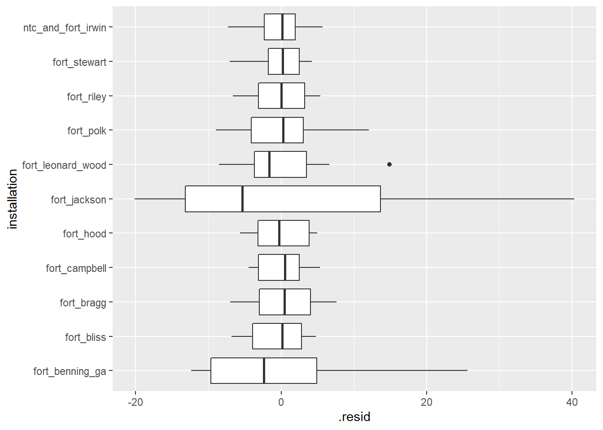
##
## [[2]]##
## [[3]]
##
## [[4]]##
## [[5]]# Plot random effects to look for outliers
map(mixed_nest$linear_models[1:5], ~dotplot(ranef(.x, condVar = TRUE)))## [[1]]
## [[1]]$installation
##
##
## [[2]]
## [[2]]$installation##
##
## [[3]]
## [[3]]$installation##
##
## [[4]]
## [[4]]$installation##
##
## [[5]]
## [[5]]$installation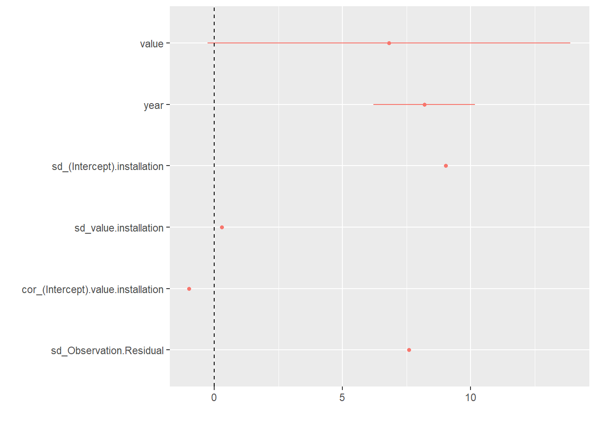
# Coefficient plot
map(mixed_nest$linear_models[1:5], ~dotwhisker::dwplot(.x) + geom_vline(xintercept = 0, lty = 2))## [[1]]
##
## [[2]]
##
## [[3]]
##
## [[4]]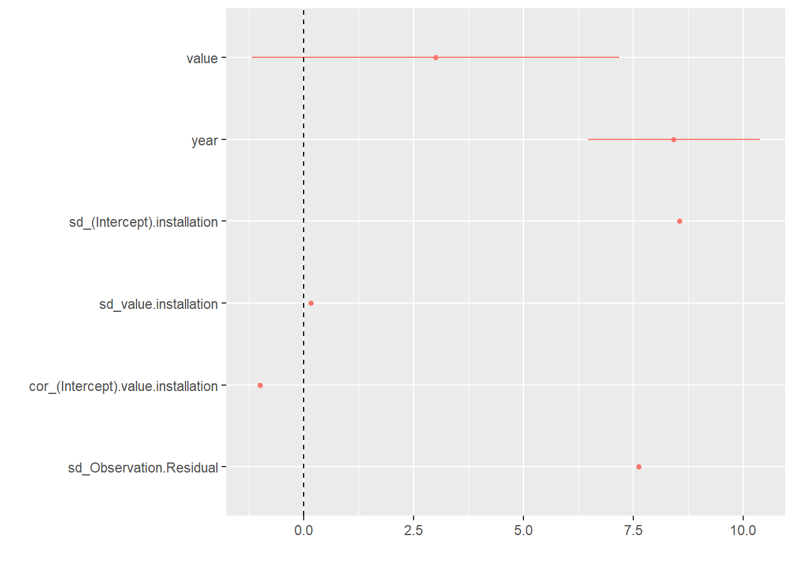
##
## [[5]]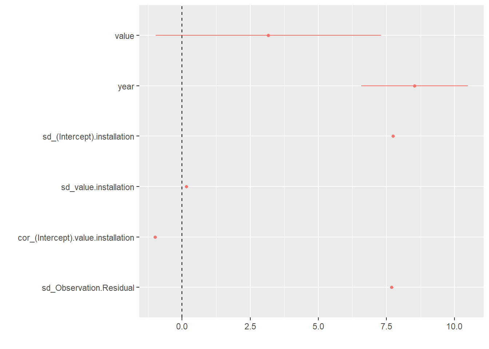
Random intercept only models
# Function for linear mixed model (random interceps only)
random_intercepts_lmer = function(df) {
df %>%
lmer(rate ~ value + year + (1|installation), data = .)
}
random_intercepts_nest <-
joined_rate %>%
left_join(dmed_population, by = c("installation" = "location", "year")) %>%
dplyr::select(index, everything()) %>%
nest(data = installation:population) %>%
mutate(linear_models = map(data, random_intercepts_lmer),
glance = map(linear_models, broom::glance),
tidy = map(linear_models, broom::tidy),
augment = map(linear_models, broom::augment))
# 2 warnings for `fixed-effect model matrix is rank deficient so dropping 1 column / coefficient`
# Model summaries
random_intercepts_nest %>%
unnest(tidy, .drop = TRUE) %>%
dplyr::select(index, term:group) %>%
knitr::kable(digits = 4) %>%
kable_styling(bootstrap_options = "striped", font_size = 10) %>%
scroll_box(height = "400px") | index | term | estimate | std.error | statistic | group |
|---|---|---|---|---|---|
| tmp_f_mean | (Intercept) | -1326.0255 | 158.8155 | -8.3495 | fixed |
| tmp_f_mean | value | 0.5382 | 0.3328 | 1.6172 | fixed |
| tmp_f_mean | year | 0.6491 | 0.0813 | 7.9815 | fixed |
| tmp_f_mean | sd_(Intercept).installation | 9.1261 | NA | NA | installation |
| tmp_f_mean | sd_Observation.Residual | 7.7009 | NA | NA | Residual |
| heat_index_mean | (Intercept) | -1318.4898 | 159.0407 | -8.2903 | fixed |
| heat_index_mean | value | 0.5869 | 0.3316 | 1.7701 | fixed |
| heat_index_mean | year | 0.6441 | 0.0815 | 7.9015 | fixed |
| heat_index_mean | sd_(Intercept).installation | 9.0448 | NA | NA | installation |
| heat_index_mean | sd_Observation.Residual | 7.6951 | NA | NA | Residual |
| wbgt_f_mean | (Intercept) | -1357.1483 | 157.3122 | -8.6271 | fixed |
| wbgt_f_mean | value | 0.4952 | 0.3750 | 1.3204 | fixed |
| wbgt_f_mean | year | 0.6670 | 0.0796 | 8.3816 | fixed |
| wbgt_f_mean | sd_(Intercept).installation | 8.9419 | NA | NA | installation |
| wbgt_f_mean | sd_Observation.Residual | 7.7219 | NA | NA | Residual |
| tmp_f_max | (Intercept) | -1341.2359 | 157.5420 | -8.5135 | fixed |
| tmp_f_max | value | 0.2674 | 0.1473 | 1.8152 | fixed |
| tmp_f_max | year | 0.6595 | 0.0795 | 8.2979 | fixed |
| tmp_f_max | sd_(Intercept).installation | 8.5843 | NA | NA | installation |
| tmp_f_max | sd_Observation.Residual | 7.7097 | NA | NA | Residual |
| heat_index_max | (Intercept) | -1360.9907 | 157.4911 | -8.6417 | fixed |
| heat_index_max | value | 0.2087 | 0.1475 | 1.4147 | fixed |
| heat_index_max | year | 0.6719 | 0.0790 | 8.5002 | fixed |
| heat_index_max | sd_(Intercept).installation | 8.4345 | NA | NA | installation |
| heat_index_max | sd_Observation.Residual | 7.7376 | NA | NA | Residual |
| wbgt_f_max | (Intercept) | -1348.4548 | 158.4246 | -8.5116 | fixed |
| wbgt_f_max | value | 0.1939 | 0.1676 | 1.1569 | fixed |
| wbgt_f_max | year | 0.6671 | 0.0802 | 8.3227 | fixed |
| wbgt_f_max | sd_(Intercept).installation | 8.5852 | NA | NA | installation |
| wbgt_f_max | sd_Observation.Residual | 7.7425 | NA | NA | Residual |
| tmp_f_min | (Intercept) | -1401.6016 | 158.5539 | -8.8399 | fixed |
| tmp_f_min | value | 0.1451 | 0.1029 | 1.4110 | fixed |
| tmp_f_min | year | 0.7018 | 0.0789 | 8.8992 | fixed |
| tmp_f_min | sd_(Intercept).installation | 9.2862 | NA | NA | installation |
| tmp_f_min | sd_Observation.Residual | 7.7059 | NA | NA | Residual |
| heat_index_min | (Intercept) | -1401.6016 | 158.5539 | -8.8399 | fixed |
| heat_index_min | value | 0.1451 | 0.1029 | 1.4110 | fixed |
| heat_index_min | year | 0.7018 | 0.0789 | 8.8992 | fixed |
| heat_index_min | sd_(Intercept).installation | 9.2862 | NA | NA | installation |
| heat_index_min | sd_Observation.Residual | 7.7059 | NA | NA | Residual |
| wbgt_f_min | (Intercept) | -1409.5001 | 158.8837 | -8.8713 | fixed |
| wbgt_f_min | value | 0.1669 | 0.1079 | 1.5467 | fixed |
| wbgt_f_min | year | 0.7059 | 0.0790 | 8.9310 | fixed |
| wbgt_f_min | sd_(Intercept).installation | 9.3134 | NA | NA | installation |
| wbgt_f_min | sd_Observation.Residual | 7.6984 | NA | NA | Residual |
| tmp_f_sd | (Intercept) | -1340.6900 | 159.2960 | -8.4163 | fixed |
| tmp_f_sd | value | 0.5101 | 0.4488 | 1.1366 | fixed |
| tmp_f_sd | year | 0.6680 | 0.0800 | 8.3478 | fixed |
| tmp_f_sd | sd_(Intercept).installation | 8.6697 | NA | NA | installation |
| tmp_f_sd | sd_Observation.Residual | 7.7398 | NA | NA | Residual |
| heat_index_sd | (Intercept) | -1329.8819 | 159.7832 | -8.3230 | fixed |
| heat_index_sd | value | 0.6552 | 0.4691 | 1.3967 | fixed |
| heat_index_sd | year | 0.6611 | 0.0804 | 8.2203 | fixed |
| heat_index_sd | sd_(Intercept).installation | 8.4447 | NA | NA | installation |
| heat_index_sd | sd_Observation.Residual | 7.7381 | NA | NA | Residual |
| wbgt_f_sd | (Intercept) | -1363.1248 | 159.1672 | -8.5641 | fixed |
| wbgt_f_sd | value | 0.1346 | 0.5885 | 0.2288 | fixed |
| wbgt_f_sd | year | 0.6826 | 0.0801 | 8.5256 | fixed |
| wbgt_f_sd | sd_(Intercept).installation | 8.9645 | NA | NA | installation |
| wbgt_f_sd | sd_Observation.Residual | 7.7495 | NA | NA | Residual |
| days_hi_gt80 | (Intercept) | -1273.2508 | 168.1811 | -7.5707 | fixed |
| days_hi_gt80 | value | 0.0557 | 0.0352 | 1.5840 | fixed |
| days_hi_gt80 | year | 0.6354 | 0.0846 | 7.5134 | fixed |
| days_hi_gt80 | sd_(Intercept).installation | 8.5338 | NA | NA | installation |
| days_hi_gt80 | sd_Observation.Residual | 7.7249 | NA | NA | Residual |
| days_hi_gt90 | (Intercept) | -1266.2093 | 165.9322 | -7.6309 | fixed |
| days_hi_gt90 | value | 0.0692 | 0.0367 | 1.8864 | fixed |
| days_hi_gt90 | year | 0.6334 | 0.0830 | 7.6315 | fixed |
| days_hi_gt90 | sd_(Intercept).installation | 8.4246 | NA | NA | installation |
| days_hi_gt90 | sd_Observation.Residual | 7.7120 | NA | NA | Residual |
| days_hi_gt103 | (Intercept) | -1292.8973 | 157.8062 | -8.1929 | fixed |
| days_hi_gt103 | value | 0.1988 | 0.0713 | 2.7885 | fixed |
| days_hi_gt103 | year | 0.6480 | 0.0786 | 8.2408 | fixed |
| days_hi_gt103 | sd_(Intercept).installation | 8.4226 | NA | NA | installation |
| days_hi_gt103 | sd_Observation.Residual | 7.6429 | NA | NA | Residual |
| days_hi_gt125 | (Intercept) | -1368.1348 | 157.3315 | -8.6959 | fixed |
| days_hi_gt125 | year | 0.6862 | 0.0784 | 8.7566 | fixed |
| days_hi_gt125 | sd_(Intercept).installation | 8.9607 | NA | NA | installation |
| days_hi_gt125 | sd_Observation.Residual | 7.7337 | NA | NA | Residual |
| days_wbgt_gt82 | (Intercept) | -1256.7164 | 165.4022 | -7.5979 | fixed |
| days_wbgt_gt82 | value | 0.0859 | 0.0411 | 2.0903 | fixed |
| days_wbgt_gt82 | year | 0.6280 | 0.0828 | 7.5843 | fixed |
| days_wbgt_gt82 | sd_(Intercept).installation | 8.4679 | NA | NA | installation |
| days_wbgt_gt82 | sd_Observation.Residual | 7.6967 | NA | NA | Residual |
| days_wbgt_gt85 | (Intercept) | -1204.5161 | 165.1798 | -7.2922 | fixed |
| days_wbgt_gt85 | value | 0.1248 | 0.0427 | 2.9231 | fixed |
| days_wbgt_gt85 | year | 0.6024 | 0.0825 | 7.2977 | fixed |
| days_wbgt_gt85 | sd_(Intercept).installation | 8.2202 | NA | NA | installation |
| days_wbgt_gt85 | sd_Observation.Residual | 7.6392 | NA | NA | Residual |
| days_wbgt_gt88 | (Intercept) | -1247.2502 | 161.7941 | -7.7089 | fixed |
| days_wbgt_gt88 | value | 0.1710 | 0.0621 | 2.7529 | fixed |
| days_wbgt_gt88 | year | 0.6247 | 0.0807 | 7.7394 | fixed |
| days_wbgt_gt88 | sd_(Intercept).installation | 8.2251 | NA | NA | installation |
| days_wbgt_gt88 | sd_Observation.Residual | 7.6546 | NA | NA | Residual |
| days_wbgt_gt90 | (Intercept) | -1277.9702 | 160.4600 | -7.9644 | fixed |
| days_wbgt_gt90 | value | 0.2624 | 0.1076 | 2.4384 | fixed |
| days_wbgt_gt90 | year | 0.6403 | 0.0800 | 8.0032 | fixed |
| days_wbgt_gt90 | sd_(Intercept).installation | 8.3621 | NA | NA | installation |
| days_wbgt_gt90 | sd_Observation.Residual | 7.6753 | NA | NA | Residual |
| hours_hi_gt80 | (Intercept) | -1237.8605 | 164.6735 | -7.5171 | fixed |
| hours_hi_gt80 | value | 0.0052 | 0.0021 | 2.4568 | fixed |
| hours_hi_gt80 | year | 0.6174 | 0.0825 | 7.4810 | fixed |
| hours_hi_gt80 | sd_(Intercept).installation | 8.6122 | NA | NA | installation |
| hours_hi_gt80 | sd_Observation.Residual | 7.6635 | NA | NA | Residual |
| hours_hi_gt90 | (Intercept) | -1224.1081 | 162.9815 | -7.5107 | fixed |
| hours_hi_gt90 | value | 0.0092 | 0.0032 | 2.9128 | fixed |
| hours_hi_gt90 | year | 0.6122 | 0.0814 | 7.5192 | fixed |
| hours_hi_gt90 | sd_(Intercept).installation | 8.3637 | NA | NA | installation |
| hours_hi_gt90 | sd_Observation.Residual | 7.6339 | NA | NA | Residual |
| hours_hi_gt103 | (Intercept) | -1290.2118 | 155.9254 | -8.2745 | fixed |
| hours_hi_gt103 | value | 0.0428 | 0.0124 | 3.4400 | fixed |
| hours_hi_gt103 | year | 0.6467 | 0.0777 | 8.3238 | fixed |
| hours_hi_gt103 | sd_(Intercept).installation | 8.2940 | NA | NA | installation |
| hours_hi_gt103 | sd_Observation.Residual | 7.5833 | NA | NA | Residual |
| hours_hi_gt125 | (Intercept) | -1368.1348 | 157.3315 | -8.6959 | fixed |
| hours_hi_gt125 | year | 0.6862 | 0.0784 | 8.7566 | fixed |
| hours_hi_gt125 | sd_(Intercept).installation | 8.9607 | NA | NA | installation |
| hours_hi_gt125 | sd_Observation.Residual | 7.7337 | NA | NA | Residual |
| hours_wbgt_gt82 | (Intercept) | -1226.4301 | 163.3934 | -7.5060 | fixed |
| hours_wbgt_gt82 | value | 0.0122 | 0.0043 | 2.8175 | fixed |
| hours_wbgt_gt82 | year | 0.6130 | 0.0817 | 7.5069 | fixed |
| hours_wbgt_gt82 | sd_(Intercept).installation | 8.3858 | NA | NA | installation |
| hours_wbgt_gt82 | sd_Observation.Residual | 7.6418 | NA | NA | Residual |
| hours_wbgt_gt85 | (Intercept) | -1212.7852 | 162.1267 | -7.4805 | fixed |
| hours_wbgt_gt85 | value | 0.0187 | 0.0058 | 3.2363 | fixed |
| hours_wbgt_gt85 | year | 0.6070 | 0.0809 | 7.5012 | fixed |
| hours_wbgt_gt85 | sd_(Intercept).installation | 8.1307 | NA | NA | installation |
| hours_wbgt_gt85 | sd_Observation.Residual | 7.6122 | NA | NA | Residual |
| hours_wbgt_gt88 | (Intercept) | -1262.0945 | 159.5951 | -7.9081 | fixed |
| hours_wbgt_gt88 | value | 0.0346 | 0.0118 | 2.9229 | fixed |
| hours_wbgt_gt88 | year | 0.6324 | 0.0796 | 7.9477 | fixed |
| hours_wbgt_gt88 | sd_(Intercept).installation | 8.2090 | NA | NA | installation |
| hours_wbgt_gt88 | sd_Observation.Residual | 7.6397 | NA | NA | Residual |
| hours_wbgt_gt90 | (Intercept) | -1287.9073 | 157.6741 | -8.1682 | fixed |
| hours_wbgt_gt90 | value | 0.0778 | 0.0264 | 2.9504 | fixed |
| hours_wbgt_gt90 | year | 0.6454 | 0.0786 | 8.2135 | fixed |
| hours_wbgt_gt90 | sd_(Intercept).installation | 8.2671 | NA | NA | installation |
| hours_wbgt_gt90 | sd_Observation.Residual | 7.6345 | NA | NA | Residual |
| tmp_f_mean_anomaly_mean | (Intercept) | -1264.1510 | 168.8081 | -7.4887 | fixed |
| tmp_f_mean_anomaly_mean | value | 0.7523 | 0.4533 | 1.6595 | fixed |
| tmp_f_mean_anomaly_mean | year | 0.6343 | 0.0841 | 7.5428 | fixed |
| tmp_f_mean_anomaly_mean | sd_(Intercept).installation | 8.9445 | NA | NA | installation |
| tmp_f_mean_anomaly_mean | sd_Observation.Residual | 7.7050 | NA | NA | Residual |
| heat_index_mean_anomaly_mean | (Intercept) | -1251.0318 | 170.2081 | -7.3500 | fixed |
| heat_index_mean_anomaly_mean | value | 0.8136 | 0.4628 | 1.7579 | fixed |
| heat_index_mean_anomaly_mean | year | 0.6278 | 0.0848 | 7.4037 | fixed |
| heat_index_mean_anomaly_mean | sd_(Intercept).installation | 8.9493 | NA | NA | installation |
| heat_index_mean_anomaly_mean | sd_Observation.Residual | 7.6992 | NA | NA | Residual |
| wbgt_f_mean_anomaly_mean | (Intercept) | -1323.2357 | 162.3111 | -8.1525 | fixed |
| wbgt_f_mean_anomaly_mean | value | 0.5770 | 0.5172 | 1.1155 | fixed |
| wbgt_f_mean_anomaly_mean | year | 0.6638 | 0.0808 | 8.2105 | fixed |
| wbgt_f_mean_anomaly_mean | sd_(Intercept).installation | 8.9696 | NA | NA | installation |
| wbgt_f_mean_anomaly_mean | sd_Observation.Residual | 7.7292 | NA | NA | Residual |
| tmp_f_max_anomaly_mean | (Intercept) | -1232.9111 | 175.1188 | -7.0404 | fixed |
| tmp_f_max_anomaly_mean | value | 0.6141 | 0.3552 | 1.7290 | fixed |
| tmp_f_max_anomaly_mean | year | 0.6187 | 0.0872 | 7.0915 | fixed |
| tmp_f_max_anomaly_mean | sd_(Intercept).installation | 8.9223 | NA | NA | installation |
| tmp_f_max_anomaly_mean | sd_Observation.Residual | 7.7018 | NA | NA | Residual |
| heat_index_max_anomaly_mean | (Intercept) | -1202.6981 | 180.5911 | -6.6598 | fixed |
| heat_index_max_anomaly_mean | value | 0.7233 | 0.3936 | 1.8377 | fixed |
| heat_index_max_anomaly_mean | year | 0.6037 | 0.0900 | 6.7090 | fixed |
| heat_index_max_anomaly_mean | sd_(Intercept).installation | 8.9247 | NA | NA | installation |
| heat_index_max_anomaly_mean | sd_Observation.Residual | 7.6953 | NA | NA | Residual |
| wbgt_f_max_anomaly_mean | (Intercept) | -1295.4977 | 168.8912 | -7.6706 | fixed |
| wbgt_f_max_anomaly_mean | value | 0.6409 | 0.5447 | 1.1767 | fixed |
| wbgt_f_max_anomaly_mean | year | 0.6499 | 0.0841 | 7.7255 | fixed |
| wbgt_f_max_anomaly_mean | sd_(Intercept).installation | 8.9532 | NA | NA | installation |
| wbgt_f_max_anomaly_mean | sd_Observation.Residual | 7.7275 | NA | NA | Residual |
| days_tmp_gt85pct | (Intercept) | -1265.9121 | 169.4034 | -7.4728 | fixed |
| days_tmp_gt85pct | value | 0.0833 | 0.0522 | 1.5958 | fixed |
| days_tmp_gt85pct | year | 0.6343 | 0.0846 | 7.4990 | fixed |
| days_tmp_gt85pct | sd_(Intercept).installation | 8.9335 | NA | NA | installation |
| days_tmp_gt85pct | sd_Observation.Residual | 7.7088 | NA | NA | Residual |
| days_tmp_gt90pct | (Intercept) | -1305.3576 | 164.6492 | -7.9281 | fixed |
| days_tmp_gt90pct | value | 0.1100 | 0.0864 | 1.2732 | fixed |
| days_tmp_gt90pct | year | 0.6544 | 0.0821 | 7.9672 | fixed |
| days_tmp_gt90pct | sd_(Intercept).installation | 8.9971 | NA | NA | installation |
| days_tmp_gt90pct | sd_Observation.Residual | 7.7219 | NA | NA | Residual |
| days_tmp_gt95pct | (Intercept) | -1335.6838 | 160.6473 | -8.3144 | fixed |
| days_tmp_gt95pct | value | 0.2143 | 0.2165 | 0.9898 | fixed |
| days_tmp_gt95pct | year | 0.6698 | 0.0801 | 8.3658 | fixed |
| days_tmp_gt95pct | sd_(Intercept).installation | 9.0609 | NA | NA | installation |
| days_tmp_gt95pct | sd_Observation.Residual | 7.7304 | NA | NA | Residual |
| days_heat_index_gt85pct | (Intercept) | -1311.9147 | 170.3041 | -7.7034 | fixed |
| days_heat_index_gt85pct | value | 0.0472 | 0.0546 | 0.8651 | fixed |
| days_heat_index_gt85pct | year | 0.6576 | 0.0851 | 7.7303 | fixed |
| days_heat_index_gt85pct | sd_(Intercept).installation | 8.9629 | NA | NA | installation |
| days_heat_index_gt85pct | sd_Observation.Residual | 7.7378 | NA | NA | Residual |
| days_heat_index_gt90pct | (Intercept) | -1307.6140 | 165.4503 | -7.9034 | fixed |
| days_heat_index_gt90pct | value | 0.0982 | 0.0839 | 1.1707 | fixed |
| days_heat_index_gt90pct | year | 0.6555 | 0.0825 | 7.9405 | fixed |
| days_heat_index_gt90pct | sd_(Intercept).installation | 9.0137 | NA | NA | installation |
| days_heat_index_gt90pct | sd_Observation.Residual | 7.7255 | NA | NA | Residual |
| days_heat_index_gt95pct | (Intercept) | -1331.0167 | 161.0999 | -8.2621 | fixed |
| days_heat_index_gt95pct | value | 0.2007 | 0.1900 | 1.0567 | fixed |
| days_heat_index_gt95pct | year | 0.6674 | 0.0803 | 8.3123 | fixed |
| days_heat_index_gt95pct | sd_(Intercept).installation | 9.0553 | NA | NA | installation |
| days_heat_index_gt95pct | sd_Observation.Residual | 7.7283 | NA | NA | Residual |
| days_wbgt_gt85pct | (Intercept) | -1333.5836 | 164.1862 | -8.1224 | fixed |
| days_wbgt_gt85pct | value | 0.0497 | 0.0668 | 0.7446 | fixed |
| days_wbgt_gt85pct | year | 0.6686 | 0.0819 | 8.1608 | fixed |
| days_wbgt_gt85pct | sd_(Intercept).installation | 8.9490 | NA | NA | installation |
| days_wbgt_gt85pct | sd_Observation.Residual | 7.7416 | NA | NA | Residual |
| days_wbgt_gt90pct | (Intercept) | -1353.3103 | 162.1100 | -8.3481 | fixed |
| days_wbgt_gt90pct | value | 0.0420 | 0.1073 | 0.3909 | fixed |
| days_wbgt_gt90pct | year | 0.6786 | 0.0808 | 8.3958 | fixed |
| days_wbgt_gt90pct | sd_(Intercept).installation | 8.9735 | NA | NA | installation |
| days_wbgt_gt90pct | sd_Observation.Residual | 7.7474 | NA | NA | Residual |
| days_wbgt_gt95pct | (Intercept) | -1346.5019 | 159.6361 | -8.4348 | fixed |
| days_wbgt_gt95pct | value | 0.2122 | 0.2602 | 0.8153 | fixed |
| days_wbgt_gt95pct | year | 0.6752 | 0.0795 | 8.4884 | fixed |
| days_wbgt_gt95pct | sd_(Intercept).installation | 9.0025 | NA | NA | installation |
| days_wbgt_gt95pct | sd_Observation.Residual | 7.7378 | NA | NA | Residual |
| days_tmp_max_gt85pct | (Intercept) | -1303.6163 | 172.2880 | -7.5665 | fixed |
| days_tmp_max_gt85pct | value | 0.0199 | 0.0216 | 0.9209 | fixed |
| days_tmp_max_gt85pct | year | 0.6534 | 0.0861 | 7.5887 | fixed |
| days_tmp_max_gt85pct | sd_(Intercept).installation | 8.9378 | NA | NA | installation |
| days_tmp_max_gt85pct | sd_Observation.Residual | 7.7370 | NA | NA | Residual |
| days_tmp_max_gt90pct | (Intercept) | -1292.2280 | 171.0961 | -7.5526 | fixed |
| days_tmp_max_gt90pct | value | 0.0306 | 0.0272 | 1.1260 | fixed |
| days_tmp_max_gt90pct | year | 0.6477 | 0.0854 | 7.5821 | fixed |
| days_tmp_max_gt90pct | sd_(Intercept).installation | 8.9385 | NA | NA | installation |
| days_tmp_max_gt90pct | sd_Observation.Residual | 7.7300 | NA | NA | Residual |
| days_tmp_max_gt95pct | (Intercept) | -1282.4551 | 170.5470 | -7.5197 | fixed |
| days_tmp_max_gt95pct | value | 0.0436 | 0.0337 | 1.2920 | fixed |
| days_tmp_max_gt95pct | year | 0.6429 | 0.0851 | 7.5531 | fixed |
| days_tmp_max_gt95pct | sd_(Intercept).installation | 8.9294 | NA | NA | installation |
| days_tmp_max_gt95pct | sd_Observation.Residual | 7.7236 | NA | NA | Residual |
| days_heat_index_max_gt85pct | (Intercept) | -1251.0829 | 179.4682 | -6.9711 | fixed |
| days_heat_index_max_gt85pct | value | 0.0364 | 0.0270 | 1.3482 | fixed |
| days_heat_index_max_gt85pct | year | 0.6267 | 0.0898 | 6.9779 | fixed |
| days_heat_index_max_gt85pct | sd_(Intercept).installation | 8.9354 | NA | NA | installation |
| days_heat_index_max_gt85pct | sd_Observation.Residual | 7.7209 | NA | NA | Residual |
| days_heat_index_max_gt90pct | (Intercept) | -1275.8546 | 181.7999 | -7.0179 | fixed |
| days_heat_index_max_gt90pct | value | 0.0376 | 0.0371 | 1.0131 | fixed |
| days_heat_index_max_gt90pct | year | 0.6395 | 0.0909 | 7.0339 | fixed |
| days_heat_index_max_gt90pct | sd_(Intercept).installation | 8.9446 | NA | NA | installation |
| days_heat_index_max_gt90pct | sd_Observation.Residual | 7.7338 | NA | NA | Residual |
| days_heat_index_max_gt95pct | (Intercept) | -1266.0534 | 180.9979 | -6.9949 | fixed |
| days_heat_index_max_gt95pct | value | 0.0542 | 0.0476 | 1.1388 | fixed |
| days_heat_index_max_gt95pct | year | 0.6346 | 0.0905 | 7.0157 | fixed |
| days_heat_index_max_gt95pct | sd_(Intercept).installation | 8.9421 | NA | NA | installation |
| days_heat_index_max_gt95pct | sd_Observation.Residual | 7.7293 | NA | NA | Residual |
| days_wbgt_max_gt85pct | (Intercept) | -1248.0060 | 176.0279 | -7.0898 | fixed |
| days_wbgt_max_gt85pct | value | 0.0519 | 0.0345 | 1.5064 | fixed |
| days_wbgt_max_gt85pct | year | 0.6247 | 0.0882 | 7.0859 | fixed |
| days_wbgt_max_gt85pct | sd_(Intercept).installation | 8.9235 | NA | NA | installation |
| days_wbgt_max_gt85pct | sd_Observation.Residual | 7.7138 | NA | NA | Residual |
| days_wbgt_max_gt90pct | (Intercept) | -1243.3005 | 175.4491 | -7.0864 | fixed |
| days_wbgt_max_gt90pct | value | 0.0748 | 0.0471 | 1.5877 | fixed |
| days_wbgt_max_gt90pct | year | 0.6226 | 0.0878 | 7.0922 | fixed |
| days_wbgt_max_gt90pct | sd_(Intercept).installation | 8.9207 | NA | NA | installation |
| days_wbgt_max_gt90pct | sd_Observation.Residual | 7.7097 | NA | NA | Residual |
| days_tmp_max_gt1sd | (Intercept) | -1269.0607 | 175.5484 | -7.2291 | fixed |
| days_tmp_max_gt1sd | value | 0.0235 | 0.0185 | 1.2684 | fixed |
| days_tmp_max_gt1sd | year | 0.6357 | 0.0878 | 7.2376 | fixed |
| days_tmp_max_gt1sd | sd_(Intercept).installation | 8.8399 | NA | NA | installation |
| days_tmp_max_gt1sd | sd_Observation.Residual | 7.7279 | NA | NA | Residual |
| days_heat_index_max_gt1sd | (Intercept) | -1191.2498 | 183.2557 | -6.5005 | fixed |
| days_heat_index_max_gt1sd | value | 0.0466 | 0.0250 | 1.8627 | fixed |
| days_heat_index_max_gt1sd | year | 0.5962 | 0.0918 | 6.4954 | fixed |
| days_heat_index_max_gt1sd | sd_(Intercept).installation | 8.6472 | NA | NA | installation |
| days_heat_index_max_gt1sd | sd_Observation.Residual | 7.7043 | NA | NA | Residual |
| days_wbgt_max_gt1sd | (Intercept) | -1224.5142 | 172.0309 | -7.1180 | fixed |
| days_wbgt_max_gt1sd | value | 0.0648 | 0.0322 | 2.0092 | fixed |
| days_wbgt_max_gt1sd | year | 0.6124 | 0.0861 | 7.1094 | fixed |
| days_wbgt_max_gt1sd | sd_(Intercept).installation | 8.7299 | NA | NA | installation |
| days_wbgt_max_gt1sd | sd_Observation.Residual | 7.6917 | NA | NA | Residual |
| days_tmp_max_gt2sd | (Intercept) | -1265.4423 | 168.8492 | -7.4945 | fixed |
| days_tmp_max_gt2sd | value | 0.0479 | 0.0292 | 1.6421 | fixed |
| days_tmp_max_gt2sd | year | 0.6343 | 0.0843 | 7.5263 | fixed |
| days_tmp_max_gt2sd | sd_(Intercept).installation | 8.8455 | NA | NA | installation |
| days_tmp_max_gt2sd | sd_Observation.Residual | 7.7095 | NA | NA | Residual |
| days_heat_index_max_gt2sd | (Intercept) | -1175.8725 | 172.0315 | -6.8352 | fixed |
| days_heat_index_max_gt2sd | value | 0.1332 | 0.0508 | 2.6224 | fixed |
| days_heat_index_max_gt2sd | year | 0.5890 | 0.0859 | 6.8570 | fixed |
| days_heat_index_max_gt2sd | sd_(Intercept).installation | 8.6073 | NA | NA | installation |
| days_heat_index_max_gt2sd | sd_Observation.Residual | 7.6500 | NA | NA | Residual |
| days_wbgt_max_gt2sd | (Intercept) | -1287.5563 | 173.0109 | -7.4421 | fixed |
| days_wbgt_max_gt2sd | value | 0.0896 | 0.0802 | 1.1163 | fixed |
| days_wbgt_max_gt2sd | year | 0.6453 | 0.0864 | 7.4651 | fixed |
| days_wbgt_max_gt2sd | sd_(Intercept).installation | 8.9806 | NA | NA | installation |
| days_wbgt_max_gt2sd | sd_Observation.Residual | 7.7288 | NA | NA | Residual |
| tmp_f_mean_anomaly_mean_may_sep | (Intercept) | -1255.8046 | 167.3453 | -7.5043 | fixed |
| tmp_f_mean_anomaly_mean_may_sep | value | 0.6557 | 0.3462 | 1.8941 | fixed |
| tmp_f_mean_anomaly_mean_may_sep | year | 0.6301 | 0.0834 | 7.5585 | fixed |
| tmp_f_mean_anomaly_mean_may_sep | sd_(Intercept).installation | 8.9216 | NA | NA | installation |
| tmp_f_mean_anomaly_mean_may_sep | sd_Observation.Residual | 7.6920 | NA | NA | Residual |
| heat_index_mean_anomaly_mean_may_sep | (Intercept) | -1243.9065 | 168.8015 | -7.3690 | fixed |
| heat_index_mean_anomaly_mean_may_sep | value | 0.6724 | 0.3437 | 1.9560 | fixed |
| heat_index_mean_anomaly_mean_may_sep | year | 0.6242 | 0.0841 | 7.4229 | fixed |
| heat_index_mean_anomaly_mean_may_sep | sd_(Intercept).installation | 8.9299 | NA | NA | installation |
| heat_index_mean_anomaly_mean_may_sep | sd_Observation.Residual | 7.6877 | NA | NA | Residual |
| wbgt_f_mean_anomaly_mean_may_sep | (Intercept) | -1316.4040 | 165.5031 | -7.9540 | fixed |
| wbgt_f_mean_anomaly_mean_may_sep | value | 0.5100 | 0.5066 | 1.0067 | fixed |
| wbgt_f_mean_anomaly_mean_may_sep | year | 0.6604 | 0.0824 | 8.0106 | fixed |
| wbgt_f_mean_anomaly_mean_may_sep | sd_(Intercept).installation | 8.9652 | NA | NA | installation |
| wbgt_f_mean_anomaly_mean_may_sep | sd_Observation.Residual | 7.7333 | NA | NA | Residual |
| tmp_f_max_anomaly_mean_may_sep | (Intercept) | -1260.2180 | 167.8938 | -7.5060 | fixed |
| tmp_f_max_anomaly_mean_may_sep | value | 0.4426 | 0.2480 | 1.7849 | fixed |
| tmp_f_max_anomaly_mean_may_sep | year | 0.6323 | 0.0836 | 7.5598 | fixed |
| tmp_f_max_anomaly_mean_may_sep | sd_(Intercept).installation | 8.9064 | NA | NA | installation |
| tmp_f_max_anomaly_mean_may_sep | sd_Observation.Residual | 7.6992 | NA | NA | Residual |
| heat_index_max_anomaly_mean_may_sep | (Intercept) | -1230.3072 | 172.9616 | -7.1132 | fixed |
| heat_index_max_anomaly_mean_may_sep | value | 0.5301 | 0.2831 | 1.8726 | fixed |
| heat_index_max_anomaly_mean_may_sep | year | 0.6174 | 0.0862 | 7.1650 | fixed |
| heat_index_max_anomaly_mean_may_sep | sd_(Intercept).installation | 8.9091 | NA | NA | installation |
| heat_index_max_anomaly_mean_may_sep | sd_Observation.Residual | 7.6938 | NA | NA | Residual |
| wbgt_f_max_anomaly_mean_may_sep | (Intercept) | -1297.9509 | 173.2864 | -7.4902 | fixed |
| wbgt_f_max_anomaly_mean_may_sep | value | 0.4757 | 0.4919 | 0.9672 | fixed |
| wbgt_f_max_anomaly_mean_may_sep | year | 0.6512 | 0.0863 | 7.5431 | fixed |
| wbgt_f_max_anomaly_mean_may_sep | sd_(Intercept).installation | 8.9518 | NA | NA | installation |
| wbgt_f_max_anomaly_mean_may_sep | sd_Observation.Residual | 7.7351 | NA | NA | Residual |
| days_tmp_gt85pct_may_sep | (Intercept) | -1243.8589 | 159.0798 | -7.8191 | fixed |
| days_tmp_gt85pct_may_sep | value | 0.3564 | 0.1115 | 3.1966 | fixed |
| days_tmp_gt85pct_may_sep | year | 0.6236 | 0.0793 | 7.8649 | fixed |
| days_tmp_gt85pct_may_sep | sd_(Intercept).installation | 8.9885 | NA | NA | installation |
| days_tmp_gt85pct_may_sep | sd_Observation.Residual | 7.5824 | NA | NA | Residual |
| days_tmp_gt90pct_may_sep | (Intercept) | -1278.0245 | 156.9110 | -8.1449 | fixed |
| days_tmp_gt90pct_may_sep | value | 0.7893 | 0.2510 | 3.1447 | fixed |
| days_tmp_gt90pct_may_sep | year | 0.6408 | 0.0782 | 8.1964 | fixed |
| days_tmp_gt90pct_may_sep | sd_(Intercept).installation | 9.1224 | NA | NA | installation |
| days_tmp_gt90pct_may_sep | sd_Observation.Residual | 7.5832 | NA | NA | Residual |
| days_tmp_gt95pct_may_sep | (Intercept) | -1357.4642 | 153.4347 | -8.8472 | fixed |
| days_tmp_gt95pct_may_sep | value | 3.2855 | 0.9228 | 3.5604 | fixed |
| days_tmp_gt95pct_may_sep | year | 0.6806 | 0.0764 | 8.9061 | fixed |
| days_tmp_gt95pct_may_sep | sd_(Intercept).installation | 9.0872 | NA | NA | installation |
| days_tmp_gt95pct_may_sep | sd_Observation.Residual | 7.5406 | NA | NA | Residual |
| days_heat_index_gt85pct_may_sep | (Intercept) | -1302.6624 | 161.7160 | -8.0552 | fixed |
| days_heat_index_gt85pct_may_sep | value | 0.2126 | 0.1300 | 1.6358 | fixed |
| days_heat_index_gt85pct_may_sep | year | 0.6531 | 0.0806 | 8.1009 | fixed |
| days_heat_index_gt85pct_may_sep | sd_(Intercept).installation | 9.0696 | NA | NA | installation |
| days_heat_index_gt85pct_may_sep | sd_Observation.Residual | 7.7018 | NA | NA | Residual |
| days_heat_index_gt90pct_may_sep | (Intercept) | -1323.0909 | 158.7775 | -8.3330 | fixed |
| days_heat_index_gt90pct_may_sep | value | 0.4354 | 0.2574 | 1.6915 | fixed |
| days_heat_index_gt90pct_may_sep | year | 0.6634 | 0.0791 | 8.3853 | fixed |
| days_heat_index_gt90pct_may_sep | sd_(Intercept).installation | 9.2073 | NA | NA | installation |
| days_heat_index_gt90pct_may_sep | sd_Observation.Residual | 7.6941 | NA | NA | Residual |
| days_heat_index_gt95pct_may_sep | (Intercept) | -1358.0047 | 158.5611 | -8.5646 | fixed |
| days_heat_index_gt95pct_may_sep | value | 0.4853 | 0.8711 | 0.5572 | fixed |
| days_heat_index_gt95pct_may_sep | year | 0.6811 | 0.0790 | 8.6226 | fixed |
| days_heat_index_gt95pct_may_sep | sd_(Intercept).installation | 9.0327 | NA | NA | installation |
| days_heat_index_gt95pct_may_sep | sd_Observation.Residual | 7.7427 | NA | NA | Residual |
| days_wbgt_gt85pct_may_sep | (Intercept) | -1327.5790 | 161.5192 | -8.2193 | fixed |
| days_wbgt_gt85pct_may_sep | value | 0.2777 | 0.2537 | 1.0949 | fixed |
| days_wbgt_gt85pct_may_sep | year | 0.6658 | 0.0805 | 8.2711 | fixed |
| days_wbgt_gt85pct_may_sep | sd_(Intercept).installation | 9.0287 | NA | NA | installation |
| days_wbgt_gt85pct_may_sep | sd_Observation.Residual | 7.7279 | NA | NA | Residual |
| days_wbgt_gt90pct_may_sep | (Intercept) | -1377.7267 | 159.0292 | -8.6634 | fixed |
| days_wbgt_gt90pct_may_sep | value | -0.2210 | 0.4872 | -0.4537 | fixed |
| days_wbgt_gt90pct_may_sep | year | 0.6910 | 0.0792 | 8.7225 | fixed |
| days_wbgt_gt90pct_may_sep | sd_(Intercept).installation | 8.9411 | NA | NA | installation |
| days_wbgt_gt90pct_may_sep | sd_Observation.Residual | 7.7477 | NA | NA | Residual |
| days_wbgt_gt95pct_may_sep | (Intercept) | -1355.4694 | 154.8676 | -8.7524 | fixed |
| days_wbgt_gt95pct_may_sep | value | 5.6903 | 1.9159 | 2.9701 | fixed |
| days_wbgt_gt95pct_may_sep | year | 0.6797 | 0.0771 | 8.8125 | fixed |
| days_wbgt_gt95pct_may_sep | sd_(Intercept).installation | 8.8458 | NA | NA | installation |
| days_wbgt_gt95pct_may_sep | sd_Observation.Residual | 7.6096 | NA | NA | Residual |
| days_tmp_max_gt85pct_may_sep | (Intercept) | -1314.6227 | 163.9072 | -8.0205 | fixed |
| days_tmp_max_gt85pct_may_sep | value | 0.0322 | 0.0279 | 1.1562 | fixed |
| days_tmp_max_gt85pct_may_sep | year | 0.6591 | 0.0817 | 8.0621 | fixed |
| days_tmp_max_gt85pct_may_sep | sd_(Intercept).installation | 8.9333 | NA | NA | installation |
| days_tmp_max_gt85pct_may_sep | sd_Observation.Residual | 7.7290 | NA | NA | Residual |
| days_tmp_max_gt90pct_may_sep | (Intercept) | -1308.8186 | 162.3918 | -8.0596 | fixed |
| days_tmp_max_gt90pct_may_sep | value | 0.0514 | 0.0359 | 1.4298 | fixed |
| days_tmp_max_gt90pct_may_sep | year | 0.6562 | 0.0810 | 8.1050 | fixed |
| days_tmp_max_gt90pct_may_sep | sd_(Intercept).installation | 8.9236 | NA | NA | installation |
| days_tmp_max_gt90pct_may_sep | sd_Observation.Residual | 7.7175 | NA | NA | Residual |
| days_tmp_max_gt95pct_may_sep | (Intercept) | -1304.9553 | 161.7420 | -8.0681 | fixed |
| days_tmp_max_gt95pct_may_sep | value | 0.0720 | 0.0451 | 1.5980 | fixed |
| days_tmp_max_gt95pct_may_sep | year | 0.6543 | 0.0806 | 8.1156 | fixed |
| days_tmp_max_gt95pct_may_sep | sd_(Intercept).installation | 8.9172 | NA | NA | installation |
| days_tmp_max_gt95pct_may_sep | sd_Observation.Residual | 7.7093 | NA | NA | Residual |
| days_heat_index_max_gt85pct_may_sep | (Intercept) | -1283.1311 | 167.6032 | -7.6558 | fixed |
| days_heat_index_max_gt85pct_may_sep | value | 0.0523 | 0.0362 | 1.4473 | fixed |
| days_heat_index_max_gt85pct_may_sep | year | 0.6431 | 0.0837 | 7.6879 | fixed |
| days_heat_index_max_gt85pct_may_sep | sd_(Intercept).installation | 8.9373 | NA | NA | installation |
| days_heat_index_max_gt85pct_may_sep | sd_Observation.Residual | 7.7162 | NA | NA | Residual |
| days_heat_index_max_gt90pct_may_sep | (Intercept) | -1288.6664 | 166.1018 | -7.7583 | fixed |
| days_heat_index_max_gt90pct_may_sep | value | 0.0739 | 0.0505 | 1.4626 | fixed |
| days_heat_index_max_gt90pct_may_sep | year | 0.6460 | 0.0829 | 7.7955 | fixed |
| days_heat_index_max_gt90pct_may_sep | sd_(Intercept).installation | 8.9335 | NA | NA | installation |
| days_heat_index_max_gt90pct_may_sep | sd_Observation.Residual | 7.7156 | NA | NA | Residual |
| days_heat_index_max_gt95pct_may_sep | (Intercept) | -1283.4222 | 166.4289 | -7.7115 | fixed |
| days_heat_index_max_gt95pct_may_sep | value | 0.1016 | 0.0665 | 1.5262 | fixed |
| days_heat_index_max_gt95pct_may_sep | year | 0.6434 | 0.0830 | 7.7508 | fixed |
| days_heat_index_max_gt95pct_may_sep | sd_(Intercept).installation | 8.9315 | NA | NA | installation |
| days_heat_index_max_gt95pct_may_sep | sd_Observation.Residual | 7.7125 | NA | NA | Residual |
| days_wbgt_max_gt85pct_may_sep | (Intercept) | -1247.6365 | 167.7430 | -7.4378 | fixed |
| days_wbgt_max_gt85pct_may_sep | value | 0.0994 | 0.0501 | 1.9846 | fixed |
| days_wbgt_max_gt85pct_may_sep | year | 0.6248 | 0.0838 | 7.4574 | fixed |
| days_wbgt_max_gt85pct_may_sep | sd_(Intercept).installation | 8.9183 | NA | NA | installation |
| days_wbgt_max_gt85pct_may_sep | sd_Observation.Residual | 7.6863 | NA | NA | Residual |
| days_wbgt_max_gt90pct_may_sep | (Intercept) | -1288.0314 | 168.6724 | -7.6363 | fixed |
| days_wbgt_max_gt90pct_may_sep | value | 0.0986 | 0.0755 | 1.3054 | fixed |
| days_wbgt_max_gt90pct_may_sep | year | 0.6455 | 0.0842 | 7.6635 | fixed |
| days_wbgt_max_gt90pct_may_sep | sd_(Intercept).installation | 8.9307 | NA | NA | installation |
| days_wbgt_max_gt90pct_may_sep | sd_Observation.Residual | 7.7229 | NA | NA | Residual |
| days_tmp_max_gt1sd_may_sep | (Intercept) | -1314.5395 | 166.1948 | -7.9096 | fixed |
| days_tmp_max_gt1sd_may_sep | value | 0.0239 | 0.0239 | 1.0019 | fixed |
| days_tmp_max_gt1sd_may_sep | year | 0.6589 | 0.0830 | 7.9430 | fixed |
| days_tmp_max_gt1sd_may_sep | sd_(Intercept).installation | 8.9341 | NA | NA | installation |
| days_tmp_max_gt1sd_may_sep | sd_Observation.Residual | 7.7346 | NA | NA | Residual |
| days_heat_index_max_gt1sd_may_sep | (Intercept) | -1253.8426 | 169.6443 | -7.3910 | fixed |
| days_heat_index_max_gt1sd_may_sep | value | 0.0575 | 0.0327 | 1.7615 | fixed |
| days_heat_index_max_gt1sd_may_sep | year | 0.6282 | 0.0847 | 7.4144 | fixed |
| days_heat_index_max_gt1sd_may_sep | sd_(Intercept).installation | 8.7886 | NA | NA | installation |
| days_heat_index_max_gt1sd_may_sep | sd_Observation.Residual | 7.7049 | NA | NA | Residual |
| days_wbgt_max_gt1sd_may_sep | (Intercept) | -1245.6419 | 166.1671 | -7.4963 | fixed |
| days_wbgt_max_gt1sd_may_sep | value | 0.1034 | 0.0481 | 2.1493 | fixed |
| days_wbgt_max_gt1sd_may_sep | year | 0.6235 | 0.0830 | 7.5097 | fixed |
| days_wbgt_max_gt1sd_may_sep | sd_(Intercept).installation | 8.9918 | NA | NA | installation |
| days_wbgt_max_gt1sd_may_sep | sd_Observation.Residual | 7.6725 | NA | NA | Residual |
| days_tmp_max_gt2sd_may_sep | (Intercept) | -1282.0628 | 162.3655 | -7.8962 | fixed |
| days_tmp_max_gt2sd_may_sep | value | 0.0704 | 0.0357 | 1.9723 | fixed |
| days_tmp_max_gt2sd_may_sep | year | 0.6426 | 0.0810 | 7.9376 | fixed |
| days_tmp_max_gt2sd_may_sep | sd_(Intercept).installation | 8.9099 | NA | NA | installation |
| days_tmp_max_gt2sd_may_sep | sd_Observation.Residual | 7.6874 | NA | NA | Residual |
| days_heat_index_max_gt2sd_may_sep | (Intercept) | -1215.9727 | 163.5558 | -7.4346 | fixed |
| days_heat_index_max_gt2sd_may_sep | value | 0.1924 | 0.0658 | 2.9219 | fixed |
| days_heat_index_max_gt2sd_may_sep | year | 0.6093 | 0.0816 | 7.4683 | fixed |
| days_heat_index_max_gt2sd_may_sep | sd_(Intercept).installation | 8.6562 | NA | NA | installation |
| days_heat_index_max_gt2sd_may_sep | sd_Observation.Residual | 7.6212 | NA | NA | Residual |
| days_wbgt_max_gt2sd_may_sep | (Intercept) | -1308.7143 | 167.1842 | -7.8280 | fixed |
| days_wbgt_max_gt2sd_may_sep | value | 0.1101 | 0.1053 | 1.0453 | fixed |
| days_wbgt_max_gt2sd_may_sep | year | 0.6560 | 0.0835 | 7.8610 | fixed |
| days_wbgt_max_gt2sd_may_sep | sd_(Intercept).installation | 9.0671 | NA | NA | installation |
| days_wbgt_max_gt2sd_may_sep | sd_Observation.Residual | 7.7283 | NA | NA | Residual |
# Arranged by effect estimate
random_intercepts_nest %>%
unnest(tidy, .drop = TRUE) %>%
dplyr::select(index, term:group) %>%
filter(term %in% "value") %>%
arrange(desc(estimate)) %>%
knitr::kable(digits = 4) %>%
kable_styling(bootstrap_options = "striped", font_size = 10) %>%
scroll_box(height = "400px") | index | term | estimate | std.error | statistic | group |
|---|---|---|---|---|---|
| days_wbgt_gt95pct_may_sep | value | 5.6903 | 1.9159 | 2.9701 | fixed |
| days_tmp_gt95pct_may_sep | value | 3.2855 | 0.9228 | 3.5604 | fixed |
| heat_index_mean_anomaly_mean | value | 0.8136 | 0.4628 | 1.7579 | fixed |
| days_tmp_gt90pct_may_sep | value | 0.7893 | 0.2510 | 3.1447 | fixed |
| tmp_f_mean_anomaly_mean | value | 0.7523 | 0.4533 | 1.6595 | fixed |
| heat_index_max_anomaly_mean | value | 0.7233 | 0.3936 | 1.8377 | fixed |
| heat_index_mean_anomaly_mean_may_sep | value | 0.6724 | 0.3437 | 1.9560 | fixed |
| tmp_f_mean_anomaly_mean_may_sep | value | 0.6557 | 0.3462 | 1.8941 | fixed |
| heat_index_sd | value | 0.6552 | 0.4691 | 1.3967 | fixed |
| wbgt_f_max_anomaly_mean | value | 0.6409 | 0.5447 | 1.1767 | fixed |
| tmp_f_max_anomaly_mean | value | 0.6141 | 0.3552 | 1.7290 | fixed |
| heat_index_mean | value | 0.5869 | 0.3316 | 1.7701 | fixed |
| wbgt_f_mean_anomaly_mean | value | 0.5770 | 0.5172 | 1.1155 | fixed |
| tmp_f_mean | value | 0.5382 | 0.3328 | 1.6172 | fixed |
| heat_index_max_anomaly_mean_may_sep | value | 0.5301 | 0.2831 | 1.8726 | fixed |
| tmp_f_sd | value | 0.5101 | 0.4488 | 1.1366 | fixed |
| wbgt_f_mean_anomaly_mean_may_sep | value | 0.5100 | 0.5066 | 1.0067 | fixed |
| wbgt_f_mean | value | 0.4952 | 0.3750 | 1.3204 | fixed |
| days_heat_index_gt95pct_may_sep | value | 0.4853 | 0.8711 | 0.5572 | fixed |
| wbgt_f_max_anomaly_mean_may_sep | value | 0.4757 | 0.4919 | 0.9672 | fixed |
| tmp_f_max_anomaly_mean_may_sep | value | 0.4426 | 0.2480 | 1.7849 | fixed |
| days_heat_index_gt90pct_may_sep | value | 0.4354 | 0.2574 | 1.6915 | fixed |
| days_tmp_gt85pct_may_sep | value | 0.3564 | 0.1115 | 3.1966 | fixed |
| days_wbgt_gt85pct_may_sep | value | 0.2777 | 0.2537 | 1.0949 | fixed |
| tmp_f_max | value | 0.2674 | 0.1473 | 1.8152 | fixed |
| days_wbgt_gt90 | value | 0.2624 | 0.1076 | 2.4384 | fixed |
| days_tmp_gt95pct | value | 0.2143 | 0.2165 | 0.9898 | fixed |
| days_heat_index_gt85pct_may_sep | value | 0.2126 | 0.1300 | 1.6358 | fixed |
| days_wbgt_gt95pct | value | 0.2122 | 0.2602 | 0.8153 | fixed |
| heat_index_max | value | 0.2087 | 0.1475 | 1.4147 | fixed |
| days_heat_index_gt95pct | value | 0.2007 | 0.1900 | 1.0567 | fixed |
| days_hi_gt103 | value | 0.1988 | 0.0713 | 2.7885 | fixed |
| wbgt_f_max | value | 0.1939 | 0.1676 | 1.1569 | fixed |
| days_heat_index_max_gt2sd_may_sep | value | 0.1924 | 0.0658 | 2.9219 | fixed |
| days_wbgt_gt88 | value | 0.1710 | 0.0621 | 2.7529 | fixed |
| wbgt_f_min | value | 0.1669 | 0.1079 | 1.5467 | fixed |
| tmp_f_min | value | 0.1451 | 0.1029 | 1.4110 | fixed |
| heat_index_min | value | 0.1451 | 0.1029 | 1.4110 | fixed |
| wbgt_f_sd | value | 0.1346 | 0.5885 | 0.2288 | fixed |
| days_heat_index_max_gt2sd | value | 0.1332 | 0.0508 | 2.6224 | fixed |
| days_wbgt_gt85 | value | 0.1248 | 0.0427 | 2.9231 | fixed |
| days_wbgt_max_gt2sd_may_sep | value | 0.1101 | 0.1053 | 1.0453 | fixed |
| days_tmp_gt90pct | value | 0.1100 | 0.0864 | 1.2732 | fixed |
| days_wbgt_max_gt1sd_may_sep | value | 0.1034 | 0.0481 | 2.1493 | fixed |
| days_heat_index_max_gt95pct_may_sep | value | 0.1016 | 0.0665 | 1.5262 | fixed |
| days_wbgt_max_gt85pct_may_sep | value | 0.0994 | 0.0501 | 1.9846 | fixed |
| days_wbgt_max_gt90pct_may_sep | value | 0.0986 | 0.0755 | 1.3054 | fixed |
| days_heat_index_gt90pct | value | 0.0982 | 0.0839 | 1.1707 | fixed |
| days_wbgt_max_gt2sd | value | 0.0896 | 0.0802 | 1.1163 | fixed |
| days_wbgt_gt82 | value | 0.0859 | 0.0411 | 2.0903 | fixed |
| days_tmp_gt85pct | value | 0.0833 | 0.0522 | 1.5958 | fixed |
| hours_wbgt_gt90 | value | 0.0778 | 0.0264 | 2.9504 | fixed |
| days_wbgt_max_gt90pct | value | 0.0748 | 0.0471 | 1.5877 | fixed |
| days_heat_index_max_gt90pct_may_sep | value | 0.0739 | 0.0505 | 1.4626 | fixed |
| days_tmp_max_gt95pct_may_sep | value | 0.0720 | 0.0451 | 1.5980 | fixed |
| days_tmp_max_gt2sd_may_sep | value | 0.0704 | 0.0357 | 1.9723 | fixed |
| days_hi_gt90 | value | 0.0692 | 0.0367 | 1.8864 | fixed |
| days_wbgt_max_gt1sd | value | 0.0648 | 0.0322 | 2.0092 | fixed |
| days_heat_index_max_gt1sd_may_sep | value | 0.0575 | 0.0327 | 1.7615 | fixed |
| days_hi_gt80 | value | 0.0557 | 0.0352 | 1.5840 | fixed |
| days_heat_index_max_gt95pct | value | 0.0542 | 0.0476 | 1.1388 | fixed |
| days_heat_index_max_gt85pct_may_sep | value | 0.0523 | 0.0362 | 1.4473 | fixed |
| days_wbgt_max_gt85pct | value | 0.0519 | 0.0345 | 1.5064 | fixed |
| days_tmp_max_gt90pct_may_sep | value | 0.0514 | 0.0359 | 1.4298 | fixed |
| days_wbgt_gt85pct | value | 0.0497 | 0.0668 | 0.7446 | fixed |
| days_tmp_max_gt2sd | value | 0.0479 | 0.0292 | 1.6421 | fixed |
| days_heat_index_gt85pct | value | 0.0472 | 0.0546 | 0.8651 | fixed |
| days_heat_index_max_gt1sd | value | 0.0466 | 0.0250 | 1.8627 | fixed |
| days_tmp_max_gt95pct | value | 0.0436 | 0.0337 | 1.2920 | fixed |
| hours_hi_gt103 | value | 0.0428 | 0.0124 | 3.4400 | fixed |
| days_wbgt_gt90pct | value | 0.0420 | 0.1073 | 0.3909 | fixed |
| days_heat_index_max_gt90pct | value | 0.0376 | 0.0371 | 1.0131 | fixed |
| days_heat_index_max_gt85pct | value | 0.0364 | 0.0270 | 1.3482 | fixed |
| hours_wbgt_gt88 | value | 0.0346 | 0.0118 | 2.9229 | fixed |
| days_tmp_max_gt85pct_may_sep | value | 0.0322 | 0.0279 | 1.1562 | fixed |
| days_tmp_max_gt90pct | value | 0.0306 | 0.0272 | 1.1260 | fixed |
| days_tmp_max_gt1sd_may_sep | value | 0.0239 | 0.0239 | 1.0019 | fixed |
| days_tmp_max_gt1sd | value | 0.0235 | 0.0185 | 1.2684 | fixed |
| days_tmp_max_gt85pct | value | 0.0199 | 0.0216 | 0.9209 | fixed |
| hours_wbgt_gt85 | value | 0.0187 | 0.0058 | 3.2363 | fixed |
| hours_wbgt_gt82 | value | 0.0122 | 0.0043 | 2.8175 | fixed |
| hours_hi_gt90 | value | 0.0092 | 0.0032 | 2.9128 | fixed |
| hours_hi_gt80 | value | 0.0052 | 0.0021 | 2.4568 | fixed |
| days_wbgt_gt90pct_may_sep | value | -0.2210 | 0.4872 | -0.4537 | fixed |
# Model fit
random_intercepts_nest %>%
unnest(glance, .drop = TRUE) %>%
dplyr::select(index, sigma:df.residual) %>%
arrange(logLik) %>%
knitr::kable(digits = 4) %>%
kable_styling(bootstrap_options = "striped", font_size = 10) %>%
scroll_box(height = "400px") | index | sigma | logLik | AIC | BIC | deviance | df.residual |
|---|---|---|---|---|---|---|
| days_tmp_max_gt85pct | 7.7370 | -858.4074 | 1726.815 | 1744.259 | 1711.564 | 237 |
| days_tmp_max_gt1sd_may_sep | 7.7346 | -858.2294 | 1726.459 | 1743.903 | 1711.407 | 237 |
| days_tmp_max_gt1sd | 7.7279 | -858.1836 | 1726.367 | 1743.812 | 1710.784 | 237 |
| hours_hi_gt80 | 7.6635 | -858.1737 | 1726.347 | 1743.792 | 1706.354 | 237 |
| days_tmp_max_gt90pct | 7.7300 | -857.9667 | 1725.934 | 1743.378 | 1711.143 | 237 |
| days_tmp_max_gt85pct_may_sep | 7.7290 | -857.9087 | 1725.817 | 1743.262 | 1711.073 | 237 |
| days_heat_index_max_gt90pct | 7.7338 | -857.7769 | 1725.554 | 1742.998 | 1711.387 | 237 |
| days_heat_index_max_gt85pct | 7.7209 | -857.7013 | 1725.403 | 1742.847 | 1710.591 | 237 |
| days_tmp_max_gt95pct | 7.7236 | -857.5516 | 1725.103 | 1742.548 | 1710.739 | 237 |
| days_heat_index_gt85pct | 7.7378 | -857.5310 | 1725.062 | 1742.507 | 1711.670 | 237 |
| days_wbgt_gt85pct | 7.7416 | -857.4264 | 1724.853 | 1742.298 | 1711.862 | 237 |
| days_heat_index_max_gt95pct | 7.7293 | -857.3934 | 1724.787 | 1742.232 | 1711.114 | 237 |
| days_tmp_max_gt90pct_may_sep | 7.7175 | -857.3022 | 1724.604 | 1742.049 | 1710.362 | 237 |
| days_heat_index_max_gt85pct_may_sep | 7.7162 | -857.2706 | 1724.541 | 1741.986 | 1710.314 | 237 |
| days_wbgt_max_gt85pct | 7.7138 | -857.2313 | 1724.463 | 1741.907 | 1710.137 | 237 |
| days_tmp_max_gt2sd | 7.7095 | -857.1873 | 1724.375 | 1741.819 | 1709.696 | 237 |
| days_wbgt_gt90pct | 7.7474 | -857.1529 | 1724.306 | 1741.751 | 1712.272 | 237 |
| days_hi_gt80 | 7.7249 | -857.1134 | 1724.227 | 1741.671 | 1709.857 | 237 |
| days_heat_index_max_gt1sd | 7.7043 | -856.9648 | 1723.930 | 1741.374 | 1708.901 | 237 |
| days_heat_index_max_gt90pct_may_sep | 7.7156 | -856.9136 | 1723.827 | 1741.272 | 1710.269 | 237 |
| days_wbgt_max_gt2sd | 7.7288 | -856.8965 | 1723.793 | 1741.238 | 1711.174 | 237 |
| days_heat_index_max_gt1sd_may_sep | 7.7049 | -856.8734 | 1723.747 | 1741.192 | 1709.282 | 237 |
| days_tmp_max_gt95pct_may_sep | 7.7093 | -856.8221 | 1723.644 | 1741.089 | 1709.852 | 237 |
| days_wbgt_max_gt90pct | 7.7097 | -856.7943 | 1723.589 | 1741.033 | 1709.886 | 237 |
| days_heat_index_gt90pct | 7.7255 | -856.7903 | 1723.581 | 1741.025 | 1711.056 | 237 |
| days_wbgt_max_gt90pct_may_sep | 7.7229 | -856.7282 | 1723.456 | 1740.901 | 1710.704 | 237 |
| days_wbgt_max_gt2sd_may_sep | 7.7283 | -856.7024 | 1723.405 | 1740.850 | 1711.348 | 237 |
| days_tmp_gt85pct | 7.7088 | -856.6788 | 1723.358 | 1740.802 | 1709.862 | 237 |
| days_tmp_gt90pct | 7.7219 | -856.6352 | 1723.270 | 1740.715 | 1710.801 | 237 |
| hours_hi_gt90 | 7.6339 | -856.5985 | 1723.197 | 1740.642 | 1703.944 | 237 |
| days_hi_gt90 | 7.7120 | -856.5617 | 1723.123 | 1740.568 | 1708.811 | 237 |
| hours_wbgt_gt82 | 7.6418 | -856.5487 | 1723.097 | 1740.542 | 1704.478 | 237 |
| days_heat_index_max_gt95pct_may_sep | 7.7125 | -856.5437 | 1723.088 | 1740.532 | 1710.079 | 237 |
| days_wbgt_max_gt1sd | 7.6917 | -856.4258 | 1722.852 | 1740.296 | 1708.345 | 237 |
| days_tmp_max_gt2sd_may_sep | 7.6874 | -856.3933 | 1722.786 | 1740.231 | 1708.520 | 237 |
| tmp_f_min | 7.7059 | -856.2902 | 1722.580 | 1740.025 | 1710.516 | 237 |
| heat_index_min | 7.7059 | -856.2902 | 1722.580 | 1740.025 | 1710.516 | 237 |
| wbgt_f_max | 7.7425 | -856.1316 | 1722.263 | 1739.708 | 1711.033 | 237 |
| days_heat_index_gt95pct | 7.7283 | -856.1004 | 1722.201 | 1739.645 | 1711.321 | 237 |
| wbgt_f_min | 7.6984 | -856.0454 | 1722.091 | 1739.536 | 1710.126 | 237 |
| days_wbgt_gt82 | 7.6967 | -856.0401 | 1722.080 | 1739.525 | 1708.001 | 237 |
| days_tmp_gt95pct | 7.7304 | -856.0383 | 1722.077 | 1739.521 | 1711.460 | 237 |
| days_wbgt_max_gt85pct_may_sep | 7.6863 | -856.0303 | 1722.061 | 1739.505 | 1708.474 | 237 |
| days_wbgt_gt95pct | 7.7378 | -856.0107 | 1722.021 | 1739.466 | 1711.762 | 237 |
| heat_index_max | 7.7376 | -855.9453 | 1721.891 | 1739.335 | 1710.370 | 237 |
| days_hi_gt125 | 7.7337 | -855.9156 | 1719.831 | 1733.787 | 1712.427 | 238 |
| hours_hi_gt125 | 7.7337 | -855.9156 | 1719.831 | 1733.787 | 1712.427 | 238 |
| days_wbgt_gt85pct_may_sep | 7.7279 | -855.7696 | 1721.539 | 1738.984 | 1711.232 | 237 |
| days_wbgt_max_gt1sd_may_sep | 7.6725 | -855.7355 | 1721.471 | 1738.916 | 1707.817 | 237 |
| days_heat_index_gt85pct_may_sep | 7.7018 | -855.7043 | 1721.409 | 1738.853 | 1709.766 | 237 |
| days_wbgt_gt90pct_may_sep | 7.7477 | -855.6137 | 1721.227 | 1738.672 | 1712.212 | 237 |
| wbgt_f_sd | 7.7495 | -855.5016 | 1721.003 | 1738.448 | 1712.371 | 237 |
| tmp_f_max | 7.7097 | -855.2842 | 1720.569 | 1738.013 | 1709.072 | 237 |
| hours_wbgt_gt88 | 7.6397 | -855.2726 | 1720.545 | 1737.990 | 1703.901 | 237 |
| wbgt_f_max_anomaly_mean_may_sep | 7.7351 | -855.2385 | 1720.477 | 1737.922 | 1711.479 | 237 |
| wbgt_f_mean_anomaly_mean_may_sep | 7.7333 | -855.1699 | 1720.340 | 1737.784 | 1711.404 | 237 |
| tmp_f_sd | 7.7398 | -855.1624 | 1720.325 | 1737.770 | 1711.083 | 237 |
| wbgt_f_mean | 7.7219 | -855.1063 | 1720.213 | 1737.657 | 1710.667 | 237 |
| hours_wbgt_gt85 | 7.6122 | -855.0688 | 1720.138 | 1737.582 | 1702.029 | 237 |
| wbgt_f_mean_anomaly_mean | 7.7292 | -855.0338 | 1720.068 | 1737.512 | 1711.173 | 237 |
| days_heat_index_gt95pct_may_sep | 7.7427 | -854.9804 | 1719.961 | 1737.406 | 1712.126 | 237 |
| days_heat_index_gt90pct_may_sep | 7.6941 | -854.9359 | 1719.872 | 1737.316 | 1709.623 | 237 |
| wbgt_f_max_anomaly_mean | 7.7275 | -854.9121 | 1719.824 | 1737.269 | 1711.029 | 237 |
| heat_index_sd | 7.7381 | -854.8122 | 1719.624 | 1737.069 | 1710.420 | 237 |
| tmp_f_max_anomaly_mean_may_sep | 7.6992 | -854.8031 | 1719.606 | 1737.051 | 1709.219 | 237 |
| tmp_f_mean | 7.7009 | -854.7964 | 1719.593 | 1737.037 | 1709.842 | 237 |
| days_heat_index_max_gt2sd | 7.6500 | -854.5813 | 1719.163 | 1736.607 | 1705.525 | 237 |
| tmp_f_max_anomaly_mean | 7.7018 | -854.5411 | 1719.082 | 1736.527 | 1709.418 | 237 |
| heat_index_mean | 7.6951 | -854.5404 | 1719.081 | 1736.525 | 1709.304 | 237 |
| heat_index_max_anomaly_mean_may_sep | 7.6938 | -854.5119 | 1719.024 | 1736.468 | 1708.901 | 237 |
| tmp_f_mean_anomaly_mean | 7.7050 | -854.4140 | 1718.828 | 1736.273 | 1709.658 | 237 |
| hours_wbgt_gt90 | 7.6345 | -854.3831 | 1718.766 | 1736.211 | 1703.735 | 237 |
| days_wbgt_gt90 | 7.6753 | -854.3134 | 1718.627 | 1736.072 | 1706.442 | 237 |
| tmp_f_mean_anomaly_mean_may_sep | 7.6920 | -854.2706 | 1718.541 | 1735.986 | 1708.823 | 237 |
| heat_index_max_anomaly_mean | 7.6953 | -854.2464 | 1718.493 | 1735.937 | 1709.033 | 237 |
| heat_index_mean_anomaly_mean | 7.6992 | -854.2266 | 1718.453 | 1735.898 | 1709.324 | 237 |
| heat_index_mean_anomaly_mean_may_sep | 7.6877 | -854.1599 | 1718.320 | 1735.764 | 1708.588 | 237 |
| days_wbgt_gt88 | 7.6546 | -854.0837 | 1718.167 | 1735.612 | 1704.846 | 237 |
| days_wbgt_gt85 | 7.6392 | -853.9872 | 1717.975 | 1735.419 | 1703.898 | 237 |
| days_hi_gt103 | 7.6429 | -853.8197 | 1717.639 | 1735.084 | 1704.637 | 237 |
| hours_hi_gt103 | 7.5833 | -853.6162 | 1717.232 | 1734.677 | 1700.692 | 237 |
| days_heat_index_max_gt2sd_may_sep | 7.6212 | -853.5101 | 1717.020 | 1734.465 | 1703.905 | 237 |
| days_tmp_gt85pct_may_sep | 7.5824 | -852.1721 | 1714.344 | 1731.789 | 1702.345 | 237 |
| days_tmp_gt90pct_may_sep | 7.5832 | -851.5271 | 1713.054 | 1730.499 | 1702.707 | 237 |
| days_wbgt_gt95pct_may_sep | 7.6096 | -849.9983 | 1709.997 | 1727.441 | 1703.662 | 237 |
| days_tmp_gt95pct_may_sep | 7.5406 | -848.8898 | 1707.780 | 1725.224 | 1700.017 | 237 |
# Boxplots of residuals by installation
map(random_intercepts_nest$augment[1:5], ~
ggplot(.x, aes(x = installation, y = .resid))+
geom_boxplot() +
coord_flip())## [[1]]##
## [[2]]##
## [[3]]
##
## [[4]]
##
## [[5]]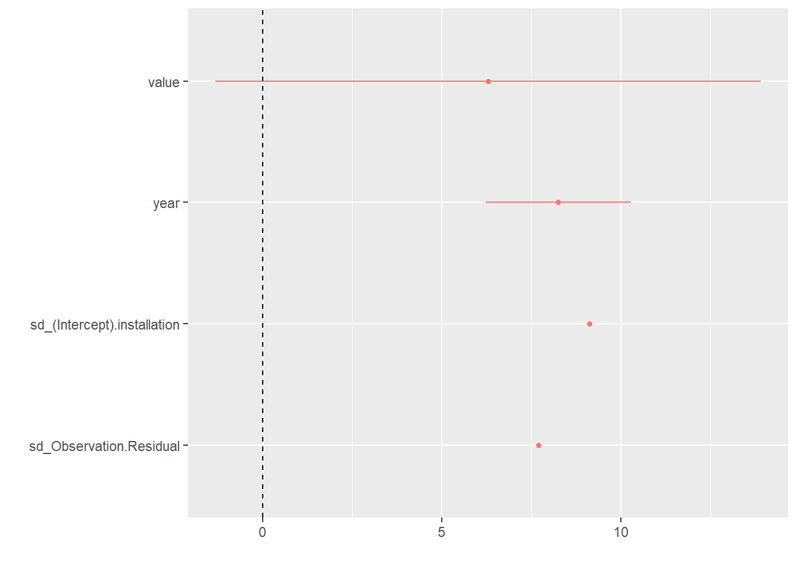
# Plot random effects to look for outliers
map(random_intercepts_nest$linear_models[1:5], ~dotplot(ranef(.x, condVar = TRUE)))## [[1]]
## [[1]]$installation
##
##
## [[2]]
## [[2]]$installation##
##
## [[3]]
## [[3]]$installation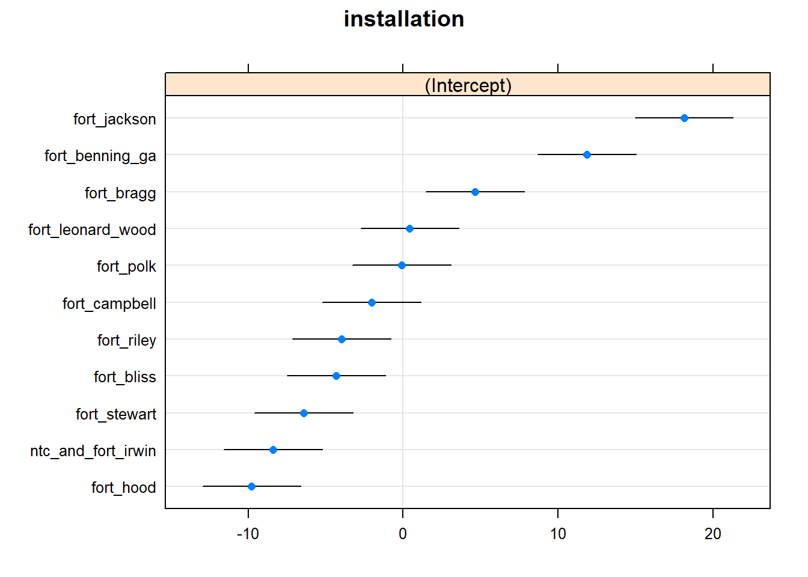
##
##
## [[4]]
## [[4]]$installation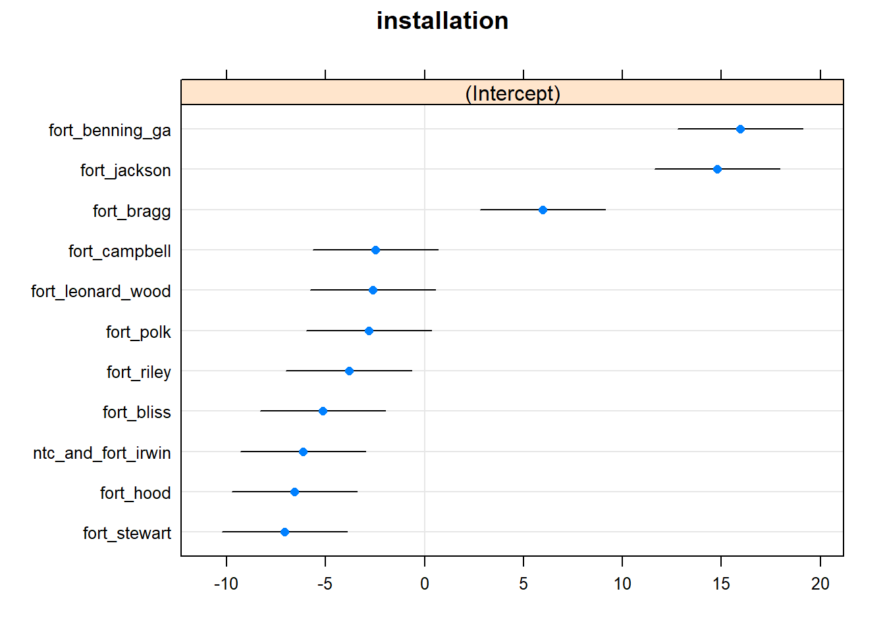
##
##
## [[5]]
## [[5]]$installation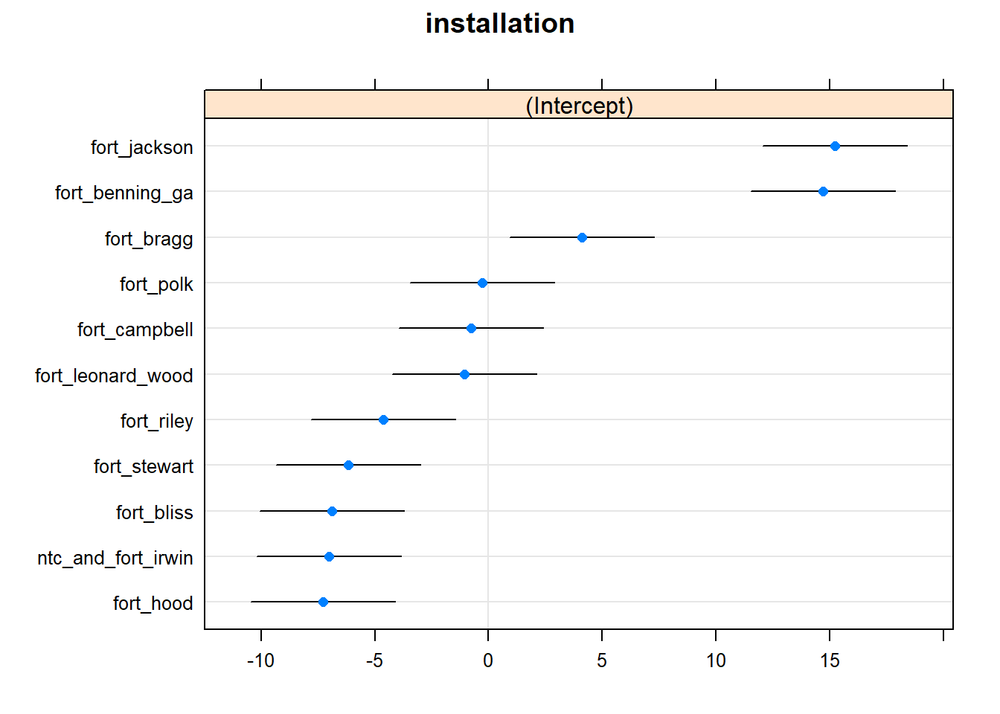
# Coefficient plot
map(random_intercepts_nest$linear_models[1:5], ~dotwhisker::dwplot(.x) + geom_vline(xintercept = 0, lty = 2))## [[1]]
##
## [[2]]##
## [[3]]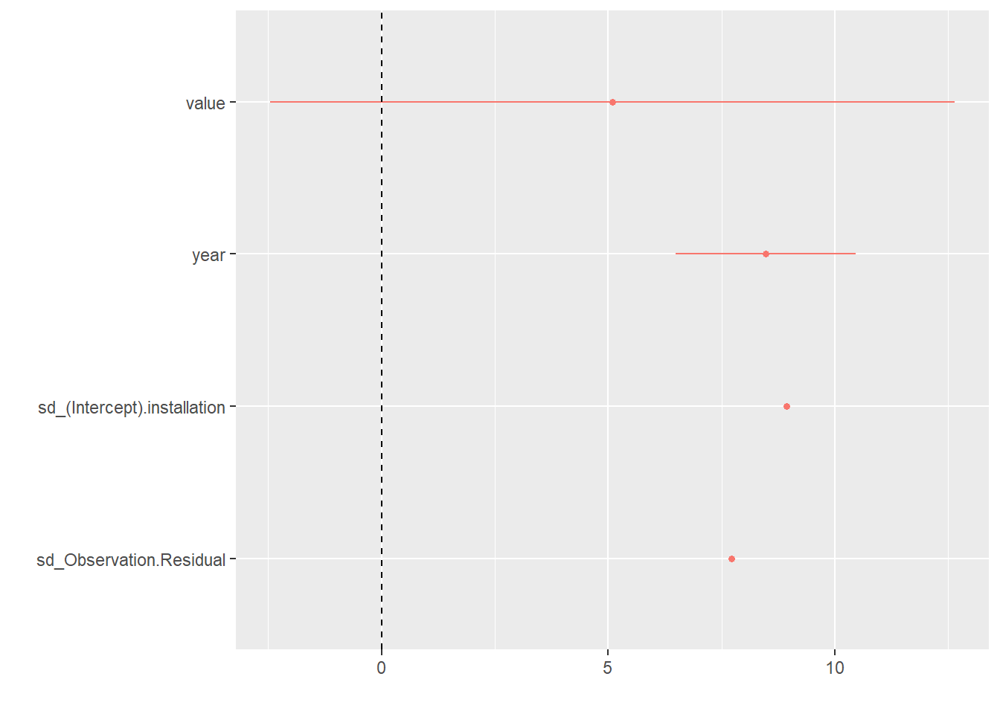
##
## [[4]]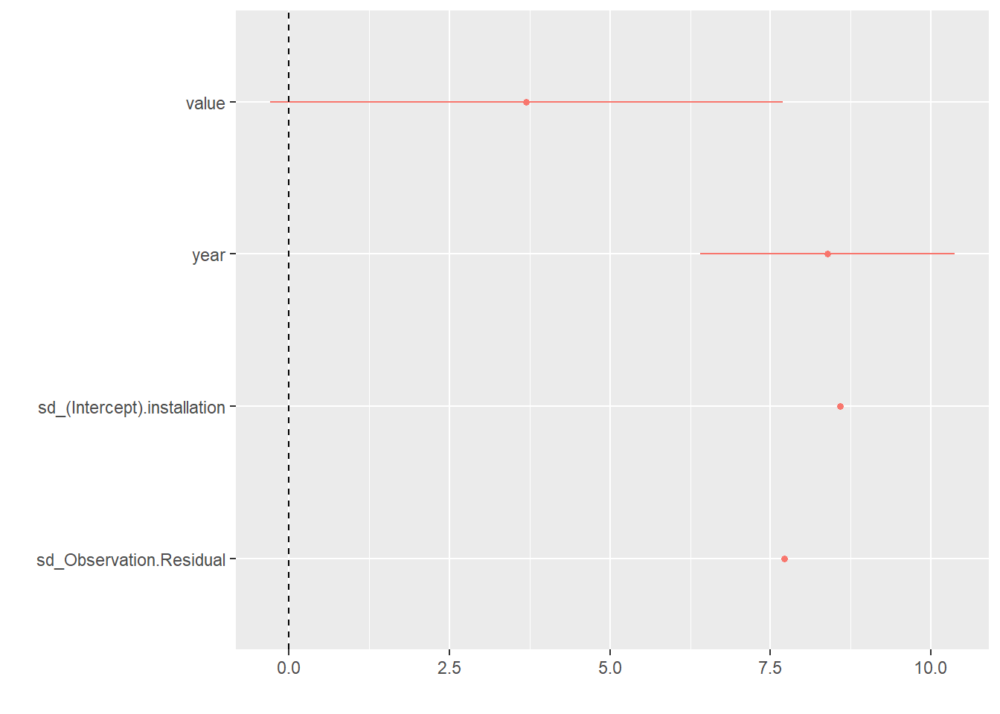
##
## [[5]]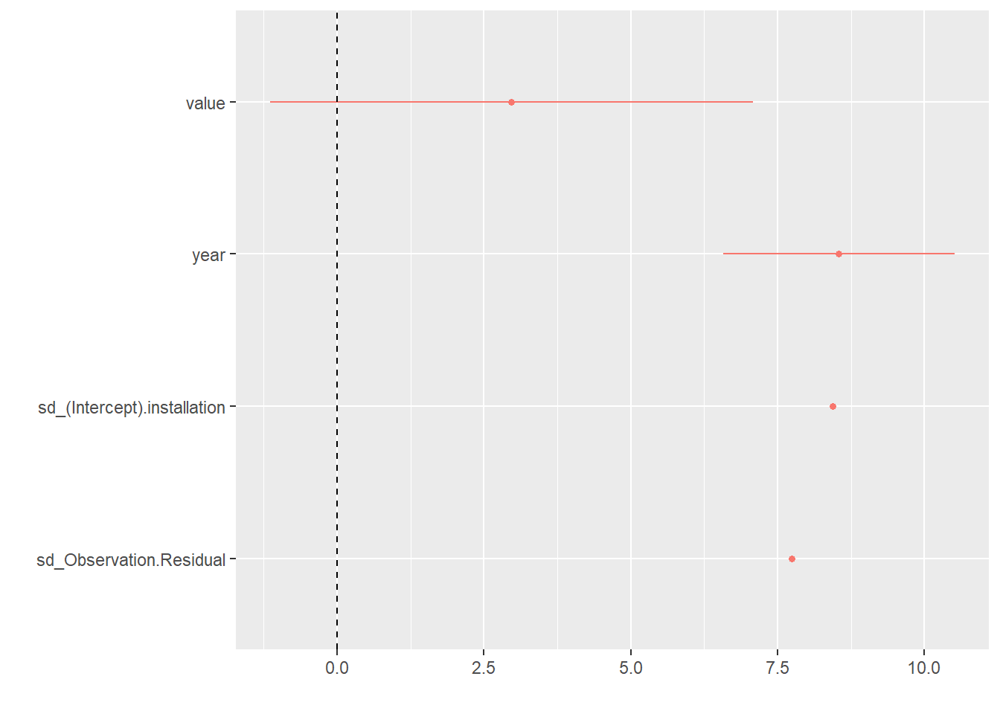